10.17. Resultados y evaluación integrada#
La evaluación comprende M4ₙ, con diez semillas, quince procedimientos de referencia, con cinco semillas cada uno, y dos referencias deterministas. Se comparten 1.461 orígenes diarios de 2022–2025 y 24 horizontes. Para un procedimiento con S_m realizaciones, la pérdida diaria individual media es:
La escala común es q₁₆₈=215.617,90361589 kWh. La comparación de M4ₙ se presenta primero; los apartados posteriores desarrollan la selección y los diagnósticos del benchmark de referencia.
Los cuatro procedimientos de demanda/calendario utilizan esas entradas; los once ampliados incorporan clima, hidrología y precio, con o sin documentos. Las máscaras y los presupuestos distintos limitan la atribución de diferencias a la arquitectura.
Se incluyen 136 parejas temporales entre quince procedimientos aprendidos y dos referencias, y 105 parejas entre los quince procedimientos con cinco semillas. Holm se aplica por tipo de prueba a su familia completa. Los tres contrastes textuales constituyen una familia exploratoria específica.
En el benchmark de referencia, la incertidumbre temporal utiliza bootstrap circular pareado de 14 días y 10000 réplicas, con sensibilidad de 7 y 28 días; condiciona las inicializaciones ejecutadas. Los diagnósticos de precisión, generalización, observado–predicho, segmentos, atípicos, importancia y latencia abarcan los procedimientos según sus conjuntos de entrada.
Tabla maestra de rendimiento y coste#
Se consolidan 18 procedimientos: M4, diez arquitecturas del Top 10, cuatro baselines, un control numérico y dos referencias ingenuas. Las métricas de prueba corresponden a los mismos 1.461 orígenes de 2022–2025. MASE y MAE promedian las pérdidas individuales entre semillas; RMSE promedia los RMSE individuales conservados. Los IC95 % son intervalos temporales puntuales del bootstrap estacionario pareado, con 49.999 réplicas y bloques medios de 14 días, condicionados a las inicializaciones conservadas. La DE muestra variabilidad entre semillas.
Desarrollo identifica la validación usada para seleccionar cada arquitectura y sus años. M4 presenta la media de las mejores pérdidas de parada interna de 2021 de sus diez semillas. Estos valores describen el procedimiento de desarrollo y no se ordenan como una validación homogénea.
El p conjunto frente a M4 es el máximo de nueve valores p ya ajustados por Holm(306): bootstrap, DM–HLN y GW en las configuraciones 14/13, 28/27 y 56/55. Se utiliza margen cero; el respaldo exige rechazo en los nueve contrastes. Bootstrap y DM son unilaterales; GW es bilateral. Los p conjuntos repetidos corresponden al límite de resolución del bootstrap. M4 no se compara consigo mismo.
El coste se mide en procesos separados, CPU de un hilo y lote uno. Se prefijan las fechas 2022-01-01, 2023-07-01 y 2025-12-31, con 20 calentamientos y 100 repeticiones por fecha. Se conserva una realización: semilla 101 para M4 y 1000 para cada comparador aprendido. La medición incluye normalización, máscaras, ejecución y desnormalización; M4 incluye sus tres expertos, M1 y memoria residual. Se excluyen carga de disco, construcción inicial de índices y generación de embeddings.
La RSS es memoria residente del proceso con datos y librerías, observada cada 1 ms; se informa también el tamaño de los parámetros. Los parámetros del pipeline incluyen módulos almacenados inactivos. El ajuste final muestra segundos guardados para la misma semilla de coste: en M4 suma expertos, M1 y corrector, sin búsqueda ni construcción OOF. El hardware de ajuste es heterogéneo y esos tiempos no constituyen una comparación controlada.
from pathlib import Path
import pandas as pd
from IPython.display import display, HTML
maestra_dir = Path("_static/resultados/tabla_maestra")
if not maestra_dir.exists():
maestra_dir = Path("book") / maestra_dir
maestra = pd.read_csv(maestra_dir / "tabla_maestra.csv", converters={"p_conjunto_Holm": lambda x: float(x) if x else float("nan")})
maestra_f = lambda x,n=4: "—" if pd.isna(x) else f"{x:,.{n}f}"
maestra_p = lambda x: "—" if pd.isna(x) else "<1e-300" if x==0 else f"{x:.3g}"
maestra_presentacion = pd.DataFrame({
"Procedimiento": maestra.modelo,
"Grupo / entradas": maestra.grupo + " / " + maestra.entradas,
"MASE desarrollo": [maestra_f(r.MASE_desarrollo)+" · "+r.fuente_desarrollo+" · "+r.periodo_desarrollo for _,r in maestra.iterrows()],
"MASE prueba · IC95 %": [maestra_f(r.MASE_prueba)+f" [{maestra_f(r.MASE_IC95_inf)}; {maestra_f(r.MASE_IC95_sup)}]" for _,r in maestra.iterrows()],
"MAE / RMSE (GWh)": [maestra_f(r.MAE_prueba_kWh/1e6)+" / "+maestra_f(r.RMSE_prueba_kWh/1e6)for _,r in maestra.iterrows()],
"Semillas": maestra.semillas_prueba,
"DE MASE entre semillas": maestra.MASE_DE_semillas.map(maestra_f),
"p conjunto Holm · M4": maestra.p_conjunto_Holm.map(maestra_p),
"Parámetros pipeline": maestra.parametros_pipeline.map(lambda x:f"{x:,}"),
"Latencia p50 / p95 (ms)": [maestra_f(r.latencia_mediana_ms,3)+" / "+maestra_f(r.latencia_p95_ms,3)for _,r in maestra.iterrows()],
"RSS observado (MiB)": maestra.RSS_MiB.map(lambda x:maestra_f(x,1)),
"Parámetros (MiB)": maestra.parametros_MiB.map(lambda x:maestra_f(x,2)),
"Semilla coste": maestra.semilla_coste.map(lambda x:"Determinista"if x==0 else str(x)),
"Ajuste final registrado (s)": maestra.ajuste_final_registrado_s.map(lambda x:maestra_f(x,2)),
"Dispositivo de ajuste registrado": maestra.dispositivo_ajuste
})
display(HTML(maestra_presentacion.to_html(index=False, escape=True)))
| Procedimiento | Grupo / entradas | MASE desarrollo | MASE prueba · IC95 % | MAE / RMSE (GWh) | Semillas | DE MASE entre semillas | p conjunto Holm · M4 | Parámetros pipeline | Latencia p50 / p95 (ms) | RSS observado (MiB) | Parámetros (MiB) | Semilla coste | Ajuste final registrado (s) | Dispositivo de ajuste registrado |
|---|---|---|---|---|---|---|---|---|---|---|---|---|---|---|
| M4ₙ | Propuesta / Numéricas ampliadas | 0.4786 · Parada interna · 2021 | 0.5770 [0.5471; 0.6079] | 0.1244 / 0.1660 | 10 | 0.0105 | — | 963,490 | 12.981 / 17.892 | 563.4 | 3.68 | 101 | 228.17 | CUDA, según registros de componentes |
| TimesNet | Top 10 / Numéricas ampliadas | 0.5244 · Validación de selección · 2018–2021 | 0.6429 [0.6094; 0.6762] | 0.1386 / 0.1816 | 5 | 0.0131 | 0.00204 | 328,266 | 34.839 / 50.013 | 539.0 | 1.25 | 1000 | 293.40 | cuda · NVIDIA GeForce RTX 5050 Laptop GPU |
| TaTS · N+O | Top 10 / Numéricas + documentos oficiales | 0.5157 · Validación de selección · 2018–2021 | 0.6684 [0.6337; 0.7031] | 0.1441 / 0.1888 | 5 | 0.0133 | 0.00204 | 1,428,380 | 28.342 / 36.843 | 744.2 | 5.45 | 1000 | 1,061.90 | cuda |
| PatchTST | Top 10 / Numéricas ampliadas | 0.5001 · Validación de selección · 2018–2021 | 0.6725 [0.6335; 0.7118] | 0.1450 / 0.1941 | 5 | 0.0178 | 0.00204 | 466,480 | 5.016 / 8.718 | 526.7 | 1.78 | 1000 | 147.70 | cuda |
| Fusión tardía · N+O | Top 10 / Numéricas + documentos oficiales | 0.5250 · Validación de selección · 2018–2021 | 0.7038 [0.6688; 0.7384] | 0.1518 / 0.1988 | 5 | 0.0282 | 0.00204 | 584,649 | 5.866 / 11.140 | 723.1 | 2.23 | 1000 | 423.90 | cuda |
| iTransformer | Top 10 / Numéricas ampliadas | 0.5604 · Validación de selección · 2018–2021 | 0.7418 [0.6956; 0.7895] | 0.1599 / 0.2077 | 5 | 0.0222 | 0.00204 | 321,816 | 1.524 / 3.677 | 537.9 | 1.23 | 1000 | 33.10 | cuda |
| MLP | Baselines E1 / Demanda + calendario | 0.5335 · Validación de selección · 2018–2021 | 0.7520 [0.7121; 0.7916] | 0.1621 / 0.2092 | 5 | 0.0438 | 0.00204 | 111,896 | 0.113 / 0.197 | 526.8 | 0.43 | 1000 | 4.45 | cuda |
| ARX | Referencia clásica / Demanda + calendario | 0.6838 · Validación de selección · 2018–2021 | 0.8517 [0.8112; 0.8932] | 0.1836 / 0.2460 | 5 | 0.0144 | 0.00204 | 14,424 | 0.067 / 0.162 | 527.2 | 0.06 | 1000 | 4.62 | cuda |
| CNN1D | Baselines E1 / Demanda + calendario | 0.6591 · Validación de selección · 2018–2021 | 0.8573 [0.8176; 0.8967] | 0.1849 / 0.2388 | 5 | 0.0654 | 0.00204 | 47,464 | 0.151 / 0.255 | 531.1 | 0.18 | 1000 | 4.95 | cuda |
| TCN | Top 10 / Numéricas ampliadas | 0.6354 · Validación de selección · 2018–2021 | 0.9266 [0.8702; 0.9827] | 0.1998 / 0.2514 | 5 | 0.0251 | 0.00204 | 169,944 | 2.614 / 3.886 | 534.8 | 0.65 | 1000 | 95.20 | cuda |
| N-BEATS | Top 10 / Numéricas ampliadas | 0.6908 · Validación de selección · 2018–2021 | 0.9533 [0.8934; 1.0139] | 0.2056 / 0.2617 | 5 | 0.0323 | 0.00204 | 49,464,960 | 23.183 / 29.030 | 902.7 | 188.69 | 1000 | 140.80 | cuda · NVIDIA GeForce RTX 5050 Laptop GPU |
| LSTM | Baselines E1 / Demanda + calendario | 0.7273 · Validación de selección · 2018–2021 | 1.0005 [0.9459; 1.0553] | 0.2157 / 0.2702 | 5 | 0.0523 | 0.00204 | 28,632 | 0.474 / 1.137 | 534.2 | 0.11 | 1000 | 12.05 | cuda |
| TGForecaster · N | Control numérico / Numéricas ampliadas | 0.7047 · Validación de selección · 2018–2021 | 1.0020 [0.9420; 1.0632] | 0.2160 / 0.2767 | 5 | 0.1434 | 0.00204 | 2,899,072 | 51.078 / 67.135 | 745.4 | 11.06 | 1000 | 1,452.50 | cuda |
| N-HiTS | Top 10 / Numéricas ampliadas | 0.9304 · Validación de selección · 2019–2021 | 1.0236 [0.9648; 1.0831] | 0.2207 / 0.2812 | 5 | 0.0571 | 0.00204 | 17,489,442 | 6.555 / 8.604 | 626.1 | 66.72 | 1000 | 20.62 | GPU · registro de hardware |
| TFT | Top 10 / Numéricas ampliadas | 0.7097 · Validación de selección · 2018–2021 | 1.0510 [1.0001; 1.1011] | 0.2266 / 0.2803 | 5 | 0.0633 | 0.00204 | 11,715,596 | 71.406 / 87.324 | 636.0 | 44.69 | 1000 | 1,002.40 | cuda |
| TGForecaster · N+O | Top 10 / Numéricas + documentos oficiales | 0.9126 · Validación de selección · 2018–2021 | 1.1224 [1.0653; 1.1791] | 0.2420 / 0.3052 | 5 | 0.2020 | 0.00204 | 326,464 | 6.580 / 11.607 | 742.1 | 1.25 | 1000 | 183.80 | cuda |
| ingenuo 168h | Referencias ingenuas / Demanda histórica | — · No ajustado · — | 1.3549 [1.2430; 1.4715] | 0.2921 / 0.4446 | 1 | — | 0.00204 | 0 | 0.006 / 0.011 | 536.2 | 0.00 | Determinista | 0.00 | No ajustado |
| ingenuo 24h | Referencias ingenuas / Demanda histórica | — · No ajustado · — | 2.0767 [2.0160; 2.1381] | 0.4478 / 0.6596 | 1 | — | 0.00204 | 0 | 0.004 / 0.006 | 533.6 | 0.00 | Determinista | 0.00 | No ajustado |
M4 conserva el menor MASE de prueba (0,5770), con una reducción de 10,25 % frente a TimesNet. Su pipeline requiere una mediana de 12,98 ms por origen, frente a 34,84 ms de TimesNet, bajo las mismas condiciones de medición. M4 almacena 963,490 parámetros en el pipeline completo; los 60.993 parámetros activos del corrector representan solo una parte de ese conjunto. ARX presenta la menor latencia entre los procedimientos aprendidos. La precisión y la rapidez permiten valorar compromisos diferentes; el orden de latencia depende del equipo y del contrato de entrada.
Tabla completa CSV · Mediciones por fecha · 5.400 tiempos individuales · Protocolo · Trazabilidad.
Código reproducible de medición y consolidación#
"""Coste homogéneo de dieciséis pipelines congelados; no ajusta modelos."""
from __future__ import annotations
from pathlib import Path
from collections import OrderedDict
import argparse,gc,hashlib,json,os,platform,subprocess,sys,threading,time
ROOT=Path(__file__).resolve().parents[1]
sys.path[:0]=[str(ROOT/'dashboard'),str(ROOT/'scripts')]
import numpy as np
import torch
from runtime_inferencia import Runtime,read,digest
from evaluar_robustez_congelada import Evaluator,RobustInputs
from medir_coste_m4 import rss
OUT=ROOT/'results/tabla_maestra_20261125'
DATES=['2022-01-01','2023-07-01','2025-12-31']
WARMUP=20
REPEATS=100
def write(path,obj):
path.parent.mkdir(parents=True,exist_ok=True)
path.write_text(json.dumps(obj,ensure_ascii=False,allow_nan=False,indent=2)+'\n',encoding='utf-8')
def worker(key):
torch.set_num_threads(1);torch.set_num_interop_threads(1)
torch.manual_seed(20261125)
r=Evaluator.__new__(Evaluator);Runtime.__init__(r)
r.inputs.__class__=RobustInputs
r.files={};r.selected_seed=None;r.red=None;r.aggregator=None
I=r.inputs;I.configure(DATES[0])
if '+O'in key or 'modelo7'in key:I.prepare_text()
gc.collect();before=rss()
reference=key.startswith('ingenuo_')
seed=0 if reference else 101 if key=='m4_n'else 1000
if not reference:r.load_model(key,seed)
modules=[]if reference else [m for m,_ in r.experts]+[r.router,r.memory]if key=='m4_n'else[r.red]
assert all(not m.training and not any(p.requires_grad for p in m.parameters())for m in modules)
parameters={id(p):p for m in modules for p in m.parameters()}
refs=read(ROOT/'results/inferencia_nativa_catalogo_20261124/referencias_python.json')
latencies=[];bydate=[];parity=[]
if reference:
hours=np.arange(24)
lag=168 if key=='ingenuo_168h'else 24*np.maximum(1,np.ceil((hours+2)/24).astype(int))
offsets=hours-lag
assert np.max(offsets)<=-2
# x_demanda tiene rezago de una hora: +1 recupera la hora original.
historical=I.raw['x_demanda_real_kwh'].to_numpy(copy=True)
def predict():return historical[I.index.get_loc(I.origin)+offsets+1].copy()
else:predict=r.predict_loaded
with torch.inference_mode():
for date in DATES:
I.configure(date)
output=predict()
assert output.shape==(24,)and np.isfinite(output).all()
if reference:
# La referencia se contrasta con la serie fuente; nunca se
# incorpora el objetivo futuro en el procedimiento cronometrado.
import pandas as pd
panel=pd.read_parquet(ROOT/'data/processed/panel_horario.parquet',columns=['y_demanda_real_kwh'])
position=panel.index.get_loc(I.origin)
expected=panel.iloc[position+offsets,0].to_numpy()
del panel
elif key=='m4_n':expected=r.expected(date)
else:expected=np.array(next(a['prediccion_kwh']for a in refs if a['model']==key and a['origin']==date and a['change']==0))
error=float(np.max(np.abs(output-expected)/np.maximum(np.abs(expected),1)))
assert error<1e-4,(key,date,error)
parity.append(dict(origen=date,max_error_relativo=error))
for _ in range(WARMUP):predict()
values=[]
for rep in range(REPEATS):
t=time.perf_counter_ns();predict();ms=(time.perf_counter_ns()-t)/1e6
values.append(ms);latencies.append(dict(clave=key,semilla=seed,origen=date,repeticion=rep,ms=ms))
bydate.append(dict(origen=date,mediana_ms=float(np.median(values)),p95_ms=float(np.quantile(values,.95))))
baseline=rss();samples=[baseline];stop=threading.Event()
def sample():
while not stop.is_set():samples.append(rss());stop.wait(.001)
thread=threading.Thread(target=sample,daemon=True);thread.start()
try:
for date in DATES:
I.configure(date)
for _ in range(30):predict()
finally:stop.set();thread.join()
for path,h in r.files.items():assert digest(Path(path))==h,path
values=[a['ms']for a in latencies]
result=dict(clave=key,semilla_coste=seed,mediana_ms=float(np.median(values)),p95_ms=float(np.quantile(values,.95)),
parametros_pipeline=sum(p.numel()for p in parameters.values()),bytes_parametros=sum(p.numel()*p.element_size()for p in parameters.values()),
RSS_antes_modelo_bytes=before,RSS_cargado_bytes=baseline,RSS_max_observado_bytes=max(samples),
RSS_incremento_inferencia_bytes=max(samples)-baseline,por_origen=bydate,paridad=parity,
mediciones=len(values),calentamiento_por_origen=WARMUP,lote=1,hilos=1,preparacion_numerica_incluida=True,
lectura_disco_incluida=False,embeddings_precalculados=True,entrenamiento=False,fuentes_sha256=r.files,
entorno=dict(sistema=platform.platform(),procesador=platform.processor(),python=platform.python_version(),torch=torch.__version__,cpu_logicas=os.cpu_count()))
write(OUT/'costes'/f'{key.replace("+","_")}.json',result)
write(OUT/'costes'/f'{key.replace("+","_")}_tiempos.json',latencies)
print(f'{key}: {result["mediana_ms"]:.3f} ms; p95 {result["p95_ms"]:.3f}; parámetros {result["parametros_pipeline"]:,}',flush=True)
def main():
parser=argparse.ArgumentParser();parser.add_argument('--modelo');args=parser.parse_args()
if args.modelo:return worker(args.modelo)
study=read(ROOT/'dashboard/site/data/study.json')
protocol=dict(fecha='2026-11-25',origenes=DATES,semillas='101 M4; 1000 comparadores, prefijadas',
dispositivo='CPU',hilos=1,lote=1,calentamiento=WARMUP,repeticiones_por_origen=REPEATS,
alcance='Pipeline preparado: normalización y máscaras, forward, desnormalización; M4 incluye tres expertos, M1, recuperación y corrección. Excluye lectura de disco, construcción inicial de índices y generación de embeddings.',
memoria='RSS total del proceso con datos y runtime, muestreado cada 1 ms; informar además tamaño de parámetros. La RSS observada no es memoria exclusiva del modelo ni pico garantizado.',
agregacion='Mediana y percentil95 sobre 300 mediciones, tres orígenes con el mismo peso; una realización prefijada por procedimiento.',
parametros='Total almacenado de módulos del pipeline, incluidos parámetros inactivos del checkpoint; sin confundir con parámetros entrenados del corrector M4.',
paridad='24 salidas finitas, error relativo máximo menor que1e-4 respecto a referencias congeladas del mismo origen y semilla.',
entrenamiento=False,publicacion=False)
file=OUT/'protocolo_coste.json'
if file.exists():assert read(file)==protocol
else:write(file,protocol)
for key in ['m4_n']+[m['id']for m in study['models']]+['ingenuo_168h','ingenuo_24h']:
file=OUT/'costes'/f'{key.replace("+","_")}.json'
if file.exists():
print(key+': medición conservada',flush=True);continue
subprocess.run([sys.executable,str(Path(__file__).resolve()),'--modelo',key],check=True)
if __name__=='__main__':main()
"""Tabla única de rendimiento y coste desde resultados y pesos conservados."""
from pathlib import Path
import hashlib,json,sys
import numpy as np
import pandas as pd
ROOT=Path(__file__).resolve().parents[1]
OUT=ROOT/'results/tabla_maestra_20261125'
Q=215617.90361589016
def read(p):return json.loads(Path(p).read_text(encoding='utf-8'))
def sha(p):
with Path(p).open('rb')as f:return hashlib.file_digest(f,'sha256').hexdigest()
def write(p,value):p.write_text(json.dumps(value,ensure_ascii=False,allow_nan=False,indent=2)+'\n',encoding='utf-8')
def consolidar():
sources=[ROOT/p for p in ['dashboard/site/data/study.json','dashboard/site/data/m4_results.json',
'results/evaluacion_e2/benchmark.csv','results/evaluacion_e2/metadatos_procedimientos.csv',
'results/sensibilidad_temporal_m4_20261125/contrastes_sensibilidad.csv',
'results/sensibilidad_temporal_m4_20261125/bootstrap_bloque_14.npz']]
study=read(sources[0]);m4=read(sources[1]);benchmark=pd.read_csv(sources[2]).set_index('clave')
metadata=pd.read_csv(sources[3]);tests=pd.read_csv(sources[4],converters={'p':float,'p_Holm':float})
models={m['id']:m for m in study['models']}
models['m4_n']=dict(id='m4_n',name='M4ₙ',group='Propuesta',inputs='Numéricas ampliadas')
for key in ['ingenuo_168h','ingenuo_24h']:
models[key]=dict(id=key,name=benchmark.loc[key,'modelo'],group='Referencias ingenuas',inputs='Demanda histórica')
with np.load(sources[5],allow_pickle=False)as z:
ci=np.quantile(z['medias'],[.025,.975],axis=0);ci_by={k:ci[:,i]for i,k in enumerate(z['claves'])}
records=[];costdates=[];timings=[];weights={};trace=[]
for key,model in models.items():
cf=OUT/'costes'/f'{key.replace("+","_")}.json';cost=read(cf);sources.append(cf)
raw=OUT/'costes'/f'{key.replace("+","_")}_tiempos.json';timings.extend(read(raw));sources.append(raw)
b=m4['benchmark']if key=='m4_n'else benchmark.loc[key].to_dict()
learned=key not in ['ingenuo_168h','ingenuo_24h']
dev=float(np.mean([c['mejor_perdida']for c in m4['checkpoints']]))if key=='m4_n'else model.get('validation')
dev_source='Parada interna'if key=='m4_n'else'Validación de selección'if learned else'No ajustado'
period='2021'if key=='m4_n'else model.get('validation_period','—')
selected=tests.loc[tests.comparator_id.eq(key)&tests.margen_relativo.eq(0)]
assert len(selected)==(0 if key=='m4_n'else 9)
pvalues={method:float(g.p_Holm.max())for method,g in selected.groupby('metodo')}
train_sources=[]
if key=='m4_n':
base=ROOT/'results/corrector_final_y_m1_gpu_20261122_150345/M1'
train_sources=[base/f'expertos_finales/{name}/semilla_101/TERMINADO.json'for name in ['patchtst','E','periodica']]
train_sources+=[base/'final/semilla_101/TERMINADO.json',ROOT/'results/m4_cierre_gpu_20261123/reducido_B/colombia/final/M4_N/semilla_101/TERMINADO.json']
training=float(sum(read(p)['segundos']for p in train_sources));device='CUDA, según registros de componentes'
elif learned:
a=metadata.loc[metadata.clave.eq(key)&metadata.semilla.eq(1000)]
assert len(a)==1,key
training=float(a.segundos.iloc[0]);device=str(a.dispositivo.iloc[0])
else:training=0.;device='No ajustado'
sources.extend(train_sources)
for rel,h in cost['fuentes_sha256'].items():
p=Path(rel);assert sha(p)==h,rel
name=Path(__import__('os').path.relpath(p,ROOT)).as_posix()
assert name not in weights or weights[name]==h
weights[name]=h
lo,hi=ci_by[key]
r=dict(clave=key,modelo=model['name'],grupo=model['group'],entradas=model['inputs'],
MASE_desarrollo=dev,fuente_desarrollo=dev_source,periodo_desarrollo=period,
MASE_prueba=float(b['MASE']),MASE_DE_semillas=float(b['MASE_sd']),
MASE_IC95_inf=float(lo),MASE_IC95_sup=float(hi),MAE_prueba_kWh=float(b['MAE']),RMSE_prueba_kWh=float(b['RMSE']),
semillas_prueba=int(b['semillas']),p_conjunto_Holm=None if key=='m4_n'else max(pvalues.values()),
p_bootstrap_Holm=pvalues.get('bootstrap_estacionario'),p_DM_HLN_Holm=pvalues.get('DM_HLN'),p_GW_Holm=pvalues.get('GW_bilateral'),
parametros_pipeline=cost['parametros_pipeline'],parametros_MiB=cost['bytes_parametros']/2**20,
latencia_mediana_ms=cost['mediana_ms'],latencia_p95_ms=cost['p95_ms'],RSS_MiB=cost['RSS_max_observado_bytes']/2**20,
RSS_incremento_inferencia_MiB=cost['RSS_incremento_inferencia_bytes']/2**20,
semilla_coste=cost['semilla_coste'],mediciones_coste=cost['mediciones'],
ajuste_final_registrado_s=training,dispositivo_ajuste=device)
assert abs(r['MAE_prueba_kWh']/Q-r['MASE_prueba'])<1e-10,key
assert lo<r['MASE_prueba']<hi,key
if learned and key!='m4_n':assert cost['parametros_pipeline']==model['params'],key
records.append(r)
costdates.extend([dict(clave=key,semilla=cost['semilla_coste'],**a)for a in cost['por_origen']])
trace.append(dict(clave=key,metricas='m4_results.json'if key=='m4_n'else'results/evaluacion_e2/benchmark.csv',
desarrollo='Media de diez mejores pérdidas internas M4 de 2021'if key=='m4_n'else'dashboard/site/data/study.json',
coste=cf.relative_to(ROOT).as_posix(),ajuste_final=';'.join(p.relative_to(ROOT).as_posix()for p in train_sources)if train_sources else'results/evaluacion_e2/metadatos_procedimientos.csv'if learned else'No ajustado'))
frame=pd.DataFrame(records).sort_values('MASE_prueba').reset_index(drop=True)
assert len(frame)==18 and frame.clave.is_unique and frame.grupo.eq('Top 10').sum()==10
frame.insert(0,'orden_descriptivo',np.arange(1,len(frame)+1))
frame.to_csv(OUT/'tabla_maestra.csv',index=False)
pd.DataFrame(costdates).to_csv(OUT/'coste_por_origen.csv',index=False)
pd.DataFrame(timings).to_csv(OUT/'tiempos_inferencia.csv',index=False)
pd.DataFrame(trace).to_csv(OUT/'trazabilidad.csv',index=False)
write(OUT/'pesos_y_escaladores_sha256.json',weights)
protocol=dict(fecha='2026-11-25',procedimientos=18,top10=10,baselines=4,control_numerico=1,propuesta=1,referencias_ingenuas=2,
periodo_prueba=['2022-01-01','2025-12-31'],origenes=1461,horizontes=24,Q_kWh=Q,
rendimiento='MASE y MAE: promedio de errores individuales de semillas; RMSE: media de RMSE individuales conservados. No puntuar el ensamble medio como si fuera la misma métrica.',
desarrollo='Validación de selección de cada arquitectura y sus años; M4 utiliza media de mejores pérdidas internas de 2021 de diez semillas. No ordenar estos valores como validación homogénea.',
IC_MASE='Percentiles puntuales del bootstrap estacionario pareado, 49.999 réplicas, bloque medio14 días, condicionado a semillas conservadas; misma familia de remuestreo para18procedimientos.',
significancia='p conjunto es el máximo de bootstrap unilateral, DM–HLN unilateral y GW bilateral en las configuraciones14/13,28/27,56/55, margen0, ya ajustados conjuntamente porHolm(306). No es un nuevo test ómnibus; se exige rechazo en los nueve contrastes para resumir respaldo estable. M4 no se compara consigo mismo.',
coste=read(OUT/'protocolo_coste.json'),
tiempo_ajuste='Registro del ajuste final de la semilla de coste:1000 por comparador,101 M4. M4 suma tres expertos, M1 y memoria; excluye búsqueda y generación de bases OOF. Hardware de origen heterogéneo: no usar estos segundos como comparación controlada de entrenamiento.',
entrenamiento=False,publicacion=False)
write(OUT/'protocolo.json',protocol)
m=frame.set_index('clave').loc['m4_n'];tn=frame.set_index('clave').loc['nuevo_timesnet__N']
eligible=frame.loc[~frame.grupo.eq('Referencias ingenuas')]
bestcost=eligible.sort_values('latencia_mediana_ms').iloc[0]
summary=dict(procedimientos=len(frame),semillas_prueba=int(frame.semillas_prueba.sum()),mediciones=len(timings),
M4_MASE=float(m.MASE_prueba),M4_latencia_ms=float(m.latencia_mediana_ms),TimesNet_latencia_ms=float(tn.latencia_mediana_ms),
reduccion_MASE_TimesNet_pct=float(100*(1-m.MASE_prueba/tn.MASE_prueba)),ratio_latencia_M4_TimesNet=float(m.latencia_mediana_ms/tn.latencia_mediana_ms),
parametros_M4=int(m.parametros_pipeline),procedimiento_aprendido_menor_latencia=bestcost['modelo'],
rechazo_estable_comparadores=int(frame.p_conjunto_Holm.lt(.05).sum()),entrenamiento=False,publicacion=False)
write(OUT/'resumen.json',summary)
write(OUT/'verificacion.json',dict(fuentes_sha256={p.relative_to(ROOT).as_posix():sha(p)for p in sources},
pesos_verificados=len(weights),paridad_Q=True,procedimientos_completos=True,mediciones_por_procedimiento=300,
resultados_sha256={p.name:sha(p)for p in OUT.glob('*.csv')},entrenamiento=False,publicacion=False))
print(frame[['modelo','MASE_prueba','latencia_mediana_ms','parametros_pipeline','RSS_MiB']].to_string(index=False))
if __name__=='__main__':consolidar()
python scripts/medir_tabla_maestra.py
python scripts/consolidar_tabla_maestra.py
python scripts/integrar_tabla_maestra.py
from pathlib import Path
import json
import numpy as np
import pandas as pd
import matplotlib
matplotlib.use('Agg')
import matplotlib.pyplot as plt
from scipy import stats
from IPython.display import display
e2_ROOT = next((e2_p for e2_p in [Path.cwd(), *Path.cwd().parents] if (e2_p / 'results/evaluacion_e2/protocolo.json').exists()))
e2_RESULT = e2_ROOT / 'results/evaluacion_e2'
e2_protocolo = json.loads((e2_RESULT / 'protocolo.json').read_text(encoding='utf-8'))
e2_benchmark = pd.read_csv(e2_RESULT / 'benchmark.csv')
e2_nombres = dict(zip(e2_benchmark.clave, e2_benchmark.modelo))
plt.rcParams.update({'font.size': 10, 'axes.spines.top': False, 'axes.spines.right': False})
from pathlib import Path
import json, hashlib, itertools
import numpy as np
import pandas as pd
import matplotlib
matplotlib.use('Agg')
import matplotlib.pyplot as plt
from scipy import stats
from statsmodels.stats.multitest import multipletests
from IPython.display import display
ROOT = next((p for p in [Path.cwd(), *Path.cwd().parents] if (p / 'results/jbook/modelos_actualizados.json').exists()))
procedencia = json.loads((ROOT / 'results/jbook/modelos_actualizados.json').read_text(encoding='utf-8'))
SHA = procedencia['commit']
SNAP = ROOT / 'results/repositorio' / SHA
C = SNAP / 'results/consolidado'
OUT = ROOT / 'results/jbook/modelos_actuales'
OUT.mkdir(parents=True, exist_ok=True)
registro = json.loads((C / 'modelos.json').read_text(encoding='utf-8'))
modelos = ['mlp', 'arx_lineal', 'cnn1d', 'lstm']
neuronales = ['mlp', 'cnn1d', 'lstm']
etiquetas = {'mlp': 'MLP', 'arx_lineal': 'ARX', 'cnn1d': 'CNN1D', 'lstm': 'LSTM', 'ingenuo_24h': 'Ingenuo diario', 'ingenuo_168h': 'Ingenuo semanal'}
plt.rcParams.update({'figure.figsize': (10, 4), 'axes.spines.top': False, 'axes.spines.right': False, 'axes.grid': True, 'grid.alpha': 0.15})
importacion = json.loads((SNAP / 'IMPORTACION.json').read_text(encoding='utf-8'))
huellas = {x['archivo']: x for x in importacion['archivos']}
indice = pd.read_csv(C / 'indice_artefactos_v3_v4.csv')
assert len(indice) == 2304 and (not indice.archivo.duplicated().any())
for fila in indice.itertuples():
if fila.archivo.endswith(('.pt', '.pth')): continue
p = SNAP / fila.archivo
assert p.stat().st_size == fila.bytes
assert hashlib.sha256(p.read_bytes()).hexdigest() == fila.sha256 == huellas[fila.archivo]['sha256']
runs = []
pilotos = []
confirmaciones = []
filtros = []
pred = {}
carpetas = {}
escaladores = {}
historias = {}
y = None
origen = None
for nombre in modelos:
r = registro[nombre]
carpeta = SNAP / 'results' / r['ejecucion']
seleccion = r['configuracion']['id']
pp = pd.read_csv(carpeta / 'piloto.csv')
pp = pp.loc[(pp.modelo == nombre) & (pp.configuracion == seleccion)]
assert len(pp) == 20 and (not pp.duplicated(['semilla', 'fold']).any())
pilotos.append(pp)
pila = []
for a in sorted(r['artefactos'], key=lambda a: a['semilla']):
met = json.loads((SNAP / a['metricas']).read_text(encoding='utf-8'))
esc = json.loads((SNAP / a['escaladores']).read_text(encoding='utf-8'))
historia = pd.DataFrame(json.loads((SNAP / a['historial']).read_text(encoding='utf-8')))
assert met['semilla'] == a['semilla'] and met['params'] == r['configuracion']['params']
assert met['configuracion'] == seleccion and len(historia) == met['epocas']
assert historia.epoca.tolist() == list(range(1, len(historia) + 1))
assert met['mejor_epoca'] == int(historia.val_loss.idxmin() + 1)
assert pd.Timestamp(esc['fin_ajuste']) < pd.Timestamp('2022-01-01', tz='America/Bogota')
with np.load(SNAP / a['predicciones'], allow_pickle=False) as z:
if y is None:
y = z['y'].astype(float)
origen = z['origen'].copy()
assert np.array_equal(y, z['y']) and np.array_equal(origen, z['origen'])
assert z['yhat'].shape == y.shape and np.isfinite(z['yhat']).all()
pila.append(z['yhat'].astype(float))
runs.append(met)
historias[nombre, a['semilla']] = historia
carpetas[nombre, a['semilla']] = SNAP / a['pesos']
escaladores[nombre, a['semilla']] = esc
pred[nombre] = np.stack(pila)
piloto = pd.concat(pilotos, ignore_index=True)
runs = pd.DataFrame(runs)
assert len(runs) == 20 and (not runs.duplicated(['modelo', 'semilla']).any())
assert all((set(d.semilla) == set(range(1000, 1005)) for _, d in runs.groupby('modelo')))
fechas = pd.to_datetime(origen, unit='ns', utc=True).tz_convert('America/Bogota')
assert fechas.equals(pd.date_range('2022-01-01', '2025-12-31', freq='D', tz='America/Bogota'))
assert y.shape == (1461, 24) and np.isfinite(y).all()
escala = float(escaladores['mlp', 1000]['escala_mase'])
loss_h = {}
loss_d = {}
residuos = {}
calculadas = []
for nombre in modelos:
errores = pred[nombre] - y[None, :, :]
loss_h[nombre] = np.abs(errores).mean(axis=0) / escala
loss_d[nombre] = loss_h[nombre].mean(axis=1)
residuos[nombre] = errores[0]
for j, semilla in enumerate(range(1000, 1005)):
e = errores[j]
mae = np.abs(e).mean()
rmse = np.sqrt(np.mean(e ** 2))
m = dict(modelo=nombre, semilla=semilla, MASE=mae / escala, MAE=mae, RMSE=rmse, R2=1 - np.mean(e ** 2) / np.var(y), sesgo=e.mean(), sMAPE=(200 * np.abs(e) / (np.abs(pred[nombre][j]) + np.abs(y))).mean())
original = runs.loc[(runs.modelo == nombre) & (runs.semilla == semilla)].iloc[0]
assert np.allclose([m[k] for k in ['MASE', 'MAE', 'RMSE', 'sMAPE']], [original[k] for k in ['MASE', 'MAE', 'RMSE', 'sMAPE']], rtol=2e-06)
calculadas.append(m)
calculadas = pd.DataFrame(calculadas)
seleccion_publicada = pd.read_csv(C / 'modelos_seleccionados.csv').set_index('modelo')
assert np.allclose(calculadas.groupby('modelo').MASE.mean().sort_index(), seleccion_publicada.MASE_prueba.sort_index())
referencias = json.loads((C / 'referencias_test.json').read_text(encoding='utf-8'))
filas = []
for nombre in modelos:
d = calculadas.loc[calculadas.modelo == nombre]
media = d.MASE.mean()
sd = d.MASE.std(ddof=1)
ancho = stats.t.ppf(0.975, len(d) - 1) * sd / np.sqrt(len(d))
filas.append(dict(familia=nombre, Modelo=etiquetas[nombre], n=len(d), MASE=media, DE=sd, IC95_inf=media - ancho, IC95_sup=media + ancho, MAE_kWh=d.MAE.mean(), RMSE_kWh=d.RMSE.mean(), sMAPE_pct=d.sMAPE.mean(), R2=d.R2.mean(), sesgo_kWh=d.sesgo.mean(), parametros=int(runs.loc[runs.modelo == nombre, 'n_parametros'].iloc[0]), ajuste_s=float(runs.loc[runs.modelo == nombre, 'segundos'].median())))
for nombre, m in referencias.items():
filas.append(dict(familia=nombre, Modelo=etiquetas[nombre], n=1, MASE=m['MASE'], DE=np.nan, IC95_inf=np.nan, IC95_sup=np.nan, MAE_kWh=m['MAE'], RMSE_kWh=m['RMSE'], sMAPE_pct=m['sMAPE'], R2=1 - m['RMSE'] ** 2 / np.var(y), sesgo_kWh=np.nan, parametros=0, ajuste_s=np.nan))
benchmark = pd.DataFrame(filas).sort_values('MASE').reset_index(drop=True)
benchmark.insert(0, 'rango', np.arange(1, len(benchmark) + 1))
for fase, destino in [('filtro', filtros), ('confirmacion', confirmaciones)]:
for ruta in sorted(set((r['ejecucion'] for r in registro.values()))):
destino.append(pd.read_csv(SNAP / 'results' / ruta / (fase + '.csv')))
filtro = pd.concat(filtros, ignore_index=True)
confirmacion = pd.concat(confirmaciones, ignore_index=True)
assert len(filtro) == 90 and len(confirmacion) == 144
mejor = benchmark.loc[benchmark.familia == 'mlp'].iloc[0]
reduccion_semanal = 100 * (1 - mejor.MASE / referencias['ingenuo_168h']['MASE'])
mae_mlp = float(mejor.MAE_kWh)
mase_mlp = float(mejor.MASE)
formato_p = lambda x: '<1e-300' if x == 0 else f'{x:.3g}'
# Predicciones seleccionadas, alineadas por semilla, origen y hora.
g_result = ROOT/'results/evaluacion_e2'
g_benchmark = pd.read_csv(g_result/'benchmark.csv').set_index('clave')
g_keys = g_benchmark.index[g_benchmark.semillas.eq(5)].tolist()
g_names = g_benchmark.modelo.to_dict()
g_meta = pd.read_csv(g_result/'metadatos_procedimientos.csv')
g_pilots = pd.read_csv(g_result/'pilotos_disponibles.csv')
g_pred = {k: pred[k].copy() for k in modelos}
g_y = y.copy()
g_dates = fechas.copy()
g_q = escala
g_df = pd.read_parquet(g_result/'entradas/consolidado/predicciones_finales.parquet')
for (g_exp,g_variant),g_group in g_df.groupby(['experimento','variante'],sort=False):
g_key = g_exp+'__'+g_variant
if g_key not in g_keys: continue
g_arrays = []
for g_seed,g_rows in g_group.groupby('semilla',sort=True):
g_rows = g_rows.sort_values(['origen','horizonte'])
assert g_seed in range(1000,1005)
assert np.allclose(g_rows.observado_kwh.to_numpy().reshape(1461,24),g_y,atol=1e-6)
assert pd.DatetimeIndex(g_rows.origen.drop_duplicates()).tz_convert('America/Bogota').equals(g_dates)
assert np.array_equal(g_rows.horizonte.to_numpy(),np.tile(np.arange(1,25),1461))
g_arrays.append(g_rows.predicho_kwh.to_numpy().reshape(1461,24))
g_pred[g_key] = np.stack(g_arrays)
assert set(g_pred)==set(g_keys)
g_daily = {}
for g_k in g_keys:
assert g_pred[g_k].shape==(5,1461,24) and np.isfinite(g_pred[g_k]).all()
g_error = g_pred[g_k]-g_y[None]
g_daily[g_k] = np.abs(g_error).mean(axis=(0,2))/g_q
assert np.isclose(g_daily[g_k].mean(),g_benchmark.loc[g_k,'MASE'],rtol=2e-6)
assert np.isclose(np.sqrt((g_error**2).mean(axis=(1,2))).mean(),g_benchmark.loc[g_k,'RMSE'],rtol=2e-6)
g_figures = g_result/'figuras'
g_figures.mkdir(exist_ok=True)
# Inventario de precisión de desarrollo: una fuente por procedimiento.
v_pilot=g_pilots.groupby(['clave','semilla'],as_index=False).MASE.mean()
v_pilot['Fuente']='Piloto externo';v_pilot['Periodo']='2018–2021 · media de cuatro años'
v_stop=pd.read_csv(g_result/'entradas_precision_parada.csv')
v_stop=v_stop[['clave','semilla','MASE_parada']].rename(columns={'MASE_parada':'MASE'})
v_stop['Fuente']='Parada interna';v_stop['Periodo']='2019-10-21 a 2021-12-31 · 803 días'
assert set(v_pilot.clave).isdisjoint(set(v_stop.clave))
v_seeds=pd.concat([v_pilot,v_stop],ignore_index=True)
assert len(v_seeds)==5*len(g_keys) and set(v_seeds.clave)==set(g_keys)
assert not v_seeds.duplicated(['clave','semilla']).any()
assert v_seeds.groupby('clave').size().eq(5).all()
v_precision=v_seeds.groupby('clave').agg(MASE_media=('MASE','mean'),DE=('MASE','std'),
Semillas=('semilla','count'),Fuente=('Fuente','first'),Periodo=('Periodo','first')).reindex(g_keys)
v_precision['CV_pct']=100*v_precision.DE/v_precision.MASE_media
v_width=stats.t.ppf(.975,4)*v_precision.DE/np.sqrt(5)
v_precision['IC95_inf']=v_precision.MASE_media-v_width
v_precision['IC95_sup']=v_precision.MASE_media+v_width
v_precision.insert(0,'Procedimiento',[g_names[k] for k in v_precision.index])
v_precision.to_csv(g_result/'precision_desarrollo_resumen.csv',index_label='clave')
v_seeds.to_csv(g_result/'precision_desarrollo_semillas.csv',index=False)
assert np.allclose(v_precision.loc[v_stop.clave.unique(),'MASE_media'],
v_stop.groupby('clave').MASE.mean().reindex(v_stop.clave.unique()))
M4ₙ: evaluación frente al Top 10 y los baselines#
La propuesta numérica conserva la configuración 6 y se evalúa con diez inicializaciones (101–110), sobre 1.461 orígenes diarios de 2022–2025 y 24 horas por origen. El ajuste de la memoria utiliza 2013–2020 y la reserva interna de 2021 determina el checkpoint restaurado. La base y los pesos de la memoria permanecen congelados durante prueba; el banco solo incorpora residuos completos admitidos por el retraso de dos días.
La pérdida diaria del procedimiento promedia primero los errores individuales de sus semillas:
M4ₙ utiliza diez semillas; el Top 10 y los baselines aprendidos conservan cinco. No se emparejan semillas por su identificador: la comparación temporal utiliza los mismos días y promedia las pérdidas entre inicializaciones. La evaluación es retrospectiva. Los resultados de la propuesta se distinguen de los diagnósticos del benchmark de referencia presentados después.
Desempeño agregado#
Las métricas de todos los procedimientos se reúnen en la tabla maestra.
from pathlib import Path
import json
import numpy as np
import pandas as pd
import matplotlib
matplotlib.use('Agg')
import matplotlib.pyplot as plt
from IPython.display import display
m4_root=next(p for p in [Path.cwd(),*Path.cwd().parents] if (p/'results/m4_cierre_gpu_20261123/reducido_B/resumen_resultados.csv').exists())
m4_run=m4_root/'results/m4_cierre_gpu_20261123/reducido_B'
m4_out=m4_root/'results/evaluacion_m4_jbook'
m4_out.mkdir(exist_ok=True)
m4_catalog=pd.read_json(m4_out/'catalogo_comparadores.json')
m4_benchmark=pd.read_csv(m4_root/'results/evaluacion_e2/benchmark.csv').set_index('clave')
m4_q=float(json.loads((m4_root/'results/evaluacion_e2/protocolo.json').read_text(encoding='utf-8'))['q168'])
m4_seeds=list(range(101,111))
m4_predictions=[];m4_history=[];m4_checkpoints=[];m4_seed_metrics=[]
for m4_seed in m4_seeds:
with np.load(m4_run/f'colombia/prueba/M4_N_semilla_{m4_seed}.npz',allow_pickle=False) as m4_z:
if not m4_predictions:
m4_dates=pd.to_datetime(m4_z['dia']);m4_y=m4_z['y'].astype(float)
assert np.array_equal(m4_z['dia'],m4_dates.strftime('%Y-%m-%d'))
assert np.array_equal(m4_z['y'],m4_y)
m4_pred=m4_z['pred'].astype(float)
assert m4_pred.shape==(1461,24) and np.isfinite(m4_pred).all()
m4_predictions.append(m4_pred)
m4_folder=m4_run/f'colombia/final/M4_N/semilla_{m4_seed}'
m4_hist=pd.read_csv(m4_folder/'historia.csv');m4_hist['semilla']=m4_seed
m4_ck=json.loads((m4_folder/'TERMINADO.json').read_text(encoding='utf-8'))
assert m4_ck['mejor_epoca']==int(m4_hist.loc[m4_hist.perdida_parada.idxmin(),'epoca'])
assert np.isclose(m4_ck['mejor_perdida'],m4_hist.perdida_parada.min())
m4_history.append(m4_hist);m4_checkpoints.append(m4_ck)
m4_error=m4_pred-m4_y
m4_seed_metrics.append({'semilla':m4_seed,'MASE':np.abs(m4_error).mean()/m4_q,
'MAE':np.abs(m4_error).mean(),'RMSE':np.sqrt(np.square(m4_error).mean())})
m4_predictions=np.stack(m4_predictions);m4_history=pd.concat(m4_history,ignore_index=True)
m4_seed_metrics=pd.DataFrame(m4_seed_metrics);m4_checkpoints=pd.DataFrame(m4_checkpoints)
m4_saved=pd.read_csv(m4_run/'metricas_por_semilla.csv').query("modelo=='M4_N'").set_index('semilla')
assert np.allclose(m4_seed_metrics.set_index('semilla').MASE,m4_saved.MASE,rtol=1e-8)
assert m4_dates.equals(pd.date_range('2022-01-01','2025-12-31',freq='D'))
m4_daily=np.abs(m4_predictions-m4_y[None]).mean(axis=(0,2))/m4_q
m4_table=m4_benchmark.loc[m4_catalog.clave,['modelo','MASE','MASE_sd','MAE','RMSE','semillas']].copy()
m4_table.loc['M4_N']=['M4ₙ',m4_seed_metrics.MASE.mean(),m4_seed_metrics.MASE.std(ddof=1),
m4_seed_metrics.MAE.mean(),m4_seed_metrics.RMSE.mean(),len(m4_seeds)]
m4_table=m4_table.sort_values('MASE')
m4_table.to_csv(m4_out/'benchmark_m4_top10_baselines.csv',index_label='clave')
m4_top=m4_catalog.query("grupo=='Top 10'")
m4_best_key=m4_benchmark.loc[m4_top.clave].MASE.idxmin()
m4_best_name=m4_catalog.set_index('clave').loc[m4_best_key,'nombre']
assert m4_best_key=='nuevo_timesnet__N'
m4_ref_predictions=[]
for m4_file in sorted((m4_root/'results/m4_cierre_gpu_20261123/historicos_nbeats_timesnet/predicciones/TimesNet').glob('*.npz')):
with np.load(m4_file,allow_pickle=False) as m4_z:
assert np.array_equal(m4_z['y'],m4_y)
assert np.array_equal(m4_z['dia'],m4_dates.strftime('%Y-%m-%d'))
m4_ref_predictions.append(m4_z['yhat_lote1_kwh'].astype(float))
m4_ref_predictions=np.stack(m4_ref_predictions)
assert m4_ref_predictions.shape==(5,1461,24)
assert np.isclose(np.abs(m4_ref_predictions-m4_y).mean()/m4_q,m4_benchmark.loc[m4_best_key,'MASE'],rtol=1e-6,atol=1e-8)
m4_comparators={('historico_TimesNet' if r.clave=='nuevo_timesnet__N' else 'historico_NBEATS' if r.clave=='nuevo_nbeats__N' else 'historico_'+r.clave):r.nombre for r in m4_top.itertuples()}
m4_tests=pd.read_csv(m4_run/'ampliacion_top10/contrastes_F2_Top10_completo.csv')
m4_tests=m4_tests.loc[m4_tests.A.eq('M4_N')&m4_tests.B.isin(m4_comparators)].copy()
m4_tests['Comparador']=m4_tests.B.map(m4_comparators)
assert len(m4_tests)==len(m4_top)*3*2 and len(m4_top)==10
assert not m4_tests.duplicated(['B','metodo','margen_relativo']).any()
m4_tests.to_csv(m4_out/'contrastes_m4_top10.csv',index=False)
m4_forest=m4_tests.loc[m4_tests.metodo.eq('bootstrap_estacionario')&m4_tests.margen_relativo.eq(0)].sort_values('ganancia_relativa')
plt.rcParams.update({'font.size':10,'axes.spines.top':False,'axes.spines.right':False,'figure.dpi':110})
M4ₙ alcanza MASE 0,5770, MAE 0,1244 GWh y RMSE 0,1660 GWh por intervalo. La desviación estándar de MASE entre sus diez semillas es 0,0105. La pérdida normalizada de parada interna de 2021, en los checkpoints restaurados, es 0,4786 ± 0,0062 entre semillas; esa reserva participa en la selección de época. Su error medio de prueba es menor que el de los diez modelos del Top 10 y los cuatro baselines de la tabla maestra; este orden descriptivo se complementa con los contrastes temporales siguientes.
Ganancia relativa frente al Top 10#
La reducción se calcula respecto de cada comparador: un porcentaje positivo favorece a M4ₙ. Los intervalos son puntuales del 95 % y se obtienen con bootstrap estacionario pareado; la significación se decide con las cotas ajustadas de Holm, no por la inspección aislada de cada intervalo.
m4_fig,m4_ax=plt.subplots(figsize=(10,5.5))
m4_g=100*m4_forest.ganancia_relativa.to_numpy()
m4_lo=100*m4_forest.ic95_inf.to_numpy();m4_hi=100*m4_forest.ic95_sup.to_numpy()
m4_ax.errorbar(m4_g,np.arange(len(m4_g)),xerr=np.vstack([m4_g-m4_lo,m4_hi-m4_g]),fmt='o',color='#146c70',ecolor='#38535c',capsize=3)
m4_ax.set_yticks(np.arange(len(m4_g)),m4_forest.Comparador)
m4_ax.axvline(0,color='#71828a',lw=1);m4_ax.axvline(3,color='#bc7734',ls='--',label='Margen relativo del 3 %')
m4_ax.set_xlabel('Reducción del MAE/MASE de M4ₙ frente al comparador (%) · IC95 % puntual')
m4_ax.grid(axis='x',alpha=.15);m4_ax.legend(frameon=False)
m4_fig.tight_layout();m4_fig.savefig(m4_out/'ganancia_top10.png',dpi=170)
display(m4_fig);plt.close(m4_fig)
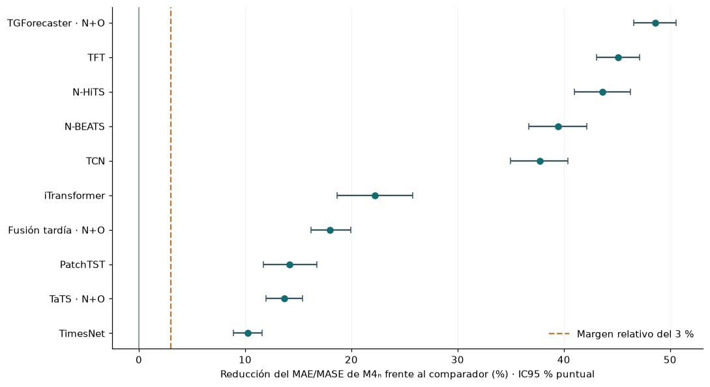
La reducción relativa frente al Top 10 va de 10,25 % (TimesNet) a 48,59 % (TGForecaster · N+O). Frente a TimesNet, la mejora es 10,25 %, con IC95 % puntual [8,90 %; 11,60 %]. La ganancia se estima sobre los mismos días y no sobre muestras horarias tratadas como independientes.
Contrastes temporales y margen de mejora#
Se presentan los contrastes guardados de M4ₙ frente a las diez arquitecturas. El bootstrap utiliza 49.999 réplicas y longitud esperada de bloque de 14 días; DM–HLN utiliza HAC de 13 rezagos. GW es bilateral y usa un instrumento observable con retraso de dos días. Se conservan las cotas de Holm de la familia registrada de 1.536 hipótesis, sin recalcularlas sobre este subconjunto. Las hipótesis no ejecutadas no se interpretan como pruebas observadas. La columna de mejora superior al 3 % procede del contraste correspondiente, distinto de la mera superioridad sobre cero.
m4_p=m4_tests.loc[m4_tests.margen_relativo.eq(0)].pivot(index='Comparador',columns='metodo',values='p_holm_cota_familia1536')
m4_p=m4_p.reindex(m4_forest.Comparador)
m4_p3=m4_tests.loc[m4_tests.metodo.eq('bootstrap_estacionario')&m4_tests.margen_relativo.eq(.03)].set_index('Comparador').p_holm_cota_familia1536
m4_p['Bootstrap · mejora >3 %']=m4_p3
m4_p=m4_p.rename(columns={'DM_HLN':'DM–HLN · mejora >0','GW_bilateral':'GW bilateral','bootstrap_estacionario':'Bootstrap · mejora >0'})
display(m4_p[['DM–HLN · mejora >0','Bootstrap · mejora >0','GW bilateral','Bootstrap · mejora >3 %']].style.format(lambda x:f'{x:.3g}'))
m4_p.to_csv(m4_out/'contrastes_top10_resumen.csv')
| metodo | DM–HLN · mejora >0 | Bootstrap · mejora >0 | GW bilateral | Bootstrap · mejora >3 % |
|---|---|---|---|---|
| Comparador | ||||
| TimesNet | 2.61e-42 | 0.0286 | 7.71e-45 | 0.0286 |
| TaTS · N+O | 2e-51 | 0.0286 | 5.42e-57 | 0.0286 |
| PatchTST | 2.87e-27 | 0.0286 | 1.04e-28 | 0.0286 |
| Fusión tardía · N+O | 7.61e-71 | 0.0286 | 3.94e-82 | 0.0286 |
| iTransformer | 7.53e-29 | 0.0286 | 2.35e-29 | 0.0286 |
| TCN | 3.45e-88 | 0.0286 | 1.82e-100 | 0.0286 |
| N-BEATS | 1.88e-84 | 0.0286 | 2.3e-97 | 0.0286 |
| N-HiTS | 2.38e-101 | 0.0286 | 3.34e-117 | 0.0286 |
| TFT | 6.36e-170 | 0.0286 | 8.82e-223 | 0.0286 |
| TGForecaster · N+O | 1.88e-161 | 0.0286 | 2.19e-214 | 0.0286 |
El bootstrap detecta superioridad frente a 10 de los diez modelos con la cota de Holm registrada; el contraste de una mejora mayor del 3 % rechaza su nulo en 10 de diez comparaciones. DM–HLN ofrece evidencia concordante de dirección favorable. El rechazo de GW indica diferencias condicionales y, por ser bilateral, no establece por sí solo qué procedimiento tiene menor error. La significación está condicionada al periodo, las realizaciones y los supuestos de dependencia temporal.
Curvas de entrenamiento y validación interna#
Cada panel superpone la pérdida de ajuste y la de parada interna de una semilla. La estrella identifica el checkpoint de menor pérdida interna restaurado antes de predecir prueba; no corresponde necesariamente a la última época ejecutada.
from matplotlib.lines import Line2D
m4_fig,m4_axes=plt.subplots(5,2,figsize=(12,15),sharex=True,sharey=True)
for m4_ax,m4_seed in zip(m4_axes.flat,m4_seeds):
m4_h=m4_history.loc[m4_history.semilla.eq(m4_seed)]
m4_best=m4_h.loc[m4_h.perdida_parada.idxmin()]
m4_ax.plot(m4_h.epoca,m4_h.perdida_ajuste,color='#146c70',lw=1.7)
m4_ax.plot(m4_h.epoca,m4_h.perdida_parada,color='#c27821',lw=1.7)
m4_ax.scatter(m4_best.epoca,m4_best.perdida_parada,marker='*',s=100,color='#c27821',edgecolors='white',zorder=4)
m4_ax.axvline(m4_best.epoca,color='#71828a',ls=':',alpha=.6)
m4_ax.set_title(f'Semilla {m4_seed} · checkpoint en época {int(m4_best.epoca)}',fontsize=10)
m4_ax.set_xlabel('Época');m4_ax.set_ylabel('MAE / q');m4_ax.grid(alpha=.15)
m4_fig.legend(handles=[Line2D([],[],color='#146c70',label='Ajuste · 2013–2020'),Line2D([],[],color='#c27821',label='Parada interna · 2021'),Line2D([],[],color='#c27821',marker='*',lw=0,label='Checkpoint restaurado')],loc='upper center',ncol=3,frameon=False)
m4_fig.tight_layout(rect=[0,0,1,.97]);m4_fig.savefig(m4_out/'curvas_aprendizaje.png',dpi=150)
display(m4_fig);plt.close(m4_fig)
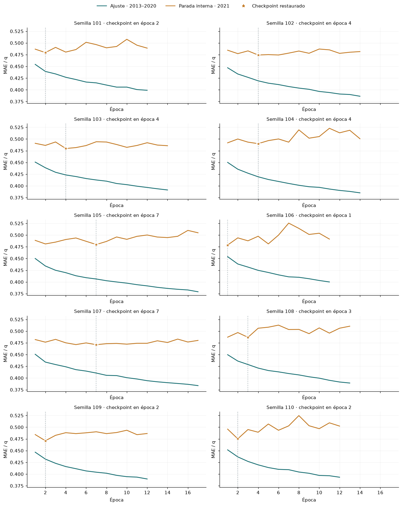
Los checkpoints restaurados corresponden a las épocas 1–7; los ajustes finalizaron entre 11 y 17 épocas. La pérdida de entrenamiento disminuye, mientras la reserva interna alcanza su mínimo temprano y después fluctúa o aumenta. Ese patrón es compatible con sobreajuste al continuar la optimización y motiva la restauración de pesos por parada interna; la brecha entre periodos también depende de sus condiciones de demanda.
Demanda observada frente a predicción#
Se comparan las predicciones individuales de M4ₙ con TimesNet, el modelo de menor MASE del Top 10. Cada panel utiliza todos los pares origen–hora–semilla disponibles y la misma escala de demanda. Las frecuencias de las celdas se representan en escala logarítmica; sus magnitudes dependen también del número de semillas.
from matplotlib.colors import LogNorm
m4_fig,m4_axes=plt.subplots(1,2,figsize=(12,5.2),sharex=True,sharey=True)
m4_min=min(m4_y.min(),m4_predictions.min(),m4_ref_predictions.min())/1e6
m4_max=max(m4_y.max(),m4_predictions.max(),m4_ref_predictions.max())/1e6
for m4_ax,m4_name,m4_stack in zip(m4_axes,['M4ₙ',m4_best_name],[m4_predictions,m4_ref_predictions]):
m4_hex=m4_ax.hexbin(np.tile(m4_y.ravel(),len(m4_stack))/1e6,m4_stack.reshape(-1)/1e6,gridsize=65,mincnt=1,norm=LogNorm(),cmap='viridis')
m4_ax.plot([m4_min,m4_max],[m4_min,m4_max],'--',color='#b4514b',lw=1.2)
m4_ax.set_title(m4_name);m4_ax.set_xlabel('Observado (GWh por intervalo)')
m4_ax.set_aspect('equal',adjustable='box')
m4_fig.colorbar(m4_hex,ax=m4_ax,label='Pares origen–hora–semilla (escala log)')
m4_axes[0].set_ylabel('Predicho (GWh por intervalo)')
m4_fig.tight_layout();m4_fig.savefig(m4_out/'observado_predicho.png',dpi=170)
display(m4_fig);plt.close(m4_fig)
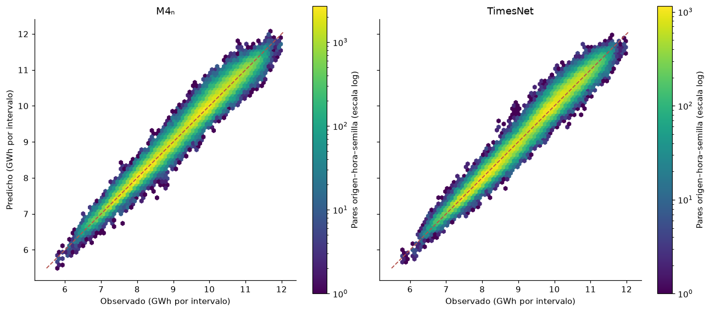
La proximidad a la diagonal representa acuerdos entre demanda observada y pronóstico; los desvíos por encima indican sobreestimación y por debajo, subestimación. La comparación utiliza la misma escala física. La concentración visual no sustituye las métricas agregadas ni los contrastes pareados, y la frecuencia absoluta es mayor cuando se incluyen más inicializaciones.
Perfil horario de una semana de prueba#
La ventana del 1 al 7 de julio de 2023 coincide con la utilizada en el benchmark. Las líneas de pronóstico representan medias entre semillas; el rango p10–p90 describe dispersión entre inicializaciones y no un intervalo predictivo calibrado. Las métricas se calculan con errores individuales, no con el error de la predicción media.
import matplotlib.dates as mdates
m4_week=(m4_dates>=pd.Timestamp('2023-07-01'))&(m4_dates<pd.Timestamp('2023-07-08'))
m4_time=pd.date_range('2023-07-01',periods=7*24,freq='h')
m4_week_pred=m4_predictions[:,m4_week,:]
m4_fig,m4_ax=plt.subplots(figsize=(13,4.5))
m4_ax.fill_between(m4_time,np.quantile(m4_week_pred,.1,axis=0).ravel()/1e6,np.quantile(m4_week_pred,.9,axis=0).ravel()/1e6,color='#146c70',alpha=.18,label='M4ₙ · p10–p90 entre semillas')
m4_ax.plot(m4_time,m4_y[m4_week].ravel()/1e6,color='#29383d',lw=1.8,label='Observado')
m4_ax.plot(m4_time,m4_week_pred.mean(axis=0).ravel()/1e6,color='#146c70',lw=1.3,ls='--',label='M4ₙ · media de semillas')
m4_ax.plot(m4_time,m4_ref_predictions[:,m4_week,:].mean(axis=0).ravel()/1e6,color='#c27821',lw=1,alpha=.9,label=m4_best_name+' · media de semillas')
m4_ax.xaxis.set_major_formatter(mdates.DateFormatter('%d-%m'))
m4_ax.set(xlabel='Fecha y hora de Colombia · 2023',ylabel='Demanda (GWh por intervalo)')
m4_ax.legend(ncol=2,fontsize=9,frameon=False);m4_ax.grid(alpha=.15)
m4_fig.tight_layout();m4_fig.savefig(m4_out/'semana_observado_predicho.png',dpi=170)
display(m4_fig);plt.close(m4_fig)
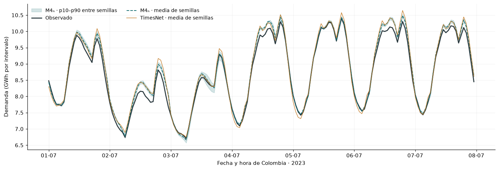
En esta semana, el MAE individual medio es 0,1169 GWh para M4ₙ y 0,1486 GWh para TimesNet. Ambas trayectorias reproducen el ciclo diario; las diferencias alrededor de ascensos, máximos y descensos contextualizan el error. Esta ventana es ilustrativa y no reemplaza los 1.461 días del contraste.
Error por horizonte y año#
El MAE por hora agrega los mismos orígenes de prueba. El MASE anual mantiene la escala semanal de entrenamiento fija; cada año conserva su número real de días y el error se promedia entre inicializaciones.
m4_abs=np.abs(m4_predictions-m4_y[None]);m4_ref_abs=np.abs(m4_ref_predictions-m4_y[None])
m4_fig,m4_axes=plt.subplots(1,2,figsize=(12,4.3))
for m4_label,m4_err,m4_color in [('M4ₙ',m4_abs,'#146c70'),(m4_best_name,m4_ref_abs,'#c27821')]:
m4_axes[0].plot(np.arange(1,25),m4_err.mean(axis=(0,1))/1e6,label=m4_label,color=m4_color)
m4_axes[1].plot(range(2022,2026),[m4_err[:,m4_dates.year==yy].mean()/m4_q for yy in range(2022,2026)],marker='o',label=m4_label,color=m4_color)
m4_axes[0].set(xlabel='Horizonte (hora)',ylabel='MAE (GWh por intervalo)',xticks=[1,6,12,18,24])
m4_axes[1].set(xlabel='Año de prueba',ylabel='MASE',xticks=range(2022,2026))
for m4_ax in m4_axes:m4_ax.grid(alpha=.15);m4_ax.legend(frameon=False)
m4_fig.tight_layout();m4_fig.savefig(m4_out/'horizonte_anio.png',dpi=170)
display(m4_fig);plt.close(m4_fig)
m4_seed_metrics.to_csv(m4_out/'metricas_m4_semillas.csv',index=False)
m4_history.to_csv(m4_out/'curvas_m4.csv',index=False)
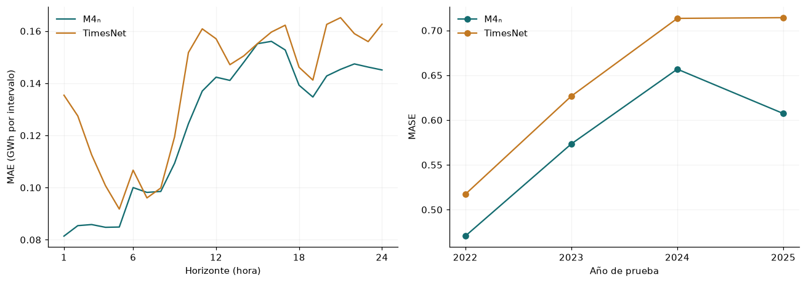
La reducción relativa de error de M4ₙ frente a TimesNet es 9,02 % en 2022, 8,51 % en 2023, 7,94 % en 2024, 14,98 % en 2025. El perfil por horizonte permite localizar las horas de mayor dificultad; el agregado anual muestra la estabilidad o variación de la ganancia entre regímenes, sin utilizar esos cortes para volver a seleccionar el modelo.
Síntesis de la propuesta numérica#
M4ₙ reduce el MASE frente a las diez arquitecturas del Top 10 en la evaluación 2022–2025. Frente a TimesNet, su competidor de menor error medio, la reducción es 10,25 %. Los contrastes temporales conservan la multiplicidad de la familia registrada y respaldan una mejora superior al margen del 3 % en 10 de las diez comparaciones. La evidencia cuantifica el desempeño del procedimiento completo; no atribuye la ganancia exclusivamente a una capa.
El banco se actualiza con resultados ya observables y los parámetros permanecen congelados. La diferencia de cinco frente a diez semillas impide interpretar los identificadores como réplicas pareadas. La evaluación retrospectiva y las diferencias de presupuestos y entradas delimitan la generalización del resultado. La contrastación en conjuntos adicionales, el dimensionamiento para potencia y la verificación teórica se documentan separadamente del rendimiento en el SIN.
Archivos y reproducción de la evaluación de M4ₙ#
Benchmark de M4ₙ, Top 10 y baselines · Contrastes temporales del Top 10 · Métricas por semilla de M4ₙ · Curvas de aprendizaje · Manifiesto de entradas.
Los bloques Python de esta sección reconstruyen métricas, tablas y figuras a partir de las predicciones e historiales guardados. No cargan checkpoints ni ejecutan entrenamiento. La reproducción estadística conserva las pérdidas diarias y el protocolo de los contrastes; el script documental no vuelve a seleccionar configuraciones.
Evaluación complementaria de M4ₙ#
Se mantienen pesos, arquitecturas y predicciones del benchmark. La unidad inferencial es el origen diario con sus 24 errores; se promedian pérdidas individuales entre diez semillas de M4 y cinco de los comparadores. La evaluación complementaria comprende diecisiete comparadores: quince procedimientos y dos referencias estacionales.
Familia completa de comparaciones y supuestos#
Se calculan bootstrap estacionario (9.999 réplicas, bloque medio de 14 días), DM–HLN (HAC Bartlett de 13 rezagos, horizonte diario uno) y GW bilateral con constante y diferencial conocido d−2. Para cada comparador se contrastan márgenes 0 y 3 %; las 102 hipótesis forman una familia complementaria con Holm. Los 60 contrastes históricos del Top 10 conservan sus cotas de la familia de 1.536 hipótesis y se presentan por separado. GW detecta capacidad predictiva condicional y su carácter bilateral no determina la dirección; la ganancia observada aporta el signo.
La tabla muestra margen cero. El archivo completo conserva hipótesis, estadístico, p crudo y ajustado, efecto e intervalo puntual. Contrastes completos · Diagnósticos por pareja.
from pathlib import Path
import json
import numpy as np
import pandas as pd
import matplotlib
matplotlib.use('Agg')
import matplotlib.pyplot as plt
from IPython.display import display
e3_root=next(p for p in [Path.cwd(),*Path.cwd().parents] if (p/'results/cierre_e3_sin_entrenar_20261124/estadistica.json').exists())
e3_out=e3_root/'results/cierre_e3_sin_entrenar_20261124'
e3_stat=json.loads((e3_out/'estadistica.json').read_text(encoding='utf-8'))
e3_tests=pd.read_csv(e3_out/'contrastes_completos.csv')
e3_mcs=pd.read_csv(e3_out/'mcs_integrado.csv')
e3_names=pd.read_csv(e3_root/'results/evaluacion_e2/benchmark.csv').set_index('clave').modelo.to_dict()
e3_names['m4_n']='M4ₙ'
e3_cov=pd.read_csv(e3_out/'cobertura_intervalos.csv')
e3_importance=pd.read_csv(e3_out/'importancia_numerica.csv')
e3_cost=pd.read_csv(e3_out/'eficiencia.csv')
e3_labels={'fijo_2021':'Fijo desde 2021','movil_causal_365':'Móvil por hora','movil_simultaneo24':'Móvil · trayectoria 24 h'}
plt.rcParams.update({'font.size':10,'axes.spines.top':False,'axes.spines.right':False})
e3_t=e3_tests.query('margen_relativo==0').pivot(index='Comparador',columns='metodo',values='p_ajustado')
e3_effect=e3_tests.query("metodo=='bootstrap_estacionario' and margen_relativo==0").set_index('Comparador').ganancia_relativa
e3_t['Reducción (%)']=100*e3_effect
display(e3_t.sort_values('Reducción (%)').rename(columns={'DM_HLN':'DM–HLN · p Holm','GW_bilateral':'GW · p Holm','bootstrap_estacionario':'Bootstrap · p Holm'}).style.format({'DM–HLN · p Holm':'{:.3g}','GW · p Holm':'{:.3g}','Bootstrap · p Holm':'{:.4f}','Reducción (%)':'{:.2f}'}))
| metodo | DM–HLN · p Holm | GW · p Holm | Bootstrap · p Holm | Reducción (%) |
|---|---|---|---|---|
| Comparador | ||||
| TimesNet · N | 7.75e-44 | 2.4e-53 | 0.0034 | 10.25 |
| TaTS adaptado · N+O | 6.57e-53 | 1.88e-84 | 0.0034 | 13.67 |
| PatchTST · N | 7.81e-29 | 9.15e-53 | 0.0034 | 14.20 |
| Fusión tardía · N+O | 2.84e-72 | 6.21e-131 | 0.0034 | 18.01 |
| iTransformer · N | 2.1e-30 | 8.1e-56 | 0.0034 | 22.21 |
| MLP | 1.28e-68 | 5.79e-198 | 0.0034 | 23.27 |
| ARX | 2.69e-81 | 1.6e-205 | 0.0034 | 32.25 |
| CNN1D | 8.32e-125 | 0 | 0.0034 | 32.70 |
| TCN · N | 1.46e-89 | 0 | 0.0034 | 37.73 |
| N-BEATS · N | 7.71e-86 | 0 | 0.0034 | 39.47 |
| LSTM | 2.48e-119 | 0 | 0.0034 | 42.33 |
| TGForecaster · N | 5.5e-95 | 0 | 0.0034 | 42.41 |
| N-HiTS · N | 1.09e-102 | 0 | 0.0034 | 43.63 |
| TFT · N | 3.33e-171 | 0 | 0.0034 | 45.10 |
| TGForecaster · N+O | 9.62e-163 | 0 | 0.0034 | 48.59 |
| ingenuo 168h | 9.64e-49 | 1.85e-99 | 0.0034 | 57.41 |
| ingenuo 24h | 0 | 0 | 0.0034 | 72.21 |
Los 102 contrastes complementarios rechazan al 5 % después de Holm, incluidos los márgenes del 3 %. Los diagnósticos examinan autocorrelación, heterocedasticidad y forma de los diferenciales; la inferencia usa bloques y HAC para representar dependencia. El rechazo de normalidad no invalida por sí mismo estos procedimientos. Sus resultados siguen condicionados a las realizaciones conservadas y a la cronología de selección del estudio.
Conjunto de confianza de modelos#
El MCS de Hansen, Lunde y Nason utiliza las dieciocho columnas de pérdidas diarias, incluyendo M4, con bootstrap estacionario, bloque 14, 10.000 réplicas y estadístico de rango. La confianza es del 90 %. Valores p y pertenencia.
e3_m=e3_mcs.sort_values('Pvalue')
e3_fig,e3_ax=plt.subplots(figsize=(10,6))
e3_ax.barh([e3_names[k] for k in e3_m.clave],e3_m.Pvalue.clip(lower=1/10000),color=['#126c70' if v else '#92a8b4' for v in e3_m.retenido_90])
e3_ax.axvline(.1,color='#c27821',ls='--',label='Umbral MCS 90 %')
e3_ax.set_xscale('log');e3_ax.set_xlim(8e-5,1.5)
e3_ax.set_xlabel('p MCS · ceros empíricos representados en 1/10.000')
e3_ax.legend(frameon=False);e3_ax.invert_yaxis();e3_fig.tight_layout()
e3_fig.savefig(e3_out/'mcs.png',dpi=160);display(e3_fig);plt.close(e3_fig)
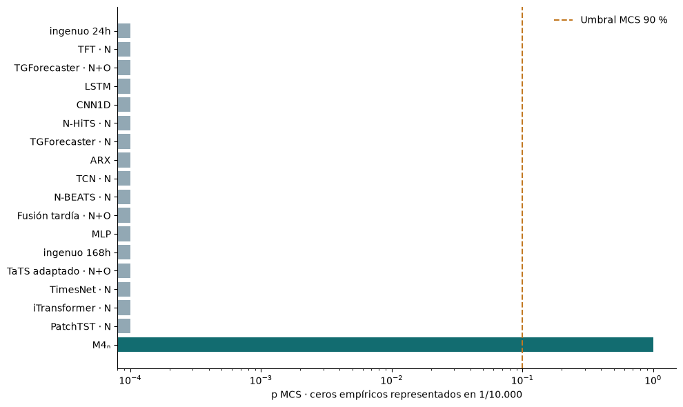
El procedimiento retiene únicamente a M4ₙ. Los ceros de remuestreo se representan en la resolución 1/10.000: no equivalen a probabilidades exactamente nulas. El resultado caracteriza el conjunto evaluado y este periodo; no extiende la superioridad a otras poblaciones o condiciones de ajuste.
Intervalos predictivos temporales#
La evaluación común de incertidumbre utiliza calibración inicial de 2022 y los mismos orígenes de 2023–2025 para los 18 procedimientos.
Importancia de las variables numéricas#
Se sustituyen bloques históricos completos por trayectorias de un día donante pasado del mismo día de semana, conservando su estructura temporal y máscaras. Se evalúan 48 orígenes —día 15 de cada mes de 2022–2025— y tres donantes por origen, con semillas prefijadas 101 para M4 y 1000 para TimesNet. El cambio del MASE se calcula después de volver a ejecutar el pipeline completo; incluye los tres expertos y M1 en M4. Es una medida de sensibilidad predictiva, no un efecto causal ni una selección adicional de variables.
e3_fig,e3_axes=plt.subplots(1,2,figsize=(12,4.6))
for e3_ax,e3_groups in zip(e3_axes,[['demanda','precio','hidrologia','temperatura','humedad','precipitacion'],['precio','hidrologia','temperatura','humedad','precipitacion']]):
for e3_i,e3_model in enumerate(['m4_n','nuevo_timesnet__N']):
e3_v=e3_importance.query('modelo==@e3_model').set_index('grupo').loc[e3_groups]
e3_ax.bar(np.arange(len(e3_groups))+(e3_i-.5)*.35,e3_v.delta_MASE,width=.35,label=e3_names[e3_model],color=['#126c70','#c27821'][e3_i])
e3_ax.set_xticks(np.arange(len(e3_groups)),e3_groups,rotation=35,ha='right')
e3_ax.axhline(0,color='#829198',lw=.8);e3_ax.set_ylabel('Cambio del MASE por sustitución temporal');e3_ax.legend();e3_ax.grid(axis='y',alpha=.15)
e3_axes[0].set_title('Todos los bloques');e3_axes[1].set_title('Ampliación de las covariables')
e3_fig.tight_layout();e3_fig.savefig(e3_out/'importancia.png',dpi=160);display(e3_fig);plt.close(e3_fig)
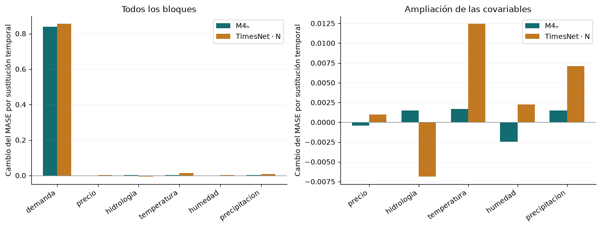
La demanda histórica produce el mayor deterioro al sustituirse en ambos procedimientos. Clima, hidrología y precio generan cambios agregados mucho menores y algunos negativos; esos valores describen esta muestra y la sustitución aplicada, sin demostrar irrelevancia de las variables. La escala ampliada permite observar sus diferencias sin que la demanda las oculte. Resultados por origen y donante.
Fidelidad y estabilidad de la memoria#
Se evalúan trece consultas de 2021 y las diez semillas. La fidelidad anula los valores residuales de los vecinos de mayor atención y los contrasta con igual número de episodios elegibles aleatorios; se mide cuánto cambia la salida. La estabilidad compara la atención sobre las mismas edades históricas y el orden de sensibilidad de cinco bloques del contexto. Los análisis describen el mecanismo sobre la reserva interna.
e3_stability=pd.read_csv(e3_out/'estabilidad_atencion.csv')
e3_fidelity=pd.read_csv(e3_out/'fidelidad_atencion.csv')
e3_group=pd.read_csv(e3_out/'estabilidad_importancia.csv')
e3_fig,e3_axes=plt.subplots(1,3,figsize=(15,4.5))
e3_axes[0].hist(e3_stability.rho_atencion,bins=20,color='#126c70');e3_axes[0].set_xlabel('Spearman de atención entre semillas');e3_axes[0].set_ylabel('Pares de consultas')
for e3_condition,e3_color in [('atencion','#126c70'),('aleatorio','#c27821')]:
e3_v=e3_fidelity.query('seleccion==@e3_condition').groupby('n').cambio_GWh.mean()
e3_axes[1].plot(e3_v.index,e3_v.values,'o-',label={'atencion':'Mayor atención','aleatorio':'Elegibles aleatorios'}[e3_condition],color=e3_color)
e3_axes[1].set_xlabel('Residuos anulados');e3_axes[1].set_ylabel('Cambio medio de salida (GWh)');e3_axes[1].legend()
e3_v=e3_group.groupby(['semilla','grupo']).cambio_GWh.mean().unstack()
e3_group_labels={'calendario':'Calendario','dispersion_expertos':'Dispersión entre expertos','errores_recientes':'Errores recientes','pronosticos_expertos':'Pronósticos de expertos','resumen_variables':'Resumen de variables'}
e3_axes[2].boxplot([e3_v[c].values for c in e3_v.columns],tick_labels=[e3_group_labels[c] for c in e3_v.columns])
e3_axes[2].tick_params(axis='x',rotation=55);e3_axes[2].set_ylabel('Sensibilidad de consulta (GWh)')
e3_fig.tight_layout();e3_fig.savefig(e3_out/'fidelidad.png',dpi=160);display(e3_fig);plt.close(e3_fig)
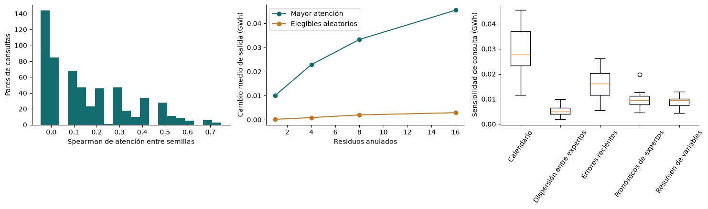
La mediana de correlación entre atenciones es 0,091, mientras el orden agregado de sensibilidad por bloques alcanza 1,000. Una jerarquía estable de bloques puede coexistir con vecinos concretos diferentes. Al anular dieciséis residuos de mayor atención, la salida cambia en promedio 0,045 GWh, frente a 0,003 GWh con episodios elegibles aleatorios. La sensibilidad de bloques modifica solo la consulta y mantiene M1; la importancia numérica anterior reejecuta el pipeline completo. Estos resultados describen uso de memoria, sin atribuir causalidad ni mejora individual a cada episodio. Fidelidad · Estabilidad.
Eficiencia del pipeline completo#
La tabla maestra compara coste y precisión bajo un protocolo común para los 18 procedimientos. Incluye la preparación numérica y, en M4, los tres expertos, M1 y la memoria residual.
Verificación matemática y exportación#
Se verifican 10 condiciones del núcleo: cota de corrección, compuerta, atención convexa, edad admisible, salida base sin vecinos, invariancia a valores no disponibles, perturbación convexa y gradientes locales por diferencias finitas. Se comprueba la cota en 128 consultas sin violaciones. La ficha de la arquitectura desarrolla supuestos y derivadas.
Se exportan a ONNX los tres expertos, M1 y la memoria con batch uno y banco de 365 posiciones, manteniendo la máscara causal. El round-trip del pipeline completo utiliza cinco fechas y conserva el mismo checkpoint prefijado. El paquete CPU necesita NumPy y ONNX Runtime y se verifica en un entorno nuevo sin PyTorch ni módulos del repositorio. La preparación de entradas propias debe respetar el contrato temporal y los escaladores conservados. El Dockerfile permite construir el contenedor; su ejecución Linux requiere un motor Docker y no se presenta como verificada en este equipo.
Código de los análisis#
"""Evaluación de artefactos congelados: estadística, propiedad y calibración temporal."""
from pathlib import Path
from types import SimpleNamespace
import ast,hashlib,json,sys,time
ROOT=Path(__file__).resolve().parents[1]
sys.path.append(str(ROOT/'.bookenv/Lib/site-packages'))
import numpy as np
import pandas as pd
import torch
from scipy import stats
from statsmodels.stats.multitest import multipletests
from statsmodels.stats.diagnostic import acorr_ljungbox,het_arch
from arch.bootstrap import MCS,StationaryBootstrap
OUT=ROOT/'results/cierre_e3_sin_entrenar_20261124'
RUN=ROOT/'results/m4_cierre_gpu_20261123/reducido_B'
Q=215617.90361589016
OUT.mkdir(parents=True,exist_ok=True)
torch.set_num_threads(1)
torch.manual_seed(20261124)
def write(name,obj):
(OUT/name).write_text(json.dumps(obj,ensure_ascii=False,indent=2,allow_nan=False),encoding='utf-8')
def sha(p):
with Path(p).open('rb') as f:return hashlib.file_digest(f,'sha256').hexdigest()
def memory_class():
p=ROOT/'scripts/documentacion_m4/pipeline_m4_n.py';tree=ast.parse(p.read_text(encoding='utf-8-sig'))
node=next(n for n in tree.body if isinstance(n,ast.ClassDef) and n.name=='Memoria')
scope=dict(torch=torch,nn=torch.nn,np=np)
exec(compile(ast.Module(body=[node],type_ignores=[]),str(p),'exec'),scope)
return scope['Memoria']
def bank(meta,ck):
return SimpleNamespace(num=torch.from_numpy((meta['num']-ck['media'])/ck['escala']),
dias=torch.from_numpy(np.asarray(meta['dia'],dtype='datetime64[D]').astype('int64')),
residuos=torch.from_numpy((meta['y']-meta['pred_base'])/Q),base=torch.from_numpy(meta['pred_base']),limite=None)
def load(seed):
ck=torch.load(RUN/f'colombia/final/M4_N/semilla_{seed}/modelo.pt',map_location='cpu',weights_only=False)
red=memory_class()(ck['n_num'],ck['n_feat'],ck['n_fuentes'],ck['configuracion'],'M4_N')
red.load_state_dict(ck['modelo']);red.eval();red.requires_grad_(False)
with np.load(RUN/f'colombia/base_oof_semilla_{seed}.npz',allow_pickle=False) as z:meta={k:z[k] for k in z.files}
return red,ck,meta,bank(meta,ck)
def protocol():
files=[RUN/f'colombia/prueba/M4_N_semilla_{s}.npz' for s in range(101,111)]
files +=[RUN/f'colombia/final/M4_N/semilla_{s}/modelo.pt' for s in range(101,111)]
files +=[ROOT/'results/evaluacion_e2/perdidas_y_bootstrap.npz']
p=dict(fecha='2026-11-24',entrenamiento=False,semilla=20261124,block_days=14,
bootstrap_reps=9999,mcs_reps=10000,mcs_size=.10,mcs_method='R',hac_lags=13,
margins=[0,.03],calibration_year=2021,calibration_role='Reserva usada para selección de checkpoint; cobertura empírica, sin garantía split-conformal independiente',
interval_levels=[.8,.9,.95],rolling_days=365,availability_lag_days=2,
main_interval='Por horizonte, ventana móvil causal; predicción media de diez semillas',
fixed_interval='Sensibilidad con cuantiles de 2021 fijos',
correction='Contrastes históricos Top10: conservar familia1536; evaluación complementaria completa102: Holm separado',
source_sha256={str(f.relative_to(ROOT)):sha(f) for f in files})
if not (OUT/'protocolo.json').exists():write('protocolo.json',p)
return p
def math_check():
red,ck,meta,b=load(101)
tests={};rng=np.random.default_rng(20261124)
js=torch.tensor(np.linspace(370,len(meta['dia'])-1,128,dtype=int))
with torch.no_grad():
q,k=red.codificar(b,len(b.dias));pred,g,ids,a,ok=red(b,js,(q,k))
rr=b.residuos[ids];mu=(a[:,:,None]*rr).sum(1)
bound=Q*g[:,None]*rr.abs().amax(1)
slack=bound-(pred-b.base[js]).abs()
tests['cota_correccion']=bool((slack>=-2.).all())
tests['compuerta_0_1']=bool(((g>=0)&(g<=1)).all())
tests['atencion_simplex']=bool(torch.allclose(a.sum(-1),torch.ones(len(js)),atol=1e-6))
age=b.dias[js,None]-b.dias[ids]
tests['edad_2_365']=bool((~ok|((age>=2)&(age<=365))).all())
empty=red(b,torch.tensor([0]),(q,k))
tests['sin_vecinos_igual_base']=bool(torch.equal(empty[0],b.base[:1]) and empty[1].item()==0)
# Una consulta no puede leer su etiqueta ni valores futuros, incluso si son enormes.
j=torch.tensor([len(b.dias)-30]);old=b.residuos.clone();p0=red(b,j,(q,k))[0]
b.residuos[j.item()-1:]=1e8
tests['invarianza_valores_no_disponibles']=bool(torch.equal(p0,red(b,j,(q,k))[0]));b.residuos=old
# Banco y vecinos fijos: perturbación solo de valores; la compuerta cambia por dispersión.
perturb=torch.randn_like(rr)*.01;rp=rr+perturb;mup=(a[:,:,None]*rp).sum(1)
tests['cota_convexidad_valores']=bool(((mup-mu).abs()<=perturb.abs().amax(1)+1e-6).all())
# Cota local original: mismo banco y mismos vecinos; varían atención y compuerta.
scores2=(q[js,None,:]*k[ids]).sum(-1)/(32**.5)+torch.randn_like(a)*.02
a2=scores2.softmax(-1)*ok;a2=a2/a2.sum(-1,keepdim=True).clamp_min(1e-8)
g2=(g+.03).clamp(0,1);mu2=(a2[:,:,None]*rr).sum(1)
change=(Q*g2[:,None]*mu2-Q*g[:,None]*mu).abs().amax(-1)
R=rr.abs().amax((1,2));limit=Q*R*((g2-g).abs()+(a2-a).abs().sum(-1))
tests['cota_estabilidad_atencion_compuerta']=bool((change<=limit+2.).all())
wq=red.proy_q[0].weight[:,:ck['n_num']].double();wk=red.proy_k[0].weight[:,:ck['n_num']].double()
lq=float(torch.linalg.matrix_norm(wq,ord=2));lk=float(torch.linalg.matrix_norm(wk,ord=2))
# Gradiente local de la atención y compuerta, con índices fijos y sin actualizar pesos.
z=torch.randn(1,32,dtype=torch.float64,requires_grad=True);v=torch.randn(16,32,dtype=torch.float64)
r=torch.randn(16,24,dtype=torch.float64);gate=red.compuerta.double()
def f(x):
s=x@v.T/(32**.5);a=s.softmax(-1);m=a@r
disp=((r-m[:,None]).square()*a[:,:,None]).sum(1).mean(-1).sqrt()
feat=torch.cat([x,s.max(-1).values[:,None],disp[:,None],x.new_ones((1,1)),x.new_ones((1,1))*.5],1)
return torch.sigmoid(gate(feat))*m
tests['gradcheck_atencion_compuerta']=bool(torch.autograd.gradcheck(f,(z,),eps=1e-6,atol=1e-4,rtol=1e-3))
project=red.proy_q.double();inp=torch.randn(1,ck['n_num']+64,dtype=torch.float64,requires_grad=True)
tests['gradcheck_proyeccion_LayerNorm']=bool(torch.autograd.gradcheck(project,(inp,),fast_mode=True))
assert all(tests.values()),tests
result=dict(tests=tests,n_queries=len(js),max_violation_kwh=float((-slack).clamp_min(0).max()),
minimum_slack_kwh=float(slack.min()),query_weight_spectral_norm=lq,key_weight_spectral_norm=lk,
LN_global_bound_query=lq*float(red.proy_q[1].weight.abs().max())/(red.proy_q[1].eps**.5),
scope='Banco y vecindario fijos; top-k no se supone continuo globalmente; gradientes comprobados sin optimización',entrenamiento=False)
write('propiedad.json',result);print('Propiedad y gradientes:',tests,flush=True)
def statistical():
study=json.loads((ROOT/'dashboard/site/data/study.json').read_text(encoding='utf-8'))
benchmark=pd.read_csv(ROOT/'results/evaluacion_e2/benchmark.csv').set_index('clave')
z=np.load(ROOT/'results/evaluacion_e2/perdidas_y_bootstrap.npz',allow_pickle=False)
loss=pd.DataFrame(z['loss'],columns=z['nombres'])
# El archivo conserva nombres de clave o etiquetas; resolver de forma comprobada.
mapping={r['modelo']:k for k,r in benchmark.iterrows()}
loss=loss.rename(columns=mapping)
assert set(loss.columns)==set(benchmark.index),(loss.columns.tolist(),benchmark.index.tolist())
preds=[]
for seed in range(101,111):
with np.load(RUN/f'colombia/prueba/M4_N_semilla_{seed}.npz',allow_pickle=False) as a:
preds.append(a['pred'].astype(float));y=a['y'];dates=a['dia']
loss['m4_n']=np.abs(np.stack(preds)-y).mean((0,2))/Q
# Verificar que se comparan pérdidas individuales y no el error del ensemble.
assert abs(loss.m4_n.mean()-.5770369087419158)<1e-8
for k in benchmark.index:assert abs(loss[k].mean()-benchmark.loc[k,'MASE'])<2e-6,k
loss.to_csv(OUT/'perdidas_diarias.csv',index=False)
top={m['id'] for m in study['models'] if m['group']=='Top 10'}
extra=list(benchmark.index)
rng=np.random.default_rng(20261124);N=len(loss);B=9999
# Bootstrap estacionario común a todas las parejas.
index=np.empty((B,N),dtype=np.int32);index[:,0]=rng.integers(N,size=B)
for t in range(1,N):
reset=rng.random(B)<1/14
index[:,t]=np.where(reset,rng.integers(N,size=B),(index[:,t-1]+1)%N)
rows=[];diagnostics=[]
for key in extra:
ref=loss[key].to_numpy();model=loss.m4_n.to_numpy();gain=1-model.mean()/ref.mean()
br=ref[index].mean(1);bm=model[index].mean(1);ci=np.quantile(1-bm/br,[.025,.975])
for margin in [0.,.03]:
d=(1-margin)*ref-model;dm=d.mean();c=d-dm
gamma=np.array([np.dot(c[h:],c[:N-h])/N for h in range(14)])
lrv=max(gamma[0]+2*np.dot(1-np.arange(1,14)/14,gamma[1:]),1e-15)
stat=dm/np.sqrt(lrv/N)*np.sqrt((N-1)/N)
p_dm=float(stats.t.sf(stat,N-1))
centered=((1-margin)*br-bm)-dm
p_boot=(1+np.sum(centered>=dm))/(B+1)
# GW condicional: constante y diferencial conocido d-2, HAC13.
lag=np.r_[np.zeros(2),d[:-2]];X=np.column_stack([np.ones(N),lag])
moments=X*d[:,None];avg=moments.mean(0);mc=moments-avg
cov=mc.T@mc/N
for h in range(1,14):
c_h=mc[h:].T@mc[:-h]/N;cov+=(1-h/14)*(c_h+c_h.T)
gw=N*float(avg@np.linalg.pinv(cov)@avg);p_gw=float(stats.chi2.sf(gw,2))
for method,statistic,p,null in [('bootstrap_estacionario',float(dm),float(p_boot),'E[(1-m)L_ref-L_M4] <= 0'),('DM_HLN',float(stat),p_dm,'E[(1-m)L_ref-L_M4] <= 0'),('GW_bilateral',gw,p_gw,'E[z_t((1-m)L_ref-L_M4)] = 0')]:
rows.append(dict(comparator_id=key,Comparador=benchmark.loc[key,'modelo'],metodo=method,margen_relativo=margin,
estadistico=statistic,p=p,ganancia_relativa=gain,ic95_inf=float(ci[0]),ic95_sup=float(ci[1]),hipotesis_nula=null,
familia='complementaria_102',alcance='Temporal condicionado a pesos y semillas conservadas',n=N))
d=ref-model;c=d-d.mean()
lb=acorr_ljungbox(d,lags=[7,14,28],return_df=True)
diagnostics.append(dict(comparator_id=key,Comparador=benchmark.loc[key,'modelo'],media_d=float(d.mean()),
LjungBox7_p=float(lb.lb_pvalue.iloc[0]),LjungBox14_p=float(lb.lb_pvalue.iloc[1]),LjungBox28_p=float(lb.lb_pvalue.iloc[2]),
ARCH14_p=float(het_arch(c,nlags=14)[1]),JB_p=float(stats.jarque_bera(d).pvalue),
dependencia='HAC y bootstrap por bloques; normalidad del diferencial no exigida'))
df=pd.DataFrame(rows);assert len(df)==102
df['p_ajustado']=multipletests(df.p,method='holm')[1]
df.to_csv(OUT/'contrastes_completos.csv',index=False)
# Diagnósticos de las diez parejas históricas, sin cambiar sus valores p.
for key in sorted(top-set(extra)):
d=loss[key].to_numpy()-loss.m4_n.to_numpy();lb=acorr_ljungbox(d,lags=[7,14,28],return_df=True)
diagnostics.append(dict(comparator_id=key,Comparador=benchmark.loc[key,'modelo'],media_d=float(d.mean()),
LjungBox7_p=float(lb.lb_pvalue.iloc[0]),LjungBox14_p=float(lb.lb_pvalue.iloc[1]),LjungBox28_p=float(lb.lb_pvalue.iloc[2]),
ARCH14_p=float(het_arch(d-d.mean(),nlags=14)[1]),JB_p=float(stats.jarque_bera(d).pvalue),
dependencia='HAC y bloques; no independencia diaria ni normalidad impuestas'))
diag=pd.DataFrame(diagnostics)
for col in ['LjungBox7_p','LjungBox14_p','LjungBox28_p','ARCH14_p','JB_p']:diag[col+'_Holm']=multipletests(diag[col],method='holm')[1]
diag.to_csv(OUT/'diagnosticos_parejas.csv',index=False)
print('Calculando MCS conjunto de 18 procedimientos...',flush=True)
mcs=MCS(loss,size=.10,reps=10000,block_size=14,method='R',bootstrap='stationary',seed=20261124);mcs.compute()
result=mcs.pvalues.copy();result['retenido_90']=result.index.isin(mcs.included)
result.to_csv(OUT/'mcs_integrado.csv',index_label='clave')
write('estadistica.json',dict(n_modelos=len(loss.columns),n_dias=N,contrastes_nuevos=len(df),
mcs_retenidos=list(mcs.included),n_rechazos_ajustados=int((df.p_ajustado<.05).sum()),
familia_historica_preservada=1536,familia_adicional=len(df),bootstrap_resolution=1/(B+1),entrenamiento=False))
print('Estadística terminada. MCS:',mcs.included,flush=True)
def calibration():
cached=OUT/'predicciones_calibracion.npz'
if not cached.exists():
outputs=[]
with torch.inference_mode():
for seed in range(101,111):
red,ck,meta,b=load(seed);ix=np.flatnonzero(np.array(meta['dia'])>='2021-01-01')
rep=red.codificar(b,len(meta['dia']));pred=[]
for start in range(0,len(ix),64):pred.append(red(b,torch.tensor(ix[start:start+64]),rep)[0].numpy())
outputs.append(np.concatenate(pred));cy=meta['y'][ix];cd=meta['dia'][ix]
print('Calibración congelada 2021, semilla',seed,flush=True)
np.savez_compressed(cached,pred=np.stack(outputs),y=cy,dia=cd)
with np.load(cached,allow_pickle=False) as z:cal_pred=z['pred'].mean(0).astype(float);cy=z['y'].astype(float);cd=z['dia']
test=[]
for seed in range(101,111):
with np.load(RUN/f'colombia/prueba/M4_N_semilla_{seed}.npz',allow_pickle=False) as z:test.append(z['pred'].astype(float));y=z['y'];dates=z['dia']
center=np.mean(test,0);scores=np.abs(cy-cal_pred);res=np.abs(y-center)
all_scores=np.concatenate([scores,res]);all_dates=np.asarray(np.r_[cd,dates],dtype='datetime64[D]')
rows=[];hourly=[];bounds={}
for level in [.8,.9,.95]:
alpha=1-level
for method in ['fijo_2021','movil_causal_365','movil_simultaneo24']:
widths=[]
for i,date in enumerate(np.asarray(dates,dtype='datetime64[D]')):
eligible=(all_dates<=date-np.timedelta64(2,'D'))&(all_dates>=date-np.timedelta64(366,'D')) if method!='fijo_2021' else all_dates<np.datetime64('2022-01-01')
sample=all_scores[eligible];n=len(sample);rank=min(int(np.ceil((n+1)*level)),n)
widths.append(np.repeat(np.partition(sample.max(1),rank-1)[rank-1],24) if method=='movil_simultaneo24' else np.partition(sample,rank-1,axis=0)[rank-1])
radius=np.asarray(widths);lo=center-radius;hi=center+radius;covered=(y>=lo)&(y<=hi)
interval_score=2*radius+2/alpha*np.maximum(lo-y,0)+2/alpha*np.maximum(y-hi,0)
bounds[f'{method}_{int(level*100)}']=radius
for year in ['total',2022,2023,2024,2025]:
sel=np.ones(len(dates),dtype=bool) if year=='total' else np.char.startswith(dates,str(year))
rows.append(dict(metodo=method,nivel=level,segmento=str(year),n_dias=int(sel.sum()),cobertura=float(covered[sel].mean()),
cobertura_trayectoria24=float(covered[sel].all(1).mean()),ancho_GWh=float((2*radius[sel]).mean()/1e6),interval_score_GWh=float(interval_score[sel].mean()/1e6)))
for h in range(24):hourly.append(dict(metodo=method,nivel=level,horizonte=h+1,cobertura=float(covered[:,h].mean()),ancho_GWh=float((2*radius[:,h]).mean()/1e6)))
np.savez_compressed(OUT/'intervalos.npz',**bounds,center=center,y=y,dia=dates)
pd.DataFrame(rows).to_csv(OUT/'cobertura_intervalos.csv',index=False)
pd.DataFrame(hourly).to_csv(OUT/'cobertura_horizonte.csv',index=False)
write('calibracion.json',dict(n_calibracion=len(cy),inicio=str(cd[0]),fin=str(cd[-1]),
rol='2021 también intervino en selección del checkpoint; evaluación empírica temporal, sin garantía de cobertura independiente',
main='movil_causal_365',lag_dias=2,actualiza_pesos=False,point='Media de diez predicciones; distinto del promedio de pérdidas individuales del benchmark',
fixed_widths_90_gwh=(np.partition(scores,min(int(np.ceil((len(scores)+1)*.9)),len(scores))-1,axis=0)[min(int(np.ceil((len(scores)+1)*.9)),len(scores))-1]/1e6).tolist()))
print('Intervalos calculados sin ajustar pesos.',flush=True)
if __name__=='__main__':
stage=sys.argv[1] if len(sys.argv)>1 else 'all';protocol()
if stage in ['all','math']:math_check()
if stage in ['all','stats']:statistical()
if stage in ['all','calibration']:calibration()
"""Importancia, estabilidad y coste de M4 y TimesNet. No contiene optimizadores."""
from pathlib import Path
from types import SimpleNamespace
import sys,json,time,platform,copy,tracemalloc
ROOT=Path(__file__).resolve().parents[1]
sys.path[:0]=[str(ROOT/'dashboard'),str(ROOT/'scripts')]
from completar_e3_sin_entrenar import OUT,Q,load,sha,write
import numpy as np
import pandas as pd
import torch
from scipy.stats import spearmanr
from runtime_inferencia import get_runtime
def parameter_groups():
return {'demanda':[0],'precio':[1],'hidrologia':list(range(2,6)),
'temperatura':list(range(6,14)),'humedad':list(range(14,22)),'precipitacion':list(range(22,30))}
def raw_importance():
runtime=get_runtime();I=runtime.inputs;rng=np.random.default_rng(20261124)
dates=[f'{y}-{m:02d}-15' for y in range(2022,2026) for m in range(1,13)]
rows=[];measures=[];models=['m4_n','nuevo_timesnet__N']
with torch.inference_mode():
for key in models:
for number,date in enumerate(dates):
I.configure(date);original=I.window.copy();cp=I.cp.copy();cf=I.cf.copy()
base,_,_=runtime.forward(key)
origin=pd.Timestamp(date,tz='America/Bogota');target=I.index.get_indexer(pd.date_range(origin,periods=24,freq='h'))
# El objetivo se usa exclusivamente para puntuar, después de la inferencia.
y=pd.read_parquet(ROOT/'data/processed/panel_horario.parquet',columns=['y_demanda_real_kwh']).iloc[target,0].to_numpy()
error=np.abs(base-y).mean()/Q
for repetition in range(3):
# Donante pasado, igual día de semana; conserva trayectoria y máscaras del bloque.
donor=origin-pd.Timedelta(days=int(rng.choice([14,21,28,35,42,49,56])))
donor_window=I.raw.reindex(pd.date_range(donor-pd.Timedelta(hours=168),periods=168,freq='h')).to_numpy(copy=True)
for group,cols in parameter_groups().items():
I.window=original.copy();I.window[:,cols]=donor_window[:,cols]
pred,_,_=runtime.forward(key)
rows.append(dict(modelo=key,origen=date,repeticion=repetition,grupo=group,MASE_original=float(error),
delta_MASE=float(np.abs(pred-y).mean()/Q-error),cambio_pred_GWh=float(np.abs(pred-base).mean()/1e6)))
I.window=original;I.cp=cp;I.cf=cf
if number%12==0:print('Importancia',key,date,flush=True)
# Mismo origen, calentamiento, un hilo, incluye las tres redes y la memoria para M4.
I.configure('2023-07-01')
for _ in range(5):runtime.forward(key)
times=[];tracemalloc.start()
for _ in range(50):
start=time.perf_counter();runtime.forward(key);times.append(1000*(time.perf_counter()-start))
_,peak_python=tracemalloc.get_traced_memory();tracemalloc.stop()
with torch.profiler.profile(activities=[torch.profiler.ProfilerActivity.CPU],profile_memory=True,with_flops=True) as prof:runtime.forward(key)
events=prof.key_averages();flops=sum(e.flops for e in events)
peak_positive=sum(max(0,e.self_cpu_memory_usage) for e in events)
if key=='m4_n':
modules=[r for r,_ in runtime.experts]+[runtime.router,runtime.memory]
else:modules=[runtime.additional(key)[0]]
measures.append(dict(modelo=key,semilla=101 if key=='m4_n' else 1000,n_mediciones=50,
mediana_ms=float(np.median(times)),p95_ms=float(np.quantile(times,.95)),
parametros_almacenados=sum(p.numel() for r in modules for p in r.parameters()),
FLOPs_operadores_cubiertos=int(flops),asignaciones_positivas_torch_bytes=int(peak_positive),
pico_python_bytes=peak_python,alcance='Forward completo con entradas preparadas; M4 incluye expertos, M1 y búsqueda; FLOPs parciales de operadores soportados por profiler'))
pd.DataFrame(rows).to_csv(OUT/'importancia_numerica_diaria.csv',index=False)
summary=pd.DataFrame(rows).groupby(['modelo','grupo']).agg(delta_MASE=('delta_MASE','mean'),DE=('delta_MASE','std'),cambio_pred_GWh=('cambio_pred_GWh','mean')).reset_index()
summary.to_csv(OUT/'importancia_numerica.csv',index=False)
pd.DataFrame(measures).to_csv(OUT/'eficiencia.csv',index=False)
write('equipo.json',dict(system=platform.platform(),processor=platform.processor(),python=sys.version,torch=torch.__version__,threads=torch.get_num_threads(),device='CPU'))
def stability():
groups={'resumen_variables':slice(0,120),'calendario':slice(120,672),'pronosticos_expertos':slice(672,744),
'dispersion_expertos':slice(744,768),'errores_recientes':slice(768,912)}
rows=[];deletion=[];attention={};rng=np.random.default_rng(20261124)
with torch.inference_mode():
for seed in range(101,111):
red,ck,meta,b=load(seed);ix=np.flatnonzero(meta['dia']>='2021-01-01')[::30]
q,k=red.codificar(b,len(b.dias));p,g,ids,a,ok=red(b,torch.tensor(ix),(q,k))
attention[seed]=[]
for pos,j in enumerate(ix):
dist=np.zeros(365)
ages=(b.dias[j]-b.dias[ids[pos]]).numpy()
for age,weight,valid in zip(ages,a[pos].numpy(),ok[pos].numpy()):
if valid:dist[int(age)-1]=weight
attention[seed].append(dist)
for name,columns in groups.items():
changed=q.clone();z=b.num[torch.tensor(ix)].clone()
# Cambiar solo la consulta por un episodio anterior, manteniendo banco y pesos.
donor=torch.tensor(ix-28);z[:,columns]=b.num[donor,columns]
augmented=torch.cat([z,z.new_zeros((len(z),64))],1);changed[torch.tensor(ix)]=red.proy_q(augmented)
alt=red(b,torch.tensor(ix),(changed,k))[0]
for pos,j in enumerate(ix):rows.append(dict(semilla=seed,grupo=name,origen=str(meta['dia'][j]),
cambio_GWh=float((alt[pos]-p[pos]).abs().mean()/1e6)))
for pos,j in enumerate(ix):
original=b.residuos.clone();eligible=torch.nonzero((b.dias[j]-b.dias>=2)&(b.dias[j]-b.dias<=365)).flatten().numpy()
for count in [1,4,8,16]:
top=ids[pos][ok[pos]][:count]
for condition in ['atencion','aleatorio']:
b.residuos=original.clone();selected=top if condition=='atencion' else torch.from_numpy(rng.choice(eligible,len(top),replace=False))
b.residuos[selected]=0.;out=red(b,torch.tensor([j]),(q,k))[0][0]
deletion.append(dict(semilla=seed,origen=str(meta['dia'][j]),n=count,seleccion=condition,cambio_GWh=float((out-p[pos]).abs().mean()/1e6)))
b.residuos=original
print('Estabilidad y fidelidad, semilla',seed,flush=True)
pairs=[]
for a in range(101,111):
for b in range(a+1,111):
for i in range(len(attention[a])):
rho=spearmanr(attention[a][i],attention[b][i]).statistic
pairs.append(dict(semilla_A=a,semilla_B=b,consulta=i,rho_atencion=float(rho)))
pd.DataFrame(rows).to_csv(OUT/'estabilidad_importancia.csv',index=False)
pd.DataFrame(deletion).to_csv(OUT/'fidelidad_atencion.csv',index=False)
pd.DataFrame(pairs).to_csv(OUT/'estabilidad_atencion.csv',index=False)
imp=pd.DataFrame(rows).groupby(['semilla','grupo']).cambio_GWh.mean().unstack()
ir=[]
for a in imp.index:
for b in imp.index:
if a<b:ir.append(float(spearmanr(imp.loc[a],imp.loc[b]).statistic))
write('interpretabilidad.json',dict(rho_atencion_mediana=float(pd.DataFrame(pairs).rho_atencion.median()),
rho_importancia_mediana=float(np.median(ir)),n_semillas=10,n_consultas_por_semilla=len(ix),
periodo='2021, reserva interna de selección; explicaciones descriptivas',
nota='Atención mide uso de memoria; eliminación verifica efecto sobre la salida, no causalidad ni superioridad predictiva'))
if __name__=='__main__':
stage=sys.argv[1] if len(sys.argv)>1 else 'all'
if stage in ['all','importance']:raw_importance()
if stage in ['all','stability']:stability()
"""Coste de forward en proceso nuevo por modelo; no entrenamiento."""
from pathlib import Path
import sys,time,json,threading,ctypes,subprocess
ROOT=Path(__file__).resolve().parents[1]
sys.path[:0]=[str(ROOT/'dashboard'),str(ROOT/'scripts')]
from completar_e3_sin_entrenar import OUT,write
from runtime_inferencia import get_runtime
import numpy as np,pandas as pd,torch
def rss():
if sys.platform=='win32':
from ctypes import wintypes
class Counters(ctypes.Structure):
_fields_=[('cb',wintypes.DWORD),('PageFaultCount',wintypes.DWORD)]+[(n,ctypes.c_size_t) for n in ['PeakWorkingSetSize','WorkingSetSize','QuotaPeakPagedPoolUsage','QuotaPagedPoolUsage','QuotaPeakNonPagedPoolUsage','QuotaNonPagedPoolUsage','PagefileUsage','PeakPagefileUsage']]
c=Counters();c.cb=ctypes.sizeof(c)
handle=ctypes.windll.kernel32.GetCurrentProcess
handle.restype=ctypes.c_void_p
fn=ctypes.windll.psapi.GetProcessMemoryInfo;fn.argtypes=[ctypes.c_void_p,ctypes.c_void_p,ctypes.c_ulong]
assert fn(handle(),ctypes.byref(c),c.cb)
return c.WorkingSetSize
else:
# Linux: residente actual, en páginas, sin dependencia psutil.
import os
return int(Path('/proc/self/statm').read_text().split()[1])*os.sysconf('SC_PAGE_SIZE')
def worker(key):
r=get_runtime();I=r.inputs;I.configure('2023-07-01');torch.set_num_threads(1)
with torch.inference_mode():
for _ in range(10):r.forward(key)
values=[]
for _ in range(100):
t=time.perf_counter();r.forward(key);values.append((time.perf_counter()-t)*1000)
baseline=rss();samples=[];stop=threading.Event()
def sample():
while not stop.is_set():samples.append(rss());stop.wait(.001)
thread=threading.Thread(target=sample);thread.start()
try:
for _ in range(30):r.forward(key)
finally:stop.set();thread.join()
with torch.profiler.profile(activities=[torch.profiler.ProfilerActivity.CPU],profile_memory=True,with_flops=True) as p:r.forward(key)
modules=[m for m,_ in r.experts]+[r.router,r.memory] if key=='m4_n' else [r.additional(key)[0]]
result=dict(modelo=key,semilla=101 if key=='m4_n' else 1000,n_mediciones=100,
mediana_ms=float(np.median(values)),p95_ms=float(np.quantile(values,.95)),
parametros_almacenados=sum(x.numel() for m in modules for x in m.parameters()),
bytes_parametros=sum(x.numel()*x.element_size() for m in modules for x in m.parameters()),
FLOPs_operadores_cubiertos=int(sum(e.flops for e in p.key_averages())),
RSS_base_bytes=baseline,RSS_max_observado_bytes=max(samples+[baseline]),RSS_incremento_observado_bytes=max(samples+[baseline])-baseline,
frecuencia_muestreo_ms=1,threads=1,preparacion_incluida=False,
alcance='Proceso aislado por modelo; forward CPU, batch1 y banco temporal; M4 incluye expertos+M1+memoria; RSS total incluye datos/runtime; FLOPs parciales')
(OUT/('coste_'+key+'.json')).write_text(json.dumps(result,indent=2),encoding='utf-8')
print(key,result['mediana_ms'],result['p95_ms'],flush=True)
if __name__=='__main__':
if len(sys.argv)>1:worker(sys.argv[1])
else:
for key in ['m4_n','nuevo_timesnet__N']:subprocess.run([sys.executable,str(Path(__file__).resolve()),key],check=True)
rows=[json.loads(p.read_text()) for p in OUT.glob('coste_*.json')]
pd.DataFrame(rows).to_csv(OUT/'eficiencia.csv',index=False)
"""Exporta los cinco módulos activos de M4, verifica el pipeline y crea paquete CPU."""
from pathlib import Path
import sys,json,hashlib,shutil,zipfile,subprocess,time
ROOT=Path(__file__).resolve().parents[1]
sys.path[:0]=[str(ROOT/'dashboard'),str(ROOT/'scripts')]
from completar_e3_sin_entrenar import OUT,Q,sha,write
from runtime_inferencia import get_runtime
import torch,numpy as np
import onnx,onnxruntime as ort
class MemoryExport(torch.nn.Module):
def __init__(self,red):super().__init__();self.red=red
def forward(self,query,keys,days,origin,residuals,base):
q=self.red.proy_q(torch.cat([query,query.new_zeros((1,64))],1))
k=self.red.proy_k(torch.cat([keys,keys.new_zeros((365,64))],1))
age=origin-days;valid=(age>=2)&(age<=365)
score=q@k.T/(32**.5);score=score.masked_fill(~valid[None],-1e9)
values,ids=score.topk(16,-1);ok=valid[ids];any_valid=ok.any(-1)
a=values.softmax(-1)*ok;a=a/a.sum(-1,keepdim=True).clamp_min(1e-8)
r=residuals[ids];mu=(a[:,:,None]*r).sum(1)
dispersion=((r-mu[:,None]).square()*a[:,:,None]).sum(1).mean(-1).clamp_min(1e-12).sqrt()
maxsim=torch.where(any_valid,values[:,0],torch.zeros_like(values[:,0]))
features=torch.cat([q,maxsim[:,None],dispersion[:,None],ok.sum(-1).to(q.dtype)[:,None]/16,(a*age[ids]).sum(-1)[:,None]/365],1)
gate=torch.sigmoid(self.red.compuerta(features))[:,0]*any_valid
output=base+Q*gate[:,None]*mu
return torch.where(any_valid[:,None],output,base),gate,a,ids
def session(p):
options=ort.SessionOptions();options.intra_op_num_threads=1;options.inter_op_num_threads=1
return ort.InferenceSession(str(p),sess_options=options,providers=['CPUExecutionProvider'])
def export(red,args,file,names,outputs):
torch.onnx.export(red,args,file,input_names=names,output_names=outputs,opset_version=18,dynamo=False)
onnx.checker.check_model(str(file));return session(file)
def main():
runtime=get_runtime();runtime.prepare_memory();torch.set_num_threads(1)
torch.backends.mha.set_fastpath_enabled(False)
dest=OUT/'paquete_m4_cpu';dest.mkdir(exist_ok=True)
models=dest/'modelos';models.mkdir(exist_ok=True)
exported={};results=[];dates=['2022-01-01','2023-07-01','2024-02-15','2025-12-31','2026-01-01']
wrapper=MemoryExport(runtime.memory).eval();constants={
'router_media':runtime.router_ck['media'],'router_escala':runtime.router_ck['escala'],
'memory_media':runtime.memory_ck['media'],'memory_escala':runtime.memory_ck['escala']}
np.savez_compressed(dest/'escalas.npz',**constants)
with torch.no_grad():
for number,date in enumerate(dates):
I=runtime.inputs;I.configure(date);captured={}
def router_hook(module,args):captured['router']=tuple(x.detach().clone() for x in args)
def memory_hook(module,args):
b,j=args;captured['memory']=(b,j.clone())
h=runtime.router.register_forward_pre_hook(router_hook);m=runtime.memory.register_forward_pre_hook(memory_hook)
truth,_,detail=runtime.forward('m4_n');h.remove();m.remove()
data={};expert_outputs=[]
for i,(red,sc) in enumerate(runtime.experts):
d=I.construir(sc);args=tuple(torch.from_numpy(np.ascontiguousarray(d[k])) for k in ['x','cp','cf','dia'])
for name,value in zip(['x','cp','cf','dia'],args):data[f'{name}_{i}']=value.numpy()
data[f'nivel_{i}']=np.asarray(d['nivel'],dtype='float32')
file=models/f'experto_{i}.onnx'
if number==0:exported[f'experto_{i}']=export(red,args,file,['x','cp','cf','dia'],['pred'])
s=exported[f'experto_{i}'];feed={x.name:data[f'{x.name}_{i}'] for x in s.get_inputs()}
output=s.run(None,feed)[0]*d['nivel'][:,None];expert_outputs.append(output.astype('float32'))
raw_context=captured['router'][0].numpy()*constants['router_escala']+constants['router_media']
data['contexto']=raw_context.astype('float32')
data['nivel_contexto']=np.array([I.window[:,0].mean()],dtype='float32')
xp=np.stack(expert_outputs,-1)
raw_context[:,672:744]=(xp[0]/data['nivel_contexto'][0]).ravel()
raw_context[:,744:768]=xp[0].std(-1)/data['nivel_contexto'][0]
rx=((raw_context-constants['router_media'])/constants['router_escala']).astype('float32')
if number==0:exported['router']=export(runtime.router,(torch.from_numpy(rx),torch.from_numpy(xp)),models/'router.onnx',['x','pred'],['base','c','w'])
base=exported['router'].run(None,{'x':rx,'pred':xp})[0]
b,j=captured['memory'];n=j.item();assert n<=365
keys=np.zeros((365,912),dtype='float32');keys[:n]=b.num[:n].numpy()
origin=b.dias[-1:].numpy();days=np.full(365,int(origin[0]),dtype='int64');days[:n]=b.dias[:n].numpy()
residuals=np.zeros((365,24),dtype='float32');residuals[:n]=b.residuos[:n].numpy()
data.update(keys=keys,days=days,origin=origin,residuals=residuals)
mq=((raw_context-constants['memory_media'])/constants['memory_escala']).astype('float32')
feed=dict(query=mq,keys=keys,days=days,origin=origin,residuals=residuals,base=base.astype('float32'))
if number==0:exported['memory']=export(wrapper,tuple(torch.from_numpy(x) for x in feed.values()),models/'memoria.onnx',list(feed),['pred','gate','attention','neighbors'])
out=exported['memory'].run(None,feed)[0][0]
error=float(np.max(np.abs(out-truth)));relative=float(np.max(np.abs(out-truth)/np.maximum(np.abs(truth),1)))
results.append(dict(origen=date,max_error_kwh=error,max_error_relativo=relative))
assert relative<1e-4,(date,error,relative)
np.savez_compressed(dest/f'ejemplo_{number}.npz',**data)
np.save(dest/f'esperado_{number}.npy',truth)
print('ONNX round-trip completo',date,error,'kWh',flush=True)
write('exportacion.json',dict(opset=18,provider='CPUExecutionProvider',semilla=101,modulos=5,sha256_checkpoints=runtime.hashes,
resultados=results,tolerancia_relativa=1e-4,entrenamiento=False,
alcance='Tres expertos + M1 + memoria; entradas preparadas sin datos futuros. Banco relleno hasta365 episodios, máscara causal conservada.',
archivos={p.relative_to(dest).as_posix():sha(p) for p in models.glob('*.onnx')}))
shutil.copy2(OUT/'exportacion.json',dest/'exportacion.json')
# Fuentes de ejecución separadas de las clases de entrenamiento.
source=ROOT/'scripts/ejecutar_m4_onnx.py';shutil.copy2(source,dest/'ejecutar.py')
(dest/'requirements.txt').write_text('numpy==2.5.4\nonnxruntime==1.32.0\nflatbuffers==25.12.19\npackaging==26.4\nprotobuf==7.36.2\n',encoding='utf-8')
(dest/'Dockerfile').write_text('FROM python:3.13-slim\nWORKDIR /app\nCOPY requirements.txt .\nRUN pip install --no-cache-dir -r requirements.txt\nCOPY . .\nCMD ["python", "ejecutar.py", "--verificar"]\n',encoding='utf-8')
(dest/'README.md').write_text('''# Inferencia portable de M4_N
Python 3.13, CPU. No se necesitan PyTorch, el repositorio ni rutas externas.
```
python -m venv .venv
# Windows: .venv/Scripts/python; Linux: .venv/bin/python
python -m pip install -r requirements.txt
python ejecutar.py --verificar
python ejecutar.py --entrada ejemplo_0.npz --salida pronostico.json
```
El pipeline ejecuta tres expertos, reconstruye sus atributos del contexto, combina con M1 y consulta la memoria. Los cinco ejemplos tienen entradas anteriores a su origen, escaladas con parámetros conservados. El contrato NPZ contiene x/cp/cf/dia/nivel por experto; contexto numérico912; nivel_contexto; keys365×912 ya escaladas; days; origin; residuals365×24 normalizados por q. Los episodios ausentes se rellenan con edad cero y residuo cero. Antes de usar datos propios se debe construir este contrato con el preprocesamiento y las reglas de disponibilidad documentadas en el JBook; los ejemplos no sustituyen una adquisición automática de datos.
La predicción corresponde a la semilla101, prefijada; no es el promedio de pérdidas de las diez semillas. El manifiesto contiene hashes, tolerancia y errores del round-trip. exportacion.json conserva la procedencia.
Contenedor: `docker build -t m4-cpu .` y `docker run --rm m4-cpu`. El Dockerfile queda preparado; su construcción requiere un motor Docker disponible.
''',encoding='utf-8')
files={p.relative_to(dest).as_posix():sha(p) for p in dest.rglob('*') if p.is_file() and p.name!='MANIFIESTO.json'}
(dest/'MANIFIESTO.json').write_text(json.dumps(files,indent=2),encoding='utf-8')
# Ejecutar en un proceso aislado con solo el paquete en sys.path local.
run=subprocess.run([sys.executable,'-I',str(dest/'ejecutar.py'),'--verificar'],cwd=dest,text=True,capture_output=True,check=True)
(OUT/'verificacion_paquete.log').write_text(run.stdout+run.stderr,encoding='utf-8')
files={p.relative_to(dest).as_posix():sha(p) for p in dest.rglob('*') if p.is_file() and p.name!='MANIFIESTO.json'}
(dest/'MANIFIESTO.json').write_text(json.dumps(files,indent=2),encoding='utf-8')
with zipfile.ZipFile(OUT/'M4_inferencia_CPU_portable.zip','w',zipfile.ZIP_DEFLATED) as z:
for p in dest.rglob('*'):
if p.is_file():z.write(p,p.relative_to(dest))
print('Paquete ONNX creado y verificado en proceso aislado.',flush=True)
if __name__=='__main__':main()
Dispersión entre semillas y diagnóstico propio de M4#
Se analizan las diez predicciones conservadas de M4 para cada uno de los 1.461 orígenes diarios de 2022–2025 y sus 24 horizontes. La dispersión mide cuánto cambia la salida al variar la inicialización. Para cada origen \(t\) y horizonte \(h\) se calculan la predicción media, la desviación entre semillas y su coeficiente de variación:
La desviación horaria media de un día es \(\bar\sigma_t=24^{-1}\sum_h\sigma_{t,h}\). Se distingue de la desviación de la demanda media diaria entre semillas, que depende también de la covariación entre horas. Las matrices conservan todos los pares origen–horizonte; los resúmenes no sustituyen las predicciones individuales.
from pathlib import Path
import numpy as np
import pandas as pd
import matplotlib.pyplot as plt
import matplotlib.dates as mdates
from IPython.display import display
m4d_dir = Path("_static/resultados/diagnosticos_m4")
if not m4d_dir.exists():
m4d_dir = Path("book") / m4d_dir
m4d_daily = pd.read_csv(m4d_dir / "dispersion_diaria.csv")
m4d_h = pd.read_csv(m4d_dir / "resumen_horizonte.csv")
with np.load(m4d_dir / "matrices.npz", allow_pickle=False) as m4d_z:
m4d_matrix = {k: m4d_z[k].copy() for k in m4d_z.files}
m4d_dates = pd.to_datetime(m4d_matrix["dia"])
m4d_fig, m4d_axes = plt.subplots(1, 2, figsize=(16, 6), gridspec_kw={"width_ratios": [1.25, 1]})
m4d_im = m4d_axes[0].imshow(m4d_matrix["DE_kWh"].T / 1e6, aspect="auto", origin="lower",
extent=[mdates.date2num(m4d_dates[0]), mdates.date2num(m4d_dates[-1])+1, .5, 24.5], cmap="viridis")
m4d_axes[0].xaxis_date()
m4d_axes[0].xaxis.set_major_locator(mdates.YearLocator())
m4d_axes[0].xaxis.set_major_formatter(mdates.DateFormatter("%Y"))
m4d_axes[0].set(title="Dispersión de las diez semillas por origen y horizonte", xlabel="Origen diario", ylabel="Horizonte (h)")
m4d_fig.colorbar(m4d_im, ax=m4d_axes[0], label="DE entre semillas (GWh por intervalo)")
for m4d_col, m4d_label, m4d_color in [("DE_media_kWh", "DE media entre semillas", "#126c70"),
("DE_p95_kWh", "Percentil 95 de DE entre fechas", "#83a8b7"),
("MAE_individual_kWh", "MAE individual promedio", "#af5846")]:
m4d_axes[1].plot(m4d_h.horizonte, m4d_h[m4d_col]/1e6, "o-", label=m4d_label, color=m4d_color, markersize=3)
m4d_axes[1].set(title="Dispersión y error por horizonte", xlabel="Horizonte (h)", ylabel="GWh por intervalo")
m4d_axes[1].legend(fontsize=8)
m4d_axes[1].grid(alpha=.2)
m4d_fig.tight_layout(); display(m4d_fig); plt.close(m4d_fig)
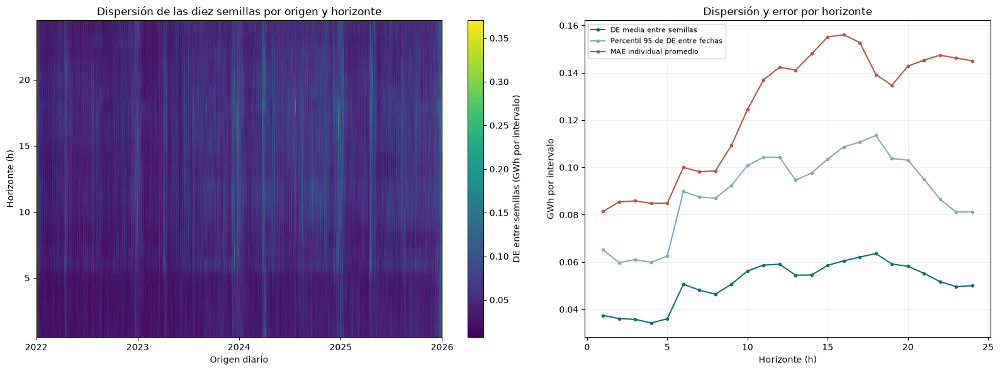
El mapa concentra los desacuerdos en fechas y horizontes concretos. La desviación media es 0,0511 GWh, IC95 % temporal [0,0484; 0,0539], equivalente en promedio al 0,56 % del nivel pronosticado. El percentil 95 de la desviación por origen–horizonte es 0,0947 GWh. La mayor desviación puntual es 0,3703 GWh, en 2024-07-21, horizonte 18 h. Estos valores muestran variación localizada que el MASE global no refleja.
En el perfil por horizonte, la mayor desviación media corresponde a 18 h (0,0636 GWh). La curva del percentil 95 resume diferencias entre fechas; no es un intervalo de confianza. El MAE individual conserva la agregación del benchmark y cuantifica un fenómeno distinto de la dispersión entre semillas.
Dispersión y dificultad del pronóstico#
Se relaciona la desviación horaria media de cada día con el MAE de su trayectoria media. Spearman describe la asociación entre ambos diagnósticos. Los intervalos temporales usan 9.999 réplicas de bootstrap estacionario, con bloque medio de 14 días y las mismas fechas para todas las variables; condicionan las diez semillas guardadas. La fecha de mayor dispersión se presenta como caso descriptivo.
m4d_fig, m4d_axes = plt.subplots(1, 2, figsize=(15, 5.5))
m4d_axes[0].scatter(m4d_daily.DE_horaria_media_kWh/1e6,
m4d_daily.MAE_media_predicciones_kWh/1e6, s=10, alpha=.4, color="#126c70")
m4d_axes[0].set(title="Dispersión y error de la trayectoria media por día",
xlabel="DE horaria media entre semillas (GWh)", ylabel="MAE de la predicción media (GWh)")
m4d_peak = str(m4d_matrix["dia_max"].item())
m4d_i = m4d_daily.dia.tolist().index(m4d_peak)
for m4d_j, m4d_p in enumerate(m4d_matrix["predicciones_dia_max_kWh"]):
m4d_axes[1].plot(np.arange(1,25),m4d_p/1e6,color="#83a8b7",alpha=.6,
label="Predicciones individuales" if m4d_j==0 else None)
m4d_axes[1].plot(np.arange(1,25),m4d_matrix["media_kWh"][m4d_i]/1e6,color="#126c70",linewidth=2,label="Media de semillas")
m4d_axes[1].plot(np.arange(1,25),m4d_matrix["observado_kWh"][m4d_i]/1e6,color="#24383e",linewidth=2,label="Observado")
m4d_axes[1].set(title=f"Día con mayor DE horaria media: {m4d_peak}",xlabel="Horizonte (h)",ylabel="Demanda (GWh por intervalo)")
m4d_axes[1].legend(fontsize=8)
for m4d_ax in m4d_axes: m4d_ax.grid(alpha=.2)
m4d_fig.tight_layout(); display(m4d_fig); plt.close(m4d_fig)
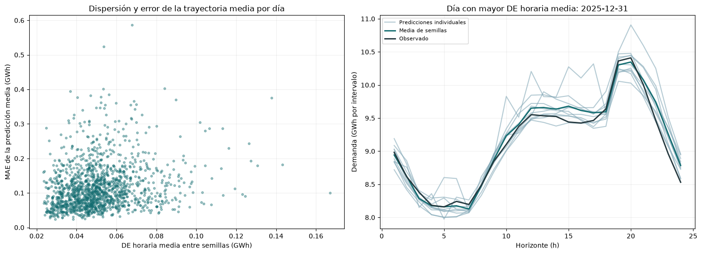
La asociación diaria entre dispersión y error es ρ = 0,227, IC95 % [0,149; 0,301]. La relación positiva tiene una magnitud limitada: los días con mayor desacuerdo tienden a presentar más error, pero la dispersión no determina por sí sola su magnitud. El día 2025-12-31 tiene la mayor desviación horaria media (0,1669 GWh). Las curvas individuales permiten localizar en qué horas divergen las trayectorias.
La correlación mediana de los MAE diarios entre pares de semillas es 0,812: las realizaciones comparten buena parte del orden de dificultad de las fechas. La atención se evaluó en consultas de 2021; su baja concordancia no se equipara directamente a este diagnóstico de salidas de 2022–2025.
La banda p10–p90 entre semillas contiene solo el 30,02 % de los valores observados, con ancho medio de 0,1088 GWh. Describe inicializaciones, no un intervalo predictivo nominal del 80 %. La incertidumbre sobre observaciones futuras requiere los intervalos temporales evaluados por separado.
La identidad del error cuadrático separa la pérdida de la media y el desacuerdo:
Al promediar todos los orígenes y horizontes, el segundo término representa el 10,40 % del MSE individual. El resto corresponde al error de la trayectoria media y no se interpreta como ruido irreducible. La métrica primaria del benchmark permanece en MASE 0,5770.
Residuos, dependencia y calibración#
Para estos diagnósticos se utiliza \(e_{t,h}=y_{t,h}-\bar y_{t,h}\) y su promedio diario \(\bar e_t\). Un residuo positivo indica subestimación y uno negativo, sobreestimación. La normalidad, la dependencia temporal y la calibración se examinan sobre los orígenes diarios, sin tratar las 24 horas como observaciones independientes. La regresión de Mincer–Zarnowitz relaciona demanda observada media diaria con su predicción media diaria; el contraste conjunto exige intercepto cero y pendiente uno, con covarianza HAC de 13 días.
m4d_acf = pd.read_csv(m4d_dir / "autocorrelacion.csv")
m4d_qq = pd.read_csv(m4d_dir / "qq_residuos.csv")
m4d_fig, m4d_axes = plt.subplots(2, 2, figsize=(15, 10))
m4d_axes[0,0].plot(m4d_dates,m4d_daily.sesgo_media_kWh/1e6,color="#126c70",linewidth=.7)
m4d_axes[0,0].axhline(0,color="#65767d",linewidth=1)
m4d_axes[0,0].set(title="Residuo diario: observado menos predicción media",xlabel="Origen diario",ylabel="Residuo medio horario (GWh)")
m4d_axes[0,1].stem(m4d_acf.rezago.iloc[1:],m4d_acf.ACF.iloc[1:])
m4d_axes[0,1].set(title="Autocorrelación del residuo diario",xlabel="Rezago (días)",ylabel="ACF")
m4d_axes[1,0].scatter(m4d_qq.cuantil_normal,m4d_qq.residuo_GWh,s=8,color="#126c70")
m4d_qline = np.polyfit(m4d_qq.cuantil_normal,m4d_qq.residuo_GWh,1)
m4d_axes[1,0].plot(m4d_qq.cuantil_normal,np.polyval(m4d_qline,m4d_qq.cuantil_normal),"--",color="#af5846")
m4d_axes[1,0].set(title="Q–Q del residuo diario frente a normal",xlabel="Cuantil normal teórico",ylabel="Residuo diario ordenado (GWh)")
m4d_observed = m4d_daily.observado_medio_kWh/1e6
m4d_predicted = m4d_daily.predicho_medio_kWh/1e6
m4d_axes[1,1].hexbin(m4d_predicted,m4d_observed,gridsize=40,mincnt=1,cmap="viridis")
m4d_bounds=[min(m4d_observed.min(),m4d_predicted.min()),max(m4d_observed.max(),m4d_predicted.max())]
m4d_axes[1,1].plot(m4d_bounds,m4d_bounds,"--",color="#af5846",label="Identidad")
m4d_axes[1,1].set(title="Calibración de la demanda media diaria",xlabel="Predicción media diaria (GWh por intervalo)",ylabel="Observado medio diario (GWh por intervalo)")
m4d_axes[1,1].legend()
for m4d_ax in m4d_axes.flat: m4d_ax.grid(alpha=.15)
m4d_fig.tight_layout(); display(m4d_fig); plt.close(m4d_fig)
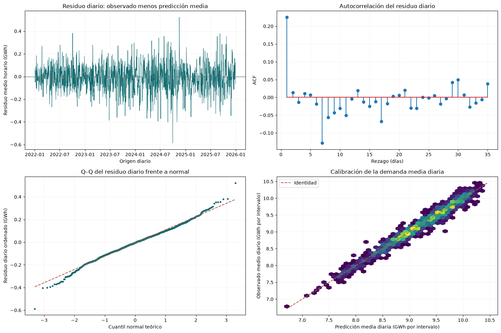
La serie residual tiene un sesgo medio de -0,0075 GWh, IC95 % [-0,0137; -0,0014], que indica una ligera sobreestimación global. La autocorrelación y los desvíos de la recta Q–Q motivan la inferencia por bloques y el diagnóstico de colas. El contraste de normalidad rechaza tras el ajuste múltiple.
La calibración lineal estima pendiente 0,9893 e intercepto 0,0910 GWh. El contraste conjunto no rechaza al 5 % tras Holm (p = 0,0517); este resultado no demuestra calibración exacta ni elimina el sesgo observado.
from IPython.display import HTML
m4d_tests = pd.read_csv(m4d_dir / "contrastes_residuos.csv")
m4d_global = m4d_tests.loc[m4d_tests.horizonte.isna()].copy()
m4d_p = lambda x: "<1e-300" if x == 0 else f"{x:.3g}"
m4d_global_table = pd.DataFrame({
"Prueba": m4d_global.prueba,
"Significado del contraste": m4d_global.significado,
"Rezagos": m4d_global.rezagos.map(lambda v: "—" if pd.isna(v) else str(int(v))),
"p": m4d_global.p.map(m4d_p),
"p ajustado · Holm(34)": m4d_global.p_Holm.map(m4d_p),
"Rechaza al 5 %": m4d_global.rechaza_005.map({True:"Sí",False:"No"})
}).reset_index(drop=True)
display(HTML(m4d_global_table.to_html(index=False, escape=True)))
| Prueba | Significado del contraste | Rezagos | p | p ajustado · Holm(34) | Rechaza al 5 % |
|---|---|---|---|---|---|
| Ljung–Box | Evalúa si los errores diarios conservan autocorrelación hasta el número de días indicado. | 7 | 1.14e-18 | 3.77e-17 | Sí |
| Ljung–Box | Evalúa si los errores diarios conservan autocorrelación hasta el número de días indicado. | 14 | 1.23e-17 | 3.95e-16 | Sí |
| Ljung–Box | Evalúa si los errores diarios conservan autocorrelación hasta el número de días indicado. | 28 | 2.36e-14 | 7.08e-13 | Sí |
| Ljung–Box cuadrados | Evalúa si la magnitud de los errores presenta dependencia temporal; usa residuos centrados al cuadrado. | 7 | 0.000483 | 0.00435 | Sí |
| Ljung–Box cuadrados | Evalúa si la magnitud de los errores presenta dependencia temporal; usa residuos centrados al cuadrado. | 14 | 0.00108 | 0.00754 | Sí |
| Ljung–Box cuadrados | Evalúa si la magnitud de los errores presenta dependencia temporal; usa residuos centrados al cuadrado. | 28 | 6.33e-05 | 0.000823 | Sí |
| ARCH–LM | Busca dependencia de la varianza del error respecto a errores pasados al cuadrado, hasta 14 días. | 14 | 0.0139 | 0.0517 | No |
| BDS | Evalúa la hipótesis de residuos independientes e idénticamente distribuidos; su rechazo no identifica por sí solo no linealidad. | — | 2.42e-10 | 7.03e-09 | Sí |
| Jarque–Bera | Evalúa si la asimetría y la curtosis de los residuos son compatibles con una distribución normal. | — | 5.08e-19 | 1.73e-17 | Sí |
| Mincer–Zarnowitz | Evalúa conjuntamente intercepto cero y pendiente uno al relacionar observado con predicción media diaria, usando covarianza HAC13. | — | 0.0129 | 0.0517 | No |
La familia exploratoria contiene 34 contrastes: diez globales y uno de autocorrelación para cada horizonte. Holm se aplica una sola vez a los 34 valores p y se conserva separado de las comparaciones históricas entre modelos. Se rechazan 30 hipótesis al 5 %. Ljung–Box detecta dependencia en residuos diarios y cuadrados; ARCH–LM no rechaza después del ajuste (p = 0,0517). El rechazo de BDS señala incompatibilidad con independencia e idéntica distribución; dada la autocorrelación detectada, no demuestra por sí solo una estructura no lineal.
m4d_hour_tests = m4d_tests.loc[m4d_tests.horizonte.notna()].set_index("horizonte")
m4d_fig, m4d_ax = plt.subplots(figsize=(12,4.8))
for m4d_r in m4d_h.itertuples():
m4d_color = "#af5846" if m4d_hour_tests.loc[m4d_r.horizonte,"rechaza_005"] else "#126c70"
m4d_ax.errorbar(m4d_r.horizonte,m4d_r.sesgo_kWh/1e6,
yerr=np.array([[(m4d_r.sesgo_kWh-m4d_r.sesgo_ic95_inf_kWh)/1e6],
[(m4d_r.sesgo_ic95_sup_kWh-m4d_r.sesgo_kWh)/1e6]]),
fmt="o",color=m4d_color,capsize=3)
m4d_ax.axhline(0,color="#65767d",linewidth=1)
m4d_ax.set(xlabel="Horizonte (h)",ylabel="Observado menos predicción media (GWh)",
title="Sesgo por horizonte e IC95 % temporal puntual")
m4d_ax.text(.01,.03,"Naranja: autocorrelación a 14 días detectada tras Holm(34)",transform=m4d_ax.transAxes,fontsize=9)
m4d_ax.grid(alpha=.2);m4d_fig.tight_layout();display(m4d_fig);plt.close(m4d_fig)
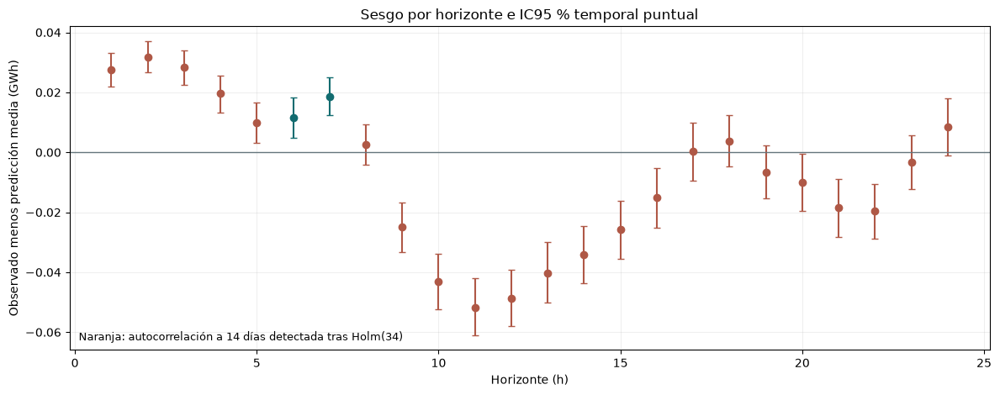
El mayor sesgo absoluto corresponde a 11 h (-0,0517 GWh). Los intervalos son puntuales del bootstrap diario; el color resume un contraste diferente: autocorrelación a 14 días, detectada en 22 de 24 horizontes después de Holm. El promedio diario puede compensar errores de signo opuesto entre horas; el perfil permite identificar esas diferencias.
Error por calendario y nivel de demanda#
Se mantienen pérdidas individuales promedio de semillas para comparar los procedimientos. Los tipos de día son excluyentes: festivo, fin de semana no festivo y laborable. Los niveles horarios se definen con los cuartiles de demanda de 2013–2020, periodo de ajuste de la memoria: 6,594; 7,641 y 8,522 GWh. La demanda realizada solo asigna el segmento después de emitir y puntuar el pronóstico. No se incorpora como entrada futura. Los conteos indican horas evaluadas, no réplicas independientes.
m4d_segments = pd.read_csv(m4d_dir / "segmentos.csv")
m4d_fig, m4d_axes = plt.subplots(1,2,figsize=(15,5.5))
for m4d_ax,m4d_family,m4d_title in zip(m4d_axes,["tipo_dia","nivel_demanda"],
["Error por tipo de día","Error por nivel de demanda horaria realizada"]):
m4d_base = m4d_segments.query('clave == "m4_n" and familia == @m4d_family')
m4d_order = m4d_base.segmento.tolist()
for m4d_j,(m4d_key,m4d_name,m4d_color) in enumerate([
("m4_n","M4ₙ","#126c70"),("nuevo_timesnet__N","TimesNet · N","#af5846")]):
m4d_v = m4d_segments.query('clave == @m4d_key and familia == @m4d_family').set_index("segmento").loc[m4d_order]
m4d_ax.bar(np.arange(len(m4d_order))+(m4d_j-.5)*.35,m4d_v.MASE,width=.35,label=m4d_name,color=m4d_color)
m4d_ax.set_xticks(np.arange(len(m4d_order)),[f"{name}\n{int(n):,} horas" for name,n in zip(m4d_order,m4d_base.horas)])
m4d_ax.set(title=m4d_title,ylabel="MASE individual promedio")
m4d_ax.legend();m4d_ax.grid(axis="y",alpha=.2)
m4d_fig.tight_layout();display(m4d_fig);plt.close(m4d_fig)
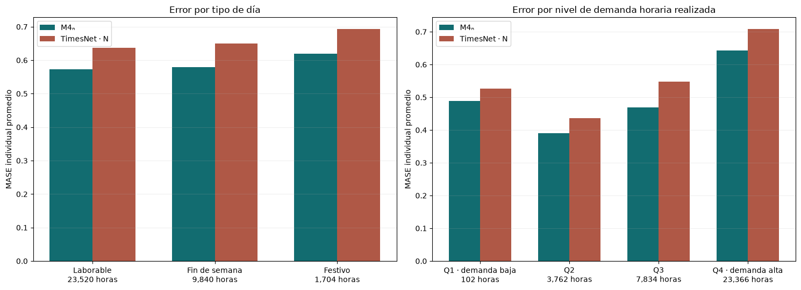
M4 presenta menor MASE que TimesNet en 7 de los siete segmentos. En festivos obtiene MASE 0,6198, sobre 71 días; en demanda alta obtiene 0,6436. El primer cuartil contiene solo 102 horas de 43 orígenes, por lo que su promedio tiene un alcance más limitado. Los niveles definidos con entrenamiento muestran también el desplazamiento hacia demandas mayores en prueba. Las comparaciones segmentadas son descriptivas; no se añaden nuevos contrastes de superioridad.
Dispersión por día · Por origen y horizonte · Perfil horario · Contrastes de residuos · Segmentos de los 18 procedimientos · Protocolo.
Código reproducible#
"""Dispersión, residuos y segmentos de M4 a partir de predicciones guardadas."""
from __future__ import annotations
import hashlib
import json
import warnings
from itertools import combinations
from pathlib import Path
import numpy as np
import pandas as pd
from scipy import stats
import statsmodels.api as sm
from statsmodels.stats.diagnostic import acorr_ljungbox, het_arch
from statsmodels.stats.multitest import multipletests
from statsmodels.tsa.stattools import acf, bds
SIGNIFICADOS_CONTRASTES={'Ljung–Box': 'Evalúa si los errores diarios conservan autocorrelación hasta el número de días indicado.', 'Ljung–Box cuadrados': 'Evalúa si la magnitud de los errores presenta dependencia temporal; usa residuos centrados al cuadrado.', 'ARCH–LM': 'Busca dependencia de la varianza del error respecto a errores pasados al cuadrado, hasta 14 días.', 'BDS': 'Evalúa la hipótesis de residuos independientes e idénticamente distribuidos; su rechazo no identifica por sí solo no linealidad.', 'Jarque–Bera': 'Evalúa si la asimetría y la curtosis de los residuos son compatibles con una distribución normal.', 'Mincer–Zarnowitz': 'Evalúa conjuntamente intercepto cero y pendiente uno al relacionar observado con predicción media diaria, usando covarianza HAC13.', 'Ljung–Box por horizonte': 'Evalúa la autocorrelación entre días de los errores del mismo horizonte, hasta 14 días.'}
ROOT=Path(__file__).resolve().parents[1]
OUT_NAME='diagnosticos_m4_20261124'
Q=215617.90361589016
def calcular(root=ROOT):
root=Path(root);out=root/'results'/OUT_NAME;out.mkdir(parents=True,exist_ok=True)
sources=[]
def source(rel):
p=root/rel;sources.append(p);return p
arrays=[];truth=None
for seed in range(101,111):
p=source(f'results/m4_cierre_gpu_20261123/reducido_B/colombia/prueba/M4_N_semilla_{seed}.npz')
with np.load(p,allow_pickle=False)as z:
if truth is None:truth=z['y'].astype(float);days=z['dia'].copy()
assert np.array_equal(days,z['dia']) and np.array_equal(truth,z['y'])
arrays.append(z['pred'].astype(float))
P=np.stack(arrays);T,H=truth.shape
dates=pd.DatetimeIndex(pd.to_datetime(days)).tz_localize('America/Bogota')
assert P.shape==(10,1461,24) and dates.is_unique and dates.is_monotonic_increasing
assert np.array_equal(days,pd.date_range('2022-01-01','2025-12-31').strftime('%Y-%m-%d'))
assert np.isfinite(P).all() and np.isfinite(truth).all()
center=P.mean(0);spread=P.std(0,ddof=1);variance=spread**2
residual=truth-center;abs_error=np.abs(P-truth);ensemble_abs=np.abs(residual)
cv=100*spread/np.abs(center);lo,hi=np.quantile(P,[.1,.9],axis=0)
daily_spread=spread.mean(1);daily_ae=ensemble_abs.mean(1);daily_e=residual.mean(1)
# Identidad exacta de la descomposición del MSE, distinta del MAE primario.
mse_ind=np.mean((P-truth)**2);mse_center=np.mean(residual**2)
initialization_mse=np.mean((P-center)**2)
assert np.isclose(mse_ind,mse_center+initialization_mse,rtol=1e-12)
assert abs(abs_error.mean()/Q-.5770369087419158)<1e-10
daily=pd.DataFrame(dict(dia=days,DE_horaria_media_kWh=daily_spread,
DE_horaria_max_kWh=spread.max(1),CV_horario_medio_pct=cv.mean(1),
DE_media_diaria_kWh=P.mean(2).std(0,ddof=1),
ancho_p10_p90_medio_kWh=(hi-lo).mean(1),MAE_individual_kWh=abs_error.mean((0,2)),
MAE_media_predicciones_kWh=daily_ae,sesgo_media_kWh=daily_e,
observado_medio_kWh=truth.mean(1),predicho_medio_kWh=center.mean(1),
MASE_individual=abs_error.mean((0,2))/Q))
daily.to_csv(out/'dispersion_diaria.csv',index=False)
hourly=pd.DataFrame(dict(dia=np.repeat(days,H),horizonte=np.tile(np.arange(1,H+1),T),
observado_kWh=truth.ravel(),prediccion_media_kWh=center.ravel(),
DE_kWh=spread.ravel(),CV_pct=cv.ravel(),p10_kWh=lo.ravel(),p90_kWh=hi.ravel(),
residuo_media_kWh=residual.ravel(),MAE_individual_kWh=abs_error.mean(0).ravel()))
hourly.to_parquet(out/'dispersion_por_origen_horizonte.parquet',index=False)
horizon=pd.DataFrame([dict(horizonte=h+1,DE_media_kWh=spread[:,h].mean(),
DE_mediana_kWh=np.median(spread[:,h]),DE_p95_kWh=np.quantile(spread[:,h],.95),
CV_medio_pct=cv[:,h].mean(),MAE_individual_kWh=abs_error[:,:,h].mean(),
MAE_media_predicciones_kWh=ensemble_abs[:,h].mean(),sesgo_kWh=residual[:,h].mean(),
rho_dispersion_error=stats.spearmanr(spread[:,h],ensemble_abs[:,h]).statistic)
for h in range(H)])
seed_loss=abs_error.mean(2)/Q
pairs=pd.DataFrame([dict(semilla_A=a+101,semilla_B=b+101,
diferencia_absoluta_media_kWh=np.abs(P[a]-P[b]).mean(),
rho_MAE_diario=stats.spearmanr(seed_loss[a],seed_loss[b]).statistic)
for a,b in combinations(range(10),2)])
pairs.to_csv(out/'pares_semillas.csv',index=False)
pd.DataFrame(dict(semilla=np.arange(101,111),MASE=seed_loss.mean(1),
MAE_kWh=abs_error.mean((1,2)),RMSE_kWh=np.sqrt(((P-truth)**2).mean((1,2))))).to_csv(out/'metricas_semillas.csv',index=False)
# Los orígenes diarios, no las horas, son la unidad de remuestreo temporal.
B,L,seed=9999,14,20261124
rng=np.random.default_rng(seed);ix=np.empty((B,T),dtype=np.int32)
ix[:,0]=rng.integers(T,size=B)
for t in range(1,T):
ix[:,t]=np.where(rng.random(B)<1/L,rng.integers(T,size=B),(ix[:,t-1]+1)%T)
vals=np.column_stack([daily_spread,daily_ae,daily_e,residual])
boot=np.empty((B,vals.shape[1]));rho_boot=np.empty(B)
for start in range(0,B,128):
indices=ix[start:start+128]
boot[start:start+128]=vals[indices].mean(1)
ar=stats.rankdata(daily_spread[indices],axis=1);br=stats.rankdata(daily_ae[indices],axis=1)
ar-=ar.mean(1,keepdims=True);br-=br.mean(1,keepdims=True)
rho_boot[start:start+128]=np.sum(ar*br,axis=1)/np.sqrt(np.sum(ar**2,axis=1)*np.sum(br**2,axis=1))
ci=np.quantile(boot,[.025,.975],axis=0)
horizon['sesgo_ic95_inf_kWh']=ci[0,3:];horizon['sesgo_ic95_sup_kWh']=ci[1,3:]
horizon.to_csv(out/'resumen_horizonte.csv',index=False)
np.savez_compressed(out/'bootstrap.npz',medias=boot,rho_dispersion_error=rho_boot)
# Diagnósticos sobre el residuo diario de la predicción media de las semillas.
tests=[]
def test(name,statistic,p,null,lag=None,h=None):
tests.append(dict(prueba=name,estadistico=float(statistic),p=float(p),
H0=null,rezagos=lag,horizonte=h))
for label,v in [('Ljung–Box',daily_e),('Ljung–Box cuadrados',(daily_e-daily_e.mean())**2)]:
lb=acorr_ljungbox(v,lags=[7,14,28],return_df=True)
for lag,r in lb.iterrows():test(label,r.lb_stat,r.lb_pvalue,'Autocorrelaciones hasta el rezago indicado iguales a cero',int(lag))
with warnings.catch_warnings():
warnings.simplefilter('ignore',FutureWarning)
arch=het_arch(daily_e/Q,nlags=14)
test('ARCH–LM',arch[0],arch[1],'Ausencia de efectos ARCH hasta 14 días',14)
bd,pbd=bds(daily_e/Q,max_dim=2,distance=1.5)
test('BDS',np.asarray(bd).item(),np.asarray(pbd).item(),'Residuos independientes e idénticamente distribuidos')
jb=stats.jarque_bera(daily_e)
test('Jarque–Bera',jb.statistic,jb.pvalue,'Normalidad del residuo diario')
X=sm.add_constant(center.mean(1)/Q)
fit=sm.OLS(truth.mean(1)/Q,X).fit(cov_type='HAC',cov_kwds={'maxlags':13})
mz=fit.wald_test((np.eye(2),np.array([0.,1.])),scalar=True)
test('Mincer–Zarnowitz',np.asarray(mz.statistic).item(),mz.pvalue,'Intercepto cero y pendiente uno, con covarianza HAC13')
for h in range(H):
lb=acorr_ljungbox(residual[:,h],lags=[14],return_df=True).iloc[0]
test('Ljung–Box por horizonte',lb.lb_stat,lb.lb_pvalue,'Ausencia de autocorrelación hasta 14 días en este horizonte',14,h+1)
tests=pd.DataFrame(tests);assert len(tests)==34
tests['p_Holm']=multipletests(tests.p,method='holm')[1]
tests['rechaza_005']=tests.p_Holm.lt(.05)
tests['significado']=tests.prueba.map(SIGNIFICADOS_CONTRASTES)
tests.to_csv(out/'contrastes_residuos.csv',index=False)
pd.DataFrame(dict(rezago=np.arange(36),ACF=acf(daily_e,nlags=35,fft=True))).to_csv(out/'autocorrelacion.csv',index=False)
qx,qy=stats.probplot(daily_e/1e6,fit=False)
pd.DataFrame(dict(cuantil_normal=qx,residuo_GWh=qy)).to_csv(out/'qq_residuos.csv',index=False)
# Segmentación descriptiva: calendario del objetivo y umbrales de entrenamiento.
panel_path=source('data/processed/panel_horario.parquet')
panel=pd.read_parquet(panel_path,columns=['y_demanda_real_kwh','cal_es_festivo'])
ypanel=panel.loc['2022':'2025'].y_demanda_real_kwh.to_numpy().reshape(T,H)
assert np.array_equal(ypanel,truth)
train=panel.loc['2013':'2020'].y_demanda_real_kwh
cut=train.quantile([.25,.5,.75]).to_numpy()
holidays=panel.reindex(dates).cal_es_festivo.to_numpy().astype(bool)
types=np.where(holidays,'Festivo',np.where(dates.day_of_week>=5,'Fin de semana','Laborable'))
type_names=['Laborable','Fin de semana','Festivo'];level_names=['Q1 · demanda baja','Q2','Q3','Q4 · demanda alta']
levels=np.searchsorted(cut,truth,side='right')
masks=[('tipo_dia',name,np.broadcast_to((types==name)[:,None],(T,H)))for name in type_names]
masks += [('nivel_demanda',name,levels==i)for i,name in enumerate(level_names)]
daily['tipo_dia']=types;daily.to_csv(out/'dispersion_diaria.csv',index=False)
bench=pd.read_csv(source('results/evaluacion_e2/benchmark.csv')).set_index('clave')
names=bench.modelo.to_dict()|{'m4_n':'M4ₙ'};models={'m4_n':P}
consolidated=source('results/evaluacion_e2/entradas/consolidado/predicciones_finales.parquet')
frame=pd.read_parquet(consolidated)
expected_ns=dates.as_unit('ns').asi8
for (exp,var),group in frame.groupby(['experimento','variante'],sort=False):
key=exp+'__'+var
if key not in bench.index:continue
parts=[]
for s,g in group.groupby('semilla',sort=True):
g=g.sort_values(['origen','horizonte'])
assert s in range(1000,1005)
assert np.array_equal(pd.DatetimeIndex(g.origen.drop_duplicates()).as_unit('ns').asi8,expected_ns)
assert np.array_equal(g.observado_kwh.to_numpy().reshape(T,H),truth)
assert np.array_equal(g.horizonte.to_numpy(),np.tile(np.arange(1,H+1),T))
parts.append(g.predicho_kwh.to_numpy().reshape(T,H))
models[key]=np.stack(parts)
snap=root/'results/repositorio/d1ae9a4e09dd1dead4af1329f16aa3e8d0f2c3d3'
reg_path=source('results/repositorio/d1ae9a4e09dd1dead4af1329f16aa3e8d0f2c3d3/results/consolidado/modelos.json')
reg=json.loads(reg_path.read_text(encoding='utf-8'))
for key in ['mlp','lstm','cnn1d','arx_lineal']:
rows=[]
for item in sorted(reg[key]['artefactos'],key=lambda r:r['semilla']):
path=snap/item['predicciones'];sources.append(path)
with np.load(path,allow_pickle=False)as z:
assert np.array_equal(z['origen'],expected_ns) and np.allclose(z['y'],truth,rtol=0,atol=1e-6)
rows.append(z['yhat'].astype(float))
models[key]=np.stack(rows)
raw=panel.y_demanda_real_kwh.to_numpy();pos=panel.index.get_indexer(dates);hours=np.arange(24)
lag_daily=24*np.maximum(1,np.ceil((hours+2)/24).astype(int))
models['ingenuo_168h']=raw[pos[:,None]+hours-168][None]
models['ingenuo_24h']=raw[pos[:,None]+hours-lag_daily][None]
assert len(models)==18
segments=[]
for key,arr in models.items():
assert np.isfinite(arr).all()
assert len(arr)==(10 if key=='m4_n' else 1 if key.startswith('ingenuo_') else 5)
errors=arr-truth;absolute=np.abs(errors).mean(0)
if key!='m4_n':assert abs(absolute.mean()/Q-bench.loc[key,'MASE'])<2e-6,key
for family,label,mask in masks:
n=int(mask.sum());n_days=int(mask.any(1).sum())
segments.append(dict(clave=key,modelo=names[key],semillas=len(arr),familia=family,segmento=label,
horas=n,origenes=n_days,MASE=absolute[mask].mean()/Q,
MAE_kWh=absolute[mask].mean(),RMSE_kWh=np.sqrt((errors[:,mask]**2).mean(1)).mean(),
sesgo_kWh=(truth-arr.mean(0))[mask].mean()))
segments=pd.DataFrame(segments);segments.to_csv(out/'segmentos.csv',index=False)
for family in ['tipo_dia','nivel_demanda']:
m=segments.query('clave=="m4_n" and familia==@family')
assert m.horas.sum()==T*H
assert np.isclose(np.average(m.MASE,weights=m.horas),abs_error.mean()/Q)
peak_index=int(daily_spread.argmax());peak_point=np.unravel_index(spread.argmax(),spread.shape)
daily.sort_values('DE_horaria_media_kWh',ascending=False).head(20).to_csv(out/'dias_mayor_dispersion.csv',index=False)
np.savez_compressed(out/'matrices.npz',dia=days,media_kWh=center,observado_kWh=truth,DE_kWh=spread,
CV_pct=cv,p10_kWh=lo,p90_kWh=hi,residuo_kWh=residual,
predicciones_dia_max_kWh=P[:,peak_index],dia_max=days[peak_index])
seed_mase=seed_loss.mean(1);rho=stats.spearmanr(daily_spread,daily_ae).statistic
summary=dict(dias=T,horizontes=H,semillas=10,Q_kWh=Q,MASE_individual=float(abs_error.mean()/Q),
MASE_DE_semillas=float(seed_mase.std(ddof=1)),
DE_media_GWh=float(spread.mean()/1e6),DE_mediana_GWh=float(np.median(spread)/1e6),
DE_p95_GWh=float(np.quantile(spread,.95)/1e6),CV_medio_pct=float(cv.mean()),
CV_p95_pct=float(np.quantile(cv,.95)),
DE_media_ic95_GWh=(ci[:,0]/1e6).tolist(),
dia_mayor_dispersion=str(days[peak_index]),DE_horaria_media_dia_max_GWh=float(daily_spread[peak_index]/1e6),
maxima_DE_GWh=float(spread[peak_point]/1e6),dia_maxima_DE=str(days[peak_point[0]]),
horizonte_maxima_DE=int(peak_point[1]+1),
correlacion_dispersion_error_diario=float(rho),correlacion_dispersion_error_ic95=np.quantile(rho_boot,[.025,.975]).tolist(),
rho_MAE_diario_entre_semillas_mediana=float(pairs.rho_MAE_diario.median()),
cobertura_banda_semillas_p10_p90=float(((truth>=lo)&(truth<=hi)).mean()),
ancho_medio_banda_semillas_GWh=float((hi-lo).mean()/1e6),
MAE_media_predicciones_GWh=float(daily_ae.mean()/1e6),
RMSE_media_predicciones_GWh=float(np.sqrt(mse_center)/1e6),
sesgo_GWh=float(daily_e.mean()/1e6),sesgo_ic95_GWh=(ci[:,2]/1e6).tolist(),
intercepto_calibracion_GWh=float(fit.params[0]*Q/1e6),pendiente_calibracion=float(fit.params[1]),
MSE_individual_kWh2=float(mse_ind),MSE_media_predicciones_kWh2=float(mse_center),
contribucion_inicializacion_MSE_kWh2=float(initialization_mse),
porcentaje_MSE_asociado_dispersion=float(100*initialization_mse/mse_ind),
contrastes=len(tests),rechazos_Holm=int(tests.rechaza_005.sum()),
horizontes_con_autocorrelacion=int(tests.query('prueba=="Ljung–Box por horizonte"').rechaza_005.sum()),
umbrales_demanda_kWh=cut.tolist(),periodo_umbrales=['2013-01-01','2020-12-31'],
periodo=['2022-01-01','2025-12-31'])
protocol=dict(unidad_remuestreo='origen diario de 24 horas',dispersion='DE muestral entre diez semillas (ddof=1)',
bootstrap=dict(tipo='estacionario pareado',replicas=B,longitud_media_bloque_dias=L,semilla=seed,
nivel=.95,intervalos='percentiles puntuales',remuestreo_semillas=False),
estimando_benchmark='Media de las pérdidas individuales por semilla',
estimando_residuos='Observado menos media de diez predicciones; agregado por día para contrastes globales',
familia_Holm=34,alfa=.05,periodo=summary['periodo'],
BDS=dict(dimension=2,epsilon='1.5 desviaciones del residuo diario'),
calibracion='Mincer–Zarnowitz, Wald conjunto intercepto=0 y pendiente=1, HAC13',
segmentos=dict(tipo_dia='Festivo tiene prioridad sobre fin de semana; categorías excluyentes',
nivel='Cuartiles de demanda horaria observada de 2013–2020; solo diagnóstico posterior',
umbrales_kWh=cut.tolist(),intervalos=False),
bandas_semillas='p10–p90 describe inicializaciones, no cobertura predictiva nominal',
atencion='Su estabilidad se estudió en 13 consultas de 2021; no se correlaciona directamente con las salidas de prueba de otros días',
entrenamiento=False,inferencia_neuronal=False,modificacion_benchmark=False)
hashes={p.relative_to(root).as_posix():hashlib.sha256(p.read_bytes()).hexdigest()for p in sorted(set(sources))}
for name,obj in [('resumen.json',summary),('protocolo.json',protocol),('verificacion.json',dict(
n_archivos_predicciones_M4=10,fechas_completas_unicas=True,paridad_objetivo=True,
paridad_MASE=True,identidad_MSE=True,segmentos_excluyentes_y_exhaustivos=True,
comparadores=17,fuentes_sha256=hashes))]:
(out/name).write_text(json.dumps(obj,ensure_ascii=False,indent=2)+'\n',encoding='utf-8')
print(json.dumps(summary,ensure_ascii=False,indent=2),flush=True)
if __name__=='__main__':calcular()
python scripts/diagnosticar_m4_guardado.py
python scripts/integrar_diagnosticos_m4.py
Sensibilidad de la superioridad de M4 a dependencia temporal prolongada#
La comparación utiliza las pérdidas individuales promedio entre semillas para los mismos 1.461 días de 2022–2025. Se conservan las diez realizaciones de M4, cinco por comparador aprendido y dos referencias deterministas. Se consideran 17 comparadores y dos márgenes de reducción del MASE: 0 % y 3 %.
El bootstrap estacionario pareado utiliza bloques de longitud media de 14, 28 y 56 días, con 49.999 réplicas por configuración. DM–HLN y Giacomini–White utilizan covarianzas HAC de Bartlett con 13, 27 y 55 rezagos, respectivamente. El horizonte efectivo de la corrección HLN permanece en un origen diario; la longitud de bloque no se sustituye por un nuevo horizonte de predicción.
Para el margen \(m\), el diferencial es:
Un diferencial medio positivo favorece una reducción superior al margen. Bootstrap y DM–HLN contrastan unilateralmente \(E[d_t^{(m)}]\leq0\). GW contrasta bilateralmente \(E[z_t d_t^{(m)}]=0\), con instrumentos constante y diferencial observable de dos días antes. GW no identifica por sí solo la dirección de la ventaja.
Holm se aplica conjuntamente a 306 hipótesis: 17 comparadores × 2 márgenes × 3 métodos × 3 configuraciones. Los intervalos de reducción relativa son puntuales y condicionan las semillas conservadas. Las familias de contrastes del benchmark mantienen sus resultados; esta familia evalúa sensibilidad a la dependencia temporal.
from pathlib import Path
import numpy as np
import pandas as pd
import matplotlib.pyplot as plt
from IPython.display import display
sens_dir = Path("_static/resultados/sensibilidad_temporal_m4")
if not sens_dir.exists():
sens_dir = Path("book") / sens_dir
sens_rows = pd.read_csv(sens_dir / "contrastes_sensibilidad.csv")
sens_ci = pd.read_csv(sens_dir / "intervalos_ganancia.csv")
sens_times = sens_ci.query('comparator_id == "nuevo_timesnet__N"').sort_values("bloque_dias")
sens_fig, sens_ax = plt.subplots(figsize=(10, 4.2))
sens_ax.errorbar(sens_times.ganancia_pct, np.arange(len(sens_times)),
xerr=np.vstack([sens_times.ganancia_pct-sens_times.ic95_inf_pct,
sens_times.ic95_sup_pct-sens_times.ganancia_pct]),
fmt="o", color="#126c70", capsize=5)
sens_ax.set_yticks(np.arange(len(sens_times)), [f"Bloque {b} días" for b in sens_times.bloque_dias])
sens_ax.invert_yaxis()
sens_ax.axvline(0, color="#65767d", label="Igualdad de error")
sens_ax.axvline(3, color="#af5846", linestyle="--", label="Margen del 3 %")
sens_ax.set(xlabel="Reducción relativa del MASE de M4 frente a TimesNet (%) · IC95 % puntual",
title="Sensibilidad del intervalo a la longitud de bloque")
sens_ax.legend(loc="lower left", fontsize=9)
sens_ax.grid(axis="x", alpha=.2)
sens_fig.tight_layout();display(sens_fig);plt.close(sens_fig)
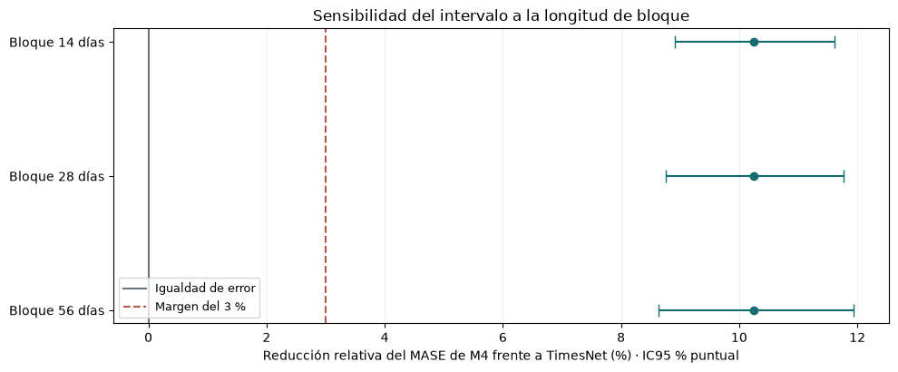
La mejora de M4 frente a TimesNet permanece en 10,25 %. Con bloques de 56 días, su IC95 % es [8,64 %; 11,94 %]. La amplitud aumenta respecto de bloques de 14 días, pero el límite inferior conserva una distancia positiva respecto del margen del 3 %. Los puntos coinciden porque las pérdidas y su diferencia media se mantienen; cambia la estimación de incertidumbre.
Contrastes frente a TimesNet#
La columna de significado identifica la pregunta de cada contraste. Los valores p incluyen el ajuste conjunto sobre 306 hipótesis; no se comparan directamente con ajustes sobre familias de tamaño diferente. El rechazo conjunto de las pruebas unilaterales respalda la mejora media; el rechazo GW aporta evidencia adicional frente a igualdad condicional.
from IPython.display import HTML
sens_names = {"bootstrap_estacionario":"Bootstrap estacionario", "DM_HLN":"DM–HLN", "GW_bilateral":"GW bilateral"}
sens_selected = sens_rows.query('comparator_id == "nuevo_timesnet__N"')
sens_table = sens_selected.pivot(index=["margen_relativo","metodo","significado"], columns="bloque_dias", values="p_Holm").reset_index()
sens_table["Margen"] = sens_table.margen_relativo.map(lambda v:f"{100*v:.0f} %")
sens_table["Contraste"] = sens_table.metodo.map(sens_names)
sens_table["Significado del contraste"] = sens_table.significado
sens_p = lambda p:"<1e-300" if p==0 else f"{p:.3g}"
for sens_b in [14,28,56]:
sens_table[f"p Holm · {sens_b} días"] = sens_table[sens_b].map(sens_p)
sens_table.columns.name = None
display(HTML(sens_table[["Margen","Contraste","Significado del contraste", "p Holm · 14 días", "p Holm · 28 días", "p Holm · 56 días"]].to_html(index=False, escape=True)))
| Margen | Contraste | Significado del contraste | p Holm · 14 días | p Holm · 28 días | p Holm · 56 días |
|---|---|---|---|---|---|
| 0 % | DM–HLN | Contrasta una mejora media del MASE con varianza HAC y corrección de muestra finita HLN; es unilateral. | 2.84e-43 | 4.41e-37 | 3.15e-27 |
| 0 % | GW bilateral | Contrasta igualdad condicional de pérdidas usando una constante y el diferencial observable de d−2; es bilateral y no determina por sí solo la dirección. | 8.38e-53 | 6.82e-50 | 6.66e-41 |
| 0 % | Bootstrap estacionario | Evalúa si la reducción media supera el margen indicado, remuestreando bloques de días compartidos. | 0.00204 | 0.00204 | 0.00204 |
| 3 % | DM–HLN | Contrasta una mejora media del MASE con varianza HAC y corrección de muestra finita HLN; es unilateral. | 7.53e-24 | 6.01e-21 | 1.61e-15 |
| 3 % | GW bilateral | Contrasta igualdad condicional de pérdidas usando una constante y el diferencial observable de d−2; es bilateral y no determina por sí solo la dirección. | 8.4e-25 | 4.55e-23 | 6.67e-18 |
| 3 % | Bootstrap estacionario | Evalúa si la reducción media supera el margen indicado, remuestreando bloques de días compartidos. | 0.00204 | 0.00204 | 0.00204 |
Frente a TimesNet, 6 de las seis combinaciones de configuración y margen conservan respaldo en los tres contrastes. Para el bloque de 56 días y margen del 3 %, el p ajustado de bootstrap es 0,00204; DM–HLN y GW permanecen por debajo de 0,05.
Los valores p de bootstrap repetidos alcanzan el límite de resolución del remuestreo: el mínimo posible es 1/50.000 = 0,00002 antes del ajuste. No indican distribuciones bootstrap idénticas ni una probabilidad exactamente nula. La sensibilidad se evalúa sobre los diferenciales de pérdida entre procedimientos, además del diagnóstico separado de residuos propios de M4.
sens_summary = pd.read_csv(sens_dir / "resumen_comparaciones.csv")
sens_scope = sens_summary.query("margen_relativo == 0.03")
sens_order = sens_scope.query("bloque_dias == 14").sort_values("ganancia_pct").comparator_id.tolist()
sens_labels = sens_scope.drop_duplicates("comparator_id").set_index("comparator_id").Comparador
sens_fig, sens_axes = plt.subplots(1,2,figsize=(15,9),sharey=True)
for sens_ax,sens_field,sens_title in zip(sens_axes,["p_DM_HLN","p_GW_bilateral"],
["DM–HLN · mejora media superior al 3 %", "GW bilateral · igualdad condicional con margen 3 %"]):
sens_values = sens_scope.pivot(index="comparator_id",columns="bloque_dias",values=sens_field).loc[sens_order,[14,28,56]]
sens_z = -np.log10(np.maximum(sens_values.to_numpy(),1e-300))
sens_im=sens_ax.imshow(sens_z,aspect="auto",vmin=0,vmax=300,cmap="viridis")
sens_ax.set_xticks([0,1,2],["14 / 13","28 / 27","56 / 55"])
sens_ax.set_yticks(np.arange(len(sens_order)),sens_labels.loc[sens_order])
sens_ax.set(title=sens_title,xlabel="Bloque (días) / rezagos HAC")
sens_fig.subplots_adjust(left=.23,right=.86,wspace=.13,bottom=.1,top=.91)
sens_cax = sens_fig.add_axes([.89,.16,.018,.68])
sens_fig.colorbar(sens_im,cax=sens_cax,label="−log10(p ajustado Holm) · límite visual 300")
display(sens_fig);plt.close(sens_fig)
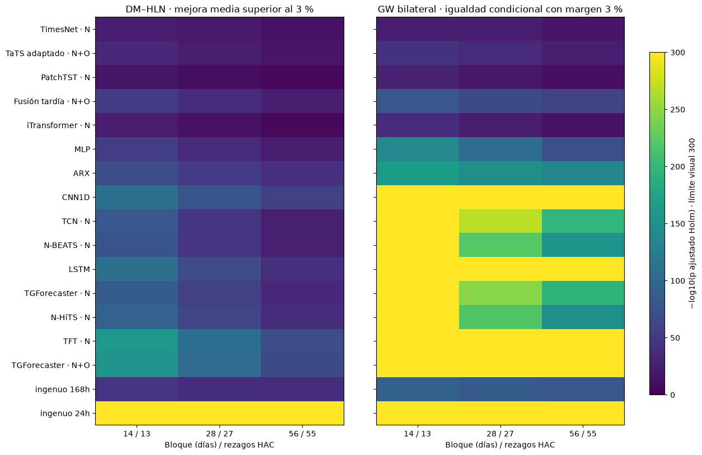
La matriz presenta los contrastes con margen del 3 % para los 17 comparadores. Un mayor valor de −log10(p) representa mayor incompatibilidad con la hipótesis nula; los colores se limitan a 300 para mantener una escala legible. La magnitud del color no constituye un ranking de precisión ni permite comparar directamente la potencia de DM y GW.
Se rechazan 306 de 306 hipótesis después de Holm. El respaldo se conserva en 102 de 102 combinaciones de comparador, configuración y margen, incluidas las 60 correspondientes al Top 10. Por tanto, la evidencia de superioridad de M4 se mantiene al admitir bloques y rezagos más largos en el rango examinado. Esta sensibilidad no exige ausencia de autocorrelación residual ni modifica las arquitecturas o su selección.
306 contrastes con significado · Resumen por comparación · Intervalos · Diagnósticos de los diferenciales · Protocolo.
Código reproducible#
"""Sensibilidad a dependencia prolongada desde pérdidas diarias guardadas."""
from __future__ import annotations
import hashlib,json,time
from pathlib import Path
import numpy as np
import pandas as pd
from scipy import stats
from statsmodels.stats.multitest import multipletests
from statsmodels.stats.diagnostic import acorr_ljungbox
ROOT=Path(__file__).resolve().parents[1]
OUT_NAME='sensibilidad_temporal_m4_20261125'
Q=215617.90361589016
CONFIGS=[(14,13),(28,27),(56,55)]
REPLICAS=49999
SEED=20261125
def calcular(root=ROOT):
root=Path(root);out=root/'results'/OUT_NAME;out.mkdir(parents=True,exist_ok=True)
sources=[root/'results/cierre_e3_sin_entrenar_20261124/perdidas_diarias.csv',
root/'results/evaluacion_e2/perdidas_y_bootstrap.npz',
root/'results/evaluacion_e2/benchmark.csv',root/'dashboard/site/data/study.json']
losses=pd.read_csv(sources[0]);bench=pd.read_csv(sources[2]).set_index('clave')
with np.load(sources[1],allow_pickle=False)as z:
days=pd.to_datetime(z['origen'],utc=True).tz_convert('America/Bogota')
original=pd.DataFrame(z['loss'],columns=z['nombres'])
original=original.rename(columns={r.modelo:k for k,r in bench.iterrows()})
assert set(losses)==set(bench.index)|{'m4_n'}
assert np.allclose(losses[original.columns],original,rtol=1e-12,atol=1e-12)
dates=days.strftime('%Y-%m-%d').to_numpy();N=len(days)
assert N==1461 and days.is_unique and np.all(np.diff(days.asi8)==86400*10**9)
assert dates[0]=='2022-01-01' and dates[-1]=='2025-12-31'
raw=[]
for seed in range(101,111):
p=root/f'results/m4_cierre_gpu_20261123/reducido_B/colombia/prueba/M4_N_semilla_{seed}.npz';sources.append(p)
with np.load(p,allow_pickle=False)as z:
assert np.array_equal(z['dia'],dates)
raw.append(np.abs(z['pred'].astype(float)-z['y']).mean(1)/Q)
assert np.allclose(np.mean(raw,axis=0),losses.m4_n,rtol=1e-12,atol=1e-12)
for key in bench.index:assert abs(losses[key].mean()-bench.loc[key,'MASE'])<2e-6
assert abs(losses.m4_n.mean()-.5770369087419158)<1e-12
study=json.loads(sources[3].read_text(encoding='utf-8'))
top={m['id']for m in study['models']if m['group']=='Top 10'}
keys=list(bench.index);allkeys=keys+['m4_n'];matrix=losses[allkeys].to_numpy()
assert matrix.shape==(1461,18)and np.isfinite(matrix).all()
methods={
'bootstrap_estacionario':'Evalúa si la reducción media supera el margen indicado, remuestreando bloques de días compartidos.',
'DM_HLN':'Contrasta una mejora media del MASE con varianza HAC y corrección de muestra finita HLN; es unilateral.',
'GW_bilateral':'Contrasta igualdad condicional de pérdidas usando una constante y el diferencial observable de d−2; es bilateral y no determina por sí solo la dirección.'}
rows=[];diagnostics=[];gain_intervals=[]
names=bench.modelo.to_dict();start=time.perf_counter()
for block,hac in CONFIGS:
print(f'Bootstrap estacionario: bloque medio {block} días, {REPLICAS} réplicas.',flush=True)
rng=np.random.default_rng(SEED)
ix=np.empty((REPLICAS,N),dtype=np.int32);ix[:,0]=rng.integers(N,size=REPLICAS)
# Mismos números aleatorios de reinicio/posición entre configuraciones.
for t in range(1,N):
ix[:,t]=np.where(rng.random(REPLICAS)<1/block,rng.integers(N,size=REPLICAS),(ix[:,t-1]+1)%N)
boot=np.empty((REPLICAS,len(allkeys)))
for j in range(0,REPLICAS,128):boot[j:j+128]=matrix[ix[j:j+128]].mean(1)
del ix
np.savez_compressed(out/f'bootstrap_bloque_{block}.npz',medias=boot,claves=np.array(allkeys))
bm=boot[:,-1];model=matrix[:,-1]
for i,key in enumerate(keys):
ref=matrix[:,i];br=boot[:,i];gain=1-model.mean()/ref.mean()
gain_ci=np.quantile(1-bm/br,[.025,.975])
gain_intervals.append(dict(comparator_id=key,Comparador=names[key],bloque_dias=block,
lag_HAC=hac,ganancia_pct=100*gain,ic95_inf_pct=100*gain_ci[0],ic95_sup_pct=100*gain_ci[1]))
for margin in [0.,.03]:
d=(1-margin)*ref-model;mean=d.mean();c=d-mean
gamma=np.array([np.dot(c[h:],c[:N-h])/N for h in range(hac+1)])
lrv=float(gamma[0]+2*np.dot(1-np.arange(1,hac+1)/(hac+1),gamma[1:]))
assert lrv>0,(key,block,margin)
dm=float(mean/np.sqrt(lrv/N)*np.sqrt((N-1)/N))
pdm=float(stats.t.sf(dm,N-1))
bd=(1-margin)*br-bm
pboot=float((1+np.count_nonzero(bd-mean>=mean))/(REPLICAS+1))
X=np.column_stack([np.ones(N),np.r_[np.zeros(2),d[:-2]]])
moments=X*d[:,None];avg=moments.mean(0);centered=moments-avg
cov=centered.T@centered/N
for h in range(1,hac+1):
ch=centered[h:].T@centered[:-h]/N
cov+=(1-h/(hac+1))*(ch+ch.T)
assert np.linalg.eigvalsh(cov).min()>-1e-12
gw=float(N*avg@np.linalg.pinv(cov)@avg);pgw=float(stats.chi2.sf(gw,2))
ci_d=np.quantile(bd,[.025,.975])
for method,statistic,p,null in [
('bootstrap_estacionario',float(mean),pboot,'E[(1-m)L_ref−L_M4] ≤ 0'),
('DM_HLN',dm,pdm,'E[(1-m)L_ref−L_M4] ≤ 0'),
('GW_bilateral',gw,pgw,'E[z_t((1-m)L_ref−L_M4)] = 0')]:
rows.append(dict(comparator_id=key,Comparador=names[key],grupo='Top 10'if key in top else'Baseline / control',
bloque_dias=block,lag_HAC=hac,margen_relativo=margin,metodo=method,
significado=methods[method],estadistico=statistic,p=p,hipotesis_nula=null,
diferencia_ajustada_MASE=float(mean),diferencia_ic95_inf=float(ci_d[0]),diferencia_ic95_sup=float(ci_d[1]),
ganancia_relativa=float(gain),ic95_inf=float(gain_ci[0]),ic95_sup=float(gain_ci[1]),
MASE_M4=float(model.mean()),MASE_ref=float(ref.mean()),n=N,
replicas_bootstrap=REPLICAS,familia='sensibilidad_temporal_306'))
lb=acorr_ljungbox(d,lags=[14,28,56],return_df=True)
for lag,v in lb.iterrows():diagnostics.append(dict(comparator_id=key,Comparador=names[key],
margen_relativo=margin,rezago=int(lag),estadistico=float(v.lb_stat),p=float(v.lb_pvalue)))
print(f'Configuración {block}/{hac} terminada; {time.perf_counter()-start:.1f} s acumulados.',flush=True)
df=pd.DataFrame(rows);assert len(df)==306
df['p_Holm']=multipletests(df.p,method='holm')[1]
df['rechaza_005']=df.p_Holm.lt(.05)
df.to_csv(out/'contrastes_sensibilidad.csv',index=False)
pd.DataFrame(gain_intervals).to_csv(out/'intervalos_ganancia.csv',index=False)
# Los diagnósticos de diferencial no dependen de la configuración HAC/bootstrap.
diag=pd.DataFrame(diagnostics).drop_duplicates(['comparator_id','margen_relativo','rezago'])
assert len(diag)==102
diag['p_Holm']=multipletests(diag.p,method='holm')[1]
diag.to_csv(out/'diagnosticos_diferenciales.csv',index=False)
verdicts=[]
for (key,block,margin),g in df.groupby(['comparator_id','bloque_dias','margen_relativo'],sort=False):
assert set(g.metodo)==set(methods)
common=g.iloc[0];pv=g.set_index('metodo').p_Holm
verdicts.append(dict(comparator_id=key,Comparador=common.Comparador,grupo=common.grupo,
bloque_dias=int(block),lag_HAC=int(common.lag_HAC),margen_relativo=float(margin),
ganancia_pct=float(100*common.ganancia_relativa),ic95_inf_pct=float(100*common.ic95_inf),
ic95_sup_pct=float(100*common.ic95_sup),p_bootstrap=float(pv['bootstrap_estacionario']),
p_DM_HLN=float(pv['DM_HLN']),p_GW_bilateral=float(pv['GW_bilateral']),
p_max_ajustado=float(pv.max()),mejora_media_respaldada=bool(pv['bootstrap_estacionario']<.05 and pv['DM_HLN']<.05),
respaldo_tres_contrastes=bool(g.rechaza_005.all() and common.ganancia_relativa>margin)))
verdict=pd.DataFrame(verdicts);assert len(verdict)==102
verdict.to_csv(out/'resumen_comparaciones.csv',index=False)
times=verdict.query('comparator_id=="nuevo_timesnet__N"').copy()
summary=dict(periodo=['2022-01-01','2025-12-31'],dias=N,comparadores=17,modelos_top10=10,
semillas_M4=10,semillas_comparadores_aprendidos=5,referencias_deterministas=2,
MASE_M4=float(losses.m4_n.mean()),MASE_TimesNet=float(losses['nuevo_timesnet__N'].mean()),
ganancia_TimesNet_pct=float(times.ganancia_pct.iloc[0]),
configuraciones=[dict(bloque_dias=b,lag_HAC=h)for b,h in CONFIGS],
familia_Holm=len(df),replicas=REPLICAS,semilla=SEED,contrastes_rechazados=int(df.rechaza_005.sum()),
comparaciones_respaldadas=int(verdict.respaldo_tres_contrastes.sum()),comparaciones=len(verdict),
comparaciones_top10_respaldadas=int(verdict.loc[verdict.grupo.eq('Top 10'),'respaldo_tres_contrastes'].sum()),
comparaciones_top10=int(verdict.grupo.eq('Top 10').sum()),
TimesNet=times.astype(object).where(times.notna(),None).to_dict(orient='records'),
entrenamiento=False,modificacion_resultados_historicos=False)
protocol=dict(**{k:summary[k]for k in ['periodo','dias','configuraciones','familia_Holm','replicas','semilla']},
fecha='2026-11-25',unidad='origen diario; pérdidas individuales promedio entre semillas',
metrica='MAE / Q de entrenamiento',Q_kWh=Q,margenes=[0,.03],
bootstrap='Estacionario pareado; medias de bloque14/28/56; mismos días para todos los procedimientos',
intervalos='Percentiles95% puntuales de la reducción relativa, no intervalos simultáneos',
DM='Unilateral, Bartlett HAC13/27/55, h efectivo HLN=1 origen, referencia t con N−1 grados de libertad',
GW='Bilateral χ²2, HAC Bartlett13/27/55, instrumentos constante y diferencial disponible de d−2',
criterio='Ambas pruebas unilaterales respaldan el margen; respaldo de tres exige además rechazo GW bilateral y dirección favorable observada',
control_multiple='Holm único sobre17comparadores×2márgenes×3métodos×3configuraciones=306',
diagnosticos='Ljung–Box de los diferenciales; Holm separado sobre102 diagnósticos, no sobre residuos del modelo',
fuente_semillas='Diez realizaciones M4, cinco por comparador aprendido; no emparejar identificadores de semillas',
alcance='Sensibilidad temporal condicionada a pesos y semillas conservados; no cambia selección ni configura modelos',
entrenamiento=False,inferencia_neuronal=False,publicacion=False)
hashes={p.relative_to(root).as_posix():hashlib.sha256(p.read_bytes()).hexdigest()for p in sources}
for name,obj in [('resumen.json',summary),('protocolo.json',protocol),('verificacion.json',dict(
fechas_completas_unicas=True,paridad_benchmark=True,paridad_perdidas_M4=True,
n_hipotesis=306,n_resumenes=102,fuentes_sha256=hashes,
resultados_sha256={p.name:hashlib.sha256(p.read_bytes()).hexdigest()for p in out.glob('*.csv')}))]:
(out/name).write_text(json.dumps(obj,ensure_ascii=False,indent=2)+'\n',encoding='utf-8')
print(json.dumps(summary,ensure_ascii=False,indent=2),flush=True)
if __name__=='__main__':calcular()
python scripts/sensibilidad_temporal_m4.py
python scripts/integrar_sensibilidad_temporal_m4.py
Evaluación común de incertidumbre: calibración en 2022 y evaluación en 2023–2025#
Se comparan 18 procedimientos: M4, el Top 10, cuatro baselines, un control numérico y dos referencias ingenuas. Se utilizan exclusivamente predicciones guardadas. El centro es la media de diez semillas en M4 y cinco en cada comparador aprendido; las referencias son deterministas. La evaluación probabilística puntúa esa trayectoria central y sus intervalos; el benchmark puntual conserva el promedio de pérdidas individuales.
La reserva inicial comprende del 1 de enero al 30 de diciembre de 2022: 364 errores diarios observables al emitir el primer pronóstico de 2023, con retraso de dos días. El error del 31 de diciembre se incorpora a la ventana móvil desde el 2 de enero de 2023. Se evalúan los 1.096 orígenes consecutivos de 2023–2025. Se comparan cuantiles fijos de la reserva y una ventana móvil de los últimos 365 errores disponibles; esta última es el procedimiento principal. Los pesos y la configuración permanecen congelados.
Construcción y significado de las bandas#
Para el horizonte \(h\), el error de calibración es \(s_{t,h}=|y_{t,h}-\widehat y_{t,h}|\). El cuantil se obtiene mediante el estadístico de orden \(k=\lceil(n+1)(1-\alpha)\rceil\). El intervalo marginal es:
Para cubrir la trayectoria completa se calibra el máximo diario \(s_t^{\max}=\max_h s_{t,h}/a_h\), donde \(a_h\) es la mediana del error absoluto de ese horizonte en la reserva inicial, congelada con un piso de \(10^{-6}\) GWh. La banda conjunta tiene radio \(q^{\max}_{1-\alpha}a_h\). Su cobertura exige que las 24 observaciones del día queden dentro de la banda. Una cobertura marginal del 90 % no implica cobertura conjunta del 90 %.
La cobertura se evalúa empíricamente bajo dependencia temporal. Los IC95 % temporales son percentiles puntuales de 9.999 remuestreos estacionarios, con bloque medio de 56 días, condicionados a calibración y realizaciones conservadas. El fundamento del estadístico de orden se describe en Angelopoulos y Bates.
from pathlib import Path
import numpy as np
import pandas as pd
import matplotlib.pyplot as plt
from IPython.display import display, HTML
inc_dir = Path("_static/resultados/incertidumbre_comun")
if not inc_dir.exists():
inc_dir = Path("book") / inc_dir
inc_res = pd.read_csv(inc_dir / "resumen.csv")
inc_wis = pd.read_csv(inc_dir / "wis.csv")
inc_hor = pd.read_csv(inc_dir / "horizontes.csv")
inc_pairs = pd.read_csv(inc_dir / "comparaciones_WIS.csv", converters={"p_bootstrap":float,"p_DM_HLN":float})
inc_rank = inc_wis.query('metodo == "movil_365" and segmento == "total"').sort_values("WIS_GWh")
inc_keys = inc_rank.clave.tolist()
inc_names = inc_rank.set_index("clave").modelo.to_dict()
inc_colors = {k: "#126c70" if k=="m4_n" else "#af5846" if k=="nuevo_timesnet__N" else "#879fac" for k in inc_keys}
inc_fig, inc_axes = plt.subplots(1,2,figsize=(15,8.8),sharey=True)
for inc_ax, inc_scope, inc_field, inc_title in zip(inc_axes,["horario","trayectoria24"],
["cobertura","cobertura24"],["Intervalos por hora · nominal 90 %","Bandas para la trayectoria completa · nominal 90 %"]):
inc_v=inc_res.query('metodo == "movil_365" and segmento == "total" and nivel==0.9 and alcance==@inc_scope').set_index("clave").loc[inc_keys]
for inc_i,inc_k in enumerate(inc_keys):
inc_r=inc_v.loc[inc_k]
inc_ax.hlines(inc_i,100*inc_r[inc_field+"_IC95_inf"],100*inc_r[inc_field+"_IC95_sup"],color=inc_colors[inc_k],linewidth=1.5)
inc_ax.plot(100*inc_r[inc_field],inc_i,"o",color=inc_colors[inc_k],markersize=5)
inc_ax.axvline(90,color="#65767d",linestyle="--")
inc_ax.set(title=inc_title,xlabel="Cobertura observada (%) · IC95 % temporal puntual",yticks=range(len(inc_keys)),yticklabels=[inc_names[k]for k in inc_keys])
inc_ax.grid(axis="x",alpha=.2)
inc_axes[0].invert_yaxis();inc_fig.tight_layout();display(inc_fig);plt.close(inc_fig)
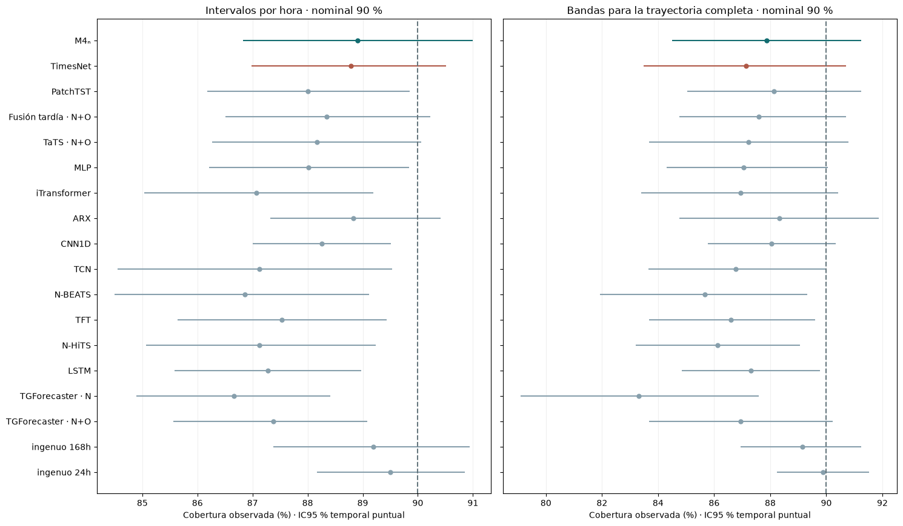
Con bandas móviles nominales del 90 %, M4 cubre 88,91 % de los valores horarios y 87,86 % de las trayectorias completas. Los IC95 % respectivos son [86,82 %; 91,00 %] y [84,49 %; 91,24 %]. El nivel nominal queda dentro de ambos intervalos, pero las coberturas puntuales son inferiores al 90 %. La banda conjunta es más amplia: 0,881 GWh de ancho medio, frente a 0,512 GWh por hora.
Amplitud y calidad de los intervalos#
La puntuación de intervalo penaliza tanto amplitud como observaciones fuera de la banda:
Para los tres niveles marginales 80 %, 90 % y 95 %, se agrega:
donde \(c\) es el centro de los intervalos simétricos. Un WIS menor indica un mejor compromiso entre precisión y amplitud. Se puntúa primero cada hora y se promedian las 24 horas de cada origen. El WIS se utiliza para intervalos marginales; las bandas conjuntas se evalúan por cobertura de trayectoria y amplitud. La definición sigue a Bracher et al..
inc_fig,inc_axes=plt.subplots(1,2,figsize=(15,8.8),sharey=True)
inc_v=inc_rank.set_index("clave").loc[inc_keys]
inc_axes[0].barh(range(len(inc_keys)),inc_v.WIS_GWh,color=[inc_colors[k]for k in inc_keys])
inc_axes[0].set(xlabel="WIS (GWh) · menor es mejor",title="Puntuación conjunta de los niveles 80/90/95 %")
inc_v=inc_res.query('metodo == "movil_365" and segmento == "total" and nivel==0.9 and alcance=="horario"').set_index("clave").loc[inc_keys]
inc_axes[1].barh(range(len(inc_keys)),inc_v.ancho_GWh,color=[inc_colors[k]for k in inc_keys])
inc_axes[1].set(xlabel="Ancho medio (GWh)",title="Amplitud de los intervalos por hora al 90 %")
for inc_ax in inc_axes:
inc_ax.set_yticks(range(len(inc_keys)),[inc_names[k]for k in inc_keys]);inc_ax.grid(axis="x",alpha=.2)
inc_axes[0].invert_yaxis();inc_fig.tight_layout();display(inc_fig);plt.close(inc_fig)
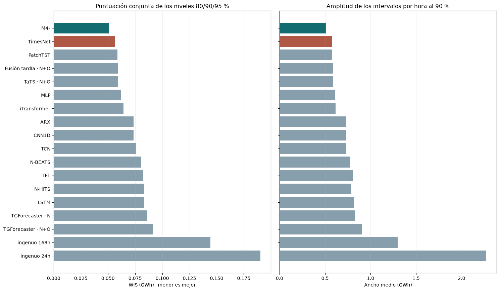
M4 obtiene el menor WIS, 0,05080 GWh, frente a 0,05658 GWh de TimesNet: reducción de 10,20 %, IC95 % [8,51 %; 11,80 %]. Sus intervalos horarios del 90 % son también más estrechos (0,512 frente a 0,574 GWh), con coberturas cercanas. El ancho aislado no determina la calidad: una banda estrecha puede omitir más observaciones y recibir mayor penalización.
inc_fig,inc_axes=plt.subplots(1,2,figsize=(16,9),sharey=True)
for inc_ax,inc_scope,inc_title in zip(inc_axes,["horario","trayectoria24"],
["Cobertura por hora de intervalos marginales del 90 %","Cobertura por hora dentro de bandas conjuntas del 90 %"]):
inc_v=inc_hor.query('metodo=="movil_365" and segmento=="total" and nivel==0.9 and alcance==@inc_scope').pivot(index="clave",columns="horizonte",values="cobertura").loc[inc_keys]
inc_im=inc_ax.imshow(100*inc_v.to_numpy(),aspect="auto",vmin=0,vmax=100,cmap="viridis")
inc_ax.set(title=inc_title,xlabel="Horizonte (h)",xticks=[0,5,11,17,23],xticklabels=[1,6,12,18,24],yticks=range(len(inc_keys)),yticklabels=[inc_names[k]for k in inc_keys])
inc_fig.subplots_adjust(left=.21,right=.88,bottom=.1,top=.91,wspace=.12)
inc_cax=inc_fig.add_axes([.91,.17,.015,.65]);inc_fig.colorbar(inc_im,cax=inc_cax,label="Cobertura por hora (%)")
display(inc_fig);plt.close(inc_fig)
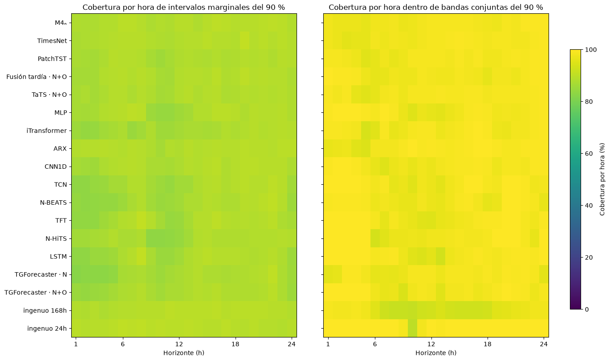
Los mapas incluyen los 18 procedimientos y sus 24 horizontes. En las bandas conjuntas, la cobertura de cada hora suele superar la cobertura de la trayectoria: basta que falle una hora para que el día completo cuente como no cubierto. Los valores por horizonte y año permiten localizar desajustes que el promedio global oculta; están disponibles en la descarga de resultados.
inc_fig,inc_axes=plt.subplots(1,2,figsize=(14,4.6),sharey=True)
for inc_ax,inc_scope,inc_field,inc_title in zip(inc_axes,["horario","trayectoria24"],["cobertura","cobertura24"],["Cobertura por hora","Cobertura de las 24 horas simultáneamente"]):
for inc_key in ["m4_n","nuevo_timesnet__N"]:
for inc_method,inc_style,inc_label in [("fijo_2022","--","Fijo 2022"),("movil_365","-","Móvil 365")]:
inc_v=inc_res.query('clave==@inc_key and metodo==@inc_method and alcance==@inc_scope and nivel==0.9 and segmento!="total"').sort_values("segmento")
inc_ax.plot(inc_v.segmento,100*inc_v[inc_field],marker="o",linestyle=inc_style,color=inc_colors[inc_key],label=inc_names[inc_key]+" · "+inc_label)
inc_ax.axhline(90,color="#65767d",linestyle=":");inc_ax.set(title=inc_title,xlabel="Año",ylabel="Cobertura observada (%)");inc_ax.grid(alpha=.2)
inc_axes[0].legend(fontsize=8);inc_fig.tight_layout();display(inc_fig);plt.close(inc_fig)
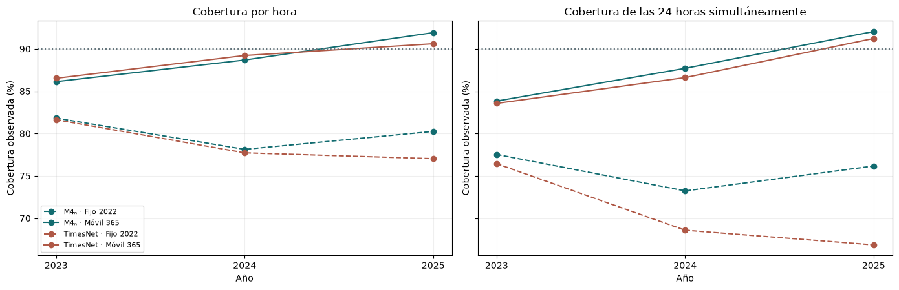
En M4, la cobertura horaria global del 90 % pasa de 80,07 % con cuantiles fijos de 2022 a 88,91 % con actualización causal. La mayor amplitud móvil (0,512 frente a 0,402 GWh) acompaña la adaptación a los errores recientes. Las diferencias entre años muestran que el cuantil fijo no conserva su cobertura al cambiar la distribución del error.
with np.load(inc_dir / "bandas.npz", allow_pickle=False) as inc_z:
inc_days=inc_z["dias"].copy();inc_mean=inc_z["centro_GWh"].copy();inc_y=inc_z["observado_GWh"].copy();inc_radii=inc_z["radio_GWh"].copy();inc_ids=inc_z["claves"].tolist()
inc_mask=(inc_days>="2023-07-01")&(inc_days<="2023-07-07")
inc_x=pd.date_range("2023-07-01",periods=7*24,freq="h",tz="America/Bogota")
inc_fig,inc_axes=plt.subplots(2,1,figsize=(14,7),sharex=True,sharey=True)
for inc_ax,inc_key in zip(inc_axes,["m4_n","nuevo_timesnet__N"]):
inc_j=inc_ids.index(inc_key);inc_c=inc_mean[inc_j,inc_mask].ravel();inc_r=inc_radii[inc_j,1,0,1,inc_mask].ravel()
inc_ax.fill_between(inc_x,inc_c-inc_r,inc_c+inc_r,color=inc_colors[inc_key],alpha=.2,label="Intervalo horario 90 %")
inc_ax.plot(inc_x,inc_y[inc_mask].ravel(),color="#24383e",linewidth=1,label="Observado")
inc_ax.plot(inc_x,inc_c,color=inc_colors[inc_key],linewidth=1,label="Centro del pronóstico")
inc_ax.set(title=inc_names[inc_key],ylabel="Demanda (GWh por intervalo)");inc_ax.grid(alpha=.15)
inc_axes[0].legend(ncol=3,fontsize=9);inc_axes[1].set_xlabel("Origen y hora objetivo · Colombia");inc_fig.tight_layout();display(inc_fig);plt.close(inc_fig)
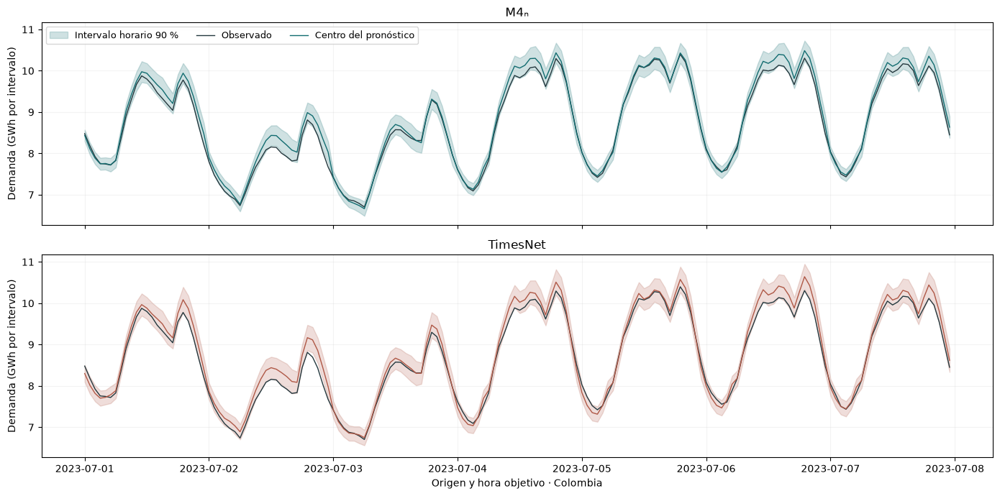
La semana del 1 al 7 de julio de 2023 sitúa las bandas sobre la demanda observada y el centro del pronóstico. La sombra corresponde a intervalos marginales del 90 %, recalibrados con errores ya disponibles en cada origen; no representa dispersión entre semillas ni una banda conjunta para las 24 horas.
Contrastes del WIS diario#
Se compara M4 con los 17 procedimientos restantes mediante dos contrastes unilaterales: bootstrap estacionario pareado con bloques medios de 56 días y DM–HLN con covarianza HAC de 55 rezagos y horizonte efectivo de un origen diario. Ambos evalúan si el WIS medio de M4 es menor. Holm se aplica a las 34 hipótesis, con margen cero y nivel 0,05. Los IC de reducción son puntuales. Esta familia evalúa WIS y mantiene separados los contrastes de MASE.
inc_table=inc_pairs.copy()
inc_fmt=lambda x:f"{x:.2f}"
inc_p=lambda x:"<1e-300"if x==0 else f"{x:.3g}"
inc_table["Comparador"]=inc_table.modelo
inc_table["Reducción WIS (%)"]=inc_table.reduccion_pct.map(inc_fmt)
inc_table["IC95 % puntual (%)"]=[f"[{a:.2f}; {b:.2f}]"for a,b in zip(inc_table.IC95_inf_pct,inc_table.IC95_sup_pct)]
inc_table["p Holm · bootstrap"]=inc_table.p_bootstrap.map(inc_p)
inc_table["p Holm · DM–HLN"]=inc_table.p_DM_HLN.map(inc_p)
inc_table["Menor WIS de M4"]=inc_table.respaldo_menor_WIS.map({True:"Sí",False:"No"})
display(HTML(inc_table[["Comparador","Reducción WIS (%)","IC95 % puntual (%)","p Holm · bootstrap","p Holm · DM–HLN","Menor WIS de M4"]].to_html(index=False,escape=True)))
| Comparador | Reducción WIS (%) | IC95 % puntual (%) | p Holm · bootstrap | p Holm · DM–HLN | Menor WIS de M4 |
|---|---|---|---|---|---|
| TimesNet | 10.20 | [8.51; 11.80] | 0.0017 | 1.08e-27 | Sí |
| TaTS · N+O | 13.82 | [11.02; 16.63] | 0.0017 | 1.89e-18 | Sí |
| PatchTST | 13.63 | [10.09; 17.36] | 0.0017 | 5.39e-12 | Sí |
| Fusión tardía · N+O | 13.79 | [10.82; 16.80] | 0.0017 | 2.39e-16 | Sí |
| iTransformer | 21.13 | [14.94; 26.97] | 0.0017 | 7.79e-09 | Sí |
| MLP | 18.33 | [15.28; 21.54] | 0.0017 | 2.98e-25 | Sí |
| ARX | 30.96 | [26.63; 35.10] | 0.0017 | 3.25e-26 | Sí |
| CNN1D | 31.05 | [27.91; 34.35] | 0.0017 | 8.73e-48 | Sí |
| TCN | 32.99 | [28.35; 37.05] | 0.0017 | 1.7e-26 | Sí |
| N-BEATS | 36.84 | [32.45; 40.92] | 0.0017 | 2.98e-25 | Sí |
| LSTM | 38.99 | [35.16; 42.79] | 0.0017 | 6.63e-42 | Sí |
| TGForecaster · N | 40.84 | [36.61; 44.92] | 0.0017 | 4.06e-33 | Sí |
| N-HiTS | 38.90 | [33.97; 43.66] | 0.0017 | 5.91e-24 | Sí |
| TFT | 38.39 | [35.33; 41.45] | 0.0017 | 2.27e-62 | Sí |
| TGForecaster · N+O | 44.41 | [41.29; 47.65] | 0.0017 | 2.69e-62 | Sí |
| ingenuo 168h | 64.81 | [60.89; 68.41] | 0.0017 | 3.11e-31 | Sí |
| ingenuo 24h | 73.31 | [71.52; 75.01] | 0.0017 | <1e-300 | Sí |
La reducción del WIS de M4 conserva respaldo frente a 17 de 17 comparadores después del ajuste. Frente a TimesNet, el p ajustado de bootstrap es 0.0017 y el de DM–HLN es 1.08e-27. Los valores repetidos de bootstrap corresponden a la resolución del remuestreo. La ventaja en puntuación no implica cobertura exacta del nivel nominal.
Cobertura, ancho y puntuación por año · WIS · Horizontes · Meses · Contrastes con significado · Disponibilidad de calibración · Protocolo.
Código reproducible#
"""Intervalos comunes desde predicciones guardadas; no importa redes."""
from __future__ import annotations
from pathlib import Path
import hashlib,json
import numpy as np
import pandas as pd
from scipy import stats
from statsmodels.stats.multitest import multipletests
ROOT=Path(__file__).resolve().parents[1]
OUT='incertidumbre_comun_20261125'
LEVELS=np.array([.8,.9,.95])
METHODS=['fijo_2022','movil_365']
SCOPES=['horario','trayectoria24']
Q=215617.90361589016
B=9999
def read(p):return json.loads(Path(p).read_text(encoding='utf-8'))
def sha(p):
with Path(p).open('rb')as f:return hashlib.file_digest(f,'sha256').hexdigest()
def write(p,obj):p.write_text(json.dumps(obj,ensure_ascii=False,allow_nan=False,indent=2)+'\n',encoding='utf-8')
def predictions(root):
sources=[]
def src(rel):p=root/rel;sources.append(p);return p
master=pd.read_csv(src('results/tabla_maestra_20261125/tabla_maestra.csv')).set_index('clave')
dates=pd.date_range('2022-01-01','2025-12-31',tz='America/Bogota',freq='D')
days=dates.strftime('%Y-%m-%d').to_numpy();ns=dates.as_unit('ns').asi8
parts=[];truth=None
for seed in range(101,111):
p=src(f'results/m4_cierre_gpu_20261123/reducido_B/colombia/prueba/M4_N_semilla_{seed}.npz')
with np.load(p,allow_pickle=False)as z:
if truth is None:truth=z['y'].astype(float)
assert np.array_equal(z['dia'],days)and np.array_equal(z['y'],truth)
parts.append(z['pred'].astype(float))
models={'m4_n':np.stack(parts)}
frame=pd.read_parquet(src('results/evaluacion_e2/entradas/consolidado/predicciones_finales.parquet'))
for (exp,var),g in frame.groupby(['experimento','variante'],sort=False):
key=exp+'__'+var
if key not in master.index:continue
parts=[]
for seed,q in g.groupby('semilla',sort=True):
assert seed in range(1000,1005)
q=q.sort_values(['origen','horizonte'])
assert np.array_equal(pd.DatetimeIndex(q.origen.drop_duplicates()).as_unit('ns').asi8,ns)
assert np.array_equal(q.horizonte,np.tile(np.arange(1,25),1461))
assert np.array_equal(q.observado_kwh.to_numpy().reshape(1461,24),truth)
parts.append(q.predicho_kwh.to_numpy().reshape(1461,24))
models[key]=np.stack(parts)
snap=root/'results/repositorio/d1ae9a4e09dd1dead4af1329f16aa3e8d0f2c3d3'
registry=read(src(snap.relative_to(root)/'results/consolidado/modelos.json'))
for key in ['mlp','lstm','cnn1d','arx_lineal']:
parts=[]
for item in sorted(registry[key]['artefactos'],key=lambda r:r['semilla']):
p=src(snap.relative_to(root)/item['predicciones'])
with np.load(p,allow_pickle=False)as z:
assert np.array_equal(z['origen'],ns)and np.allclose(z['y'],truth,rtol=0,atol=1e-6)
parts.append(z['yhat'].astype(float))
models[key]=np.stack(parts)
panel=pd.read_parquet(src('data/processed/panel_horario.parquet'),columns=['y_demanda_real_kwh'])
raw=panel.y_demanda_real_kwh.to_numpy();pos=panel.index.get_indexer(dates);hours=np.arange(24)
models['ingenuo_168h']=raw[pos[:,None]+hours-168][None]
lag=24*np.maximum(1,np.ceil((hours+2)/24).astype(int))
models['ingenuo_24h']=raw[pos[:,None]+hours-lag][None]
assert set(models)==set(master.index)and len(models)==18
for key,p in models.items():
assert p.shape==(int(master.loc[key,'semillas_prueba']),1461,24)and np.isfinite(p).all()
assert abs(np.abs(p-truth).mean()/Q-master.loc[key,'MASE_prueba'])<2e-6,key
return models,truth,dates,master,sources
def finite_quantiles(scores):
"""Estadísticos de orden ceil((n+1)*nivel), sobre días del eje1."""
n=scores.shape[1];ranks=np.ceil((n+1)*LEVELS).astype(int)
assert np.all((ranks>=1)&(ranks<=n))
return np.take(np.partition(scores,ranks-1,axis=1),ranks-1,axis=1)
def stationary_counts(n):
rng=np.random.default_rng(20261125);indices=np.empty((B,n),dtype=np.int32)
indices[:,0]=rng.integers(n,size=B)
for t in range(1,n):indices[:,t]=np.where(rng.random(B)<1/56,rng.integers(n,size=B),(indices[:,t-1]+1)%n)
counts=np.zeros((B,n),dtype=np.float64)
for start in range(0,B,100):
ix=indices[start:start+100];row=np.repeat(np.arange(len(ix)),n)
local=np.zeros((len(ix),n));np.add.at(local,(row,ix.ravel()),1)
counts[start:start+len(ix)]=local/n
assert np.allclose(counts.sum(1),1)
return counts
def calculate(root=ROOT):
root=Path(root);out=root/'results'/OUT;out.mkdir(parents=True,exist_ok=True)
protocol=dict(fecha='2026-11-25',calibracion=['2022-01-01','2022-12-30'],dias_calibracion_inicial=364,
evaluacion=['2023-01-01','2025-12-31'],dias_evaluacion=1096,origen='00:00 America/Bogota',
disponibilidad='Solo errores de días s≤t−2; el 31-dic-2022 entra en la ventana móvil desde2-ene-2023.',
metodos=METHODS,principal='movil_365',ventana='Últimos365 errores diarios disponibles;364 en el primer origen',
centro='Media de predicciones guardadas:10semillas M4,5por comparador aprendido y1por ingenuo; no es la media de pérdidas del benchmark puntual.',
niveles=LEVELS.tolist(),alcances=SCOPES,
horario='Cuantil separado de error absoluto por horizonte; rango ceil((n+1)*nivel).',
trayectoria='Cuantil del máximo diario de |error_h|/escala_h; escala_h=mediana de |error_h| en reserva2022, piso1e-6GWh, congelada. Radio_h=cuantil×escala_h.',
incertidumbre='Cobertura empírica bajo dependencia temporal; no se supone intercambiabilidad ni se certifica cobertura exacta.',
puntuaciones='IS_alpha=ancho+2/alpha×distancia fuera del intervalo; WIS=(0.5×error absoluto+sum(alpha/2×IS_alpha))/(3+0.5). WIS solo para intervalos marginales horarios.',
bootstrap=dict(replicas=B,bloque_medio_dias=56,semilla=20261125,unidad='día;24h agregadas antes de remuestrear',IC='Percentiles95% puntuales, condicionados a calibración, pesos y semillas conservados'),
contrastes='WIS diario del método móvil horario: M4 frente a17comparadores, bootstrap unilateral y DM–HLN HAC55,h=1. Holm sobre34, margen0. No modifica inferencia deMASE.',
seleccion=False,entrenamiento=False,inferencia_neuronal=False,publicacion=False,
referencias=['https://arxiv.org/abs/2005.12881','https://arxiv.org/abs/2107.07511'])
pp=out/'protocolo.json'
if pp.exists():assert read(pp)==protocol,'Se conserva el protocolo antes de recalcular.'
else:write(pp,protocol)
models,truth,dates,master,sources=predictions(root)
keys=master.index.tolist();M=len(keys);ev=np.flatnonzero(dates.year>=2023);N=len(ev)
cal=np.flatnonzero(dates<=pd.Timestamp('2022-12-30',tz='America/Bogota'))
assert len(cal)==364 and N==1096 and cal.max()<=ev.min()-2
center=np.stack([models[k].mean(0)for k in keys])/1e6;y=truth/1e6;errors=np.abs(center-y)
scales=np.maximum(np.median(errors[:,cal],axis=1),1e-6)
radii=np.empty((M,2,2,3,N,24),dtype=np.float64)
audit=[]
for a,method in enumerate(METHODS):
for j,t in enumerate(ev):
pool=cal if a==0 else np.arange(max(0,t-1-365),t-1)
assert pool.max()<=t-2 and len(pool)>=364
radii[:,a,0,:,j,:]=finite_quantiles(errors[:,pool])
maxima=(errors[:,pool]/scales[:,None,:]).max(2)
radii[:,a,1,:,j,:]=finite_quantiles(maxima)[:,:,None]*scales[:,None,:]
audit.append(dict(metodo=method,origen=str(dates[t].date()),inicio=str(dates[pool[0]].date()),fin=str(dates[pool[-1]].date()),n=len(pool)))
print(f'Intervalos {method}:18procedimientos,1096orígenes.',flush=True)
assert np.isfinite(radii).all()and(radii>=0).all()
assert np.all(np.diff(radii,axis=3)>=-1e-12)
np.savez_compressed(out/'bandas.npz',radio_GWh=radii,centro_GWh=center[:,ev],observado_GWh=y[ev],dias=dates[ev].strftime('%Y-%m-%d').to_numpy(dtype='U10'),claves=np.array(keys),escala_h_GWh=scales,errores_absolutos_GWh=errors)
pd.DataFrame(audit).to_csv(out/'auditoria_disponibilidad.csv',index=False)
summaries=[];horizons=[];months=[];daily=[];columns=[];features=[];wis=np.empty((M,2,N))
years=dates[ev].year.to_numpy();month_labels=dates[ev].strftime('%Y-%m').to_numpy()
residual=errors[:,ev];cy=center[:,ev];ty=y[ev]
for m,key in enumerate(keys):
for a,method in enumerate(METHODS):
wis_value=.5*residual[m]
for s,scope in enumerate(SCOPES):
for l,level in enumerate(LEVELS):
rad=radii[m,a,s,l];covered=residual[m]<=rad;alpha=1-level
scores=2*rad+2/alpha*np.maximum(residual[m]-rad,0)
if s==0:wis_value=wis_value+alpha/2*scores
metrics=dict(cobertura=covered.mean(1),cobertura24=covered.all(1).astype(float),ancho_GWh=(2*rad).mean(1))
if s==0:metrics['IS_GWh']=scores.mean(1)
record=dict(clave=key,modelo=master.loc[key,'modelo'],metodo=method,alcance=scope,nivel=float(level))
for metric,vals in metrics.items():columns.append((key,method,scope,float(level),metric));features.append(vals)
daily.append(pd.DataFrame(dict(**record,dia=dates[ev].strftime('%Y-%m-%d'),**metrics)))
for year in ['total',2023,2024,2025]:
mask=np.ones(N,dtype=bool)if year=='total'else years==year
summaries.append(dict(**record,segmento=str(year),n_dias=int(mask.sum()),**{k:float(v[mask].mean())for k,v in metrics.items()}))
for h in range(24):horizons.append(dict(**record,segmento=str(year),horizonte=h+1,n_dias=int(mask.sum()),cobertura=float(covered[mask,h].mean()),ancho_GWh=float((2*rad[mask,h]).mean())))
for month in np.unique(month_labels):
mask=month_labels==month
months.append(dict(**record,mes=month,n_dias=int(mask.sum()),**{k:float(v[mask].mean())for k,v in metrics.items()}))
wis[m,a]=wis_value.mean(1)/3.5
columns.append((key,method,'horario',0.,'WIS_GWh'));features.append(wis[m,a])
print('Bootstrap temporal:9.999réplicas, bloque56días.',flush=True)
weights=stationary_counts(N);boot=weights@np.stack(features,axis=1)
ci=np.quantile(boot,[.025,.975],axis=0);indices={k:i for i,k in enumerate(columns)}
result=pd.DataFrame(summaries)
for i,r in result.loc[result.segmento.eq('total')].iterrows():
for metric in ['cobertura','cobertura24','ancho_GWh','IS_GWh']:
k=(r.clave,r.metodo,r.alcance,float(r.nivel),metric)
if k in indices:
j=indices[k];result.loc[i,metric+'_IC95_inf']=ci[0,j];result.loc[i,metric+'_IC95_sup']=ci[1,j]
result.to_csv(out/'resumen.csv',index=False)
pd.DataFrame(horizons).to_csv(out/'horizontes.csv',index=False)
pd.DataFrame(months).to_csv(out/'mensual.csv',index=False)
pd.concat(daily,ignore_index=True).to_parquet(out/'metricas_diarias.parquet',index=False)
wr=[];wj=np.array([[indices[(k,method,'horario',0.,'WIS_GWh')]for method in METHODS]for k in keys]);wb=boot[:,wj]
for m,key in enumerate(keys):
for a,method in enumerate(METHODS):
for year in ['total',2023,2024,2025]:
mask=np.ones(N,dtype=bool)if year=='total'else years==year
rec=dict(clave=key,modelo=master.loc[key,'modelo'],metodo=method,segmento=str(year),n_dias=int(mask.sum()),WIS_GWh=float(wis[m,a,mask].mean()))
if year=='total':rec.update(IC95_inf=float(ci[0,wj[m,a]]),IC95_sup=float(ci[1,wj[m,a]]))
wr.append(rec)
pd.DataFrame(wr).to_csv(out/'wis.csv',index=False)
mm=keys.index('m4_n');rows=[];comparisons=[]
for m,key in enumerate(keys):
if m==mm:continue
d=wis[m,1]-wis[mm,1];mean=d.mean();c=d-mean
cov=np.array([np.dot(c[h:],c[:N-h])/N for h in range(56)])
lrv=cov[0]+2*np.dot(1-np.arange(1,56)/56,cov[1:]);assert lrv>0
dm=float(mean/np.sqrt(lrv/N)*np.sqrt((N-1)/N));pdm=float(stats.t.sf(dm,N-1))
bd=wb[:,m,1]-wb[:,mm,1];pb=float((1+np.count_nonzero(bd-mean>=mean))/(B+1))
gain=1-wis[mm,1].mean()/wis[m,1].mean();gain_ci=np.quantile(1-wb[:,mm,1]/wb[:,m,1],[.025,.975])
for method,p,meaning in [('bootstrap_estacionario',pb,'Evalúa si M4 reduce el WIS medio frente al comparador, remuestreando bloques diarios compartidos.'),('DM_HLN',pdm,'Contrasta menor WIS medio de M4 con covarianza HAC de55rezagos y correcciónHLN; prueba unilateral.')]:
rows.append(dict(comparador=key,modelo=master.loc[key,'modelo'],contraste=method,significado=meaning,p=p,diferencia_WIS_GWh=float(mean),reduccion_pct=float(gain*100),IC95_inf_pct=float(gain_ci[0]*100),IC95_sup_pct=float(gain_ci[1]*100),n_dias=N))
tests=pd.DataFrame(rows);tests['p_Holm']=multipletests(tests.p,method='holm')[1];tests['rechaza_005']=tests.p_Holm.lt(.05)
tests.to_csv(out/'contrastes_WIS.csv',index=False)
for key,g in tests.groupby('comparador',sort=False):
r=g.iloc[0];pv=g.set_index('contraste').p_Holm
comparisons.append(dict(comparador=key,modelo=r.modelo,reduccion_pct=r.reduccion_pct,IC95_inf_pct=r.IC95_inf_pct,IC95_sup_pct=r.IC95_sup_pct,p_bootstrap=float(pv['bootstrap_estacionario']),p_DM_HLN=float(pv['DM_HLN']),respaldo_menor_WIS=bool(g.rechaza_005.all()and r.diferencia_WIS_GWh>0)))
pd.DataFrame(comparisons).to_csv(out/'comparaciones_WIS.csv',index=False)
np.savez_compressed(out/'wis_y_bootstrap.npz',wis_diario_GWh=wis,bootstrap_WIS_GWh=wb,claves=np.array(keys))
ranking=pd.DataFrame(wr).query('metodo=="movil_365" and segmento=="total"').sort_values('WIS_GWh')
selected=result.query('metodo=="movil_365" and segmento=="total" and nivel==0.9')
summary=dict(procedimientos=M,dias_evaluacion=N,dias_calibracion_inicial=len(cal),principal='movil_365',
mejor_WIS=ranking.iloc[0].modelo,WIS_M4_GWh=float(wis[mm,1].mean()),
WIS_TimesNet_GWh=float(wis[keys.index('nuevo_timesnet__N'),1].mean()),
comparadores_con_menor_WIS_M4=int(sum(r['respaldo_menor_WIS']for r in comparisons)),familia_Holm=34,
M4_90=selected.loc[selected.clave.eq('m4_n')].astype(object).where(selected.loc[selected.clave.eq('m4_n')].notna(),None).to_dict('records'),
calibracion_inicial=['2022-01-01','2022-12-30'],evaluacion=['2023-01-01','2025-12-31'],
entrenamiento=False,inferencia_neuronal=False,publicacion=False)
write(out/'resumen.json',summary)
write(out/'verificacion.json',dict(origenes_completos_unicos=True,paridad_benchmark=True,calibracion_causal=True,
banda_anidada=True,procedimientos=M,origenes=N,fuentes_sha256={p.relative_to(root).as_posix():sha(p)for p in sources},
resultados_sha256={p.name:sha(p)for p in out.iterdir()if p.suffix in ['.csv','.parquet','.npz']},entrenamiento=False,publicacion=False))
print(ranking[['modelo','WIS_GWh']].to_string(index=False));print(json.dumps(summary,ensure_ascii=False,indent=2))
if __name__=='__main__':calculate()
python scripts/evaluar_incertidumbre_comun.py
python scripts/integrar_incertidumbre_comun.py
Benchmark de referencia: selección, precisión y diagnósticos#
Este bloque documenta la selección y los diagnósticos de los quince procedimientos de referencia, cada uno con cinco semillas. Sus comparaciones entre semillas y rangos conservan ese conjunto. La tabla maestra, la evaluación común de incertidumbre y los análisis de robustez y techo empírico incluyen también M4 y las dos referencias ingenuas: dieciocho procedimientos.
Entrenamiento, selección y precisión del piloto#
La tabla reúne los presupuestos de los quince procedimientos y las semillas finales. Los filtros, finalistas, años externos y condiciones de parada se conservan en los registros de selección. Los cinco pilotos externos y los diez análisis de parada interna se identifican por separado; la selección utiliza exclusivamente desarrollo.
g_design=pd.read_csv(g_result/'diseno_seleccion.csv').set_index('clave').reindex(g_keys)
assert len(g_design)==len(g_keys) and g_design.notna().all().all()
g_design['precision']=v_precision.Fuente
g_design.index=[g_names[k] for k in g_keys]
display(g_design.rename(columns={'candidatos_filtro':'Candidatos de filtro','filtro':'Filtro',
'confirmacion':'Confirmación','piloto':'Piloto independiente','final':'Final',
'max_epocas':'Épocas máx. filtro / resto','paciencia':'Paciencia','precision':'Precisión disponible'}))
| Candidatos de filtro | Filtro | Confirmación | Piloto independiente | Final | Épocas máx. filtro / resto | Paciencia | Precisión disponible | |
|---|---|---|---|---|---|---|---|---|
| N-HiTS · N | 20 | 60 ajustes; 3 semillas; 2018 | 45 ajustes; 3 semillas; 2019–2021 | 5 semillas × 4 años | 5 semillas | 200 / 200 | 10 | Piloto externo |
| TFT · N | 20 | 20 ajustes; 1 semilla; 2018 | 15 ajustes; 1 semilla; 2019–2021 | Sin piloto independiente | 5 semillas | 200 / 200 | 6 | Parada interna |
| TCN · N | 20 | 20 ajustes; 1 semilla; 2018 | 15 ajustes; 1 semilla; 2019–2021 | Sin piloto independiente | 5 semillas | 200 / 200 | 6 | Parada interna |
| iTransformer · N | 20 | 20 ajustes; 1 semilla; 2018 | 15 ajustes; 1 semilla; 2019–2021 | Sin piloto independiente | 5 semillas | 200 / 200 | 6 | Parada interna |
| PatchTST · N | 20 | 20 ajustes; 1 semilla; 2018 | 15 ajustes; 1 semilla; 2019–2021 | Sin piloto independiente | 5 semillas | 200 / 200 | 6 | Parada interna |
| TaTS adaptado · N+O | 20 | 20 ajustes; 1 semilla; 2018 | 15 ajustes; 1 semilla; 2019–2021 | Sin piloto independiente | 5 semillas | 200 / 200 | 6 | Parada interna |
| Fusión tardía · N+O | 20 | 20 ajustes; 1 semilla; 2018 | 15 ajustes; 1 semilla; 2019–2021 | Sin piloto independiente | 5 semillas | 200 / 200 | 6 | Parada interna |
| TGForecaster · N | 20 | 20 ajustes; 1 semilla; 2018 | 15 ajustes; 1 semilla; 2019–2021 | Sin piloto independiente | 5 semillas | 200 / 200 | 6 | Parada interna |
| TGForecaster · N+O | 20 | 20 ajustes; 1 semilla; 2018 | 15 ajustes; 1 semilla; 2019–2021 | Sin piloto independiente | 5 semillas | 200 / 200 | 6 | Parada interna |
| N-BEATS · N | 20 | 20 ajustes; 1 semilla; 2018 | 15 ajustes; 1 semilla; 2019–2021 | Sin piloto independiente | 5 semillas | 200 / 200 | 6 | Parada interna |
| TimesNet · N | 20 | 20 ajustes; 1 semilla; 2018 | 15 ajustes; 1 semilla; 2019–2021 | Sin piloto independiente | 5 semillas | 200 / 200 | 6 | Parada interna |
| MLP | 20 | 20 ajustes; 1 semilla; 2019 | 24 ajustes; 2 semillas; 2018–2021 | 5 semillas × 4 años | 5 semillas | 30 / 60 | 6 | Piloto externo |
| LSTM | 24 | 24 ajustes; 1 semilla; 2019 | 48 ajustes; 2 semillas; 2018–2021 | 5 semillas × 4 años | 5 semillas | 30 / 60 | 6 | Piloto externo |
| CNN1D | 26 | 26 ajustes; 1 semilla; 2019 | 48 ajustes; 2 semillas; 2018–2021 | 5 semillas × 4 años | 5 semillas | 30 / 60 | 6 | Piloto externo |
| ARX | 20 | 20 ajustes; 1 semilla; 2019 | 24 ajustes; 2 semillas; 2018–2021 | 5 semillas × 4 años | 5 semillas | 30 / 60 | 6 | Piloto externo |
Los procedimientos con tres semillas en búsqueda reciben más ajustes por candidato que los paquetes con una. El máximo de épocas tampoco es común a todas las familias. El piloto independiente existe para cinco procedimientos; las cinco realizaciones finales no sustituyen esa etapa. TGForecaster utiliza cinco semillas para cada una de sus variantes N y N+O.
fig,axes=plt.subplots(2,2,figsize=(18,11),layout='constrained')
v_pilot_keys=[k for k in g_keys if k in set(v_pilot.clave)]
v_stop_keys=[k for k in g_keys if k in set(v_stop.clave)]
for v_k in v_pilot_keys:
v_year=g_pilots[g_pilots.clave.eq(v_k)].groupby('fold').MASE
axes[0,0].errorbar(v_year.mean().index,v_year.mean(),yerr=v_year.std(),marker='o',capsize=3,label=g_names[v_k])
axes[0,0].set(title='Piloto externo · cinco procedimientos',xlabel='Año externo',ylabel='MASE · media ± DE',xticks=[2018,2019,2020,2021])
axes[0,0].legend(fontsize=8)
for ax,v_frame,v_ks,v_title in [(axes[0,1],v_pilot,v_pilot_keys,'Piloto · media de cuatro años por semilla'),
(axes[1,0],v_stop,v_stop_keys,'Parada interna · 803 días por semilla')]:
for v_j,v_k in enumerate(v_ks):
v_rows=v_frame[v_frame.clave.eq(v_k)].sort_values('semilla')
ax.scatter(v_j+np.linspace(-.10,.10,len(v_rows)),v_rows.MASE,s=28,label=None)
ax.set(title=v_title,xticks=range(len(v_ks)),xticklabels=[g_names[k] for k in v_ks],ylabel='MASE por inicialización')
ax.tick_params(axis='x',rotation=30,labelsize=8)
for v_k in modelos:
v_perm=piloto[piloto.modelo.eq(v_k)].groupby('fold')[['MASE','MASE_demanda_permutada']].mean()
axes[1,1].plot(v_perm.index,v_perm.MASE_demanda_permutada/v_perm.MASE,marker='o',label=etiquetas[v_k])
axes[1,1].axhline(1,color='grey',ls='--')
axes[1,1].set(title='Control de demanda permutada · cuatro familias',xlabel='Año externo',ylabel='MASE permutado / original',xticks=[2018,2019,2020,2021])
axes[1,1].legend(fontsize=8)
fig.savefig(g_figures/'precision_desarrollo_fuentes.png',dpi=160)
display(fig);plt.close(fig)
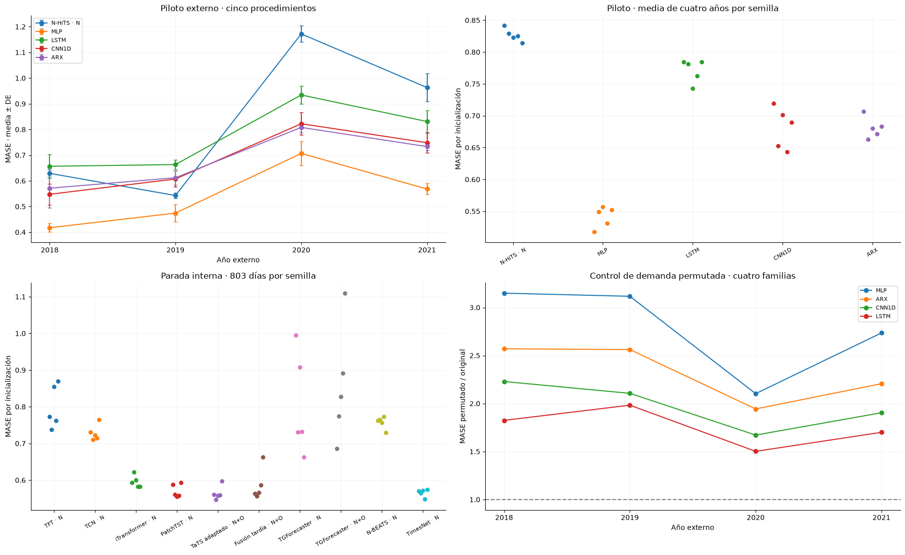
Los quince procedimientos tienen una estimación de precisión de desarrollo: cinco a partir del piloto externo y diez a partir de la parada interna. Los puntos muestran cinco inicializaciones por procedimiento. Las fuentes cubren periodos y mecanismos de selección distintos; sus medias no constituyen un ranking común de validación. El control de permutación conserva las familias para las que fue calculado.
Precisión de desarrollo y dimensionamiento#
El resumen identifica fuente y periodo para los quince procedimientos. Los cinco pilotos externos y las diez reservas internas se dimensionan por separado. Cada semilla piloto resume cuatro años externos; cada realización de parada resume 803 días. Se presentan media de MASE, DE, CV e IC95 % entre inicializaciones. Los errores de prueba no intervienen en el dimensionamiento.
g_pilot_seed=g_pilots.groupby(['semilla','clave']).MASE.mean().unstack('clave')
assert g_pilot_seed.shape==(5,5) and g_pilot_seed.notna().all().all()
assert g_pilot_seed.index.tolist()==[100,101,102,103,104]
g_pilot_summary=g_pilot_seed.agg(['mean','std','count']).T.rename(columns={'mean':'MASE medio','std':'DE','count':'Semillas piloto'}).reindex(g_keys)
g_pilot_summary['CV (%)']=100*g_pilot_summary['DE']/g_pilot_summary['MASE medio']
g_pilot_summary['Disponibilidad']=np.where(g_pilot_summary['Semillas piloto'].notna(),'Piloto independiente','Sin piloto independiente')
g_pilot_summary.index=[g_names[k] for k in g_keys]
g_pilot_summary.to_csv(g_result/'resumen_piloto_integrado.csv',index_label='Procedimiento')
display(v_precision[['Procedimiento','Fuente','Periodo','Semillas','MASE_media','DE','CV_pct','IC95_inf','IC95_sup']].rename(columns={
'Fuente':'Fuente de precisión','MASE_media':'MASE desarrollo','CV_pct':'CV (%)',
'IC95_inf':'IC95 inferior','IC95_sup':'IC95 superior'}).reset_index(drop=True).style.format(
{'MASE desarrollo':'{:.5f}','DE':'{:.5f}','CV (%)':'{:.2f}','IC95 inferior':'{:.5f}','IC95 superior':'{:.5f}'}))
| Procedimiento | Fuente de precisión | Periodo | Semillas | MASE desarrollo | DE | CV (%) | IC95 inferior | IC95 superior | |
|---|---|---|---|---|---|---|---|---|---|
| 0 | N-HiTS · N | Piloto externo | 2018–2021 · media de cuatro años | 5 | 0.82671 | 0.00994 | 1.20 | 0.81437 | 0.83905 |
| 1 | TFT · N | Parada interna | 2019-10-21 a 2021-12-31 · 803 días | 5 | 0.79991 | 0.05900 | 7.38 | 0.72665 | 0.87316 |
| 2 | TCN · N | Parada interna | 2019-10-21 a 2021-12-31 · 803 días | 5 | 0.72879 | 0.02192 | 3.01 | 0.70157 | 0.75601 |
| 3 | iTransformer · N | Parada interna | 2019-10-21 a 2021-12-31 · 803 días | 5 | 0.59596 | 0.01630 | 2.74 | 0.57572 | 0.61619 |
| 4 | PatchTST · N | Parada interna | 2019-10-21 a 2021-12-31 · 803 días | 5 | 0.57098 | 0.01816 | 3.18 | 0.54844 | 0.59352 |
| 5 | TaTS adaptado · N+O | Parada interna | 2019-10-21 a 2021-12-31 · 803 días | 5 | 0.56476 | 0.01911 | 3.38 | 0.54104 | 0.58849 |
| 6 | Fusión tardía · N+O | Parada interna | 2019-10-21 a 2021-12-31 · 803 días | 5 | 0.58706 | 0.04394 | 7.48 | 0.53250 | 0.64161 |
| 7 | TGForecaster · N | Parada interna | 2019-10-21 a 2021-12-31 · 803 días | 5 | 0.80578 | 0.13953 | 17.32 | 0.63253 | 0.97902 |
| 8 | TGForecaster · N+O | Parada interna | 2019-10-21 a 2021-12-31 · 803 días | 5 | 0.85780 | 0.15965 | 18.61 | 0.65957 | 1.05603 |
| 9 | N-BEATS · N | Parada interna | 2019-10-21 a 2021-12-31 · 803 días | 5 | 0.75722 | 0.01628 | 2.15 | 0.73701 | 0.77743 |
| 10 | TimesNet · N | Parada interna | 2019-10-21 a 2021-12-31 · 803 días | 5 | 0.56548 | 0.01027 | 1.82 | 0.55272 | 0.57823 |
| 11 | MLP | Piloto externo | 2018–2021 · media de cuatro años | 5 | 0.54156 | 0.01664 | 3.07 | 0.52090 | 0.56222 |
| 12 | LSTM | Piloto externo | 2018–2021 · media de cuatro años | 5 | 0.77122 | 0.01833 | 2.38 | 0.74846 | 0.79398 |
| 13 | CNN1D | Piloto externo | 2018–2021 · media de cuatro años | 5 | 0.68130 | 0.03233 | 4.75 | 0.64116 | 0.72144 |
| 14 | ARX | Piloto externo | 2018–2021 · media de cuatro años | 5 | 0.68109 | 0.01652 | 2.43 | 0.66058 | 0.70160 |
MLP presenta el menor MASE medio del piloto externo (0,542); N-HiTS registra 0,827. PatchTST utiliza la precisión de parada interna, presentada por separado. La dispersión entre semillas no sigue necesariamente ese orden; un error medio mayor puede ser estable entre inicializaciones.
Para expresar las diferencias en una escala relativa común se conserva como referencia la media piloto de MLP, obtenida exclusivamente de validación. Con \(d_s=(M_{A,s}-M_{B,s})/\overline M_{\mathrm{MLP,piloto}}\), margen \(\delta=0,03\), \(\alpha=0,05\) y potencia objetivo \(0,80\), se calcula
Se informa además \(\delta/\widehat\sigma_d\) y una planificación conservadora con Bonferroni para las diez parejas. El mínimo de diseño es cinco semillas. Es una aproximación retrospectiva de variación entre inicializaciones, condicionada a los mismos cuatro años; no estima la incertidumbre de nuevas fechas ni acredita la potencia alcanzada por los ajustes ya ejecutados.
from itertools import combinations
g_delta=.03;g_alpha=.05;g_power=.80
g_pilot_reference=float(g_pilot_seed['mlp'].mean())
g_pilot_pairs=list(combinations(g_pilot_seed.columns,2))
assert len(g_pilot_pairs)==10
g_z=stats.norm.ppf(1-g_alpha/2)+stats.norm.ppf(g_power)
g_z_bonf=stats.norm.ppf(1-g_alpha/(2*len(g_pilot_pairs)))+stats.norm.ppf(g_power)
g_dimension=[]
for g_a,g_b in g_pilot_pairs:
g_difference=(g_pilot_seed[g_a]-g_pilot_seed[g_b])/g_pilot_reference
g_sd=float(g_difference.std(ddof=1))
g_dimension.append({'A':g_a,'B':g_b,'Comparación':g_names[g_a]+' − '+g_names[g_b],
'DE diferencia relativa':g_sd,'δ / DE':g_delta/g_sd if g_sd>0 else np.inf,
'R individual':max(5,int(np.ceil((g_z*g_sd/g_delta)**2))),
'R Bonferroni(10)':max(5,int(np.ceil((g_z_bonf*g_sd/g_delta)**2))),
'MDD con 5 (% referencia piloto)':100*g_z*g_sd/np.sqrt(5)})
g_dimension=pd.DataFrame(g_dimension)
display(g_dimension.drop(columns=['A','B']).round(5))
g_dimension.to_csv(g_result/'dimensionamiento_piloto_integrado.csv',index=False)
| Comparación | DE diferencia relativa | δ / DE | R individual | R Bonferroni(10) | MDD con 5 (% referencia piloto) | |
|---|---|---|---|---|---|---|
| 0 | ARX − CNN1D | 0.03591 | 0.83538 | 12 | 20 | 4.49943 |
| 1 | ARX − LSTM | 0.03984 | 0.75300 | 14 | 24 | 4.99168 |
| 2 | ARX − MLP | 0.05458 | 0.54962 | 26 | 45 | 6.83876 |
| 3 | ARX − N-HiTS · N | 0.02686 | 1.11706 | 7 | 11 | 3.36483 |
| 4 | CNN1D − LSTM | 0.06744 | 0.44483 | 40 | 68 | 8.44976 |
| 5 | CNN1D − MLP | 0.07154 | 0.41937 | 45 | 76 | 8.96270 |
| 6 | CNN1D − N-HiTS · N | 0.05732 | 0.52337 | 29 | 49 | 7.18179 |
| 7 | LSTM − MLP | 0.05334 | 0.56238 | 25 | 43 | 6.68362 |
| 8 | LSTM − N-HiTS · N | 0.03453 | 0.86891 | 11 | 18 | 4.32577 |
| 9 | MLP − N-HiTS · N | 0.04643 | 0.64610 | 19 | 32 | 5.81759 |
La aproximación individual requiere entre 7 y 45 semillas por procedimiento, según la pareja; el máximo con Bonferroni para las diez parejas es 76. Las cinco semillas ejecutadas no acreditan potencia de 0,80 para el margen del 3 % en todas las comparaciones. Los diez procedimientos sin piloto independiente conservan su dimensionamiento retrospectivo de parada, presentado por separado.
g_recorded_power=pd.read_csv(g_result/'dimensionamiento_temporal_registrado.csv')
g_recorded_power['Procedimiento']=g_recorded_power.clave.map(g_names)
display(g_recorded_power[['Procedimiento','referencia','MASE_referencia','margen_relativo','potencia_limite_temporal','n_final','estado']].rename(columns={
'referencia':'Referencia temporal','MASE_referencia':'MASE referencia','margen_relativo':'δ relativo',
'potencia_limite_temporal':'Estimación límite temporal','n_final':'R final registrado','estado':'Estado'}).style.format(precision=4,na_rep='No determinado'))
| Procedimiento | Referencia temporal | MASE referencia | δ relativo | Estimación límite temporal | R final registrado | Estado | |
|---|---|---|---|---|---|---|---|
| 0 | N-HiTS · N | Ingenuo semanal en validación | 1.1419 | 0.0300 | 0.0843 | No determinado | precision_temporal_insuficiente |
El registro indica precisión temporal insuficiente para la alternativa evaluada. Aumentar semillas reduce la variación de inicialización, pero no elimina por sí solo la incertidumbre debida a los días compartidos. La planificación normal y el diagnóstico temporal conservan sus referencias e hipótesis explícitas.
Diseño de selección · Resumen piloto integrado · Diez comparaciones de dimensionamiento · Diagnóstico temporal registrado.
Precisión en la reserva interna#
Fusión tardía · N+O, TFT · N, TCN · N, iTransformer · N, PatchTST · N, TaTS adaptado · N+O, TGForecaster · N, TGForecaster · N+O, N-BEATS · N y TimesNet · N conservan métricas de parada de sus realizaciones finales. Los diez procedimientos reúnen 50 registros sobre 803 orígenes y el denominador q168=215617,90361589 kWh.
Se calcula media, DE, CV e IC95 % t entre las cinco semillas. La reserva seleccionó la época de parada; el análisis es descriptivo y retrospectivo. Los intervalos condicionan ese periodo y suponen independencia y normalidad aproximada entre inicializaciones.
# Métricas de desarrollo guardadas; no se utilizan errores de prueba.
from itertools import combinations
p_inputs=pd.read_csv(g_result/'entradas_precision_parada.csv')
assert len(p_inputs)==5*p_inputs.clave.nunique() and p_inputs.n_parada.eq(803).all()
def calcular_precision_parada(entradas,referencia='adj_modelo6_20261112_1035__N'):
"""Usa solo MASE de desarrollo; no estima potencia con el efecto observado."""
required=['clave','semilla','MASE_parada','n_parada','inicio_parada','fin_parada','q168_kwh']
x=entradas[required].copy()
assert not x.isna().any().any()
assert not x.duplicated(['clave','semilla']).any()
assert np.isfinite(x.MASE_parada).all() and x.MASE_parada.ge(0).all()
assert x[['n_parada','inicio_parada','fin_parada','q168_kwh']].drop_duplicates().shape[0]==1
for _,g in x.groupby('clave'):
assert sorted(g.semilla.tolist())==list(range(1000,1005))
matriz=x.pivot(index='semilla',columns='clave',values='MASE_parada').sort_index()
assert matriz.notna().all().all() and referencia in matriz
n=len(matriz);alpha=.05;objetivo=.80;delta=.03
tcrit=stats.t.ppf(1-alpha/2,n-1)
resumen=matriz.agg(['mean','std','count']).T.rename(columns={'mean':'MASE_media','std':'DE','count':'semillas'})
resumen['CV_pct']=100*resumen.DE/resumen.MASE_media
resumen['IC95_inf']=resumen.MASE_media-tcrit*resumen.DE/np.sqrt(n)
resumen['IC95_sup']=resumen.MASE_media+tcrit*resumen.DE/np.sqrt(n)
mu_ref=float(resumen.loc[referencia,'MASE_media'])
assert mu_ref>0
parejas=list(combinations(matriz.columns,2))
z=stats.norm.ppf(1-alpha/2)+stats.norm.ppf(objetivo)
z_bonf=stats.norm.ppf(1-alpha/(2*len(parejas)))+stats.norm.ppf(objetivo)
filas=[]
for a,b in parejas:
d=matriz[a]-matriz[b]
media=float(d.mean());sd=float(d.std(ddof=1));sd_rel=sd/mu_ref
margen=tcrit*sd/np.sqrt(n)
filas.append(dict(A=a,B=b,semillas=n,diferencia_MASE=media,DE_diferencia=sd,
IC95_diferencia_inf=media-margen,IC95_diferencia_sup=media+margen,
diferencia_pct_referencia=100*media/mu_ref,DE_relativa=sd_rel,
referencia=referencia,MASE_referencia=mu_ref,delta_relativo=delta,
alpha=alpha,potencia_objetivo=objetivo,parejas_familia=len(parejas),
delta_sobre_DE=delta/sd_rel if sd_rel>0 else np.inf,
R_individual=max(n,int(np.ceil((z*sd_rel/delta)**2))),
R_Bonferroni=max(n,int(np.ceil((z_bonf*sd_rel/delta)**2))),
MDD_5_pct_referencia=100*z*sd_rel/np.sqrt(n)))
return resumen.reset_index(),pd.DataFrame(filas),matriz
p_summary,p_pairs,p_matrix=calcular_precision_parada(p_inputs)
p_summary.insert(1,'Procedimiento',p_summary.clave.map(g_names))
p_pairs.insert(2,'Comparación',p_pairs.A.map(g_names)+' − '+p_pairs.B.map(g_names))
assert np.allclose(p_summary.set_index('clave').MASE_media,
v_precision.MASE_media.reindex(p_summary.clave))
TaTS adaptado · N+O registra el menor MASE de parada medio (0,565). El CV oscila entre 1,82 % en TimesNet · N y 18,61 % en TGForecaster · N+O. La estabilidad entre semillas y el error medio describen propiedades distintas.
El dimensionamiento conserva δ=3 %, α=0,05 y potencia objetivo 0,80. Las diferencias se expresan respecto de la media de parada de PatchTST · N (0,570981), común a los diez procedimientos. Bonferroni considera las 45 parejas.
p_columns=['Comparación','diferencia_MASE','DE_diferencia','IC95_diferencia_inf','IC95_diferencia_sup',
'DE_relativa','delta_sobre_DE','R_individual','R_Bonferroni','MDD_5_pct_referencia']
display(p_pairs[p_columns].rename(columns={'diferencia_MASE':'Diferencia MASE','DE_diferencia':'DE diferencia',
'IC95_diferencia_inf':'IC95 inferior','IC95_diferencia_sup':'IC95 superior',
'DE_relativa':'DE relativa','delta_sobre_DE':'δ / DE','R_individual':'R individual',
'R_Bonferroni':f'R Bonferroni({len(p_pairs)})','MDD_5_pct_referencia':'MDD con 5 (% control N)'}).round(5))
assert len(p_pairs)==len(p_summary)*(len(p_summary)-1)//2 and set(p_pairs.A)|set(p_pairs.B)==set(p_summary.clave)
| Comparación | Diferencia MASE | DE diferencia | IC95 inferior | IC95 superior | DE relativa | δ / DE | R individual | R Bonferroni(45) | MDD con 5 (% control N) | |
|---|---|---|---|---|---|---|---|---|---|---|
| 0 | Fusión tardía · N+O − TFT · N | -0.21285 | 0.04535 | -0.26916 | -0.15654 | 0.07942 | 0.37773 | 56 | 118 | 9.95093 |
| 1 | Fusión tardía · N+O − TCN · N | -0.14173 | 0.02646 | -0.17459 | -0.10888 | 0.04634 | 0.64744 | 19 | 41 | 5.80553 |
| 2 | Fusión tardía · N+O − iTransformer · N | -0.00890 | 0.05586 | -0.07826 | 0.06046 | 0.09783 | 0.30666 | 84 | 179 | 12.25679 |
| 3 | Fusión tardía · N+O − PatchTST · N | 0.01607 | 0.03611 | -0.02876 | 0.06091 | 0.06324 | 0.47439 | 35 | 75 | 7.92325 |
| 4 | Fusión tardía · N+O − TaTS adaptado · N+O | 0.02229 | 0.02588 | -0.00984 | 0.05443 | 0.04532 | 0.66189 | 18 | 39 | 5.67880 |
| 5 | Fusión tardía · N+O − TGForecaster · N | -0.21872 | 0.17031 | -0.43019 | -0.00725 | 0.29828 | 0.10058 | 776 | 1664 | 37.37120 |
| 6 | Fusión tardía · N+O − TGForecaster · N+O | -0.27074 | 0.11925 | -0.41882 | -0.12267 | 0.20886 | 0.14364 | 381 | 816 | 26.16766 |
| 7 | Fusión tardía · N+O − N-BEATS · N | -0.17017 | 0.05824 | -0.24248 | -0.09785 | 0.10200 | 0.29412 | 91 | 195 | 12.77935 |
| 8 | Fusión tardía · N+O − TimesNet · N | 0.02158 | 0.04256 | -0.03127 | 0.07443 | 0.07454 | 0.40247 | 49 | 104 | 9.33917 |
| 9 | TFT · N − TCN · N | 0.07112 | 0.04526 | 0.01492 | 0.12731 | 0.07926 | 0.37848 | 55 | 118 | 9.93101 |
| 10 | TFT · N − iTransformer · N | 0.20395 | 0.06805 | 0.11945 | 0.28845 | 0.11919 | 0.25171 | 124 | 266 | 14.93302 |
| 11 | TFT · N − PatchTST · N | 0.22893 | 0.05607 | 0.15931 | 0.29854 | 0.09820 | 0.30551 | 85 | 181 | 12.30300 |
| 12 | TFT · N − TaTS adaptado · N+O | 0.23514 | 0.04685 | 0.17697 | 0.29332 | 0.08206 | 0.36559 | 59 | 126 | 10.28137 |
| 13 | TFT · N − TGForecaster · N | -0.00587 | 0.15483 | -0.19811 | 0.18638 | 0.27116 | 0.11063 | 642 | 1375 | 33.97413 |
| 14 | TFT · N − TGForecaster · N+O | -0.05789 | 0.12943 | -0.21860 | 0.10282 | 0.22668 | 0.13234 | 449 | 961 | 28.40136 |
| 15 | TFT · N − N-BEATS · N | 0.04269 | 0.07293 | -0.04786 | 0.13323 | 0.12772 | 0.23489 | 143 | 306 | 16.00202 |
| 16 | TFT · N − TimesNet · N | 0.23443 | 0.05337 | 0.16816 | 0.30071 | 0.09348 | 0.32093 | 77 | 164 | 11.71205 |
| 17 | TCN · N − iTransformer · N | 0.13283 | 0.03403 | 0.09058 | 0.17508 | 0.05959 | 0.50341 | 31 | 67 | 7.46655 |
| 18 | TCN · N − PatchTST · N | 0.15781 | 0.01216 | 0.14272 | 0.17290 | 0.02129 | 1.40908 | 5 | 9 | 2.66751 |
| 19 | TCN · N − TaTS adaptado · N+O | 0.16403 | 0.00582 | 0.15680 | 0.17126 | 0.01020 | 2.94165 | 5 | 5 | 1.27776 |
| 20 | TCN · N − TGForecaster · N | -0.07699 | 0.14629 | -0.25863 | 0.10466 | 0.25621 | 0.11709 | 573 | 1228 | 32.10056 |
| 21 | TCN · N − TGForecaster · N+O | -0.12901 | 0.14480 | -0.30880 | 0.05078 | 0.25360 | 0.11830 | 561 | 1203 | 31.77338 |
| 22 | TCN · N − N-BEATS · N | -0.02843 | 0.03745 | -0.07493 | 0.01807 | 0.06559 | 0.45742 | 38 | 81 | 8.21727 |
| 23 | TCN · N − TimesNet · N | 0.16331 | 0.01784 | 0.14117 | 0.18546 | 0.03124 | 0.96043 | 9 | 19 | 3.91358 |
| 24 | iTransformer · N − PatchTST · N | 0.02497 | 0.02878 | -0.01076 | 0.06071 | 0.05041 | 0.59514 | 23 | 48 | 6.31568 |
| 25 | iTransformer · N − TaTS adaptado · N+O | 0.03119 | 0.03250 | -0.00917 | 0.07155 | 0.05692 | 0.52701 | 29 | 61 | 7.13215 |
| 26 | iTransformer · N − TGForecaster · N | -0.20982 | 0.13863 | -0.38195 | -0.03769 | 0.24280 | 0.12356 | 515 | 1103 | 30.42006 |
| 27 | iTransformer · N − TGForecaster · N+O | -0.26184 | 0.16929 | -0.47205 | -0.05164 | 0.29650 | 0.10118 | 767 | 1644 | 37.14810 |
| 28 | iTransformer · N − N-BEATS · N | -0.16127 | 0.01923 | -0.18514 | -0.13739 | 0.03367 | 0.89099 | 10 | 22 | 4.21859 |
| 29 | iTransformer · N − TimesNet · N | 0.03048 | 0.01764 | 0.00858 | 0.05238 | 0.03090 | 0.97100 | 9 | 18 | 3.87097 |
| 30 | PatchTST · N − TaTS adaptado · N+O | 0.00622 | 0.01388 | -0.01101 | 0.02345 | 0.02430 | 1.23454 | 6 | 12 | 3.04463 |
| 31 | PatchTST · N − TGForecaster · N | -0.23480 | 0.14029 | -0.40898 | -0.06061 | 0.24569 | 0.12210 | 527 | 1129 | 30.78297 |
| 32 | PatchTST · N − TGForecaster · N+O | -0.28682 | 0.15523 | -0.47957 | -0.09407 | 0.27187 | 0.11035 | 645 | 1383 | 34.06286 |
| 33 | PatchTST · N − N-BEATS · N | -0.18624 | 0.03124 | -0.22504 | -0.14745 | 0.05472 | 0.54824 | 27 | 56 | 6.85603 |
| 34 | PatchTST · N − TimesNet · N | 0.00551 | 0.01511 | -0.01325 | 0.02426 | 0.02646 | 1.13396 | 7 | 14 | 3.31468 |
| 35 | TaTS adaptado · N+O − TGForecaster · N | -0.24101 | 0.14836 | -0.42523 | -0.05680 | 0.25984 | 0.11546 | 589 | 1263 | 32.55548 |
| 36 | TaTS adaptado · N+O − TGForecaster · N+O | -0.29304 | 0.14378 | -0.47156 | -0.11451 | 0.25181 | 0.11914 | 554 | 1186 | 31.55005 |
| 37 | TaTS adaptado · N+O − N-BEATS · N | -0.19246 | 0.03435 | -0.23511 | -0.14981 | 0.06016 | 0.49870 | 32 | 68 | 7.53701 |
| 38 | TaTS adaptado · N+O − TimesNet · N | -0.00071 | 0.01764 | -0.02261 | 0.02118 | 0.03089 | 0.97130 | 9 | 18 | 3.86977 |
| 39 | TGForecaster · N − TGForecaster · N+O | -0.05202 | 0.28098 | -0.40090 | 0.29686 | 0.49210 | 0.06096 | 2112 | 4529 | 61.65508 |
| 40 | TGForecaster · N − N-BEATS · N | 0.04855 | 0.13480 | -0.11882 | 0.21593 | 0.23608 | 0.12707 | 487 | 1043 | 29.57923 |
| 41 | TGForecaster · N − TimesNet · N | 0.24030 | 0.13717 | 0.06998 | 0.41062 | 0.24024 | 0.12488 | 504 | 1080 | 30.09926 |
| 42 | TGForecaster · N+O − N-BEATS · N | 0.10058 | 0.17221 | -0.11325 | 0.31440 | 0.30160 | 0.09947 | 794 | 1701 | 37.78761 |
| 43 | TGForecaster · N+O − TimesNet · N | 0.29232 | 0.15893 | 0.09498 | 0.48966 | 0.27835 | 0.10778 | 676 | 1449 | 34.87453 |
| 44 | N-BEATS · N − TimesNet · N | 0.19175 | 0.02476 | 0.16100 | 0.22249 | 0.04337 | 0.69172 | 17 | 36 | 5.43388 |
El máximo requerido por la aproximación individual es 2112 semillas y asciende a 4529 con Bonferroni para las 45 parejas. Las cinco realizaciones permiten estimar variabilidad, sin acreditar potencia de 0,80 para el margen del 3 % en todas las comparaciones.
Este análisis completa la precisión retrospectiva de los diez procedimientos sin piloto externo. Sus resultados permanecen separados de los pilotos externos.
Métricas de parada por semilla · Resumen de precisión · 45 diferencias y dimensionamiento de parada.
Precisión requerida entre inicializaciones#
Las matrices muestran el número aproximado de semillas por procedimiento para cada pareja, con Bonferroni por grupo (10 parejas externas y 28 internas), δ=3 % y potencia objetivo de 0,80. Cada panel conserva su fuente y referencia de escala; no se combinan pares entre fuentes distintas.
v_dimension_groups=[(g_dimension,'A','B','R Bonferroni(10)','Piloto externo · referencia MLP'),
(p_pairs,'A','B','R_Bonferroni','Parada interna · referencia control N')]
from matplotlib.colors import LogNorm
fig,axes=plt.subplots(1,2,figsize=(18,8),layout='constrained')
v_max=max(float(g_dimension['R Bonferroni(10)'].max()),float(p_pairs.R_Bonferroni.max()))
for ax,(v_df,v_a,v_b,v_r,v_title) in zip(axes,v_dimension_groups):
v_ks=[k for k in g_keys if k in set(v_df[v_a])|set(v_df[v_b])]
v_matrix=np.full((len(v_ks),len(v_ks)),np.nan)
for _,v_row in v_df.iterrows():
v_i,v_j=v_ks.index(v_row[v_a]),v_ks.index(v_row[v_b])
v_matrix[v_i,v_j]=v_matrix[v_j,v_i]=v_row[v_r]
v_im=ax.imshow(v_matrix,cmap='YlOrRd',norm=LogNorm(vmin=5,vmax=v_max))
ax.set(title=v_title,xticks=range(len(v_ks)),yticks=range(len(v_ks)),
xticklabels=[g_names[k] for k in v_ks],yticklabels=[g_names[k] for k in v_ks])
ax.tick_params(axis='x',rotation=60,labelsize=8);ax.tick_params(axis='y',labelsize=8);ax.grid(False)
for v_i in range(len(v_ks)):
for v_j in range(len(v_ks)):
if v_i!=v_j:ax.text(v_j,v_i,f'{v_matrix[v_i,v_j]:.0f}',ha='center',va='center',fontsize=10,
color='white' if v_matrix[v_i,v_j]>.6*v_max else '#222222')
fig.colorbar(v_im,ax=axes.tolist(),shrink=.65,label='Semillas aproximadas · escala logarítmica; Bonferroni por grupo')
fig.savefig(g_figures/'dimensionamiento_fuentes.png',dpi=160)
display(fig);plt.close(fig)
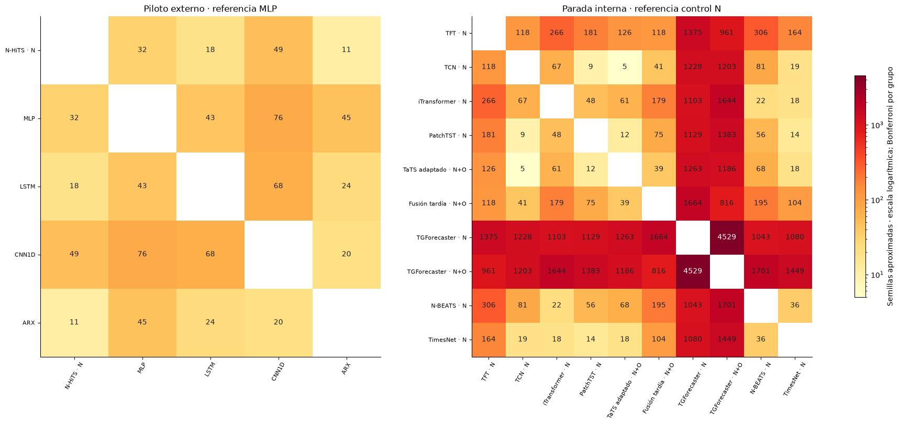
La planificación conservadora alcanza máximos de 76 semillas en los pilotos externos y 4529 en la reserva interna. Las mayores cifras reflejan la dispersión de las diferencias frente al margen fijado, no una mayor diferencia media de rendimiento. Cinco semillas no acreditan la potencia objetivo en todas las parejas; el cálculo retrospectivo no modifica el número ejecutado.
Curvas de aprendizaje#
Cada panel conserva las cinco semillas: líneas de ajuste y de parada interna, y marcadores del mínimo restaurado de parada. Las familias base emplean MAE o Huber según su configuración; por ello las alturas no son comparables entre pérdidas diferentes.
e2_curvas = pd.read_csv(e2_RESULT / 'curvas_aprendizaje.csv')
e2_ks = [e2_k for e2_k in e2_benchmark.clave if e2_k not in ['ingenuo_24h', 'ingenuo_168h']]
e2_fig, e2_axes = plt.subplots(int(np.ceil(len(e2_ks) / 3)), 3, figsize=(17, 19))
for e2_ax, e2_k in zip(e2_axes.flat, e2_ks):
e2_c = e2_curvas[e2_curvas.clave == e2_k]
for e2_s, e2_g in e2_c.groupby('semilla'):
e2_ax.plot(e2_g.epoca, e2_g.train_loss, color='#4a8baf', alpha=0.4, lw=1)
e2_ax.plot(e2_g.epoca, e2_g.val_loss, color='#cb7e30', alpha=0.65, lw=1)
e2_z = e2_g.loc[e2_g.val_loss.idxmin()]
e2_ax.plot(e2_z.epoca, e2_z.val_loss, 'o', ms=3, color='#7e4417')
e2_ax.set_title(e2_nombres[e2_k], fontsize=9)
e2_ax.set_xlabel('Época')
e2_ax.set_ylabel(e2_c.perdida.iloc[0])
e2_ax.grid(alpha=0.12)
for e2_ax in list(e2_axes.flat)[len(e2_ks):]:
e2_ax.set_visible(False)
e2_fig.suptitle('Azul: ajuste · naranja: parada interna · punto: mínimo restaurado', fontsize=13)
e2_fig.tight_layout(rect=[0, 0, 1, 0.98])
display(e2_fig)
plt.close(e2_fig)
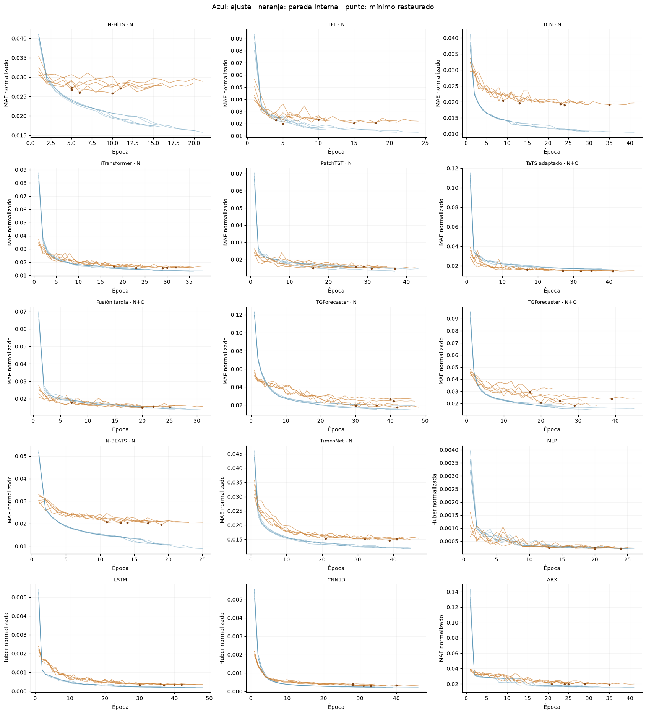
La parada ocurre antes del máximo de épocas en las realizaciones presentadas y restaura el mejor estado observado en la reserva interna. La separación ajuste–parada sugiere revisar generalización y estabilidad, pero no constituye por sí sola una prueba de sobreajuste. Los contrastes externos se basan en errores posteriores al ajuste; las curvas no se utilizan para volver a seleccionar modelos con la prueba.
Desempeño y precisión temporal#
La figura muestra MASE e IC95 % temporal. Los intervalos se calculan sobre bloques de días compartidos por todos los procedimientos; las cinco semillas no se convierten en 5×1.461 observaciones independientes.
e2_b = e2_benchmark.sort_values('MASE', ascending=False)
e2_fig, e2_ax = plt.subplots(figsize=(12, 7))
e2_ypos = np.arange(len(e2_b))
e2_colores = ['#6c7d8a' if e2_x == 'referencia' else '#258a83' if '+O' in e2_n else '#447ba0' for e2_x, e2_n in zip(e2_b.entradas, e2_b.modelo)]
e2_ax.barh(e2_ypos, e2_b.MASE, color=e2_colores)
e2_ax.errorbar(e2_b.MASE, e2_ypos, xerr=np.vstack([e2_b.MASE - e2_b.IC95_inf, e2_b.IC95_sup - e2_b.MASE]), fmt='none', ecolor='#252d34', capsize=3)
e2_ax.set_yticks(e2_ypos, e2_b.modelo)
e2_ax.set_xlabel('MASE e IC95 % temporal por bloques')
e2_ax.grid(axis='x', alpha=0.15)
e2_fig.tight_layout()
display(e2_fig)
plt.close(e2_fig)
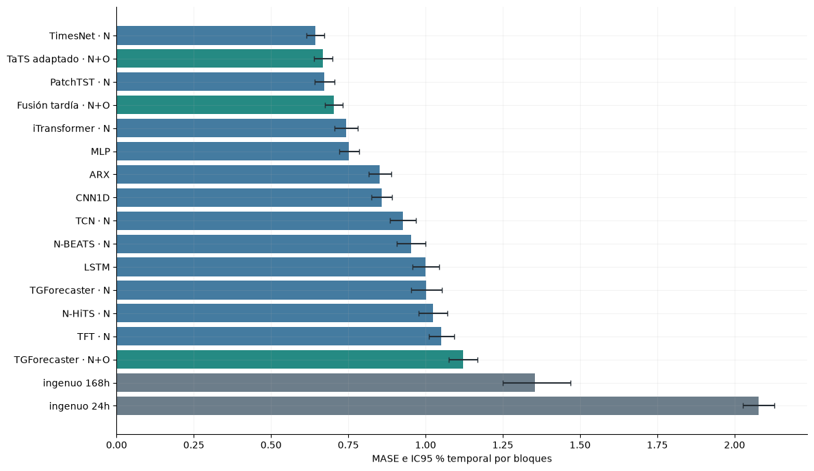
TimesNet · N, TaTS adaptado · N+O y PatchTST · N presentan los menores errores medios de prueba. La cercanía de barras e intervalos no sustituye la comparación pareada sobre los mismos orígenes.
N-BEATS presenta MASE 0,9533, MAE 0,2056 GWh y RMSE 0,2617 GWh por intervalo. Su MAE es 26,77 % mayor que el de MLP. La complejidad de la arquitectura no garantiza menor error bajo este conjunto de entradas y presupuesto.
MAE expresa el error absoluto en kWh y RMSE concede mayor peso a desviaciones grandes. El MASE de la tabla maestra y de la figura utiliza un denominador común de entrenamiento; el ingenuo de prueba no tiene por qué obtener MASE igual a uno. Las referencias deterministas tienen una realización y no se replican artificialmente para las pruebas entre semillas.
Comparaciones temporales del benchmark de referencia#
La matriz incluye las 136 parejas de los 15 procedimientos aprendidos y las dos referencias. Muestra p de DM–HLN con Holm(136), sobre diferencias diarias con HAC de 13 rezagos. Las diferencias e intervalos completos se conservan en la tabla descargable.
g_temporal=pd.read_csv(g_result/'comparaciones_temporales.csv')
g_all=g_benchmark.index.tolist()
assert len(g_temporal)==len(g_all)*(len(g_all)-1)//2
g_pdm=np.full((len(g_all),len(g_all)),np.nan)
for g_pair in g_temporal.itertuples():
g_i,g_j=g_all.index(g_pair.A),g_all.index(g_pair.B)
g_pdm[g_i,g_j]=g_pdm[g_j,g_i]=g_pair.p_DM_Holm
fig,ax=plt.subplots(figsize=(15,13),layout='constrained')
g_im=ax.imshow(g_pdm,cmap='viridis_r',vmin=0,vmax=1)
ax.set(xticks=range(len(g_all)),yticks=range(len(g_all)),xticklabels=[g_names[k] for k in g_all],yticklabels=[g_names[k] for k in g_all])
ax.tick_params(axis='x',rotation=60,labelsize=8);ax.tick_params(axis='y',labelsize=9);ax.grid(False)
for g_i in range(len(g_all)):
for g_j in range(len(g_all)):
if g_i!=g_j:
g_v=g_pdm[g_i,g_j]
ax.text(g_j,g_i,('<.001' if g_v<.001 else f'{g_v:.3f}')+('*' if g_v<.05 else ''),ha='center',va='center',fontsize=7,color='white' if g_v>.5 else '#222222')
fig.colorbar(g_im,ax=ax,label='p DM–HLN · Holm(105); * < 0,05')
fig.savefig(g_figures/'dm_completo.png',dpi=160)
display(fig);plt.close(fig)
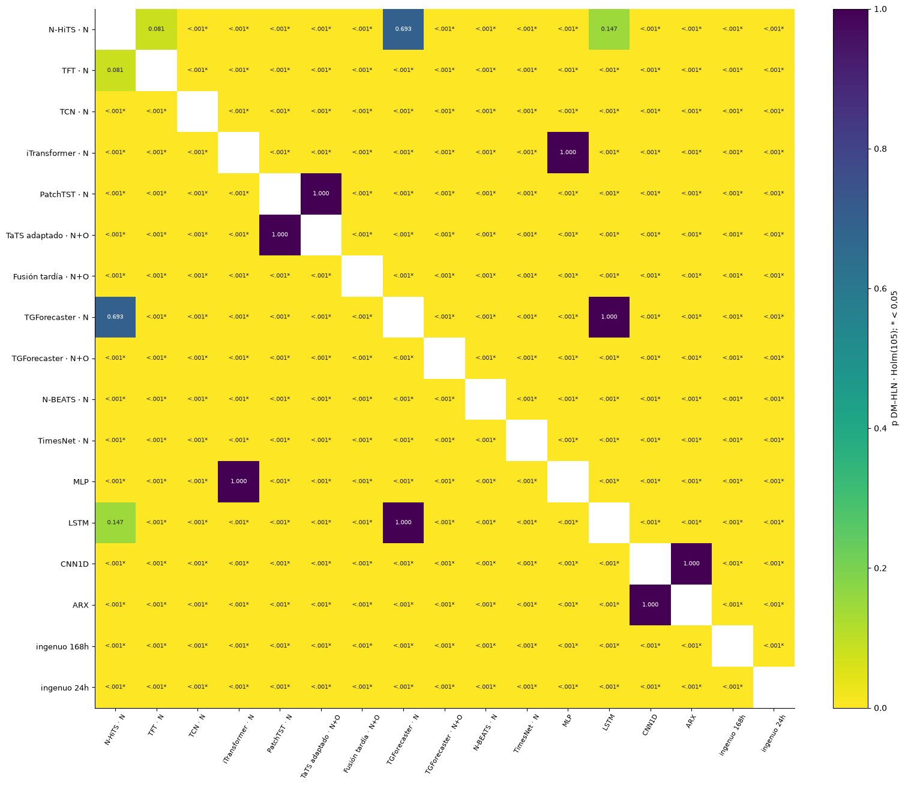
DM–HLN con Holm rechaza en 129 de las 136 parejas. Los rechazos son específicos de cada comparación y no convierten el orden de medias en un ranking de diferencias significativas. Un valor p elevado no establece equivalencia. La inferencia temporal condiciona las inicializaciones ejecutadas.
Protocolo de inferencia de TimesNet#
La selección y la parada interna conservan las métricas registradas con lote 256; la prueba y las perturbaciones se calculan por origen con lote 1. La selección de frecuencias de TimesBlock depende del lote. Por tanto, la diferencia entre errores de desarrollo y prueba combina cambio de periodo y cambio de condiciones de inferencia. Las curvas describen el ajuste registrado.
Validación y generalización#
Los quince procedimientos incluyen validación de selección, precisión de desarrollo y prueba. La barra central utiliza piloto externo en cinco procedimientos y parada interna en diez; colores y tramas identifican su fuente. Los periodos y protocolos de selección se detallan en la tabla de diseño.
from matplotlib.patches import Patch
g_general=g_meta.groupby('clave').validacion.first().reindex(g_keys).to_frame('Validación externa')
g_general['Precisión desarrollo']=v_precision.MASE_media
g_general['Prueba']=g_benchmark.loc[g_keys,'MASE']
g_general['Fuente precisión']=v_precision.Fuente
g_general['Periodo precisión']=v_precision.Periodo
g_general['Periodo validación']=g_meta.groupby('clave').anios_validacion.first().reindex(g_keys)
assert g_general.notna().all().all() and len(g_general)==len(g_keys)
fig,ax=plt.subplots(figsize=(16,7))
v_pos=np.arange(len(g_keys));v_w=.25
ax.bar(v_pos-v_w,g_general['Validación externa'],v_w,color='#8295a5',label='Validación externa de selección')
v_colors=['#417da2' if f=='Piloto externo' else '#d18b38' for f in g_general['Fuente precisión']]
v_bars=ax.bar(v_pos,g_general['Precisión desarrollo'],v_w,color=v_colors)
for v_bar,v_source in zip(v_bars,g_general['Fuente precisión']):
if v_source=='Parada interna':v_bar.set_hatch('//')
ax.bar(v_pos+v_w,g_general.Prueba,v_w,color='#258a83',label='Prueba · 2022–2025')
ax.set(xticks=v_pos,xticklabels=[g_names[k] for k in g_keys],ylabel='MASE',xlabel='')
ax.tick_params(axis='x',rotation=40,labelsize=8)
ax.legend(handles=[Patch(color='#8295a5',label='Validación externa de selección'),
Patch(color='#417da2',label='Precisión: piloto externo · 2018–2021'),
Patch(facecolor='#d18b38',hatch='//',label='Precisión: parada interna · 2019-10-21 a 2021-12-31'),
Patch(color='#258a83',label='Prueba · 2022–2025')],fontsize=9)
fig.tight_layout();fig.savefig(g_figures/'generalizacion_completa.png',dpi=160)
display(fig);plt.close(fig)
g_general.to_csv(g_result/'generalizacion_integrada.csv',index_label='clave')
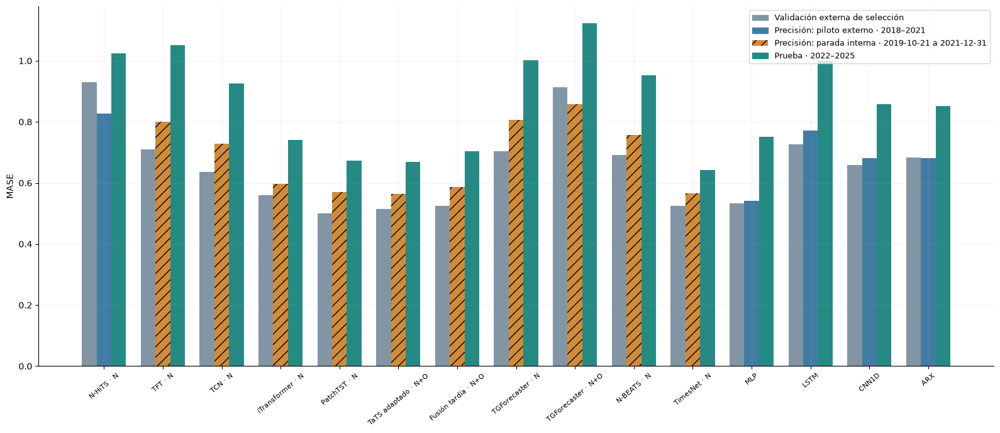
El MASE de prueba supera al de validación en 15 de los 15 procedimientos. La barra de precisión de desarrollo conserva la fuente disponible para cada procedimiento. La parada interna participó en la selección de época y puede ser optimista; la diferencia hasta prueba no se atribuye únicamente a cambios de distribución.
Ajuste y parada interna#
Los registros conservan MAE normalizado en modo evaluación para las cuatro familias de demanda/calendario y MASE de ajuste/parada para diez variantes ampliadas. Se muestran por separado para preservar sus unidades. N-HiTS conserva curvas de pérdida, pero no estas métricas de evaluación de ambos tramos; no se reemplazan por pérdidas de entrenamiento calculadas con dropout.
fig,axes = plt.subplots(1,2,figsize=(16,5))
for ax,g_cols,g_label in zip(axes,[['MAE_ajuste_normalizado','MAE_parada_normalizado'],['MASE_ajuste','MASE_parada']],['MAE normalizado · modo evaluación','MASE · modo evaluación']):
g_present = [k for k in g_keys if g_meta.loc[g_meta.clave.eq(k),g_cols].notna().all(axis=1).all()]
for g_i,g_k in enumerate(g_present):
g_rows = g_meta[g_meta.clave.eq(g_k)].sort_values('semilla')
for g_offset,g_col,g_color,g_label_col in zip([-.09,.09],g_cols,['#447ba0','#dc923b'],['Ajuste','Parada interna']):
ax.scatter(np.full(5,g_i)+g_offset,g_rows[g_col],color=g_color,label=g_label_col if g_i==0 else None,s=25)
ax.set(xticks=np.arange(len(g_present)),xticklabels=[g_names[k] for k in g_present],ylabel=g_label)
ax.tick_params(axis='x',rotation=35,labelsize=8);ax.legend()
fig.tight_layout();display(fig);plt.close(fig)
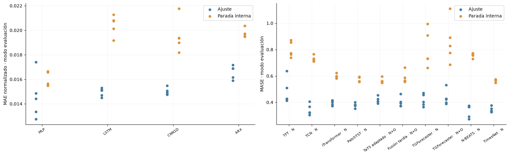
La parada interna presenta mayor error que el ajuste en 69 de las 70 realizaciones con ambas métricas. La separación describe generalización dentro del periodo de desarrollo; su magnitud no se compara entre paneles porque las escalas difieren. Las curvas de aprendizaje incluyen también un procedimiento sin estas métricas desagregadas.
Demanda observada frente a predicción#
Cada panel reúne 35.064 horas y cinco semillas: 175.320 pares hora–semilla por procedimiento. La diagonal representa predicción exacta; ejes y escala logarítmica de densidad son comunes. MAE y RMSE se promedian entre realizaciones, igual que en el benchmark.
from matplotlib.colors import LogNorm
g_obs = np.broadcast_to(g_y,(5,*g_y.shape)).reshape(-1)/1e6
g_ext = [g_y.min()/1e6,g_y.max()/1e6]
for g_k in g_keys:
g_ext.extend([g_pred[g_k].min()/1e6,g_pred[g_k].max()/1e6])
g_pad = .025*(max(g_ext)-min(g_ext))
g_limits = (min(g_ext)-g_pad,max(g_ext)+g_pad)
fig,axes = plt.subplots(int(np.ceil(len(g_keys)/3)),3,figsize=(16,21),sharex=True,sharey=True,layout='constrained')
for ax,g_k in zip(axes.flat,g_keys):
g_density = ax.hexbin(g_obs,g_pred[g_k].reshape(-1)/1e6,gridsize=55,mincnt=1,cmap='viridis',norm=LogNorm(1,len(g_obs)),extent=(*g_limits,*g_limits))
ax.plot(g_limits,g_limits,'--',color='#c44e52',lw=1.2)
ax.set(title=g_names[g_k],xlim=g_limits,ylim=g_limits,xlabel='Observado (GWh por intervalo)',ylabel='Predicho (GWh por intervalo)')
ax.set_aspect('equal',adjustable='box')
ax.text(.04,.96,f"MAE: {g_benchmark.loc[g_k,'MAE']/1e6:.3f} GWh\nRMSE: {g_benchmark.loc[g_k,'RMSE']/1e6:.3f} GWh",transform=ax.transAxes,va='top',fontsize=9,bbox=dict(facecolor='white',alpha=.85,edgecolor='none'))
for g_ax in list(axes.flat)[len(g_keys):]:g_ax.set_visible(False)
fig.colorbar(g_density,ax=axes.ravel().tolist(),shrink=.65,label='Pares hora–semilla por celda · escala logarítmica')
fig.savefig(g_figures/'observado_predicho_completo.png',dpi=160)
display(fig);plt.close(fig)
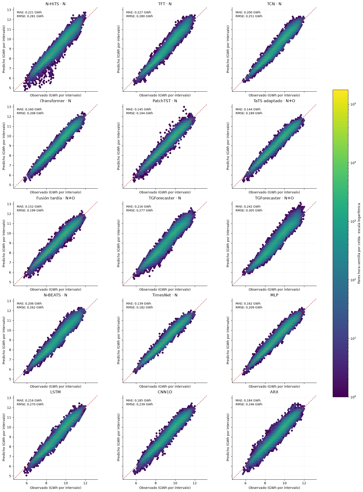
TimesNet · N, TaTS adaptado · N+O y PatchTST · N presentan los menores errores agregados. La distancia a la diagonal describe errores de nivel y amplitud; las nubes muestran dónde se concentran las desviaciones. La densidad reúne fechas e inicializaciones y no implica independencia entre observaciones.
Perfil horario en una semana de prueba#
Se utiliza la misma ventana del 1 al 7 de julio de 2023 para los quince procedimientos. La banda p10–p90 representa dispersión entre cinco semillas y no un intervalo predictivo calibrado. El MAE semanal se calcula con los errores individuales, mientras la predicción media se utiliza para visualizar el perfil.
import matplotlib.dates as mdates
g_week = (g_dates>=pd.Timestamp('2023-07-01',tz='America/Bogota'))&(g_dates<pd.Timestamp('2023-07-08',tz='America/Bogota'))
assert g_week.sum()==7
g_time = pd.DatetimeIndex([d+pd.Timedelta(hours=h) for d in g_dates[g_week] for h in range(24)])
g_week_mae = {}
fig,axes = plt.subplots(int(np.ceil(len(g_keys)/3)),3,figsize=(18,18),sharex=True,sharey=True,layout='constrained')
for ax,g_k in zip(axes.flat,g_keys):
g_v = g_pred[g_k][:,g_week,:].reshape(5,-1)/1e6
g_week_mae[g_k] = np.abs(g_pred[g_k][:,g_week,:]-g_y[None,g_week,:]).mean()/1e6
ax.fill_between(g_time,np.quantile(g_v,.1,axis=0),np.quantile(g_v,.9,axis=0),color='#447ba0',alpha=.2,label='p10–p90 entre semillas')
ax.plot(g_time,g_y[g_week].reshape(-1)/1e6,color='#222222',lw=1.5,label='Observado')
ax.plot(g_time,g_v.mean(axis=0),'--',color='#447ba0',lw=1.2,label='Predicción media')
ax.set(title=f'{g_names[g_k]}\nMAE semanal: {g_week_mae[g_k]:.3f} GWh',xlabel='Julio de 2023 · Colombia',ylabel='GWh por intervalo')
ax.xaxis.set_major_locator(mdates.DayLocator(interval=2,tz=g_time.tz))
ax.xaxis.set_major_formatter(mdates.DateFormatter('%d-%m',tz=g_time.tz))
ax.legend(fontsize=7,loc='lower right')
for g_ax in list(axes.flat)[len(g_keys):]:g_ax.set_visible(False)
fig.savefig(g_figures/'semana_completa.png',dpi=160)
display(fig);plt.close(fig)
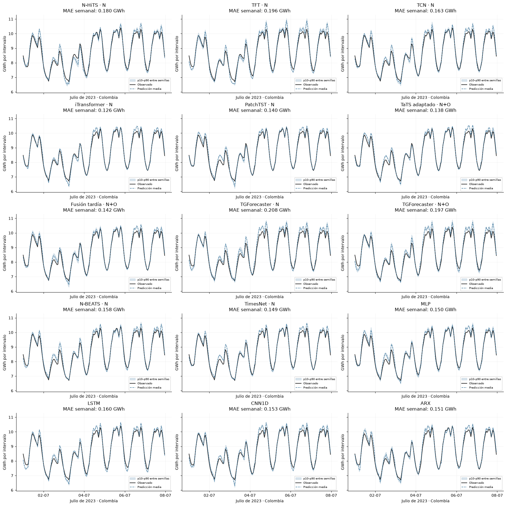
Los procedimientos reproducen el ciclo diario, pero difieren en la altura de los máximos, los mínimos nocturnos y las transiciones. Esta ventana permite contextualizar las métricas en unidades de demanda; siete días no representan por sí solos el ranking del periodo completo. La banda entre semillas describe estabilidad de inicialización y puede ser estrecha aun cuando exista un error común.
Error por horizonte#
Se muestran los errores de cada hora para distinguir un buen promedio de una mejora distribuida a lo largo del día. El código conserva los 24 horizontes y los mismos orígenes para todos los procedimientos.
e2_hor = pd.read_csv(e2_RESULT / 'resultados_horizonte.csv')
e2_keys=e2_benchmark.loc[e2_benchmark.semillas.gt(1),'clave'].tolist()
e2_grupos=[
(e2_benchmark.loc[e2_benchmark.clave.isin(e2_keys)&e2_benchmark.entradas.eq('demanda_calendario'),'clave'].tolist(),'Demanda y calendario'),
(e2_benchmark.loc[e2_benchmark.clave.isin(e2_keys)&e2_benchmark.entradas.eq('numerico_ampliado')&~e2_benchmark.clave.str.endswith('__N+O'),'clave'].tolist(),'Numéricos ampliados'),
(e2_benchmark.loc[e2_benchmark.clave.isin(e2_keys)&e2_benchmark.clave.str.endswith('__N+O'),'clave'].tolist(),'Contrastes textuales')]
assert {k for ks,_ in e2_grupos for k in ks}==set(e2_keys)
assert sum(len(ks) for ks,_ in e2_grupos)==len(e2_keys)
e2_fig, e2_axes = plt.subplots(1, 3, figsize=(18, 5), sharey=True)
for e2_ax, (e2_ks, e2_titulo) in zip(e2_axes, e2_grupos):
for e2_k in e2_ks:
e2_v = e2_hor[e2_hor.clave == e2_k]
e2_ax.plot(e2_v.horizonte, e2_v.MASE, label=e2_nombres[e2_k], lw=1.7)
e2_ax.set_title(e2_titulo)
e2_ax.set_xlabel('Horizonte horario')
e2_ax.set_xticks([1, 6, 12, 18, 24])
e2_ax.grid(alpha=0.15)
e2_ax.legend(fontsize=7, loc='upper left')
e2_axes[0].set_ylabel('MASE')
e2_fig.tight_layout()
display(e2_fig)
plt.close(e2_fig)
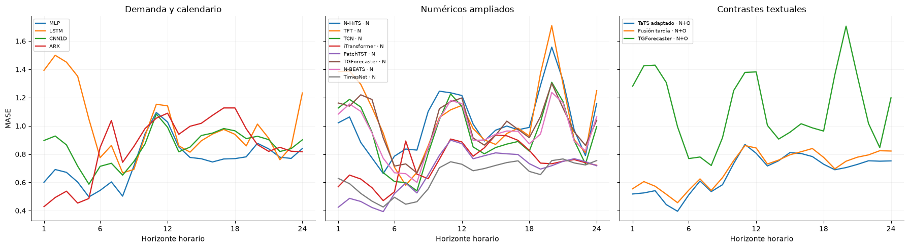
El menor MASE medio por horizonte corresponde a TimesNet · N en 16; PatchTST · N en 6; TaTS adaptado · N+O en 2, de las 24 horas evaluadas. El orden cambia con la hora; este recuento descriptivo no equivale a un contraste de diferencias. Los contrastes textuales conservan 72 pruebas DM–HLN, ajustadas conjuntamente por Holm, en la tabla descargable.
Segmentos de evaluación#
Se conserva la evaluación por año, tipo de día y cuartil de demanda para los quince procedimientos. Cada panel muestra pérdidas promediadas entre semillas dentro del segmento. Los cortes describen heterogeneidad de prueba y no se utilizan para seleccionar configuraciones.
g_panel = pd.read_parquet(ROOT/'data/processed/panel_horario.parquet',columns=['cal_es_festivo'])
g_festivo = g_panel.reindex(g_dates).cal_es_festivo.to_numpy().astype(bool)
g_tipo = np.where((g_dates.day_of_week==6)|g_festivo,'Domingo/festivo',np.where(g_dates.day_of_week==5,'Sábado','Lun–vie'))
g_segments = {'Año':g_dates.year.astype(str),'Tipo de día':g_tipo,'Nivel de demanda':pd.qcut(g_y.mean(axis=1),4,labels=['Q1','Q2','Q3','Q4']).astype(str)}
g_groups = [[k for k in g_keys if k not in modelos and '+O' not in k],[k for k in g_keys if '+O' in k],[k for k in g_keys if k in modelos]]
fig,axes = plt.subplots(3,3,figsize=(17,14),sharey=True,layout='constrained')
for g_row,g_group in enumerate(g_groups):
for ax,(g_title,g_labels) in zip(axes[g_row],g_segments.items()):
g_order = ['Lun–vie','Sábado','Domingo/festivo'] if g_title=='Tipo de día' else sorted(set(g_labels))
for g_k in g_group:
ax.plot(g_order,[g_daily[g_k][np.asarray(g_labels)==g].mean() for g in g_order],marker='o',label=g_names[g_k])
ax.set(xlabel=g_title,ylabel='MASE');ax.legend(fontsize=7)
fig.savefig(g_figures/'segmentos_completos.png',dpi=160)
display(fig);plt.close(fig)
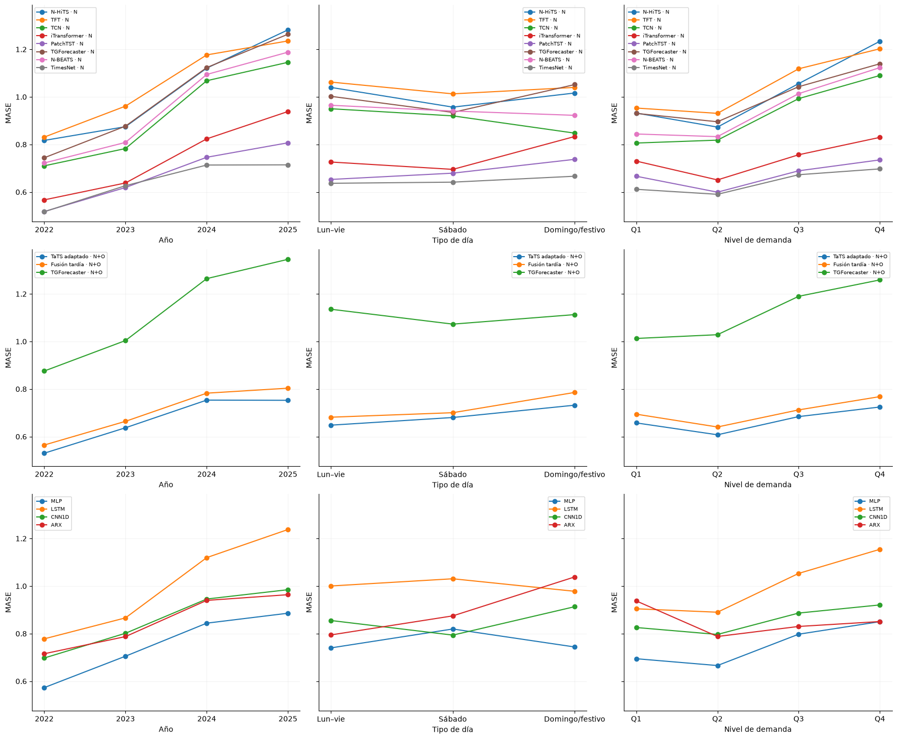
El error cambia entre años y niveles de demanda, por lo que una única media no resume todas las condiciones operativas. La comparación por tipo de día permite distinguir la dificultad de días laborales y no laborales. Los tres grupos de paneles separan las curvas para facilitar la lectura; utilizan los mismos segmentos y el mismo denominador MASE.
Aporte de texto oficial y equivalencia#
Se compara N+O menos N; una diferencia negativa favorece al texto. El margen práctico es ±3 % relativo al MASE del control numérico N. Se informa tanto la diferencia como sus intervalos y los contrastes. La familia textual contiene tres comparaciones exploratorias y utiliza Holm por prueba.
e2_texto = pd.read_csv(e2_RESULT / 'contrastes_texto.csv')
e2_vista = e2_texto[['modelo', 'relativa_pct', 'IC95_inf', 'IC95_sup', 'p_DM_Holm_texto', 'p_bootstrap_Holm_texto', 'p_TOST_Holm_texto']].rename(columns={'modelo': 'Variante frente a N', 'relativa_pct': 'Cambio MAE (%)', 'IC95_inf': 'IC95 inferior', 'IC95_sup': 'IC95 superior', 'p_DM_Holm_texto': 'p DM–HLN Holm(3)', 'p_bootstrap_Holm_texto': 'p bootstrap Holm(3)', 'p_TOST_Holm_texto': 'p TOST Holm(3)'})
display(e2_vista.style.format({e2_c: '{:.4g}' for e2_c in e2_vista.columns if e2_c.startswith('p ')}))
| Variante frente a N | Cambio MAE (%) | IC95 inferior | IC95 superior | p DM–HLN Holm(3) | p bootstrap Holm(3) | p TOST Holm(3) | |
|---|---|---|---|---|---|---|---|
| 0 | TaTS adaptado · N+O | -0.605048 | -2.132283 | 0.923622 | 0.4403 | 0.4356 | 0.0018 |
| 1 | Fusión tardía · N+O | 4.653609 | 3.251403 | 6.055964 | 4.35e-12 | 0.0003 | 1 |
| 2 | TGForecaster · N+O | 12.018815 | 10.274016 | 13.743711 | 1.362e-55 | 0.0003 | 1 |
TaTS adaptado · N+O reduce el MAE 0,61 % frente a PatchTST · N (IC95 % relativo [-2,13 %; 0,92 %]; DM–HLN con Holm(3): p=0,4403). El contraste no demuestra una diferencia temporal. TOST acredita equivalencia dentro del margen relativo del 3 %.
Fusión tardía · N+O aumenta el MAE 4,65 % frente a PatchTST · N (IC95 % relativo [3,25 %; 6,06 %]; DM–HLN con Holm(3): p=4,350e-12). El contraste detecta una diferencia temporal. TOST no acredita equivalencia dentro del margen relativo del 3 %.
TGForecaster · N+O aumenta el MAE 12,02 % frente a TGForecaster · N (IC95 % relativo [10,27 %; 13,74 %]; DM–HLN con Holm(3): p=1,362e-55). El contraste detecta una diferencia temporal. TOST no acredita equivalencia dentro del margen relativo del 3 %.
La inferencia condiciona las inicializaciones y el corpus evaluados. Las configuraciones se seleccionaron por separado; la comparación de procedimientos y las intervenciones con pesos fijos responden a preguntas diferentes.
Comparaciones entre semillas y tamaño del efecto#
Se incluyen las 105 parejas de los 15 procedimientos, emparejadas por índice de semilla. Se reportan diferencias de MASE, Shapiro–Wilk, t pareada y Wilcoxon exacto con Holm(105), y Cohen d_z con IC95 % por inversión de t no central. La t es una sensibilidad; cinco pares no acreditan normalidad porque Shapiro no rechace.
g_pairs = pd.read_csv(g_result/'comparaciones_semillas.csv')
assert len(g_pairs)==len(g_keys)*(len(g_keys)-1)//2 and set(g_pairs.A)|set(g_pairs.B)==set(g_keys)
g_view = g_pairs.copy()
g_view.insert(0,'Comparación',[g_names[a]+' − '+g_names[b] for a,b in zip(g_view.A,g_view.B)])
g_view = g_view[['Comparación','diferencia_MASE','p_Shapiro','p_t_Holm','p_Wilcoxon_Holm','Cohen_dz','IC95_dz_inf','IC95_dz_sup']]
with pd.option_context('display.max_rows',100):
display(g_view.style.format({c:'{:.4g}' for c in g_view.columns if c!='Comparación'}))
| Comparación | diferencia_MASE | p_Shapiro | p_t_Holm | p_Wilcoxon_Holm | Cohen_dz | IC95_dz_inf | IC95_dz_sup | |
|---|---|---|---|---|---|---|---|---|
| 0 | N-HiTS · N − TFT · N | -0.0274 | 0.03622 | 1 | 1 | -0.2457 | -1.123 | 0.6603 |
| 1 | N-HiTS · N − TCN · N | 0.097 | 0.4295 | 1 | 1 | 1.215 | -0.01447 | 2.374 |
| 2 | N-HiTS · N − iTransformer · N | 0.2818 | 0.4237 | 0.03323 | 1 | 4.803 | 1.524 | 8.117 |
| 3 | N-HiTS · N − PatchTST · N | 0.3511 | 0.394 | 0.01396 | 1 | 6.129 | 2.016 | 10.31 |
| 4 | N-HiTS · N − TaTS adaptado · N+O | 0.3552 | 0.2664 | 0.01872 | 1 | 5.635 | 1.835 | 9.491 |
| 5 | N-HiTS · N − Fusión tardía · N+O | 0.3198 | 0.1901 | 0.03973 | 1 | 4.557 | 1.431 | 7.711 |
| 6 | N-HiTS · N − TGForecaster · N | 0.02164 | 0.01536 | 1 | 1 | 0.1583 | -0.734 | 1.032 |
| 7 | N-HiTS · N − TGForecaster · N+O | -0.09879 | 0.9362 | 1 | 1 | -0.4179 | -1.315 | 0.5247 |
| 8 | N-HiTS · N − N-BEATS · N | 0.07029 | 0.2344 | 0.5343 | 1 | 1.972 | 0.3679 | 3.523 |
| 9 | N-HiTS · N − TimesNet · N | 0.3807 | 0.7019 | 0.01511 | 1 | 5.989 | 1.965 | 10.08 |
| 10 | N-HiTS · N − MLP | 0.2716 | 0.6972 | 0.001167 | 1 | 12.09 | 4.149 | 20.23 |
| 11 | N-HiTS · N − LSTM | 0.02313 | 0.5388 | 1 | 1 | 0.3792 | -0.5541 | 1.271 |
| 12 | N-HiTS · N − CNN1D | 0.1663 | 0.4446 | 0.164 | 1 | 3.052 | 0.8388 | 5.249 |
| 13 | N-HiTS · N − ARX | 0.172 | 0.408 | 0.1384 | 1 | 3.218 | 0.9068 | 5.518 |
| 14 | TFT · N − TCN · N | 0.1244 | 0.2356 | 0.2817 | 1 | 2.535 | 0.6212 | 4.417 |
| 15 | TFT · N − iTransformer · N | 0.3092 | 0.8993 | 0.07848 | 1 | 3.792 | 1.136 | 6.455 |
| 16 | TFT · N − PatchTST · N | 0.3785 | 0.2944 | 0.01215 | 1 | 6.386 | 2.111 | 10.73 |
| 17 | TFT · N − TaTS adaptado · N+O | 0.3826 | 0.8911 | 0.01066 | 1 | 6.641 | 2.203 | 11.16 |
| 18 | TFT · N − Fusión tardía · N+O | 0.3472 | 0.08096 | 0.005373 | 1 | 8.114 | 2.735 | 13.6 |
| 19 | TFT · N − TGForecaster · N | 0.04903 | 0.7617 | 1 | 1 | 0.2852 | -0.6281 | 1.166 |
| 20 | TFT · N − TGForecaster · N+O | -0.07139 | 0.8438 | 1 | 1 | -0.4457 | -1.348 | 0.5039 |
| 21 | TFT · N − N-BEATS · N | 0.09768 | 0.2329 | 1 | 1 | 1.11 | -0.0737 | 2.222 |
| 22 | TFT · N − TimesNet · N | 0.4081 | 0.8992 | 0.01041 | 1 | 6.718 | 2.232 | 11.29 |
| 23 | TFT · N − MLP | 0.299 | 0.1612 | 0.186 | 1 | 2.939 | 0.7921 | 5.066 |
| 24 | TFT · N − LSTM | 0.05052 | 0.5456 | 1 | 1 | 0.4568 | -0.4956 | 1.361 |
| 25 | TFT · N − CNN1D | 0.1937 | 0.9491 | 0.6585 | 1 | 1.724 | 0.2497 | 3.139 |
| 26 | TFT · N − ARX | 0.1994 | 0.8708 | 0.2609 | 1 | 2.614 | 0.655 | 4.543 |
| 27 | TCN · N − iTransformer · N | 0.1848 | 0.8112 | 0.02578 | 1 | 5.16 | 1.658 | 8.706 |
| 28 | TCN · N − PatchTST · N | 0.2541 | 0.02365 | 0.008962 | 1 | 7.036 | 2.347 | 11.81 |
| 29 | TCN · N − TaTS adaptado · N+O | 0.2582 | 0.4661 | 0.003301 | 1 | 9.244 | 3.139 | 15.48 |
| 30 | TCN · N − Fusión tardía · N+O | 0.2228 | 0.6454 | 0.01045 | 1 | 6.693 | 2.222 | 11.24 |
| 31 | TCN · N − TGForecaster · N | -0.07536 | 0.7894 | 1 | 1 | -0.5183 | -1.434 | 0.4508 |
| 32 | TCN · N − TGForecaster · N+O | -0.1958 | 0.9263 | 1 | 1 | -1.013 | -2.085 | 0.13 |
| 33 | TCN · N − N-BEATS · N | -0.02671 | 0.4089 | 1 | 1 | -0.5357 | -1.455 | 0.4383 |
| 34 | TCN · N − TimesNet · N | 0.2837 | 0.9196 | 0.001273 | 1 | 11.81 | 4.047 | 19.75 |
| 35 | TCN · N − MLP | 0.1746 | 0.2157 | 0.239 | 1 | 2.7 | 0.6918 | 4.681 |
| 36 | TCN · N − LSTM | -0.07387 | 0.6615 | 1 | 1 | -1.18 | -2.323 | 0.03417 |
| 37 | TCN · N − CNN1D | 0.06929 | 0.6198 | 1 | 1 | 0.9018 | -0.1968 | 1.931 |
| 38 | TCN · N − ARX | 0.07496 | 0.8382 | 0.4248 | 1 | 2.133 | 0.4423 | 3.776 |
| 39 | iTransformer · N − PatchTST · N | 0.06931 | 0.3158 | 0.5768 | 1 | 1.863 | 0.3168 | 3.354 |
| 40 | iTransformer · N − TaTS adaptado · N+O | 0.07338 | 0.4312 | 0.3199 | 1 | 2.423 | 0.5723 | 4.238 |
| 41 | iTransformer · N − Fusión tardía · N+O | 0.03802 | 0.8493 | 1 | 1 | 0.758 | -0.2874 | 1.738 |
| 42 | iTransformer · N − TGForecaster · N | -0.2602 | 0.4318 | 0.5741 | 1 | -1.886 | -3.39 | -0.3278 |
| 43 | iTransformer · N − TGForecaster · N+O | -0.3806 | 0.9585 | 0.6585 | 1 | -1.741 | -3.165 | -0.2578 |
| 44 | iTransformer · N − N-BEATS · N | -0.2115 | 0.5209 | 0.0118 | 1 | -6.453 | -10.85 | -2.135 |
| 45 | iTransformer · N − TimesNet · N | 0.09889 | 0.9972 | 0.06627 | 1 | 3.977 | 1.208 | 6.758 |
| 46 | iTransformer · N − MLP | -0.01021 | 0.8105 | 1 | 1 | -0.2372 | -1.114 | 0.6673 |
| 47 | iTransformer · N − LSTM | -0.2587 | 0.5386 | 0.007588 | 1 | -7.378 | -12.38 | -2.471 |
| 48 | iTransformer · N − CNN1D | -0.1155 | 0.004216 | 0.651 | 1 | -1.77 | -3.21 | -0.2721 |
| 49 | iTransformer · N − ARX | -0.1099 | 0.8263 | 0.004879 | 1 | -8.335 | -13.97 | -2.814 |
| 50 | PatchTST · N − TaTS adaptado · N+O | 0.004069 | 0.8649 | 1 | 1 | 0.3251 | -0.5963 | 1.21 |
| 51 | PatchTST · N − Fusión tardía · N+O | -0.0313 | 0.4262 | 0.7628 | 1 | -1.617 | -2.975 | -0.1966 |
| 52 | PatchTST · N − TGForecaster · N | -0.3295 | 0.8343 | 0.3992 | 1 | -2.183 | -3.856 | -0.4654 |
| 53 | PatchTST · N − TGForecaster · N+O | -0.4499 | 0.9992 | 0.3532 | 1 | -2.299 | -4.04 | -0.5174 |
| 54 | PatchTST · N − N-BEATS · N | -0.2808 | 0.1912 | 0.009538 | 1 | -6.907 | -11.6 | -2.3 |
| 55 | PatchTST · N − TimesNet · N | 0.02957 | 0.5841 | 1 | 1 | 1.363 | 0.06554 | 2.591 |
| 56 | PatchTST · N − MLP | -0.07952 | 0.7172 | 0.7628 | 1 | -1.606 | -2.958 | -0.191 |
| 57 | PatchTST · N − LSTM | -0.328 | 0.08866 | 0.03214 | 1 | -4.86 | -8.211 | -1.546 |
| 58 | PatchTST · N − CNN1D | -0.1848 | 0.7325 | 0.2996 | 1 | -2.481 | -4.33 | -0.5975 |
| 59 | PatchTST · N − ARX | -0.1792 | 0.82 | 0.01033 | 1 | -6.75 | -11.34 | -2.243 |
| 60 | TaTS adaptado · N+O − Fusión tardía · N+O | -0.03536 | 0.4702 | 0.9853 | 1 | -1.447 | -2.717 | -0.1099 |
| 61 | TaTS adaptado · N+O − TGForecaster · N | -0.3336 | 0.9376 | 0.3532 | 1 | -2.297 | -4.037 | -0.5165 |
| 62 | TaTS adaptado · N+O − TGForecaster · N+O | -0.454 | 0.9997 | 0.3565 | 1 | -2.267 | -3.989 | -0.5032 |
| 63 | TaTS adaptado · N+O − N-BEATS · N | -0.2849 | 0.3419 | 0.008572 | 1 | -7.135 | -11.98 | -2.383 |
| 64 | TaTS adaptado · N+O − TimesNet · N | 0.0255 | 0.9314 | 0.3199 | 1 | 2.421 | 0.5712 | 4.233 |
| 65 | TaTS adaptado · N+O − MLP | -0.08359 | 0.8424 | 0.7981 | 1 | -1.564 | -2.894 | -0.17 |
| 66 | TaTS adaptado · N+O − LSTM | -0.3321 | 0.1155 | 0.02484 | 1 | -5.226 | -8.815 | -1.683 |
| 67 | TaTS adaptado · N+O − CNN1D | -0.1889 | 0.3788 | 0.3199 | 1 | -2.424 | -4.239 | -0.5728 |
| 68 | TaTS adaptado · N+O − ARX | -0.1832 | 0.7895 | 0.005845 | 1 | -7.923 | -13.29 | -2.667 |
| 69 | Fusión tardía · N+O − TGForecaster · N | -0.2982 | 0.8503 | 0.5741 | 1 | -1.893 | -3.4 | -0.3307 |
| 70 | Fusión tardía · N+O − TGForecaster · N+O | -0.4186 | 0.9983 | 0.3532 | 1 | -2.323 | -4.078 | -0.528 |
| 71 | Fusión tardía · N+O − N-BEATS · N | -0.2495 | 0.2026 | 0.0334 | 1 | -4.781 | -8.08 | -1.516 |
| 72 | Fusión tardía · N+O − TimesNet · N | 0.06087 | 0.1272 | 0.5484 | 1 | 1.931 | 0.349 | 3.46 |
| 73 | Fusión tardía · N+O − MLP | -0.04822 | 0.1774 | 1 | 1 | -0.786 | -1.775 | 0.2694 |
| 74 | Fusión tardía · N+O − LSTM | -0.2967 | 0.184 | 0.0796 | 1 | -3.765 | -6.411 | -1.125 |
| 75 | Fusión tardía · N+O − CNN1D | -0.1535 | 0.7783 | 0.5389 | 1 | -1.954 | -3.495 | -0.3597 |
| 76 | Fusión tardía · N+O − ARX | -0.1479 | 0.5681 | 0.08951 | 1 | -3.637 | -6.203 | -1.075 |
| 77 | TGForecaster · N − TGForecaster · N+O | -0.1204 | 0.9657 | 1 | 1 | -0.3677 | -1.258 | 0.563 |
| 78 | TGForecaster · N − N-BEATS · N | 0.04865 | 0.2527 | 1 | 1 | 0.405 | -0.5344 | 1.3 |
| 79 | TGForecaster · N − TimesNet · N | 0.3591 | 0.9318 | 0.2609 | 1 | 2.625 | 0.6597 | 4.56 |
| 80 | TGForecaster · N − MLP | 0.25 | 0.03526 | 0.648 | 1 | 1.787 | 0.2799 | 3.235 |
| 81 | TGForecaster · N − LSTM | 0.00149 | 0.3918 | 1 | 1 | 0.01092 | -0.8663 | 0.8868 |
| 82 | TGForecaster · N − CNN1D | 0.1446 | 0.3748 | 1 | 1 | 0.9356 | -0.1763 | 1.977 |
| 83 | TGForecaster · N − ARX | 0.1503 | 0.5284 | 1 | 1 | 1.033 | -0.1183 | 2.113 |
| 84 | TGForecaster · N+O − N-BEATS · N | 0.1691 | 0.9708 | 1 | 1 | 0.7413 | -0.2983 | 1.716 |
| 85 | TGForecaster · N+O − TimesNet · N | 0.4795 | 0.9978 | 0.3532 | 1 | 2.316 | 0.5249 | 4.066 |
| 86 | TGForecaster · N+O − MLP | 0.3704 | 0.8081 | 0.7504 | 1 | 1.64 | 0.208 | 3.01 |
| 87 | TGForecaster · N+O − LSTM | 0.1219 | 0.7125 | 1 | 1 | 0.5121 | -0.4552 | 1.427 |
| 88 | TGForecaster · N+O − CNN1D | 0.2651 | 0.4932 | 1 | 1 | 1.209 | -0.01809 | 2.365 |
| 89 | TGForecaster · N+O − ARX | 0.2707 | 0.9759 | 1 | 1 | 1.291 | 0.02715 | 2.486 |
| 90 | N-BEATS · N − TimesNet · N | 0.3104 | 0.7565 | 0.004056 | 1 | 8.755 | 2.965 | 14.67 |
| 91 | N-BEATS · N − MLP | 0.2013 | 0.6331 | 0.00731 | 1 | 7.468 | 2.503 | 12.53 |
| 92 | N-BEATS · N − LSTM | -0.04716 | 0.3541 | 1 | 1 | -1.067 | -2.162 | 0.09824 |
| 93 | N-BEATS · N − CNN1D | 0.096 | 0.5286 | 0.6585 | 1 | 1.751 | 0.2625 | 3.179 |
| 94 | N-BEATS · N − ARX | 0.1017 | 0.5797 | 0.1489 | 1 | 3.144 | 0.8765 | 5.398 |
| 95 | TimesNet · N − MLP | -0.1091 | 0.4546 | 0.4645 | 1 | -2.066 | -3.671 | -0.4118 |
| 96 | TimesNet · N − LSTM | -0.3576 | 0.3267 | 0.01371 | 1 | -6.176 | -10.39 | -2.034 |
| 97 | TimesNet · N − CNN1D | -0.2144 | 0.2007 | 0.2148 | 1 | -2.803 | -4.847 | -0.7355 |
| 98 | TimesNet · N − ARX | -0.2087 | 0.03972 | 0.003176 | 1 | -9.357 | -15.67 | -3.18 |
| 99 | MLP − LSTM | -0.2485 | 0.1878 | 0.01611 | 1 | -5.873 | -9.885 | -1.923 |
| 100 | MLP − CNN1D | -0.1053 | 0.5509 | 0.22 | 1 | -2.774 | -4.799 | -0.7229 |
| 101 | MLP − ARX | -0.09965 | 0.3974 | 0.266 | 1 | -2.588 | -4.501 | -0.6437 |
| 102 | LSTM − CNN1D | 0.1432 | 0.5546 | 0.2123 | 1 | 2.824 | 0.7442 | 4.881 |
| 103 | LSTM − ARX | 0.1488 | 0.03003 | 0.1021 | 1 | 3.501 | 1.021 | 5.98 |
| 104 | CNN1D − ARX | 0.005672 | 0.1024 | 1 | 1 | 0.09071 | -0.7933 | 0.9639 |
Con cinco pares, el mínimo p bilateral de Wilcoxon exacto sin empates es 0,0625; 0 de las 105 comparaciones rechazan tras Holm. Las pruebas entre semillas y temporales responden a fuentes distintas de incertidumbre. Cohen d_z estandariza la diferencia por su dispersión entre inicializaciones y no expresa un porcentaje de mejora.
from matplotlib.colors import TwoSlopeNorm
g_effect = np.full((len(g_keys),len(g_keys)),np.nan)
g_pt = np.full((len(g_keys),len(g_keys)),np.nan)
for g_pair in g_pairs.itertuples():
g_i,g_j = g_keys.index(g_pair.A),g_keys.index(g_pair.B)
g_effect[g_i,g_j]=g_pair.Cohen_dz;g_effect[g_j,g_i]=-g_pair.Cohen_dz
g_pt[g_i,g_j]=g_pt[g_j,g_i]=g_pair.p_t_Holm
g_lim = np.nanmax(np.abs(g_effect))
fig,ax = plt.subplots(figsize=(14,11),layout='constrained')
g_im = ax.imshow(g_effect,cmap='RdBu_r',norm=TwoSlopeNorm(vmin=-g_lim,vcenter=0,vmax=g_lim))
ax.set(xticks=range(len(g_keys)),yticks=range(len(g_keys)),xticklabels=[g_names[k] for k in g_keys],yticklabels=[g_names[k] for k in g_keys])
ax.tick_params(axis='x',rotation=60,labelsize=8);ax.tick_params(axis='y',labelsize=9);ax.grid(False)
for g_i in range(len(g_keys)):
for g_j in range(len(g_keys)):
if g_i!=g_j:
g_v=g_effect[g_i,g_j]
ax.text(g_j,g_i,f'{g_v:.1f}'+('*' if g_pt[g_i,g_j]<.05 else ''),ha='center',va='center',fontsize=8,color='white' if abs(g_v)>.55*g_lim else '#222222')
fig.colorbar(g_im,ax=ax,label='Cohen d_z · fila menos columna; * t pareada Holm(78) < 0,05')
fig.savefig(g_figures/'efectos_semillas_completos.png',dpi=160)
display(fig);plt.close(fig)
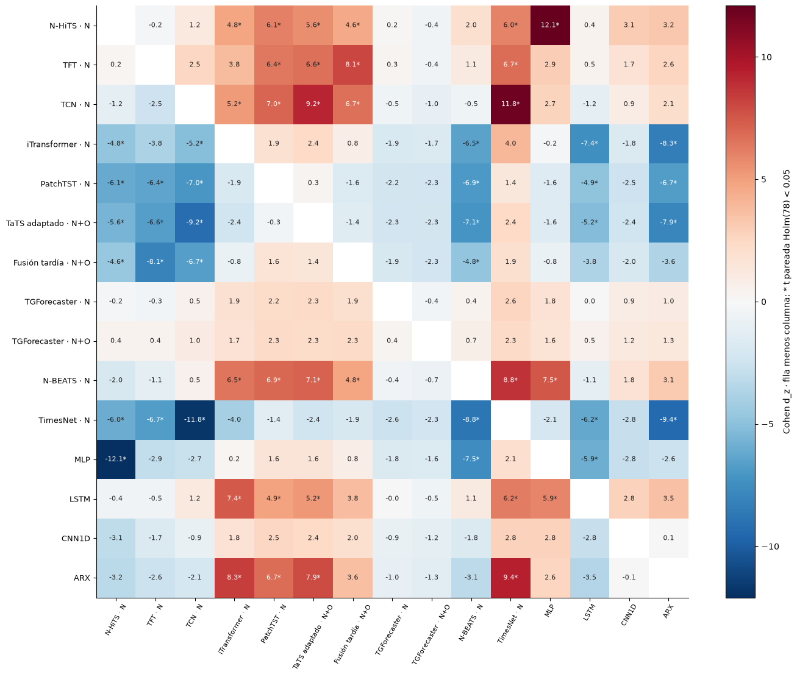
La t pareada con Holm rechaza en 30 de las 105 parejas. Los valores negativos favorecen al procedimiento de la fila; los asteriscos identifican rechazos sujetos a sus supuestos. El tamaño del efecto estandarizado y la relevancia práctica se valoran por separado.
Distribución de diferencias entre inicializaciones#
Los gráficos Q–Q comparan cada procedimiento con PatchTST numérico: 14 contrastes diagnósticos sobre cinco diferencias. La tabla anterior conserva las 105 parejas completas.
with np.load(g_result/'perdidas_y_bootstrap.npz',allow_pickle=False) as g_archive:
g_seed_matrix=g_archive['semillas'];g_seed_keys=g_archive['nombres'].tolist()[:len(g_keys)]
g_reference='adj_modelo6_20261112_1035__N'
fig,axes=plt.subplots(int(np.ceil((len(g_keys)-1)/3)),3,figsize=(16,18),layout='constrained')
for ax,g_k in zip(axes.flat,[k for k in g_keys if k!=g_reference]):
g_d=g_seed_matrix[:,g_seed_keys.index(g_k)]-g_seed_matrix[:,g_seed_keys.index(g_reference)]
stats.probplot(g_d,dist='norm',plot=ax)
ax.set(title=g_names[g_k],xlabel='Cuantil normal teórico',ylabel='MASE − control N')
for g_ax in list(axes.flat)[len(g_keys)-1:]:g_ax.set_visible(False)
display(fig);plt.close(fig)
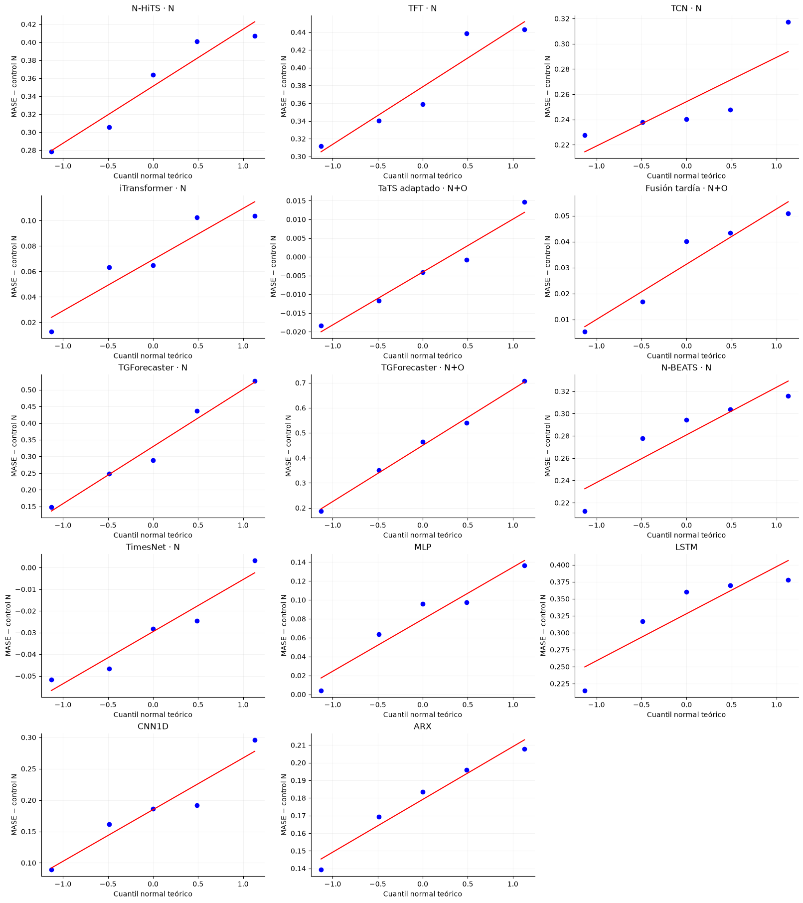
Cinco puntos ofrecen poca resolución para detectar desviaciones de normalidad. Estos gráficos describen las diferencias de inicialización y no sustituyen la inferencia temporal por bloques ni justifican elegir una prueba después de observar su resultado.
Rangos y conjunto de confianza del benchmark de referencia#
Friedman utiliza cinco bloques de semillas y quince procedimientos, condicionados a una misma serie. Nemenyi emplea rangos medios y una distancia crítica de 9,59 posiciones. Wilcoxon–Holm se conserva como alternativa post hoc.
print(f"Friedman: Q={e2_protocolo['friedman']:.6f}; p={e2_protocolo['p_Friedman']:.6g}")
print(f"Sensibilidad por permutación de etiquetas dentro de semilla: p={e2_protocolo['p_Friedman_permutacion']:.6g}")
print(f"Levene centrado en mediana: p={e2_protocolo['p_Levene']:.6f}")
e2_rangos = pd.read_csv(e2_RESULT / 'rangos.csv').sort_values('rango', ascending=False)
e2_fig, e2_ax = plt.subplots(figsize=(12, 6))
e2_ax.plot(e2_rangos.rango, np.arange(len(e2_rangos)), 'o', color='#287f83', ms=7)
e2_ax.set_yticks(np.arange(len(e2_rangos)), e2_rangos.modelo)
e2_ax.set_xlim(0.7, len(e2_rangos) + 0.7)
e2_ax.set_xticks(np.arange(1, len(e2_rangos) + 1))
e2_ax.set_xlabel('Rango medio entre cinco semillas; menor es mejor')
e2_cd = e2_protocolo['CD_Nemenyi']
e2_yy = len(e2_rangos) + 0.1
e2_ax.plot([1, 1 + e2_cd], [e2_yy, e2_yy], color='#333333', lw=2)
e2_ax.plot([1, 1], [e2_yy - 0.12, e2_yy + 0.12], color='#333333')
e2_ax.plot([1 + e2_cd, 1 + e2_cd], [e2_yy - 0.12, e2_yy + 0.12], color='#333333')
e2_ax.text(1 + e2_cd / 2, e2_yy + 0.2, f'Diferencia crítica Nemenyi: {e2_cd:.2f}', ha='center')
e2_ax.set_ylim(-0.6, len(e2_rangos) + 0.8)
e2_ax.grid(axis='x', alpha=0.15)
e2_fig.tight_layout()
display(e2_fig)
plt.close(e2_fig)
Friedman: Q=64.280000; p=2.05575e-08
Sensibilidad por permutación de etiquetas dentro de semilla: p=9.999e-05
Levene centrado en mediana: p=0.000548
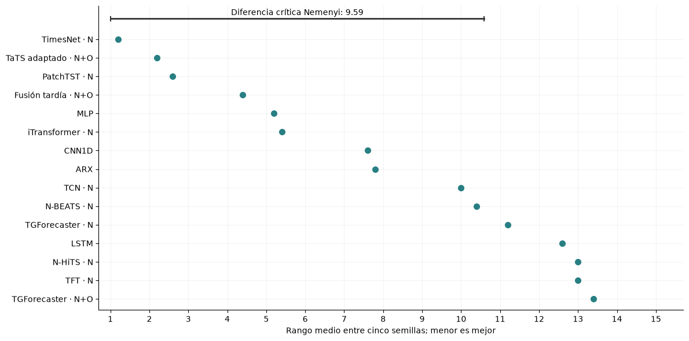
Friedman rechaza igualdad global de rangos (p=2,056e-08); su resultado no se extiende automáticamente a cada par. Levene centrado en mediana rechaza igualdad de varianzas (p=0,0005). Los rangos, contrastes pareados y tamaños del efecto se presentan por separado. El MCS utiliza pérdidas diarias y eliminación secuencial con bootstrap circular.
Post hoc completo de Nemenyi#
La matriz presenta las 105 comparaciones entre los quince procedimientos. Nemenyi controla su familia mediante la distribución del rango studentizado; no se añade Holm a esos valores p.
g_nemenyi=pd.read_csv(g_result/'nemenyi.csv')
assert len(g_nemenyi)==len(g_keys)*(len(g_keys)-1)//2
g_matrix=np.full((len(g_keys),len(g_keys)),np.nan)
for g_pair in g_nemenyi.itertuples():
g_i,g_j=g_keys.index(g_pair.A),g_keys.index(g_pair.B)
g_matrix[g_i,g_j]=g_matrix[g_j,g_i]=g_pair.p_Nemenyi
fig,ax=plt.subplots(figsize=(14,11),layout='constrained')
g_im=ax.imshow(g_matrix,cmap='viridis_r',vmin=0,vmax=1)
ax.set(xticks=range(len(g_keys)),yticks=range(len(g_keys)),xticklabels=[g_names[k] for k in g_keys],yticklabels=[g_names[k] for k in g_keys])
ax.tick_params(axis='x',rotation=60,labelsize=8);ax.tick_params(axis='y',labelsize=9);ax.grid(False)
for g_i in range(len(g_keys)):
for g_j in range(len(g_keys)):
if g_i!=g_j:
ax.text(g_j,g_i,f'{g_matrix[g_i,g_j]:.3f}'+('*' if g_matrix[g_i,g_j]<.05 else ''),ha='center',va='center',fontsize=7,color='white' if g_matrix[g_i,g_j]>.5 else '#222222')
fig.colorbar(g_im,ax=ax,label='p Nemenyi · * < 0,05')
fig.savefig(g_figures/'nemenyi_completo.png',dpi=160)
display(fig);plt.close(fig)
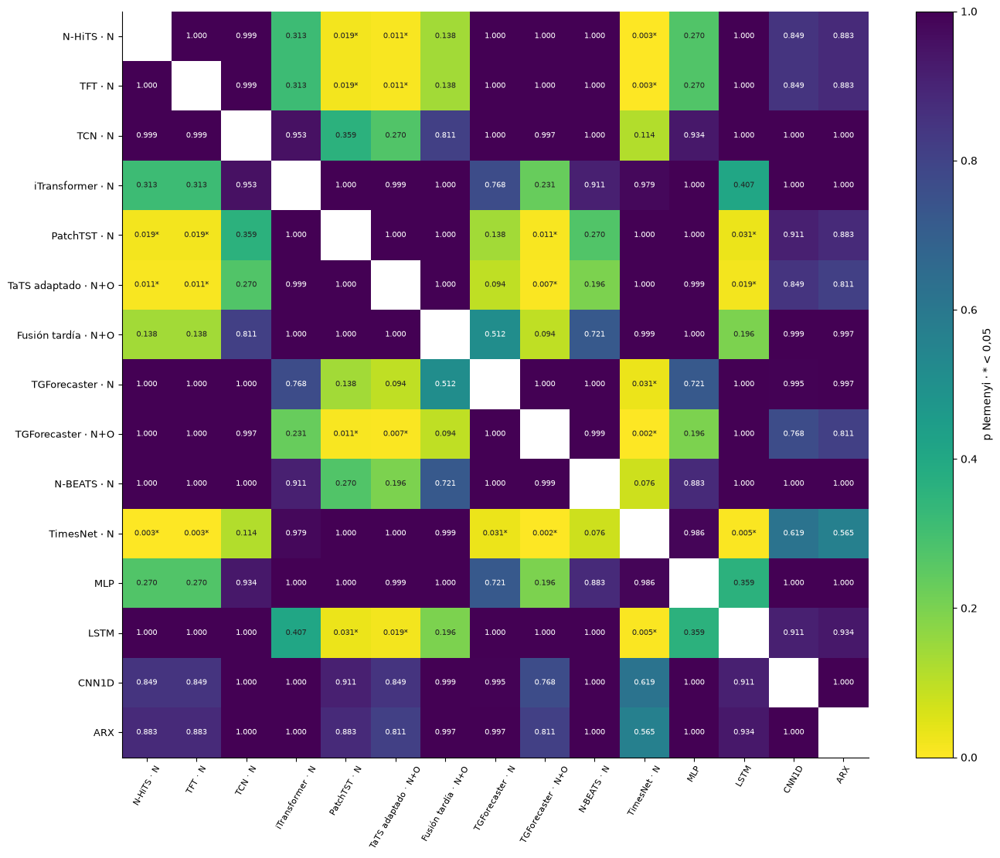
Nemenyi rechaza en 13 de las 105 parejas. El rechazo global de Friedman no se extiende automáticamente a cada par. Las celdas sin rechazo no acreditan equivalencia.
g_mcs=pd.read_csv(g_result/'mcs.csv').sort_values(['retenido_90','paso'],ascending=[False,True])
assert len(g_mcs)==len(g_benchmark) and set(g_mcs.clave)==set(g_benchmark.index)
g_mcs['Estado']=np.where(g_mcs.retenido_90,'Retenido','Excluido')
display(g_mcs[['modelo','Estado','paso','p_crudo','p_MCS']].rename(columns={'modelo':'Procedimiento','paso':'Paso','p_crudo':'p del paso','p_MCS':'p MCS'}).style.format({'p del paso':'{:.4g}','p MCS':'{:.4g}'}))
| Procedimiento | Estado | Paso | p del paso | p MCS | |
|---|---|---|---|---|---|
| 16 | TimesNet · N | Retenido | 17 | 1 | 1 |
| 0 | ingenuo 24h | Excluido | 1 | 9.999e-05 | 9.999e-05 |
| 1 | TFT · N | Excluido | 2 | 9.999e-05 | 9.999e-05 |
| 2 | TGForecaster · N+O | Excluido | 3 | 9.999e-05 | 9.999e-05 |
| 3 | LSTM | Excluido | 4 | 9.999e-05 | 9.999e-05 |
| 4 | N-HiTS · N | Excluido | 5 | 9.999e-05 | 9.999e-05 |
| 5 | TGForecaster · N | Excluido | 6 | 9.999e-05 | 9.999e-05 |
| 6 | CNN1D | Excluido | 7 | 9.999e-05 | 9.999e-05 |
| 7 | TCN · N | Excluido | 8 | 9.999e-05 | 9.999e-05 |
| 8 | N-BEATS · N | Excluido | 9 | 9.999e-05 | 9.999e-05 |
| 9 | ARX | Excluido | 10 | 9.999e-05 | 9.999e-05 |
| 10 | MLP | Excluido | 11 | 9.999e-05 | 9.999e-05 |
| 11 | ingenuo 168h | Excluido | 12 | 9.999e-05 | 9.999e-05 |
| 12 | Fusión tardía · N+O | Excluido | 13 | 9.999e-05 | 9.999e-05 |
| 13 | iTransformer · N | Excluido | 14 | 9.999e-05 | 9.999e-05 |
| 14 | TaTS adaptado · N+O | Excluido | 15 | 9.999e-05 | 9.999e-05 |
| 15 | PatchTST · N | Excluido | 16 | 9.999e-05 | 9.999e-05 |
El MCS evalúa los quince procedimientos aprendidos y las dos referencias. El MCS al 90 % retiene TimesNet · N. El conjunto está condicionado al periodo de prueba, a las cinco inicializaciones y al protocolo de remuestreo.
Diagnóstico de residuos y calibración#
Para el diagnóstico se utiliza el residuo diario promedio de la predicción media de las cinco semillas. Este promedio se restringe al diagnóstico: no reemplaza la definición del benchmark. Se evalúan Ljung–Box a 7, 14 y 28 días, Ljung–Box de residuos cuadrados, ARCH-LM con 14 rezagos, BDS con dimensión 2 y radio 1,5 desviaciones, Jarque–Bera y calibración de Mincer–Zarnowitz. Cada columna de diagnósticos se ajusta por Holm entre los quince procedimientos.
e2_diag = pd.read_csv(e2_RESULT / 'diagnostico_residuos.csv')
display(e2_diag[['modelo', 'p_LB14_Holm', 'p_ARCH_Holm', 'p_BDS_Holm', 'p_Mincer_Zarnowitz_Holm']].rename(columns={'modelo': 'Procedimiento', 'p_LB14_Holm': 'Ljung–Box (14)', 'p_ARCH_Holm': 'ARCH-LM', 'p_BDS_Holm': 'BDS (m=2)', 'p_Mincer_Zarnowitz_Holm': 'Mincer–Zarnowitz'}).style.format({e2_c: (lambda p: '<1e-300' if p==0 else f'{p:.3g}') for e2_c in ['Ljung–Box (14)', 'ARCH-LM', 'BDS (m=2)', 'Mincer–Zarnowitz']}))
| Procedimiento | Ljung–Box (14) | ARCH-LM | BDS (m=2) | Mincer–Zarnowitz | |
|---|---|---|---|---|---|
| 0 | N-HiTS · N | 6.72e-77 | 0.028 | 2.48e-10 | 2.6e-85 |
| 1 | TFT · N | 6.01e-62 | 0.57 | 8.86e-27 | 1.02e-81 |
| 2 | TCN · N | 2.14e-09 | 0.57 | 1.94e-07 | 5.36e-27 |
| 3 | iTransformer · N | 3.28e-15 | 7.11e-05 | 0.000209 | 2.01e-40 |
| 4 | PatchTST · N | 9.01e-14 | 0.212 | 4.7e-08 | 9.21e-23 |
| 5 | TaTS adaptado · N+O | 1.88e-30 | 0.028 | 1.11e-13 | 1.22e-09 |
| 6 | Fusión tardía · N+O | 3.47e-19 | 0.0226 | 1.34e-09 | 2.6e-11 |
| 7 | TGForecaster · N | 7.6e-92 | 5.3e-08 | 3.6e-86 | 1.56e-15 |
| 8 | TGForecaster · N+O | 2.03e-92 | 2.13e-10 | 1.62e-68 | 8.01e-31 |
| 9 | N-BEATS · N | 3.76e-41 | 1.03e-07 | 7.98e-32 | 2.07e-13 |
| 10 | TimesNet · N | 2.74e-13 | 0.212 | 5.02e-05 | 8.43e-08 |
| 11 | MLP | 3.98e-08 | 0.0416 | 0.000209 | 6.22e-20 |
| 12 | LSTM | 5.04e-17 | 0.113 | 1.92e-06 | 1.17e-39 |
| 13 | CNN1D | 2.93e-29 | 0.0416 | 1.43e-12 | 6.67e-25 |
| 14 | ARX | 1.46e-87 | 1.35e-07 | 3.51e-09 | 1.68e-92 |
Ljung–Box a 14 días detecta dependencia residual en 15 de los 15 procedimientos; Mincer–Zarnowitz rechaza la calibración conjunta de intercepto cero y pendiente uno en 15. BDS rechaza independencia en 15; con autocorrelación remanente, ese rechazo no demuestra por sí solo no linealidad. ARCH-LM rechaza ausencia de heterocedasticidad dinámica en 10 procedimientos. La dependencia remanente justifica emplear inferencia temporal robusta.
Mincer–Zarnowitz se ajusta sobre demanda diaria media expresada en unidades q168 para evitar una matriz de restricciones mal condicionada; el contraste nulo sigue siendo intercepto cero y pendiente uno. La covarianza es HAC de 13 días. El rango entre semillas describe la variación por inicialización. Los intervalos predictivos se obtienen mediante calibración temporal de residuos en la evaluación común de incertidumbre.
Variación entre fechas e inicializaciones#
La pérdida diaria de las cinco semillas se descompone, para los quince procedimientos, en efectos descriptivos de fecha, inicialización e interacción. No se supone independencia entre días ni se interpreta la descomposición como ANOVA inferencial.
g_components=[]
for g_k in g_keys:
g_values=np.abs(g_pred[g_k]-g_y[None]).mean(axis=2)/g_q
g_mean=g_values.mean()
g_components.append({'Procedimiento':g_names[g_k],
'Inicialización':np.mean((g_values.mean(axis=1)-g_mean)**2),
'Fecha':np.mean((g_values.mean(axis=0)-g_mean)**2),
'Interacción':np.mean((g_values-g_values.mean(axis=1)[:,None]-g_values.mean(axis=0)[None,:]+g_mean)**2)})
g_components=pd.DataFrame(g_components).set_index('Procedimiento')
fig,ax=plt.subplots(figsize=(14,6))
g_components.div(g_components.sum(axis=1),axis=0).plot.bar(stacked=True,ax=ax,rot=45)
ax.set(xlabel='',ylabel='Fracción de variación descriptiva');ax.tick_params(axis='x',labelsize=8)
fig.tight_layout();display(fig);plt.close(fig)
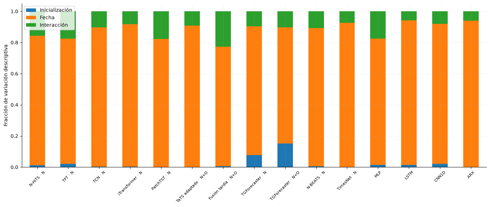
La componente de fecha recoge cambios de dificultad compartidos por las inicializaciones. La interacción representa cambios que no se explican por efectos aditivos de fecha y semilla. Estas fracciones complementan los intervalos de error; no estiman por sí solas la incertidumbre ante otros periodos o nuevas series.
Impacto de valores atípicos sobre el error e identidad de prueba#
Los umbrales de Tukey se fijan sobre log(y/y_lag168) en 2000–2017 y se aplican sin modificación a prueba. Se comparan errores en horas señaladas y restantes para los quince procedimientos; ninguna hora se elimina del benchmark.
g_series=pd.read_parquet(ROOT/'data/processed/panel_horario.parquet',columns=['y_demanda_real_kwh']).y_demanda_real_kwh
g_development=g_series.loc[g_series.index<'2018-01-01']
g_log=np.log(g_development/g_development.shift(168)).dropna()
g_q1,g_q3=g_log.quantile([.25,.75]);g_iqr=g_q3-g_q1
g_times=pd.DatetimeIndex([d+pd.Timedelta(hours=h) for d in g_dates for h in range(24)])
g_ref=g_series.reindex(g_times-pd.Timedelta(hours=168)).to_numpy().reshape(g_y.shape)
g_ratio=np.log(g_y/g_ref)
g_outlier=(g_ratio<g_q1-1.5*g_iqr)|(g_ratio>g_q3+1.5*g_iqr)
g_impact=[]
for g_k in g_keys:
g_e=np.abs(g_pred[g_k]-g_y[None]).mean(axis=0)
g_impact.append({'Procedimiento':g_names[g_k],'MAE atípicos (kWh)':g_e[g_outlier].mean(),
'MAE restantes (kWh)':g_e[~g_outlier].mean(),'Error en atípicos (%)':100*g_e[g_outlier].sum()/g_e.sum(),
'Cambio MAE al excluir (%)':100*(g_e[~g_outlier].mean()/g_e.mean()-1)})
g_impact=pd.DataFrame(g_impact)
display(g_impact.round(3))
print(f'Horas señaladas: {g_outlier.sum()} de {g_outlier.size} ({100*g_outlier.mean():.2f} %)')
g_digest=hashlib.sha256();g_digest.update(b'SIN-demand-test-v1\n')
g_digest.update(np.asarray(origen,dtype='<i8').tobytes());g_digest.update(np.asarray(g_y,dtype='<f8').tobytes())
assert g_digest.hexdigest()=='595f00dd186280542cfd7fed9a580ebe1b19c8cc4e0e742ef12e2e6d2eb0f49a'
Horas señaladas: 2520 de 35064 (7.19 %)
| Procedimiento | MAE atípicos (kWh) | MAE restantes (kWh) | Error en atípicos (%) | Cambio MAE al excluir (%) | |
|---|---|---|---|---|---|
| 0 | N-HiTS · N | 259088.956 | 217741.078 | 8.436 | -1.346 |
| 1 | TFT · N | 254279.389 | 224478.167 | 8.064 | -0.945 |
| 2 | TCN · N | 228006.232 | 197614.544 | 8.201 | -1.093 |
| 3 | iTransformer · N | 223235.218 | 155047.872 | 10.030 | -3.064 |
| 4 | PatchTST · N | 235910.931 | 137964.088 | 11.693 | -4.855 |
| 5 | TaTS adaptado · N+O | 211210.792 | 138931.434 | 10.532 | -3.604 |
| 6 | Fusión tardía · N+O | 236188.243 | 145213.019 | 11.186 | -4.309 |
| 7 | TGForecaster · N | 276892.459 | 211335.936 | 9.211 | -2.181 |
| 8 | TGForecaster · N+O | 277712.426 | 239249.447 | 8.247 | -1.142 |
| 9 | N-BEATS · N | 241980.878 | 202737.361 | 8.460 | -1.372 |
| 10 | TimesNet · N | 173536.898 | 135923.529 | 8.997 | -1.950 |
| 11 | MLP | 194785.909 | 159622.229 | 8.633 | -1.559 |
| 12 | LSTM | 262977.249 | 212067.367 | 8.761 | -1.696 |
| 13 | CNN1D | 264847.422 | 178665.536 | 10.297 | -3.351 |
| 14 | ARX | 248818.783 | 178589.098 | 9.738 | -2.749 |
Los umbrales señalan el 7,19 % de las horas. La tabla muestra su contribución al error y cuánto cambiaría el MAE al excluirlas; es un análisis de sensibilidad, no una propuesta de depuración de prueba. El efecto varía entre procedimientos y no permite atribuir toda la brecha de generalización a atípicos.
La huella SHA-256 de orígenes y etiquetas de prueba es 595f00dd186280542cfd7fed9a580ebe1b19c8cc4e0e742ef12e2e6d2eb0f49a. Identifica su contenido, sin acreditar por sí sola la fecha de congelación.
Importancia de variables en los modelos ampliados#
Se trasladan circularmente grupos de entradas entre orígenes del mismo año con separación mínima de 28 días, manteniendo pesos, escaladores, orden interno de la historia y etiqueta. Los nueve grupos incluyen perfil y nivel de demanda, precio, reservas, aportes, temperatura, humedad, precipitación y calendario; cada grupo climático reúne las ocho ciudades.
Se utilizan cinco inicializaciones de los once procedimientos ampliados y 192 fechas: días 1, 8, 15 y 22 de cada mes de 2022–2025. Los donantes proceden de los 1461 orígenes del periodo; se evalúan tres desplazamientos y se promedian primero las semillas.
El registro de reproducción conserva 45 comprobaciones de nueve procedimientos sobre los orígenes completos. N-BEATS · N y TimesNet · N incorporan sus basales CPU en las 192 fechas del diagnóstico. TimesNet utiliza lote 1 tanto en el basal como en cada perturbación. La referencia de toda perturbación es la predicción del mismo checkpoint y motor. La hora del día es invariante entre estos orígenes diarios y su importancia no queda identificada.
d_root=ROOT/'results/diagnosticos_ampliados'
d_imp=pd.read_csv(d_root/'importancia_resumen.csv')
d_sens=pd.read_csv(d_root/'sensibilidad_resumen.csv')
d_lat=pd.read_csv(d_root/'latencia_resumen.csv').set_index('clave')
d_names=pd.read_csv(ROOT/'results/evaluacion_e2/benchmark.csv').set_index('clave').modelo.to_dict()
from matplotlib.colors import SymLogNorm
d_groups=['perfil_demanda','nivel_ventana','precio','reservas','aportes','temperatura','humedad','precipitacion','calendario']
d_labels=['Perfil de demanda','Nivel de ventana','Precio','Reservas hídricas','Aportes hídricos','Temperatura','Humedad','Precipitación','Calendario']
d_keys=[k for k in g_keys if k in set(d_imp.clave)]
d_matrix=d_imp.pivot(index='clave',columns='grupo',values='cambio_pct').reindex(index=d_keys,columns=d_groups)
d_lim=max(abs(d_matrix.to_numpy()).max(),1.)
fig,ax=plt.subplots(figsize=(15,8),layout='constrained')
d_im=ax.imshow(d_matrix,cmap='RdBu_r',norm=SymLogNorm(linthresh=1,vmin=-d_lim,vmax=d_lim))
ax.set(xticks=range(len(d_groups)),yticks=range(len(d_keys)),xticklabels=d_labels,yticklabels=[d_names[k] for k in d_keys])
ax.tick_params(axis='x',rotation=35,labelsize=9);ax.tick_params(axis='y',labelsize=9);ax.grid(False)
for i in range(len(d_keys)):
for j in range(len(d_groups)):
v=d_matrix.iloc[i,j];ax.text(j,i,f'{v:.2g}',ha='center',va='center',fontsize=8,color='white' if abs(v)>d_lim/5 else '#151515')
fig.colorbar(d_im,ax=ax,label='Cambio del MAE (%) · escala simétrica logarítmica fuera de ±1 %')
display(fig);plt.close(fig)
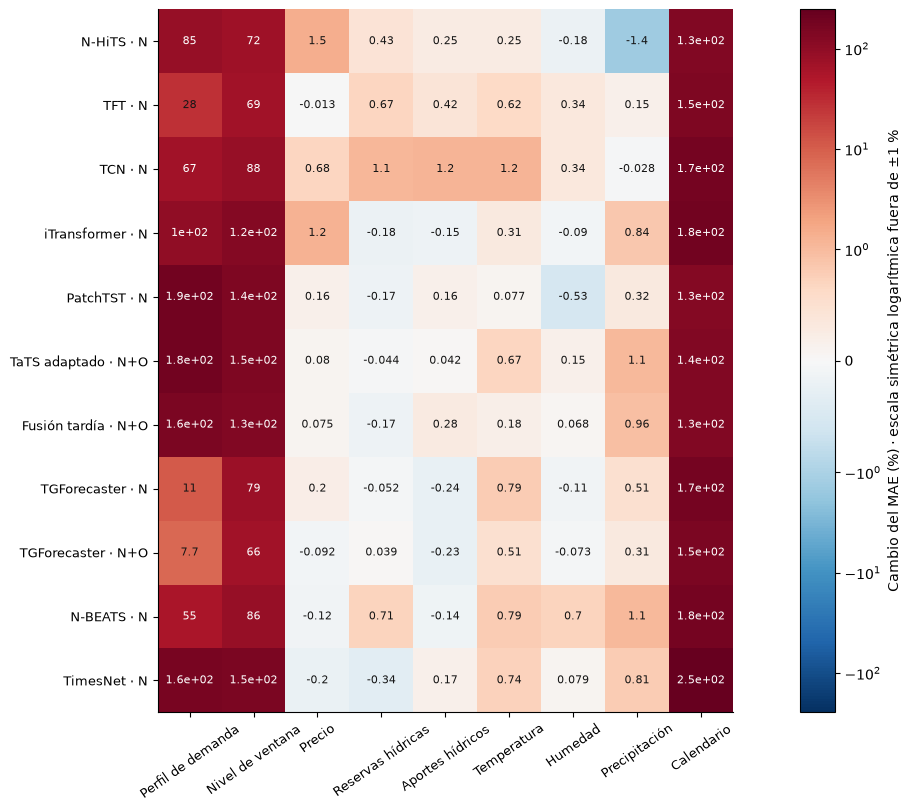
El mayor deterioro aparece al perturbar calendario en TimesNet · N (246.52 %). Entre las covariables externas, el mayor incremento corresponde a precio en N-HiTS · N (1.48 %). Las celdas negativas indican que la perturbación redujo el error en estas fechas; las próximas a cero describen poca sensibilidad bajo este mecanismo, sin demostrar irrelevancia intrínseca. El nivel participa también en la restitución a kWh y su efecto no es atribuible solo a una entrada explícita de la red.
La permutación rompe combinaciones observadas de calendario, demanda y exógenas; es una dependencia condicional del modelo, no un efecto causal ni el resultado de retirar variables y reentrenar. En los canales textuales también puede cambiar la consulta de relevancia al cambiar la historia. Los CSV conservan los tres desplazamientos y su p10–p90 después de promediar semillas; ese rango no es un intervalo de confianza temporal. Los diagnósticos de las cuatro familias base utilizan 1.461 fechas y diez desplazamientos, por lo que sus magnitudes deben leerse con ese alcance distinto.
Sensibilidad al contenido de los documentos oficiales#
Se mantienen la historia numérica, el calendario, los pesos y las listas documentales de cada origen. Se contrastan tres intervenciones: eliminar documentos y su presencia; anular únicamente sus vectores manteniendo la presencia; y sustituir el contenido por documentos de la misma fuente con disponibilidad declarada anterior a 2022, con tres remuestreos reproducibles con reemplazo. Este último control conserva volumen y fuente, pero rompe la correspondencia entre el contenido y el acontecimiento reciente. No es una permutación biyectiva ni introduce documentos con fecha declarada posterior al origen. El control a cero retiene los sesgos aprendidos y distingue contenido de presencia.
El análisis incluye los 1.461 días y las cinco semillas de TaTS, fusión tardía y TGForecaster con documentos. La variación del error es respecto del mismo procedimiento con sus documentos originales; no representa la comparación N frente a N+O entrenados por separado. Los IC95 % se obtienen mediante 10.000 remuestras circulares pareadas de 14 días, promediando antes semillas y repeticiones del placebo.
d_conditions=['sin_documentos','contenido_cero','contenido_historico']
d_clabels=['Sin documentos','Contenido cero','Contenido histórico']
d_text=d_sens[d_sens.condicion.isin(d_conditions)]
d_textkeys=[k for k in g_keys if k in set(d_text.clave)]
fig,axes=plt.subplots(1,len(d_textkeys),figsize=(16,5),layout='constrained')
for ax,k in zip(np.atleast_1d(axes),d_textkeys):
s=d_text[d_text.clave.eq(k)].set_index('condicion').reindex(d_conditions)
ax.errorbar(s.cambio_pct,np.arange(3),xerr=np.vstack([s.cambio_pct-s.IC95_inf,s.IC95_sup-s.cambio_pct]),fmt='o',capsize=4,color='#258a83')
ax.axvline(0,color='#777',linestyle='--',linewidth=1);ax.set(yticks=range(3),yticklabels=d_clabels,xlabel='Cambio del MAE (%) e IC95 % temporal',title=d_names[k])
ax.tick_params(axis='y',labelsize=9)
display(fig);plt.close(fig)

En Fusión tardía · N+O, retirar documentos cambia el MAE +11.61 % (IC95 % [+10.59; +12.65]) y sustituir su contenido por texto histórico lo cambia +1.76 % (IC95 % [+0.98; +2.55]). La sustitución modifica el pronóstico en promedio 35923.1 kWh por intervalo. En TaTS adaptado · N+O, retirar documentos cambia el MAE +17.07 % (IC95 % [+13.46; +21.48]) y sustituir su contenido por texto histórico lo cambia +0.02 % (IC95 % [+0.00; +0.03]). La sustitución modifica el pronóstico en promedio 476.8 kWh por intervalo. En TGForecaster · N+O, retirar documentos cambia el MAE +30.39 % (IC95 % [+29.02; +31.84]) y sustituir su contenido por texto histórico lo cambia -1.65 % (IC95 % [-2.45; -0.84]). La sustitución modifica el pronóstico en promedio 57748.3 kWh por intervalo. La comparación con contenido cero completa la separación entre señal semántica y activación de la rama. Un cambio pequeño de pronóstico con texto sustituido sugiere poca sensibilidad al contenido bajo este control; un cambio grande demuestra dependencia, pero no garantiza que esa dependencia sea útil. La dependencia de una rama puede coexistir con un error mayor que el control N ajustado por separado. Los intervalos son puntuales y exploratorios, condicionados a las inicializaciones disponibles; no se emplean para seleccionar arquitecturas ni para declarar equivalencia dentro del margen del estudio.
En TaTS, el reemplazo histórico cambia el MAE apenas +0.015 % y desplaza el pronóstico medio 476.8 kWh. La sensibilidad a anular el canal no implica, por tanto, una utilización comparable de la información específica del día: gran parte de su efecto se conserva con contenido antiguo de la misma fuente. En TGForecaster con documentos, el contenido histórico reduce descriptivamente el error (-1.65 %) frente al original. El resultado cuestiona la utilidad de su alineación reciente bajo este control, sin convertir el placebo en una nueva configuración seleccionada.
Descripciones estáticas de los canales en TGForecaster#
Las dos variantes TGForecaster usan 33 descripciones de canales. Se evalúan a cero y con tres permutaciones reproducibles de su asociación a los canales. Se altera su uso en la memoria y en las consultas del horizonte; la descripción del objetivo en el mecanismo de relevancia documental permanece fija. Se conserva el canal documental original en N+O. Es una intervención sobre la identificación estática de variables, distinta de retirar noticias recientes; puede producir entradas alejadas de las observadas durante el ajuste.
d_stat=d_sens[d_sens.condicion.str.startswith('descripciones_')]
d_statkeys=[k for k in g_keys if k in set(d_stat.clave)]
fig,axes=plt.subplots(1,len(d_statkeys),figsize=(13,4),layout='constrained')
for ax,k in zip(np.atleast_1d(axes),d_statkeys):
s=d_stat[d_stat.clave.eq(k)].set_index('condicion').reindex(['descripciones_cero','descripciones_permutadas'])
ax.errorbar(s.cambio_pct,np.arange(2),xerr=np.vstack([s.cambio_pct-s.IC95_inf,s.IC95_sup-s.cambio_pct]),fmt='o',capsize=4,color='#447ba0')
ax.axvline(0,color='#777',linestyle='--',linewidth=1)
ax.set(yticks=range(2),yticklabels=['Descripciones cero','Descripciones permutadas'],xlabel='Cambio del MAE (%) e IC95 % temporal',title=d_names[k])
display(fig);plt.close(fig)

En TGForecaster · N, anular las descripciones cambia el MAE +167.27 % y permutarlas +4.20 %. En TGForecaster · N+O, anular las descripciones cambia el MAE +69.97 % y permutarlas +9.50 %. La sensibilidad a estas descripciones no acredita por sí misma que los documentos variables en el tiempo mejoren el pronóstico. El canal estático y el documental tienen funciones distintas; sus efectos se presentan por separado.
Techo empírico de desempeño y distancia γ#
La complementariedad entre procedimientos permite construir una referencia optimista para los 1.461 orígenes diarios de 2022–2025. Se incluyen las diez semillas de M4, las cinco de cada uno de los quince comparadores aprendidos y las dos referencias estacionales. La pérdida de cada procedimiento se calcula primero por semilla y día; después se promedian las semillas. Se conserva el horizonte de 24 horas y la escala semanal de entrenamiento \(Q=215.617,90\) kWh:
La referencia selecciona la menor pérdida entre los 18 procedimientos para cada origen, después de observar los errores:
Este selector retrospectivo delimita el margen dentro del conjunto evaluado; no constituye un pronosticador disponible en el origen ni una estimación del error irreducible. El mínimo se toma sobre las pérdidas promedio de semillas, sin seleccionar la mejor semilla ni combinar predicciones con información futura.
La distancia normalizada utiliza como base el ingenuo semanal. Dado que el MASE se minimiza, la expresión en términos de error es:
Un valor de cero coincide con la referencia empírica y uno coincide con el ingenuo semanal. Los valores superiores a uno indican mayor error que esa base. \(1-\gamma_m\) expresa la proporción de la brecha cerrada desde la base. Los IC95 % puntuales proceden de 9.999 réplicas de bootstrap estacionario pareado, con longitud media de bloque de 14 días. Cada réplica comparte fechas entre los 18 procedimientos y su mínimo diario. Los intervalos están condicionados a los pesos y semillas conservados.
from pathlib import Path
import numpy as np
import pandas as pd
import matplotlib.pyplot as plt
from IPython.display import display
techo_dir = Path("_static/resultados/techo_empirico")
if not techo_dir.exists():
techo_dir = Path("book") / techo_dir
techo_metricas = pd.read_csv(techo_dir / "metricas_gamma.csv").sort_values("gamma")
techo_fig, techo_ax = plt.subplots(figsize=(11, 8.5))
for techo_i, techo_r in enumerate(techo_metricas.itertuples()):
techo_color = "#0b3f54" if techo_r.clave == "m4_n" else "#af5846" if techo_r.clave == "nuevo_timesnet__N" else "#83a8b7"
techo_ax.errorbar(techo_r.gamma, techo_i,
xerr=np.array([[techo_r.gamma-techo_r.gamma_ic_inf],
[techo_r.gamma_ic_sup-techo_r.gamma]]),
fmt="o", color=techo_color, capsize=3, markersize=6)
techo_ax.set_yticks(range(len(techo_metricas)), techo_metricas.modelo)
techo_ax.invert_yaxis()
techo_ax.axvline(0, color="#126c70", linewidth=1, label="Referencia empírica · γ=0")
techo_ax.axvline(1, color="#65767d", linestyle="--", label="Ingenuo semanal · γ=1")
techo_ax.set(xlabel="Distancia γ · menor es mejor", title="Margen restante respecto de la referencia empírica diaria")
techo_ax.grid(axis="x", alpha=.2)
techo_ax.legend(loc="upper right", fontsize=9)
techo_fig.tight_layout()
display(techo_fig)
plt.close(techo_fig)
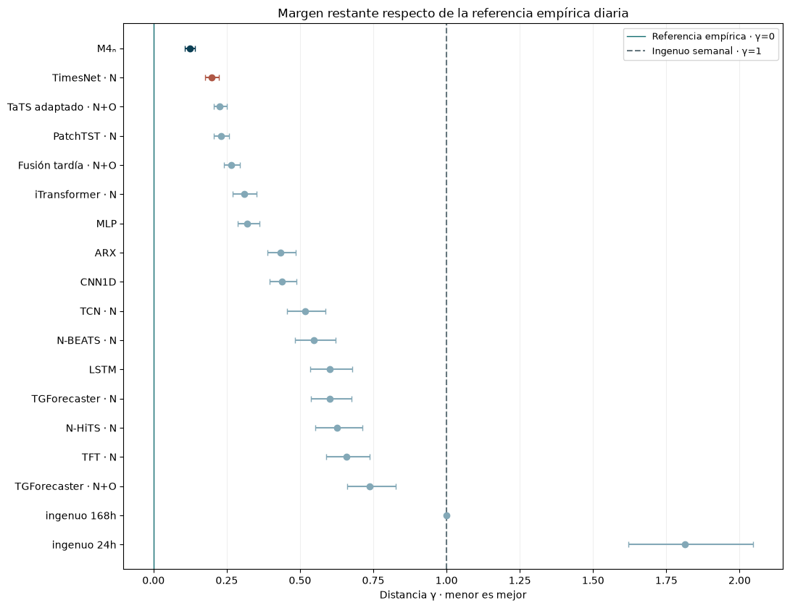
La referencia empírica alcanza MASE 0,4675, IC95 % [0,4425; 0,4922], equivalente a un MAE de 0,100810 GWh por intervalo. M4 registra MASE 0,5770 y γ = 0,1234, IC95 % [0,1075; 0,1414]. Cierra el 87,66 % de la brecha desde el ingenuo semanal, cuyo MASE de prueba es 1,3549. TimesNet registra γ = 0,1976. La escala semanal se fija con entrenamiento; por ello, el MASE del ingenuo semanal en prueba puede diferir de uno.
La distancia de M4 a la referencia es 0,1095 unidades MASE, o 0,023609 GWh por intervalo. Esa diferencia equivale al 18,98 % de su propio error, mientras que γ normaliza respecto a la brecha entre la base semanal y la referencia. El margen optimista no implica que una regla causal pueda alcanzar toda esa reducción.
techo_anual = pd.read_csv(techo_dir / "resultados_anuales.csv")
techo_ganadores = techo_metricas.sort_values("dias_minimo", ascending=False)
techo_comp, techo_axes = plt.subplots(1, 2, figsize=(16, 8), gridspec_kw={"width_ratios": [1.2, 1]})
techo_axes[0].barh(techo_ganadores.modelo, techo_ganadores.porcentaje_dias_minimo,
color=["#0b3f54" if k == "m4_n" else "#83a8b7" for k in techo_ganadores.clave])
techo_axes[0].invert_yaxis()
techo_axes[0].set(title="Procedimiento con menor pérdida diaria", xlabel="Porcentaje de los 1.461 orígenes (%)")
for techo_col, techo_name, techo_color in [
("referencia_empirica", "Referencia empírica", "#126c70"),
("M4_N", "M4ₙ", "#0b3f54"), ("TimesNet", "TimesNet · N", "#af5846"),
("ingenuo_semanal", "Ingenuo semanal", "#96a4ab")]:
techo_axes[1].plot(techo_anual.anio, techo_anual[techo_col], "o-",
label=techo_name, color=techo_color)
techo_axes[1].set(title="Error por año de prueba", xlabel="Año", ylabel="MASE · escala fija de entrenamiento")
techo_axes[1].set_xticks(techo_anual.anio)
techo_axes[1].legend(fontsize=9)
for techo_ax in techo_axes:
techo_ax.grid(axis="x" if techo_ax is techo_axes[0] else "y", alpha=.2)
techo_comp.tight_layout()
display(techo_comp)
plt.close(techo_comp)
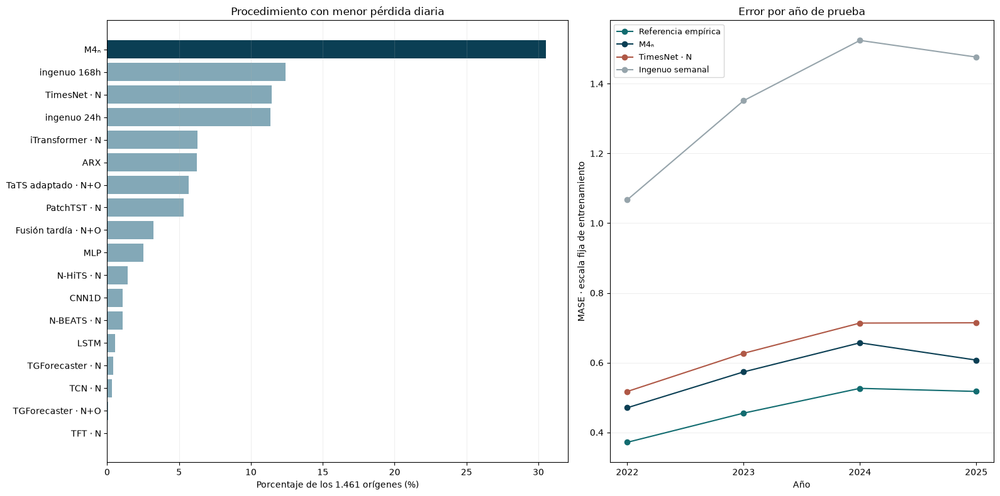
M4 presenta la menor pérdida en 446 días (30,53 %). Los dos ingenuos reúnen 347 días (23,75 %), aunque su error promedio es mayor. Ningún procedimiento concentra todos los mínimos diarios: las diferencias de perfil aportan complementariedad. La referencia permanece por debajo de M4 y TimesNet en cada año. La frecuencia de mínimos mide regularidad del liderazgo diario; no sustituye la magnitud del error ni los contrastes de superioridad.
Al incorporar M4 al conjunto, el MASE de la referencia disminuye de 0,4880 a 0,4675. El techo empírico depende, por tanto, de los procedimientos incluidos y del periodo considerado.
Distancias e intervalos · Pérdidas diarias · Resultados anuales · Bootstrap · Protocolo · Verificación y huellas.
Código de cálculo reproducible#
El siguiente código reconstruye las pérdidas de M4 desde sus diez archivos de predicción, comprueba su identidad con el benchmark, calcula el mínimo por origen y remuestrea conjuntamente las fechas. No ejecuta entrenamiento ni inferencia neuronal.
"""Techo empírico y gamma desde pérdidas conservadas; no ejecuta modelos."""
from __future__ import annotations
import hashlib
import json
from pathlib import Path
import numpy as np
import pandas as pd
ROOT = Path(__file__).resolve().parents[1]
OUT_NAME = 'techo_empirico_20261124'
Q = 215617.90361589016
BASE = 'ingenuo_168h'
M4 = 'm4_n'
def calcular(root=ROOT):
root = Path(root)
out = root / 'results' / OUT_NAME
out.mkdir(parents=True, exist_ok=True)
sources = [root / 'results/evaluacion_e2/perdidas_y_bootstrap.npz',
root / 'results/evaluacion_e2/benchmark.csv',
root / 'results/cierre_e3_sin_entrenar_20261124/perdidas_diarias.csv']
benchmark = pd.read_csv(sources[1]).set_index('clave')
with np.load(sources[0], allow_pickle=False) as z:
days = pd.to_datetime(z['origen'], utc=True).tz_convert('America/Bogota')
losses = pd.DataFrame(z['loss'], columns=z['nombres'], index=days)
losses = losses.rename(columns={r.modelo: k for k, r in benchmark.iterrows()})
assert set(losses) == set(benchmark.index)
dates = days.strftime('%Y-%m-%d').to_numpy()
assert len(days) == 1461 and days.is_unique and days.is_monotonic_increasing
assert (np.diff(days.asi8) == 86400 * 10**9).all()
assert (dates[0], dates[-1]) == ('2022-01-01', '2025-12-31')
for key in benchmark.index:
assert abs(losses[key].mean() - benchmark.loc[key, 'MASE']) < 2e-6, key
# Reconstrucción de las diez pérdidas individuales de M4, antes de promediar.
per_seed = []
truth = None
for seed in range(101, 111):
path = root / f'results/m4_cierre_gpu_20261123/reducido_B/colombia/prueba/M4_N_semilla_{seed}.npz'
sources.append(path)
with np.load(path, allow_pickle=False) as z:
assert np.array_equal(z['dia'], dates)
y, pred = z['y'].astype(float), z['pred'].astype(float)
assert y.shape == pred.shape == (1461, 24)
if truth is None:
truth = y
else:
assert np.array_equal(y, truth)
per_seed.append(np.abs(pred - y).mean(axis=1) / Q)
losses[M4] = np.mean(per_seed, axis=0)
saved = pd.read_csv(sources[2])
assert set(saved) == set(losses)
assert np.allclose(saved[losses.columns], losses.to_numpy(), rtol=1e-11, atol=1e-12)
assert abs(losses[M4].mean() - .5770369087419158) < 1e-10
order = losses.mean().sort_values().index.tolist()
losses = losses[order]
values = losses.to_numpy()
assert values.shape == (1461, 18) and np.isfinite(values).all() and (values >= 0).all()
oracle = values.min(axis=1)
oracle_without_m4 = losses.drop(columns=M4).min(axis=1).to_numpy()
means = values.mean(axis=0)
ref = oracle.mean()
base_i = order.index(BASE)
best_i = int(means.argmin())
assert order[best_i] == M4 and means[base_i] > ref
gamma = (means - ref) / (means[base_i] - ref)
assert np.allclose(ref + gamma * (means[base_i] - ref), means)
assert np.all(oracle[:, None] <= values + 1e-12)
# Bootstrap estacionario pareado: el mismo día/bloque para los 18 métodos
# y para su mínimo retrospectivo. Las semillas conservadas permanecen fijas.
B, block, seed = 9999, 14, 20261124
rng = np.random.default_rng(seed)
indices = np.empty((B, len(days)), dtype=np.int32)
indices[:, 0] = rng.integers(len(days), size=B)
for t in range(1, len(days)):
restart = rng.random(B) < 1 / block
indices[:, t] = np.where(restart, rng.integers(len(days), size=B),
(indices[:, t - 1] + 1) % len(days))
combined = np.column_stack([values, oracle, oracle_without_m4])
boot = np.empty((B, combined.shape[1]))
for start in range(0, B, 128):
boot[start:start + 128] = combined[indices[start:start + 128]].mean(axis=1)
boot_ref = boot[:, len(order)]
boot_gamma = (boot[:, :len(order)] - boot_ref[:, None]) / (boot[:, base_i] - boot_ref)[:, None]
assert np.isfinite(boot_gamma).all() and np.all(boot[:, base_i] > boot_ref)
ci_error = np.quantile(boot[:, :len(order)], [.025, .975], axis=0)
ci_gamma = np.quantile(boot_gamma, [.025, .975], axis=0)
ci_ref = np.quantile(boot_ref, [.025, .975])
# Reparto fraccional de empates; no se favorece el orden de las columnas.
tied = np.isclose(values, oracle[:, None], atol=1e-12, rtol=0)
wins = (tied / tied.sum(axis=1, keepdims=True)).sum(axis=0)
names = benchmark.modelo.to_dict() | {M4: 'M4ₙ'}
seeds = benchmark.semillas.to_dict() | {M4: 10}
rows = pd.DataFrame([dict(clave=k, modelo=names[k], semillas=int(seeds[k]),
MASE=float(means[i]), MAE_kWh=float(means[i] * Q),
MASE_ic_inf=float(ci_error[0, i]), MASE_ic_sup=float(ci_error[1, i]),
gamma=float(gamma[i]), gamma_ic_inf=float(ci_gamma[0, i]), gamma_ic_sup=float(ci_gamma[1, i]),
distancia_MASE=float(means[i] - ref), dias_minimo=float(wins[i]),
porcentaje_dias_minimo=float(100 * wins[i] / len(days))) for i, k in enumerate(order)])
rows.to_csv(out / 'metricas_gamma.csv', index=False)
daily = losses.copy()
daily.insert(0, 'dia', dates)
daily['referencia_empirica'] = oracle
daily['referencia_sin_M4'] = oracle_without_m4
daily.to_csv(out / 'perdidas_diarias.csv', index=False)
annual = pd.DataFrame({'anio': days.year, 'referencia_empirica': oracle,
'M4_N': losses[M4].to_numpy(), 'TimesNet': losses['nuevo_timesnet__N'].to_numpy(),
'ingenuo_semanal': losses[BASE].to_numpy()}).groupby('anio').mean().reset_index()
annual.to_csv(out / 'resultados_anuales.csv', index=False)
losses.corr(method='spearman').to_csv(out / 'correlaciones_perdidas.csv', index_label='clave')
np.savez_compressed(out / 'bootstrap.npz', claves=np.array(order), MASE=boot[:, :len(order)],
referencia=boot_ref, gamma=boot_gamma, referencia_sin_M4=boot[:, -1])
record = dict(fecha='2026-11-24', periodo=['2022-01-01', '2025-12-31'], dias=len(days),
procedimientos=len(order), escala_Q_kWh=Q, baseline=BASE, mejor=order[best_i],
referencia_MASE=float(ref), referencia_MAE_kWh=float(ref * Q),
referencia_ic95_MASE=ci_ref.tolist(), referencia_sin_M4_MASE=float(oracle_without_m4.mean()),
mejor_MASE=float(means[best_i]), baseline_MASE=float(means[base_i]),
gamma_mejor=float(gamma[best_i]), gamma_mejor_ic95=ci_gamma[:, best_i].tolist(),
fraccion_brecha_cerrada=float(1 - gamma[best_i]),
reduccion_adicional_relativa=float((means[best_i] - ref) / means[best_i]),
diferencia_MAE_kWh=float((means[best_i] - ref) * Q))
protocol = dict(**record, horizonte_horas=24, unidad='origen diario',
perdida='Media de MAE por semilla y origen, dividida por Q fijo de entrenamiento',
referencia='Media temporal del mínimo entre las 18 pérdidas diarias promedio de semillas',
formula_gamma='(E_modelo-E_referencia)/(E_ingenuo_semanal-E_referencia)',
sentido='Menor gamma indica menor margen restante; baseline semanal=1; referencia empírica=0',
bootstrap=dict(tipo='estacionario pareado', replicas=B, longitud_media_bloque_dias=block,
semilla=seed, nivel=.95, intervalo='percentil puntual', remuestreo_semillas=False),
alcance='Referencia retrospectiva condicionada a los procedimientos, pesos, semillas y fechas conservados; no estima el error de Bayes ni constituye un predictor implementable',
entrenamiento=False, inferencia_neuronal=False, seleccion_arquitecturas=False)
hashes = {p.relative_to(root).as_posix(): hashlib.sha256(p.read_bytes()).hexdigest() for p in sources}
checks = dict(fechas_unicas_y_completas=True, paridad_benchmark=True, paridad_perdidas_M4=True,
minimo_por_origen_verificado=True, identidad_gamma=True, n_semillas_M4=10,
n_comparadores_aprendidos=15, n_referencias_deterministas=2,
empates=int((tied.sum(axis=1) > 1).sum()), fuentes_sha256=hashes,
resultados_sha256={p.name: hashlib.sha256(p.read_bytes()).hexdigest() for p in out.glob('*.csv')})
for name, value in [('resumen.json', record), ('protocolo.json', protocol), ('verificacion.json', checks)]:
(out / name).write_text(json.dumps(value, ensure_ascii=False, indent=2) + '\n', encoding='utf-8')
print(json.dumps(record, ensure_ascii=False, indent=2))
return record
if __name__ == '__main__':
calcular()
python scripts/calcular_techo_empirico.py
python scripts/integrar_techo_empirico.py
Robustez ante perturbaciones controladas#
La evaluación utiliza 96 orígenes diarios de 2022–2025: los días 1 y 15 de cada mes. Se conservan cinco realizaciones por procedimiento aprendido, dos referencias estacionales, las arquitecturas y los escaladores. En M4 se restauran las semillas 101–105 con sus tres expertos y M1; los comparadores utilizan 1000–1004. Cada salida contiene las 24 horas siguientes. TimesNet se ejecuta con lote uno.
Las ventanas originales contienen 483,840 celdas numéricas y 0 ausencias (0.00 %). Los impulsos se imponen en nueve de las 168 horas (5.36 %) de cada ventana y sobre las variables numéricas, una densidad fijada para el estrés.
Las perturbaciones representan escenarios de estrés impuestos. La frecuencia natural de fallos y extremos no se estima con esta simulación; el benchmark sobre datos originales conserva su interpretación principal.
Se aplican cuatro perturbaciones con tres severidades: ruido gaussiano de amplitud 0,10, 0,25 y 0,50 veces la desviación de entrenamiento; impulsos de 1, 3 y 5 desviaciones en nueve de las 168 horas; interrupciones de las últimas 6, 24 y 48 horas; y pérdida documental con probabilidades 0,25, 0,50 y 0,75. El ruido, los impulsos y la pérdida de documentos tienen tres réplicas. Las realizaciones se comparten entre modelos y son anidadas entre severidades. Se conservan los límites físicos de las variables.
Las desviaciones se calculan con datos de 2008–2017 y solo definen la magnitud de las perturbaciones. En una interrupción, la demanda se mantiene en su último valor anterior y las covariables siguen el tratamiento de ausencia del checkpoint. El calendario permanece conocido. En M4 se recalculan expertos, M1 y consulta de memoria; el archivo histórico y los errores ya observables se mantienen disponibles. La pérdida textual retira documentos sin cambiar las fechas ni el contenido de los restantes.
El MAE y el RMSE de las descargas se expresan en kWh por intervalo. El MASE es adimensional y conserva la escala semanal de entrenamiento de 215.617,90 kWh. Primero se agregan los 24 errores del origen y las réplicas; después se promedian fechas e inicializaciones. Los intervalos al 95 % se obtienen con 9.999 remuestreos conjuntos: bloques circulares de tres meses y remuestreo de cinco semillas dentro de cada modelo. Cada mes contiene los dos orígenes prefijados. Este diagnóstico corresponde al panel de fechas y realizaciones indicado.
from pathlib import Path
import numpy as np
import pandas as pd
import matplotlib.pyplot as plt
from IPython.display import display
rob_dir = Path("_static/resultados/robustez")
if not rob_dir.exists():
rob_dir = Path("book") / rob_dir
rob_resumen = pd.read_csv(rob_dir / "resumen.csv")
rob_original = rob_resumen.query("nivel == 0").sort_values("MASE")
rob_orden = rob_original.clave.tolist()
rob_nombres = rob_original.set_index("clave").modelo.to_dict()
rob_tipos = ["ruido", "interrupcion", "atipicos", "perdida_texto"]
rob_titulos = ["Ruido en la historia numérica", "Interrupción de datos", "Impulsos en las entradas", "Pérdida de documentos"]
rob_ejes = ["Amplitud / DE de entrenamiento", "Horas finales sin observación", "Impulso / DE de entrenamiento", "Probabilidad de pérdida documental"]
rob_colores = {k: plt.get_cmap("tab20")(i) for i, k in enumerate(rob_orden)}
rob_colores["m4_n"] = "#0b3f54"
rob_colores["nuevo_timesnet__N"] = "#af5846"
rob_curvas, rob_axes = plt.subplots(2, 2, figsize=(15, 11.5))
for rob_ax, rob_tipo, rob_titulo, rob_eje in zip(rob_axes.flat, rob_tipos, rob_titulos, rob_ejes):
for rob_key in rob_orden:
rob_r = pd.concat([rob_original.loc[rob_original.clave.eq(rob_key)],
rob_resumen.loc[rob_resumen.clave.eq(rob_key) & rob_resumen.tipo.eq(rob_tipo)]])
rob_gruesa = rob_key == "m4_n"
rob_ax.plot(rob_r.severidad, rob_r.MASE, marker="o", markersize=3,
linewidth=2.5 if rob_gruesa else 1.2, alpha=1 if rob_gruesa else .8,
color=rob_colores[rob_key], label=rob_nombres[rob_key],
linestyle="--" if rob_key.startswith("naive_") else "-")
if rob_key in ["m4_n", "nuevo_timesnet__N"]:
rob_ax.fill_between(rob_r.severidad, rob_r.MASE_ic_inf, rob_r.MASE_ic_sup,
color=rob_colores[rob_key], alpha=.09)
rob_ax.set(title=rob_titulo, xlabel=rob_eje, ylabel="MASE")
rob_ax.set_xticks(sorted(rob_resumen.loc[rob_resumen.tipo.eq(rob_tipo), "severidad"].unique().tolist() + [0]))
rob_ax.grid(alpha=.2)
rob_handles, rob_labels = rob_axes.flat[0].get_legend_handles_labels()
rob_curvas.legend(rob_handles, rob_labels, loc="lower center", ncol=3, frameon=False, fontsize=9)
rob_curvas.subplots_adjust(bottom=.22, hspace=.3, wspace=.22)
display(rob_curvas)
plt.close(rob_curvas)
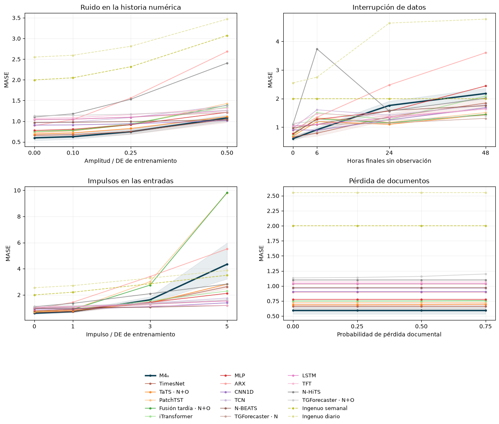
Las curvas muestran la evolución del error con la severidad para los 18 procedimientos. Las bandas corresponden a M4 y TimesNet. En el nivel mayor, los cambios relativos de M4 son: ruido: 80,78 %; interrupción: 264,79 %; atípicos: 627,42 %; documentos: 0,00 %. El archivo histórico conservado forma parte de su información disponible durante la perturbación de la consulta. Las redes numéricas mantienen su salida cuando solo se retiran documentos.
from matplotlib.colors import SymLogNorm
rob_condiciones = [(tipo, nivel) for tipo in rob_tipos for nivel in [1, 2, 3]]
rob_matriz = np.array([[rob_resumen.loc[(rob_resumen.clave == clave) &
(rob_resumen.tipo == tipo) & (rob_resumen.nivel == nivel), "degradacion_pct"].iloc[0]
for tipo, nivel in rob_condiciones] for clave in rob_orden])
rob_max = max(5., float(np.abs(rob_matriz).max()))
rob_mapa, rob_ax = plt.subplots(figsize=(14, 10))
rob_im = rob_ax.imshow(rob_matriz, aspect="auto", cmap="RdBu_r",
norm=SymLogNorm(linthresh=5, vmin=-rob_max, vmax=rob_max))
rob_ax.set_xticks(range(12), [f"{titulo}\n{nivel}" for titulo in
["Ruido", "Interrupción", "Impulsos", "Documentos"] for nivel in [1, 2, 3]])
rob_ax.set_yticks(range(len(rob_orden)), [rob_nombres[k] for k in rob_orden])
rob_ax.tick_params(axis="x", labelsize=9)
for rob_i in range(len(rob_orden)):
for rob_j in range(12):
rob_v = rob_matriz[rob_i, rob_j]
rob_ax.text(rob_j, rob_i, f"{rob_v:+.1f}", ha="center", va="center", fontsize=8,
color="white" if abs(rob_v) > max(20, rob_max / 4) else "black")
rob_ax.set(title="Cambio relativo del MASE respecto a la entrada original", xlabel="Tipo de perturbación y severidad")
rob_mapa.colorbar(rob_im, ax=rob_ax, label="Cambio del MASE (%) · escala logarítmica simétrica fuera de ±5 %")
rob_mapa.tight_layout()
display(rob_mapa)
plt.close(rob_mapa)
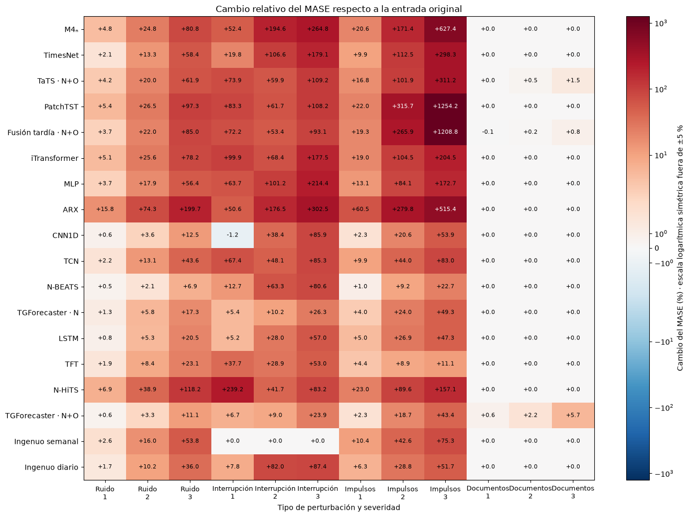
El mapa expresa aumentos y reducciones respecto a la entrada original de cada procedimiento. El mayor cambio en el nivel alto corresponde a PatchTST, bajo valores atípicos, con 1254,23 %. El cero de los controles numéricos en pérdida documental verifica que esa intervención no modifica sus entradas. Los ejes de severidad representan magnitudes distintas según el tipo de perturbación.
Contrastes de degradación y conservación de la ventaja#
La degradación se contrasta con la entrada original mediante 216 hipótesis unilaterales, ajustadas conjuntamente con Holm. La comparación de M4 con 17 procedimientos define otra familia de 204 hipótesis sobre una mejora relativa superior al 3 %. Los intervalos son puntuales; los valores p se ajustan por familia. La siguiente tabla detalla el contraste frente a TimesNet. Los resultados de todas las parejas se conservan en las descargas.
rob_contrastes = pd.read_csv(rob_dir / "contrastes_M4.csv")
rob_vs_timesnet = rob_contrastes.loc[rob_contrastes.comparador.eq("nuevo_timesnet__N")].copy()
rob_tabla = pd.DataFrame({
"Perturbación": rob_vs_timesnet.tipo.map(dict(zip(rob_tipos, rob_titulos))),
"Nivel": rob_vs_timesnet.nivel,
"Mejora de M4 (%)": rob_vs_timesnet.mejora_pct.map(lambda v: f"{v:.2f}"),
"IC 95 % (%)": [f"[{a:.2f}; {b:.2f}]" for a,b in zip(rob_vs_timesnet.mejora_ic_inf, rob_vs_timesnet.mejora_ic_sup)],
"p ajustado Holm · δ=3 %": rob_vs_timesnet.p_ajustado.map(lambda v: f"{v:.4f}"),
"Mejora >3 % respaldada": rob_vs_timesnet.supera_3pct.map({True:"Sí",False:"No"})
})
display(rob_tabla.reset_index(drop=True))
| Perturbación | Nivel | Mejora de M4 (%) | IC 95 % (%) | p ajustado Holm · δ=3 % | Mejora >3 % respaldada | |
|---|---|---|---|---|---|---|
| 0 | Ruido en la historia numérica | 1 | 7.13 | [0.28; 12.58] | 1.0000 | No |
| 1 | Ruido en la historia numérica | 2 | 0.36 | [-6.98; 6.74] | 1.0000 | No |
| 2 | Ruido en la historia numérica | 3 | -3.22 | [-13.20; 5.50] | 1.0000 | No |
| 3 | Interrupción de datos | 1 | -15.14 | [-31.84; -0.63] | 1.0000 | No |
| 4 | Interrupción de datos | 2 | -29.01 | [-43.68; -15.51] | 1.0000 | No |
| 5 | Interrupción de datos | 3 | -18.25 | [-29.72; -8.56] | 1.0000 | No |
| 6 | Impulsos en las entradas | 1 | 0.72 | [-7.15; 7.15] | 1.0000 | No |
| 7 | Impulsos en las entradas | 2 | -15.53 | [-33.51; 0.14] | 1.0000 | No |
| 8 | Impulsos en las entradas | 3 | -65.24 | [-129.21; -22.39] | 1.0000 | No |
| 9 | Pérdida de documentos | 1 | 9.53 | [2.50; 15.05] | 0.8103 | No |
| 10 | Pérdida de documentos | 2 | 9.53 | [2.50; 15.05] | 0.8103 | No |
| 11 | Pérdida de documentos | 3 | 9.53 | [2.50; 15.05] | 0.8103 | No |
El panel no acredita una mejora superior al 3 % de M4 frente a TimesNet después del ajuste de Holm. Bajo las perturbaciones impuestas, la ventaja descriptiva de M4 frente a TimesNet se invierte en 6 de las nueve condiciones numéricas. Las interrupciones y los valores atípicos de mayor amplitud incrementan especialmente su error. La magnitud observada y el respaldo estadístico se interpretan por separado. El remuestreo mantiene emparejadas las fechas y no trata las 24 horas como réplicas independientes.
Métricas completas · Contrastes frente a M4 · Degradación · Pérdidas por origen · Protocolo · Paridad de inferencia.
Código de evaluación y análisis#
La restauración compartida de redes y entradas complementa los siguientes módulos de perturbación, inferencia y análisis estadístico.
"""Perturbaciones de entradas con pesos congelados. No contiene optimizadores."""
from __future__ import annotations
import argparse, copy, hashlib, io, json, platform, sys, time
from pathlib import Path
from types import SimpleNamespace
from zipfile import ZipFile
ROOT=Path(__file__).resolve().parents[1]
sys.path[:0]=[str(ROOT/'dashboard'),str(ROOT/'scripts')]
import numpy as np
import pandas as pd
import torch
from runtime_inferencia import Runtime, Inputs, IA, read, frozen, digest, redes_e2, redes_e3
OUT=ROOT/'results/robustez_congelada_20261124'
Q=215617.90361589016
DATES=[f'{y}-{m:02d}-{d:02d}' for y in range(2022,2026) for m in range(1,13) for d in [1,15]]
SEEDS=list(range(1000,1005))
KINDS={'ruido':[.10,.25,.50],'interrupcion':[6,24,48],'atipicos':[1.,3.,5.],'perdida_texto':[.25,.50,.75]}
CASES=[dict(id='original',tipo='original',nivel=0,severidad=0.,repeticion=0)]
for kind,levels in KINDS.items():
for level,value in enumerate(levels,1):
for rep in range(1 if kind=='interrupcion' else 3):
CASES.append(dict(id=f'{kind}_{level}_{rep}',tipo=kind,nivel=level,severidad=value,repeticion=rep))
def write(p,obj):
p.parent.mkdir(parents=True,exist_ok=True)
p.write_text(json.dumps(obj,ensure_ascii=False,indent=2,allow_nan=False)+'\n',encoding='utf-8')
class RobustInputs(Inputs):
"""Listas globales causales: cada red accede solo al índice del origen."""
def prepare_lists(self):
if getattr(self,'full_lists',False):return
self.day=int((pd.Timestamp('2025-12-31',tz='America/Bogota')-self.index[0].normalize())/pd.Timedelta(days=1))
super().prepare_lists();self.full_lists=True
class Evaluator(Runtime):
def __init__(self):
super().__init__()
self.inputs=RobustInputs();self.files={};self.selected_seed=None;self.red=None;self.aggregator=None
self.inputs.configure(DATES[0]);self.inputs.prepare_text();self.inputs.configure(DATES[0])
self.scale=self.inputs.raw.loc['2008-01-01':'2017-12-31'].std().to_numpy(dtype=float)
assert np.isfinite(self.scale).all() and (self.scale>0).all()
self.target=pd.read_parquet(ROOT/'data/processed/panel_horario.parquet',columns=['y_demanda_real_kwh'])
def protect(self,p):
p=Path(p);h=digest(p)
if str(p)in self.files:assert self.files[str(p)]==h
self.files[str(p)]=h
return h
def load_model(self,key,seed):
self.selected_seed=seed;I=self.inputs
if key=='m4_n':
self.load_memory(seed)
self.red=None;self.scaler=None;self.repo=False
elif key in ['mlp','lstm','cnn1d','arx_lineal']:
import demanda
old=str(self.snapshot/'src/demanda')
if old not in demanda.__path__:demanda.__path__.append(old)
M=IA.modulo('demanda.robust_modelos_base',self.snapshot/'src/demanda/modelos_base.py')
C=IA.modulo('demanda.robust_reentrenamiento',self.snapshot/'src/demanda/reentrenamiento_v3.py')
L=IA.modulo('demanda.robust_variantes',self.snapshot/'src/demanda/variantes_v4.py')
record=self.baselines[key];a=next(r for r in record['artefactos']if r['semilla']==seed)
self.scaler=read(self.snapshot/a['escaladores']);self.protect(self.snapshot/a['escaladores'])
d=self.baseline_inputs(self.scaler);shape=SimpleNamespace(x=d['x'][:,:,:1],cal_p=d['x'][:,:,1:],cal_f=d['cf'])
p=record['configuracion']['params']
self.red=L.Secuencial(key,p,shape)if key=='lstm'else C.Secuencial(key,p,shape)if key=='cnn1d'else M.construir_red(key,p,shape)
file=self.snapshot/a['pesos'];self.protect(file)
self.red.load_state_dict(torch.load(file,map_location='cpu',weights_only=True)['state_dict'])
self.expected_file=self.snapshot/a['predicciones'];self.repo=False
elif key in ['nuevo_nbeats__N','nuevo_timesnet__N']:
family='timesnet'if'timesnet'in key else'nbeats'
base=ROOT/'results/analisis_nbeats_timesnet_20261120/entrada_resultados/resultados_e2_nbeats_timesnet'
folder=base/f'nuevo_{family}/final/N/semilla_{seed}'
self.scaler=read(folder/'escaladores.json');self.protect(folder/'escaladores.json')
zipfile=ROOT/'results/integracion_top10_20261120/pesos/ENVIAR_pesos_NBEATS_TimesNet_20261119_2125.zip'
if str(zipfile)not in self.files:self.protect(zipfile)
with ZipFile(zipfile)as z:raw=z.read(f'resultados_e2_nbeats_timesnet/nuevo_{family}/final/N/semilla_{seed}/modelo.pt')
self.red=redes_e2.construir(family,read(folder/'resultado.json')['configuracion'],33,23,168,24,None,None)
self.red.load_state_dict(torch.load(io.BytesIO(raw),map_location='cpu',weights_only=True));self.repo=False
self.expected_file=None
else:
m=next(m for m in self.registry if m['experimento']+'__'+m['variante']==key and m['semilla']==seed)
self.red,_,self.repo=IA.cargar(m,I)
self.scaler=read(IA.CON/m['artefactos']['escaladores'])
self.protect(IA.CON/m['artefactos']['pesos']);self.protect(IA.CON/m['artefactos']['escaladores'])
self.expected_record=m;self.expected_file=None
if self.red is not None:
frozen(self.red);assert not any(p.requires_grad for p in self.red.parameters())
self.aggregator=getattr(self.red,'agregador',None)or getattr(self.red,'relevancia',None)
else:self.aggregator=None
self.key=key
def load_memory(self,seed):
assert seed in range(101,106),'Cinco pipelines completos disponibles; no sustituir expertos entre semillas.'
old=ROOT/'results/m3_gpu_20261122_193240';parts=[]
for year in range(2013,2022):
p=old/f'base_oof/anio_{year}_semilla_{seed}.npz'
with np.load(p,allow_pickle=False)as z:parts.append({k:z[k]for k in ['dia','y','pred_base','num','expertos']})
with np.load(old/f'base_final/semilla_{seed}.npz',allow_pickle=False)as z:
parts.append({k:z[k]for k in ['dia','y','pred_base','num','expertos']})
self.bank={k:np.concatenate([p[k]for p in parts])for k in parts[0]}
self.bank_dates=np.asarray(self.bank['dia'],dtype='datetime64[D]');self.byday={str(d):i for i,d in enumerate(self.bank_dates)}
base=ROOT/'results/corrector_final_y_m1_gpu_20261122_150345/M1';self.experts=[];self.hashes={}
for name,kind in [('patchtst','tats'),('E','original_E'),('periodica','x_periodica')]:
p=base/f'expertos_finales/{name}/semilla_{seed}/modelo.pt';self.protect(p)
ck=torch.load(p,map_location='cpu',weights_only=False)
r=redes_e3.construir(kind,ck['metadatos']['configuracion'],33,23,168,24,n_mascaras=3);r.load_state_dict(ck['modelo'])
self.experts.append((frozen(r),ck['escalas']))
p=base/f'final/semilla_{seed}/modelo.pt';self.protect(p)
self.router_ck=torch.load(p,map_location='cpu',weights_only=False);ck=self.router_ck
self.router=frozen(self.Router(ck['n_entrada'],ck['configuracion']));self.router.load_state_dict(ck['modelo'])
p=ROOT/f'results/m4_cierre_gpu_20261123/reducido_B/colombia/final/M4_N/semilla_{seed}/modelo.pt';self.protect(p)
self.memory_ck=torch.load(p,map_location='cpu',weights_only=False);ck=self.memory_ck
self.memory=frozen(self.Memoria(ck['n_num'],ck['n_feat'],ck['n_fuentes'],ck['configuracion'],'M4_N'));self.memory.load_state_dict(ck['modelo'])
def predict_loaded(self):
I=self.inputs
if self.key=='m4_n':return self.memory_prediction()[0]
if self.key in ['mlp','lstm','cnn1d','arx_lineal']:
d=self.baseline_inputs(self.scaler)
return self.red(torch.from_numpy(d['x']),torch.from_numpy(d['cf'])).numpy()[0].astype(float)*d['nivel'][0]
d=I.construir(self.scaler,self.repo)
return IA.forward(self.red,d,np.array([0]),self.repo).numpy()[0].astype(float)*d['nivel'][0]
def expected(self,date):
j=int((pd.Timestamp(date)-pd.Timestamp('2022-01-01')).days)
if self.key=='m4_n':
p=ROOT/f'results/m4_cierre_gpu_20261123/reducido_B/colombia/prueba/M4_N_semilla_{self.selected_seed}.npz'
with np.load(p,allow_pickle=False)as z:return z['pred'][j]
if self.key in ['nuevo_nbeats__N','nuevo_timesnet__N']:return None
if self.key in ['mlp','lstm','cnn1d','arx_lineal']:
with np.load(self.expected_file,allow_pickle=False)as z:
a=z['pred']if'pred'in z.files else z['yhat']if'yhat'in z.files else z['yhat_kwh']
return a[j]
return IA.guardadas(self.expected_record)[j]
def perturb(window,date,case,scale,hist):
w=window.copy();kind=case['tipo'];value=case['severidad'];rep=case['repeticion']
rng=np.random.default_rng(np.random.SeedSequence([20261124,int(date.replace('-','')),rep]))
if kind=='ruido':
noise=rng.normal(size=w.shape);w+=value*scale*noise
elif kind=='atipicos':
rows=rng.permutation(168)[:9];sign=rng.choice([-1.,1.],size=(9,len(scale)))
w[rows]+=value*scale*sign
elif kind=='interrupcion':
h=int(value);w[-h:,0]=w[-h-1,0];w[-h:,1:]=np.nan
if kind in ['ruido','atipicos']:
for j,name in enumerate(hist):
if 'temperature' in name:continue
w[:,j]=np.maximum(w[:,j],1. if j==0 else 0.)
if 'humidity'in name:w[:,j]=np.minimum(w[:,j],100.)
assert np.isfinite(w[:,0]).all()and(w[:,0]>0).all()
return w
def evaluate(keys=None,smoke=False,seed_position=None):
OUT.mkdir(parents=True,exist_ok=True)
r=Evaluator();I=r.inputs;torch.set_num_threads(1)
study=read(ROOT/'dashboard/site/data/study.json')
names={m['id']:m['name']for m in study['models']}|{'m4_n':'M4ₙ','naive_diario':'Ingenuo diario','naive_semanal':'Ingenuo semanal'}
selected=keys or list(names)
dates=DATES[:1]if smoke else DATES
protocol=dict(fecha='2026-11-24',origenes=DATES,tipos=KINDS,casos=CASES,
semillas_benchmark=SEEDS,semillas_M4=list(range(101,106)),replicas_estocasticas=3,
escala_ruido='DE por variable del bloque 2008–2017, calculada solo para definir severidad; no modifica escaladores de modelos',
atipicos='9 de 168 horas con impulso ± severidad × DE; mismas filas y signos entre modelos, semillas y severidades',
interrupcion='Últimas 6/24/48 horas: demanda con último valor anterior; covariables NaN y tratamiento congelado del checkpoint',
perdida_texto='Eliminación Bernoulli anidada por documento con probabilidad 0,25/0,50/0,75; conserva fechas y contenido de documentos restantes',
calendario='Sin perturbaciones: conocido al origen',memoria='Banco histórico y errores ya observables conservados; se perturba la historia de la consulta y se recalculan expertos, M1 y recuperación',
marco='Diagnóstico de entradas con pesos fijos; no modifica el benchmark global de prueba',
semilla_M4_alcance='Se evalúan 101–105, con los tres expertos y M1 disponibles para cada semilla; no se mezclan con las otras cinco realizaciones del benchmark de M4',
inferencia='CPU un hilo; lote uno en todos los modelos, en particular TimesNet',q168=Q,
bootstrap=dict(reps=9999,bloque_meses=3,unidad='Mes calendario: dos orígenes; promedio previo de réplicas',semillas='Remuestreo de cinco realizaciones dentro de cada modelo'),
comparaciones=dict(degradacion='18 procedimientos × 12 condiciones; Holm sobre 216 hipótesis de deterioro',M4='17 comparadores × 12 condiciones; Holm sobre 204 hipótesis de mejora relativa superior al 3 %'),
entrenamiento=False,publicacion=False,seleccion_por_resultados=False,
entorno=dict(python=sys.version,torch=torch.__version__,numpy=np.__version__,sistema=platform.platform()))
pp=OUT/'protocolo.json'
if not pp.exists():write(pp,protocol)
else:assert read(pp)==protocol,'El protocolo registrado no se modifica durante la evaluación.'
scale_file=OUT/'escala_perturbacion.csv'
if not scale_file.exists():pd.DataFrame({'variable':I.hist,'DE_2008_2017':r.scale}).to_csv(scale_file,index=False)
for key in selected:
seeds=[0]if key.startswith('naive_')else list(range(101,106))if key=='m4_n'else SEEDS
if seed_position is not None:
seeds=seeds if len(seeds)==1 and seed_position==0 else [] if len(seeds)==1 else [seeds[seed_position]]
for seed in seeds[:1]if smoke else seeds:
path=OUT/'predicciones'/f'{key}__semilla_{seed}.npz';path.parent.mkdir(exist_ok=True)
if path.exists()and not smoke:print('Conservado',key,seed,flush=True);continue
start=time.perf_counter();I.configure(dates[0])
if not key.startswith('naive_'):r.load_model(key,seed)
predictions=[];parity=[];drops=[]
with torch.inference_mode():
for number,date in enumerate(dates):
I.configure(date);original=I.window.copy();day=I.day
if not key.startswith('naive_')and r.aggregator is not None:
saved=r.aggregator.lista[day-6:day+1].clone()
else:saved=None
out=[];base=None
for case in CASES:
I.window=perturb(original,date,case,r.scale,I.hist)
if saved is not None:r.aggregator.lista[day-6:day+1]=saved
if case['tipo']=='perdida_texto':
if saved is None:
assert base is not None;pred=base.copy();out.append(pred);continue
rng=np.random.default_rng(np.random.SeedSequence([20261125,int(date.replace('-','')),case['repeticion']]))
uniforms=rng.random(len(I.vectores));q=saved.clone();valid=q>=0
reject=np.zeros(q.shape,dtype=bool);reject[valid.numpy()]=uniforms[q[valid].numpy()]<case['severidad']
q[torch.from_numpy(reject)]=-1;r.aggregator.lista[day-6:day+1]=q
drops.append(dict(origen=date,caso=case['id'],antes=int(valid[-1].sum()),despues=int((q[-1]>=0).sum())))
if key.startswith('naive_'):
pred=I.window[-24:,0].copy()if key=='naive_diario'else I.window[:24,0].copy()
else:pred=r.predict_loaded()
assert pred.shape==(24,)and np.isfinite(pred).all(),(key,seed,date,case)
if case['tipo']=='original':
base=pred.copy()
expected=None if key.startswith('naive_')else r.expected(date)
if expected is not None:
error=float(np.max(np.abs(pred-expected)));relative=error/max(float(np.abs(expected).max()),1.)
parity.append(dict(origen=date,error_max_kWh=error,error_relativo=relative))
assert relative<1e-4,(key,seed,date,'Paridad',error,relative)
out.append(pred)
I.window=original
if saved is not None:r.aggregator.lista[day-6:day+1]=saved
predictions.append(np.stack(out))
if number%24==0:print('Avance',key,seed,date,f'{time.perf_counter()-start:.1f}s',flush=True)
targets=np.stack([r.target.reindex(pd.date_range(pd.Timestamp(d,tz='America/Bogota'),periods=24,freq='h')).iloc[:,0].to_numpy()for d in dates])
dest=OUT/'smoke'/f'{key}__semilla_{seed}.npz'if smoke else path;dest.parent.mkdir(exist_ok=True)
np.savez_compressed(dest,pred=np.stack(predictions),y=targets,dias=np.asarray(dates,dtype='U10'),casos=np.asarray([c['id']for c in CASES],dtype='U32'))
write(dest.with_suffix('.json'),dict(modelo=key,nombre=names[key],semilla=seed,paridad=parity,perdida_documentos=drops,segundos=time.perf_counter()-start,
pesos_sha256=r.files,entrenamiento=False))
print('Terminado',key,seed,f'{time.perf_counter()-start:.1f}s',flush=True)
if r.red is not None:r.red=None
for file,h in r.files.items():assert digest(file)==h,(file,'El artefacto cambió durante la evaluación')
print('Pesos y escaladores intactos.',flush=True)
if __name__=='__main__':
parser=argparse.ArgumentParser();parser.add_argument('--modelos',nargs='*');parser.add_argument('--smoke',action='store_true')
parser.add_argument('--posicion-semilla',type=int,choices=range(5))
args=parser.parse_args();evaluate(args.modelos,args.smoke,args.posicion_semilla)
"""Agregación por origen, bootstrap temporal/semillas y Holm de robustez."""
from __future__ import annotations
from pathlib import Path
import hashlib,json,sys,os
import numpy as np
import pandas as pd
from statsmodels.stats.multitest import multipletests
ROOT=Path(__file__).resolve().parents[1]
OUT=ROOT/'results/robustez_congelada_20261124'
Q=215617.90361589016
def calidad_entradas(root=ROOT):
root=Path(root);out=root/'results/robustez_congelada_20261124'
contract=json.loads((root/'config/diseno_entrenamiento_texto.json').read_text(encoding='utf-8'))
columns=contract['numericas']['historicas']
panel=pd.read_parquet(root/'data/processed/panel_horario.parquet',columns=columns)
registry=json.loads((root/'data/processed/feature_registry.json').read_text(encoding='utf-8'))
for column in columns:
if column.startswith('x_obs_'):
panel[column]=panel[column].shift(contract['numericas']['rezago_clima_h']-registry[column]['rezago_h'])
protocol=json.loads((out/'protocolo.json').read_text(encoding='utf-8'))
windows=np.stack([panel.reindex(pd.date_range(pd.Timestamp(day,tz='America/Bogota')-pd.Timedelta(hours=168),periods=168,freq='h')).to_numpy() for day in protocol['origenes']])
missing=~np.isfinite(windows)
result=dict(origenes=len(windows),horas_por_ventana=168,variables=len(columns),celdas=int(windows.size),
celdas_ausentes=int(missing.sum()),porcentaje_ausente=float(missing.mean()*100),
ventanas_con_ausencias=int(missing.any((1,2)).sum()),horas_impulsadas_simuladas=9,
porcentaje_horas_impulsadas=100*9/168,
alcance='Ausencias en las entradas originales de las 96 ventanas, con los rezagos del contrato; no estima frecuencia natural de atípicos.')
(out/'calidad_entradas_originales.json').write_text(json.dumps(result,ensure_ascii=False,indent=2)+'\n',encoding='utf-8')
return result
def main(root=ROOT):
root=Path(root);out=root/'results/robustez_congelada_20261124'
calidad_entradas(root)
protocol=json.loads((out/'protocolo.json').read_text(encoding='utf-8'))
cases=protocol['casos'];dates=protocol['origenes'];study=json.loads((root/'dashboard/site/data/study.json').read_text(encoding='utf-8'))
names={r['id']:r['name']for r in study['models']}|{'m4_n':'M4ₙ','naive_diario':'Ingenuo diario','naive_semanal':'Ingenuo semanal'}
groups={r['id']:r['group']for r in study['models']}|{'m4_n':'Propuesta','naive_diario':'Referencia estacional','naive_semanal':'Referencia estacional'}
conditions=[('original',0)]+[(k,i)for k in protocol['tipos']for i in range(1,4)]
cond_indices={c:[j for j,v in enumerate(cases)if(v['tipo'],v['nivel'])==c]for c in conditions}
maes={};mses={};seed_ids={};parity=[];detail=[];protected={};expected_means={}
for key in names:
files=sorted((out/'predicciones').glob(key+'__semilla_*.npz'))
count=1 if key.startswith('naive_')else 5
assert len(files)==count,(key,len(files),count)
er=[];sq=[];clean=[];seeds=[]
for file in files:
with np.load(file,allow_pickle=False)as z:
assert z['dias'].tolist()==dates and z['casos'].tolist()==[c['id']for c in cases]
p=z['pred'];y=z['y'];assert p.shape==(96,len(cases),24)and np.isfinite(p).all()
if not key.endswith('__N+O'):
ix=[j for j,c in enumerate(cases)if c['tipo']=='perdida_texto']
assert np.array_equal(p[:,ix],np.broadcast_to(p[:,0,None,:],p[:,ix].shape)),(key,'Predicción numérica alterada por pérdida textual')
error=p-y[:,None,:];er.append(np.abs(error).mean(-1));sq.append(np.square(error).mean(-1));clean.append(p[:,0])
info=json.loads(file.with_suffix('.json').read_text(encoding='utf-8'));seed=info['semilla'];seeds.append(seed)
protected.update(info['pesos_sha256'])
for r in info['paridad']:parity.append(dict(modelo=key,semilla=seed,**r))
for j,case in enumerate(cases):
for n,date in enumerate(dates):
detail.append(dict(clave=key,semilla=seed,origen=date,tipo=case['tipo'],nivel=case['nivel'],repeticion=case['repeticion'],
MAE=er[-1][n,j],MSE=sq[-1][n,j],MASE=er[-1][n,j]/Q))
rawmae=np.stack(er)/Q;rawmse=np.stack(sq)
maes[key]=np.stack([rawmae[:,:,cond_indices[c]].mean(-1)for c in conditions],axis=1)
mses[key]=np.stack([rawmse[:,:,cond_indices[c]].mean(-1)for c in conditions],axis=1)
seed_ids[key]=seeds
if key!='m4_n'and not key.startswith('naive_'):
saved=json.loads((root/f'dashboard/site/data/predictions/{key}.json').read_text(encoding='utf-8'))
j=np.asarray([(pd.Timestamp(d)-pd.Timestamp('2022-01-01')).days for d in dates])
expected=np.asarray(saved['mean'])[j]*1e6;pred=np.mean(clean,axis=0)
error=float(np.max(np.abs(pred-expected)));relative=error/max(float(np.max(np.abs(expected))),1)
assert relative<1e-4,(key,'Paridad media',relative,error)
expected_means[key]=dict(error_max_kWh=error,error_relativo=relative)
# Las redes sin canal documental deben conservar exactamente la predicción.
if not key.endswith('__N+O'):
for c in range(10,13):
assert np.allclose(maes[key][:,0],maes[key][:,c],rtol=1e-14,atol=1e-14)
# Predicciones idénticas: conservar la identidad exacta al promediar tres copias.
maes[key][:,c]=maes[key][:,0]
mses[key][:,c]=mses[key][:,0]
B=protocol['bootstrap']['reps'];rng=np.random.default_rng(20261124)
starts=rng.integers(0,48,size=(B,16))
months=((starts[:,:,None]+np.arange(3))%48).reshape(B,48)
distributions={};summary=[];degradation=[]
for key in names:
# Dos orígenes por mes; las réplicas estocásticas ya se promediaron.
monthly=maes[key].reshape(len(seed_ids[key]),13,48,2).mean(-1)
sd=rng.integers(0,len(seed_ids[key]),size=(B,len(seed_ids[key])))
boots=[]
for c in range(13):
boots.append(monthly[:,c,:][sd[:,:,None],months[:,None,:]].mean((1,2)))
boots=np.stack(boots,axis=1);distributions[key]=boots
base=maes[key][:,0].mean()
for c,(kind,level)in enumerate(conditions):
metric=maes[key][:,c].mean();seeds_mean=maes[key][:,c].mean(-1)
lo,hi=np.quantile(boots[:,c],[.025,.975])
diff=metric-base;db=boots[:,c]-boots[:,0];dlo,dhi=np.quantile(db,[.025,.975])
rel=100*(metric/base-1);rb=100*(boots[:,c]/boots[:,0]-1);rlo,rhi=np.quantile(rb,[.025,.975])
severity=0 if level==0 else protocol['tipos'][kind][level-1]
summary.append(dict(clave=key,modelo=names[key],grupo=groups[key],tipo=kind,nivel=level,severidad=severity,
semillas=len(seed_ids[key]),origenes=96,MASE=metric,MASE_sd=seeds_mean.std(ddof=1)if len(seeds_mean)>1 else 0.,
MASE_ic_inf=lo,MASE_ic_sup=hi,MAE=metric*Q,RMSE=np.sqrt(mses[key][:,c].mean(-1)).mean(),
delta_MASE=diff,delta_MASE_ic_inf=dlo,delta_MASE_ic_sup=dhi,
degradacion_pct=rel,degradacion_ic_inf=rlo,degradacion_ic_sup=rhi))
if level:
p=float((1+np.sum(db-diff>=diff))/(B+1))
degradation.append(dict(clave=key,modelo=names[key],tipo=kind,nivel=level,delta_MASE=diff,ic_inf=dlo,ic_sup=dhi,
p=p,nula='E[MASE_perturbado − MASE_original] ≤ 0'))
contrasts=[]
for key in names:
if key=='m4_n':continue
for c,(kind,level)in enumerate(conditions):
if not level:continue
a=maes['m4_n'][:,c].mean();b=maes[key][:,c].mean()
difference=.97*b-a;db=.97*distributions[key][:,c]-distributions['m4_n'][:,c]
p=float((1+np.sum(db-difference>=difference))/(B+1))
gain=100*(1-a/b);gb=100*(1-distributions['m4_n'][:,c]/distributions[key][:,c]);lo,hi=np.quantile(gb,[.025,.975])
dlo,dhi=np.quantile(db,[.025,.975])
contrasts.append(dict(comparador=key,modelo=names[key],tipo=kind,nivel=level,MASE_M4=a,MASE_comparador=b,
mejora_pct=gain,mejora_ic_inf=lo,mejora_ic_sup=hi,contraste_MASE=difference,
ic_inf=dlo,ic_sup=dhi,p=p,margen=.03,nula='E[0,97 MASE_comparador − MASE_M4] ≤ 0'))
deg=pd.DataFrame(degradation);comp=pd.DataFrame(contrasts)
assert len(deg)==216 and len(comp)==204
deg['p_ajustado']=multipletests(deg.p,method='holm')[1]
comp['p_ajustado']=multipletests(comp.p,method='holm')[1]
comp['supera_3pct']=comp.p_ajustado.lt(.05)
summary=pd.DataFrame(summary);summary.to_csv(out/'resumen.csv',index=False)
deg.to_csv(out/'contrastes_degradacion.csv',index=False);comp.to_csv(out/'contrastes_M4.csv',index=False)
pd.DataFrame(detail).to_parquet(out/'metricas_por_origen.parquet',index=False)
pd.DataFrame(parity).to_csv(out/'paridad_predicciones.csv',index=False)
np.savez_compressed(out/'distribuciones_bootstrap.npz',**{key:arr for key,arr in distributions.items()})
costs=pd.read_csv(out/'paridad_predicciones.csv')
invariance={}
for path,expected in protected.items():
with open(path,'rb')as f:actual=hashlib.file_digest(f,'sha256').hexdigest()
assert actual==expected,path
try:label=Path(path).relative_to(root).as_posix()
except ValueError:
try:label=os.path.relpath(path,root).replace('\\','/')
except ValueError:label=str(Path(path))
invariance[label]=actual
audit=dict(modelos=18,pipelines_aprendidos=16,semillas_por_pipeline=5,referencias_estacionales=2,origenes=96,
casos=len(cases),niveles_no_nulos=3,tipos=4,replicas_estocasticas=3,contrastes_degradacion=216,contrastes_M4=204,
paridad_max_kWh=float(costs.error_max_kWh.max()),paridad_max_relativo=float(costs.error_relativo.max()),
paridad_media=expected_means,artefactos_intactos=invariance,entrenamiento=False,publicacion=False)
(out/'verificacion.json').write_text(json.dumps(audit,ensure_ascii=False,indent=2)+'\n',encoding='utf-8')
print(summary.query("clave=='m4_n'")[['tipo','nivel','MASE','degradacion_pct']].to_string(index=False))
print('Resumen: 234 filas; 216 contrastes de degradación y 204 frente a M4, Holm por familia.')
return summary,comp,deg
if __name__=='__main__':main()
La reproducción de la evaluación y su presentación utiliza:
python scripts/evaluar_robustez_congelada.py
python scripts/analizar_robustez_congelada.py
python scripts/integrar_robustez_congelada.py
Importancia de variables del grupo demanda/calendario#
Se mide cuánto aumenta el error al perturbar un grupo de entradas, manteniendo los pesos y los escaladores. El análisis incluye los 1.461 orígenes diarios de 2022–2025, cuatro familias y cinco inicializaciones por familia. La demanda histórica y el calendario son las entradas de estos modelos; el clima, la hidrología y el texto no reciben puntuaciones porque no intervienen en sus pronósticos.
La importancia por permutación describe la dependencia de un modelo ajustado respecto de sus entradas. Aquí se adapta a ventanas temporales: se trasladan circularmente orígenes completos dentro de cada año, con diez desplazamientos reproducibles y una separación circular mínima de 28 días. Se conserva el orden de las horas dentro de cada bloque y se utilizan los mismos donantes para familias, semillas y grupos. Las etiquetas permanecen en sus fechas originales. Esta perturbación es un diagnóstico retrospectivo, no un pronóstico operativo ni una estimación causal.
La importancia se expresa como diferencia de MASE:
Las figuras muestran el cambio porcentual respecto del MAE basal de cada modelo, equivalente al cambio relativo de MASE con el denominador fijo. Un valor positivo indica deterioro al perturbar la entrada; uno negativo indica menor error bajo esa perturbación. Las comparaciones son condicionales al modelo, al periodo y al esquema de donantes.
Demanda y calendario#
La demanda se examina como perfil normalizado y nivel medio de la ventana, tanto por separado como conjuntamente. Perturbar el nivel modifica el factor usado al restituir la salida a kWh. El calendario se transfiere simultáneamente en pasado y horizonte, conservando juntas las codificaciones de cada grupo. Se distinguen calendario completo, semana y festivos, y año y temporadas. Los grupos se solapan y sus importancias no se suman.
FI = ROOT / 'results/jbook/importancia_variables'
reporte_fi = json.loads((FI / 'ejecucion.json').read_text(encoding='utf-8'))
protocolo_fi = json.loads((FI / 'protocolo.json').read_text(encoding='utf-8'))
fi = pd.read_csv(FI / 'permutaciones.csv')
assert reporte_fi['completo'] and (not reporte_fi['entrenamiento'])
assert len(fi) == 2600 and (not fi.duplicated(['modelo', 'semilla', 'grupo', 'repeticion']).any())
assert set(fi.modelo) == set(modelos)
assert set(fi.semilla) == set(range(1000, 1005)) and set(fi.repeticion) == set(range(10))
por_perm = fi.groupby(['modelo', 'grupo', 'repeticion'], sort=False)[['MAE_base', 'delta_MAE', 'delta_MASE']].mean().reset_index()
por_perm['delta_rel_pct'] = 100 * por_perm.delta_MAE / por_perm.MAE_base
resumen_fi = por_perm.groupby(['modelo', 'grupo'], sort=False).agg(cambio_MAE_pct=('delta_rel_pct', 'mean'), p10_perm_pct=('delta_rel_pct', lambda x: x.quantile(0.1)), p90_perm_pct=('delta_rel_pct', lambda x: x.quantile(0.9)), delta_MAE_kWh=('delta_MAE', 'mean'), delta_MASE=('delta_MASE', 'mean')).reset_index()
grupos_principales = ['demanda_completa', 'perfil_demanda', 'nivel_ventana', 'calendario_completo', 'semanal_festivos', 'anual_temporadas']
nombres_grupos = ['Demanda: perfil y nivel', 'Perfil de demanda, nivel fijo', 'Nivel medio de la ventana', 'Calendario completo', 'Semana y festivos', 'Año y temporadas']
matriz_fi = resumen_fi.pivot(index='grupo', columns='modelo', values='cambio_MAE_pct').reindex(index=grupos_principales, columns=modelos)
from matplotlib.colors import TwoSlopeNorm
lim_fi = float(np.max(np.abs(matriz_fi.to_numpy())))
fig, ax = plt.subplots(figsize=(10, 5.7), layout='constrained')
im = ax.imshow(matriz_fi.to_numpy(), cmap='RdBu_r', norm=TwoSlopeNorm(vmin=-lim_fi, vcenter=0, vmax=lim_fi), aspect='auto')
ax.set(xticks=range(4), xticklabels=[etiquetas[m] for m in modelos], yticks=range(6), yticklabels=nombres_grupos)
ax.grid(False)
for i in range(6):
for j in range(4):
valor = matriz_fi.iloc[i, j]
ax.text(j, i, f'{valor:+.1f} %', ha='center', va='center', color='white' if abs(valor) > 0.55 * lim_fi else '#202020', fontsize=10)
fig.colorbar(im, ax=ax, label='Cambio del MAE frente al basal (%)')
fig.savefig(FI / 'importancia_grupos.png', dpi=170)
display(fig)
plt.close(fig)
mlp_perfil = float(matriz_fi.loc['perfil_demanda', 'mlp'])
mlp_semana = float(matriz_fi.loc['semanal_festivos', 'mlp'])
mlp_anual = float(matriz_fi.loc['anual_temporadas', 'mlp'])
grupo_lider = {etiquetas[m]: nombres_grupos[int(np.argmax(matriz_fi[m].to_numpy()))] for m in modelos}

En MLP, perturbar el perfil de demanda con nivel fijo aumenta el MAE un 134.9 %, mientras alterar semana y festivos lo incrementa un 210.1 %. Año y temporadas produce un cambio menor, del 8.3 %. El calendario laboral y la trayectoria reciente aportan información complementaria para reproducir el perfil diario. La importancia del nivel corresponde al procedimiento de normalización y restitución, además de las entradas explícitas de la red. La magnitud no es un porcentaje de varianza explicada ni una contribución aditiva. La correlación entre grupos y las combinaciones artificiales creadas al permutarlos limitan atribuciones individuales.
Distribución de la sensibilidad a lo largo de la historia#
Se perturban por separado los siete bloques consecutivos de 24 horas de demanda normalizada, manteniendo fijos el nivel y el calendario. El bloque 1 es el más reciente y el bloque 7 el más antiguo dentro de las 168 horas disponibles. Los puntos muestran la media; los segmentos, p10–p90 entre los diez desplazamientos después de promediar las cinco inicializaciones. Son dispersión de perturbaciones, no intervalos de confianza temporal.
grupos_dias = [f'dia_{i}' for i in range(1, 8)]
fig, axes = plt.subplots(2, 2, figsize=(12, 8), sharex=True, sharey=True, layout='constrained')
q_dias = resumen_fi.loc[resumen_fi.grupo.isin(grupos_dias)]
xmin = min(0.0, float(q_dias.p10_perm_pct.min()))
xmax = max(0.0, float(q_dias.p90_perm_pct.max()))
for ax, m in zip(axes.ravel(), modelos):
q = resumen_fi.loc[resumen_fi.modelo.eq(m)].set_index('grupo').loc[grupos_dias]
for i, g in enumerate(grupos_dias):
if m == 'arx_lineal' and i >= 2:
ax.text(0.06, i, 'No utiliza este bloque', transform=ax.get_yaxis_transform(), va='center', color='#777777', fontsize=8)
else:
ax.hlines(i, q.loc[g, 'p10_perm_pct'], q.loc[g, 'p90_perm_pct'], color='#247ba0', lw=3)
ax.scatter(q.loc[g, 'cambio_MAE_pct'], i, color='#173f5f', s=30, zorder=3)
ax.axvline(0, color='#666666', ls='--', lw=1)
ax.set(title=etiquetas[m], xlabel='Cambio del MAE frente al basal (%)', yticks=range(7), yticklabels=[f'Bloque {i}' for i in range(1, 8)], xlim=(xmin - 0.04 * (xmax - xmin), xmax * 1.05), ylim=(6.6, -0.6))
fig.savefig(FI / 'importancia_rezagos.png', dpi=170)
display(fig)
plt.close(fig)
mlp_dias = resumen_fi.loc[resumen_fi.modelo.eq('mlp') & resumen_fi.grupo.isin(grupos_dias)].set_index('grupo')
mlp_bloque_lider = int(mlp_dias.cambio_MAE_pct.idxmax().split('_')[1])
mlp_ultimo_dia = float(mlp_dias.loc['dia_1', 'cambio_MAE_pct'])
lstm_antiguo = float(resumen_fi.loc[resumen_fi.modelo.eq('lstm') & resumen_fi.grupo.isin(grupos_dias[1:]), 'cambio_MAE_pct'].abs().max())
lstm_antiguo_texto = 'inferior al 0,001 %' if lstm_antiguo < 0.001 else f'del {lstm_antiguo:.4f} %'
destino_fi = ROOT / 'book/_static/resultados/importancia_variables'
destino_fi.mkdir(parents=True, exist_ok=True)

Cada bloque contiene 24 horas consecutivas de la ventana de entrada: el bloque 1 es el más reciente y el 7, el más antiguo. El bloque 1 es el de mayor sensibilidad en MLP: perturbar las últimas 24 horas aumenta su MAE un 112.6 %. La sensibilidad a los bloques anteriores es menor. ARX utiliza únicamente 48 rezagos; los bloques 3–7 quedan identificados como ausentes de su entrada. En LSTM, el cambio absoluto máximo de los bloques 2–7 es del 0.0083 %, compatible con una sensibilidad muy pequeña a esa parte del historial en este diagnóstico. Esa observación no demuestra que todas las redes recurrentes ignoren la historia larga.
Alcance de la atribución#
Las tres codificaciones de hora son idénticas entre orígenes diarios iniciados a medianoche. Permutar orígenes deja ese bloque inalterado; su importancia no es identificable mediante este procedimiento y no se reporta como cero. La salida directa de 24 posiciones también representa la posición horaria.
El desplazamiento preserva las trayectorias de cada bloque, pero rompe dependencias entre demanda, calendario y objetivo. Por ello mide sensibilidad ante perturbaciones fuera de la combinación observada y no estima el efecto de retirar una variable y reentrenar. Los grupos correlacionados pueden sustituirse parcialmente; una importancia pequeña no acredita irrelevancia intrínseca. La prueba conserva su alcance retrospectivo y estos resultados no modifican arquitecturas, selección de entradas ni métricas del benchmark.
Resumen de importancias · Resultados por semilla y desplazamiento · Reproducción del baseline · Protocolo · Registro de cálculo.
Pipeline reproducible de inferencia y perturbación#
El siguiente código utiliza los checkpoints y escaladores conservados, verifica sus huellas, reproduce el baseline y calcula las perturbaciones. La construcción documental lee sus CSV; el cálculo se ejecuta explícitamente con python scripts/importancia_variables.py en un entorno con PyTorch CPU. No contiene pasos de optimización.
"""Importancia agrupada mediante inferencia de checkpoints congelados."""
from pathlib import Path
from types import SimpleNamespace
import argparse
import hashlib
import json
import platform
import sys
import time
import numpy as np
import pandas as pd
ROOT = Path(__file__).resolve().parents[1]
MODELOS = ['mlp', 'arx_lineal', 'cnn1d', 'lstm']
REPETICIONES = 10
SEMILLA_PERMUTACION = 11037
GRUPOS_CAL = {
'semanal_festivos': ['cal_dow', 'cal_es_festivo', 'cal_es_domingo',
'cal_es_sabado', 'cal_es_no_laboral', 'cal_tipo_dia',
'cal_dias_al_siguiente_festivo', 'cal_dias_desde_festivo_previo',
'cal_es_vispera_festivo', 'cal_es_dia_post_festivo',
'cal_es_fin_semana_largo', 'cal_dow_sin', 'cal_dow_cos'],
'anual_temporadas': ['cal_mes', 'cal_dia_anio', 'cal_es_semana_santa',
'cal_es_temporada_navidena', 'cal_es_fin_de_anio', 'cal_doy_sin', 'cal_doy_cos'],
'hora': ['cal_hora', 'cal_hora_sin', 'cal_hora_cos'],
}
GRUPOS = ['demanda_completa', 'perfil_demanda', 'nivel_ventana',
'calendario_completo', 'semanal_festivos', 'anual_temporadas'] + [f'dia_{i}' for i in range(1, 8)]
def sha256(path):
return hashlib.sha256(path.read_bytes()).hexdigest()
def indices_donantes(fechas, repeticion):
"""Traslada circularmente orígenes completos dentro de cada año."""
rng = np.random.default_rng(SEMILLA_PERMUTACION + repeticion)
perm = np.arange(len(fechas))
for anio in sorted(set(fechas.year)):
ix = np.flatnonzero(fechas.year == anio)
if len(ix) < 57:
raise ValueError('Se requieren al menos 57 orígenes diarios por año')
desplazamiento = int(rng.integers(28, len(ix) - 27))
perm[ix] = np.roll(ix, desplazamiento)
assert np.array_equal(np.sort(perm), np.arange(len(fechas)))
assert np.array_equal(fechas.year[perm], fechas.year)
assert np.all(perm != np.arange(len(fechas)))
return perm
def perturbar(xp, cf, nivel, donantes, grupo, columnas_cal):
"""Copia solo el grupo perturbado; las etiquetas nunca entran aquí."""
if grupo not in GRUPOS:
raise ValueError(f'Grupo no reconocido: {grupo}')
x, c, n = xp, cf, nivel
if grupo in ('demanda_completa', 'perfil_demanda'):
x = xp.copy()
x[:, :, 0] = xp[donantes, :, 0]
if grupo in ('demanda_completa', 'nivel_ventana'):
n = nivel[donantes]
if grupo.startswith('dia_'):
dia = int(grupo.split('_')[1])
lo, hi = xp.shape[1] - 24 * dia, xp.shape[1] - 24 * (dia - 1)
x = xp.copy()
x[:, lo:hi, 0] = xp[donantes, lo:hi, 0]
if grupo in ('calendario_completo', 'semanal_festivos', 'anual_temporadas'):
cols = columnas_cal if grupo == 'calendario_completo' else GRUPOS_CAL[grupo]
ix = [columnas_cal.index(k) for k in cols]
x = xp.copy()
c = cf.copy()
# xp concatena demanda y calendario pasado; cf conserva calendario futuro.
x[:, :, np.asarray(ix) + 1] = xp[donantes][:, :, np.asarray(ix) + 1]
c[:, :, ix] = cf[donantes][:, :, ix]
return x, c, n
def restaurar_entradas(panel, fechas, escalador):
"""Usa solo escaladores publicados; no ajusta estadísticas."""
cols = escalador['columnas_cal']
assert escalador['columnas_x'] == ['x_demanda_real_kwh']
assert escalador['datos']['ventana'] == 168
assert escalador['datos']['normalizacion'] == 'nivel'
assert pd.Timestamp(escalador['fin_ajuste']) < pd.Timestamp('2022-01-01', tz='America/Bogota')
pos = panel.index.get_indexer(fechas)
assert (pos >= 168).all()
pasada = pos[:, None] - np.arange(168, 0, -1)
futura = pos[:, None] + np.arange(24)
assert np.all(panel.index.asi8[pasada[:, -1]] < fechas.asi8)
historia = panel['x_demanda_real_kwh'].to_numpy(dtype=np.float64)[pasada]
nivel = historia.mean(axis=1)
x = (historia / nivel[:, None]).astype('float32')
if escalador['secuencial']:
x = (x - 1.) / escalador['sigma_demanda']
media = np.array([escalador['media'][k] for k in cols])
std = np.array([escalador['std'][k] for k in cols])
cal = panel[cols].to_numpy(dtype=np.float64)
cp = ((cal[pasada] - media) / std).astype('float32')
cf = ((cal[futura] - media) / std).astype('float32')
y = panel['y_demanda_real_kwh'].to_numpy()[futura]
xp = np.concatenate([x[:, :, None], cp], axis=2)
assert xp.dtype == cf.dtype == np.float32
assert np.isfinite(xp).all() and np.isfinite(cf).all() and (nivel > 0).all()
indices_hora = [cols.index(k) for k in GRUPOS_CAL['hora']]
assert all(np.array_equal(cp[:, :, j], np.broadcast_to(cp[0:1, :, j], cp[:, :, j].shape)) for j in indices_hora)
assert all(np.array_equal(cf[:, :, j], np.broadcast_to(cf[0:1, :, j], cf[:, :, j].shape)) for j in indices_hora)
return xp, cf, nivel, y, cols
def predecir(red, xp, cf, nivel, torch):
salida = []
for i in range(0, len(nivel), 256):
yhat = red(torch.from_numpy(xp[i:i+256]), torch.from_numpy(cf[i:i+256]))
salida.append(yhat.cpu().numpy())
pred = np.concatenate(salida).astype(np.float64) * nivel[:, None]
assert pred.shape == (len(nivel), 24) and np.isfinite(pred).all()
return pred
def ejecutar(verificar=False):
import torch
torch.set_num_threads(1)
torch.set_num_interop_threads(1)
torch.use_deterministic_algorithms(True)
torch.manual_seed(SEMILLA_PERMUTACION)
sha = json.loads((ROOT/'results/jbook/modelos_actualizados.json').read_text())['commit']
snapshot = ROOT/'results/repositorio'/sha
sys.path.insert(0, str(snapshot/'src'))
from demanda import modelos_base as M
from demanda.reentrenamiento_v3 import Secuencial as CNN
from demanda.variantes_v4 import Secuencial as LSTM
registro = json.loads((snapshot/'results/consolidado/modelos.json').read_text(encoding='utf-8'))
huellas = {r['archivo']:r['sha256'] for r in json.loads((snapshot/'IMPORTACION.json').read_text(encoding='utf-8'))['archivos']}
out = ROOT/'results/jbook/importancia_variables'
out.mkdir(parents=True, exist_ok=True)
protocolo = dict(version=1, escenario='diagnostico_retrospectivo_prueba_2022_2025',
modelos=MODELOS, semillas=list(range(1000,1005)), repeticiones=REPETICIONES,
semilla_permutacion=SEMILLA_PERMUTACION, grupos=GRUPOS,
grupos_calendario=GRUPOS_CAL, donantes='desplazamiento_circular_por_anio',
desplazamiento_minimo_dias=28, denominador_mase=215617.90361589016,
dispositivo='cpu', hilos=1, batch=256, entrenamiento=False,
reajuste_escaladores=False, seleccion_con_resultados=False,
hora='invariante_entre_origenes_no_identificable_con_esta_permutacion')
p = out/'protocolo.json'
if p.exists():
assert json.loads(p.read_text(encoding='utf-8'))['protocolo'] == protocolo
else:
p.write_text(json.dumps(dict(registrado=pd.Timestamp.now(tz='America/Bogota').isoformat(),
protocolo=protocolo), ensure_ascii=False, indent=2), encoding='utf-8')
primer = registro['mlp']['artefactos'][0]
with np.load(snapshot/primer['predicciones'], allow_pickle=False) as z:
fechas = pd.to_datetime(z['origen'], unit='ns', utc=True).tz_convert('America/Bogota')
assert fechas.equals(pd.date_range('2022-01-01','2025-12-31',freq='D',tz='America/Bogota'))
cols = json.loads((snapshot/primer['escaladores']).read_text(encoding='utf-8'))['columnas_cal']
assert sorted(sum(GRUPOS_CAL.values(), [])) == sorted(cols)
panel = pd.read_parquet(ROOT/'data/processed/panel_horario.parquet', columns=['x_demanda_real_kwh','y_demanda_real_kwh',*cols])
donantes = [indices_donantes(fechas,r) for r in range(REPETICIONES)]
np.savez_compressed(out/'donantes.npz', fechas_utc=fechas.asi8, indices=np.stack(donantes))
benchmark_path = ROOT/'results/jbook/modelos_actuales/benchmark.csv'
benchmark_hash = sha256(benchmark_path)
filas, validaciones = [], []
inicio = time.perf_counter()
with torch.inference_mode():
for nombre in MODELOS:
for a in sorted(registro[nombre]['artefactos'], key=lambda x:x['semilla']):
for campo in ('pesos','escaladores','predicciones'):
assert sha256(snapshot/a[campo]) == huellas[a[campo]]
esc = json.loads((snapshot/a['escaladores']).read_text(encoding='utf-8'))
xp, cf, nivel, y, cols = restaurar_entradas(panel, fechas, esc)
shapes = SimpleNamespace(x=xp[:, :, :1], cal_p=xp[:, :, 1:], cal_f=cf)
params = registro[nombre]['configuracion']['params']
red = (LSTM(nombre, params, shapes) if nombre=='lstm' else
CNN(nombre, params, shapes) if nombre=='cnn1d' else
M.construir_red(nombre, params, shapes))
ck = torch.load(snapshot/a['pesos'], map_location='cpu', weights_only=True)
red.load_state_dict(ck['state_dict'], strict=True)
red.eval()
esperado = np.load(snapshot/a['predicciones'], allow_pickle=False)
assert np.array_equal(esperado['y'], y)
assert np.array_equal(esperado['origen'], fechas.asi8)
base = predecir(red, xp, cf, nivel, torch)
error = np.abs(base-y)
mae = error.mean()
diferencia = float(np.max(np.abs(base-esperado['yhat'])))
diferencia_mae = float(abs(mae-np.abs(esperado['yhat']-y).mean()))
assert diferencia < 100 and diferencia_mae < 5, (nombre, diferencia, diferencia_mae)
validaciones.append(dict(modelo=nombre, semilla=a['semilla'],
max_diferencia_pred_kWh=diferencia, diferencia_MAE_kWh=diferencia_mae,
MAE_cpu_kWh=float(mae), checkpoint_sha256=huellas[a['pesos']]))
if not verificar:
for grupo in GRUPOS:
if nombre=='arx_lineal' and grupo.startswith('dia_') and int(grupo[4:])>2:
for r in range(REPETICIONES):
filas.append(dict(modelo=nombre,semilla=a['semilla'],grupo=grupo,
repeticion=r,usa_grupo=False,MAE_base=mae,MAE_perturbado=mae,
delta_MAE=0.,delta_MASE=0.,delta_rel_pct=0.))
continue
for r, perm in enumerate(donantes):
x, c, n = perturbar(xp, cf, nivel, perm, grupo, cols)
pred = predecir(red, x, c, n, torch)
nuevo = float(np.abs(pred-y).mean())
filas.append(dict(modelo=nombre,semilla=a['semilla'],grupo=grupo,
repeticion=r,usa_grupo=True,MAE_base=mae,MAE_perturbado=nuevo,
delta_MAE=nuevo-mae,delta_MASE=(nuevo-mae)/esc['escala_mase'],
delta_rel_pct=100*(nuevo/mae-1)))
pd.DataFrame(validaciones).to_csv(out/'reproduccion_baseline.csv', index=False)
if filas:
pd.DataFrame(filas).to_csv(out/'permutaciones.csv', index=False)
print(f"{nombre} semilla {a['semilla']}: {'verificado' if verificar else 'completo'}; {time.perf_counter()-inicio:.1f} s", flush=True)
assert sha256(benchmark_path) == benchmark_hash
reporte = dict(completo=True,solo_verificacion=verificar,horas=35064,origenes=1461,
modelos=4,checkpoints=20,repeticiones=REPETICIONES,grupos=len(GRUPOS),
filas=len(filas),entrenamiento=False,publicado=False,benchmark_intacto=True,
max_diferencia_pred_kWh=max(r['max_diferencia_pred_kWh'] for r in validaciones),
max_diferencia_MAE_kWh=max(r['diferencia_MAE_kWh'] for r in validaciones),
duracion_segundos=time.perf_counter()-inicio,torch=torch.__version__,
numpy=np.__version__,pandas=pd.__version__,sistema=platform.platform(),
codigo_sha256=sha256(Path(__file__)))
(out/('validacion.json' if verificar else 'ejecucion.json')).write_text(json.dumps(reporte, ensure_ascii=False, indent=2), encoding='utf-8')
print(json.dumps(reporte,ensure_ascii=False),flush=True)
if __name__=='__main__':
parser=argparse.ArgumentParser()
parser.add_argument('--verificar', action='store_true')
ejecutar(parser.parse_args().verificar)
Cobertura de diagnósticos del benchmark de referencia#
La cobertura identifica las métricas, curvas, contrastes, importancia y latencia de los quince procedimientos de referencia. TGForecaster incorpora las variantes numérica y con texto oficial. Los diagnósticos específicos de M4ₙ se presentan al comienzo de esta evaluación.
g_coverage=[]
for g_k in g_keys:
g_row=g_meta[g_meta.clave.eq(g_k)]
g_internal=g_row[['MAE_ajuste_normalizado','MAE_parada_normalizado']].notna().all(axis=1).all() or g_row[['MASE_ajuste','MASE_parada']].notna().all(axis=1).all()
g_coverage.append({'Procedimiento':g_names[g_k],'Prueba/curvas/segmentos/contrastes':'Completo · 5 semillas',
'Piloto independiente':'Disponible' if g_k in set(g_pilots.clave) else 'No disponible',
'Precisión de desarrollo':'Piloto externo' if g_k in set(g_pilots.clave) else 'Parada interna · retrospectiva',
'Métricas ajuste/parada':'Disponibles' if g_internal else 'Solo curvas de pérdida',
'Importancia y latencia CPU':'Medidas'})
g_coverage=pd.DataFrame(g_coverage)
g_sensitivity=[]
for g_k in g_keys:
if 'modelo7' in g_k:
g_sensitivity.append('Documentos y descripciones · 1461 días' if g_k.endswith('__N+O') else 'Descripciones · 1461 días')
elif g_k.endswith('__N+O'):
g_sensitivity.append('Documentos · 1461 días')
else:
g_sensitivity.append('No aplica · entradas numéricas')
g_coverage['Sensibilidad textual']=g_sensitivity
display(g_coverage)
g_coverage.to_csv(g_result/'cobertura_diagnosticos.csv',index=False)
| Procedimiento | Prueba/curvas/segmentos/contrastes | Piloto independiente | Precisión de desarrollo | Métricas ajuste/parada | Importancia y latencia CPU | Sensibilidad textual | |
|---|---|---|---|---|---|---|---|
| 0 | N-HiTS · N | Completo · 5 semillas | Disponible | Piloto externo | Solo curvas de pérdida | Medidas | No aplica · entradas numéricas |
| 1 | TFT · N | Completo · 5 semillas | No disponible | Parada interna · retrospectiva | Disponibles | Medidas | No aplica · entradas numéricas |
| 2 | TCN · N | Completo · 5 semillas | No disponible | Parada interna · retrospectiva | Disponibles | Medidas | No aplica · entradas numéricas |
| 3 | iTransformer · N | Completo · 5 semillas | No disponible | Parada interna · retrospectiva | Disponibles | Medidas | No aplica · entradas numéricas |
| 4 | PatchTST · N | Completo · 5 semillas | No disponible | Parada interna · retrospectiva | Disponibles | Medidas | No aplica · entradas numéricas |
| 5 | TaTS adaptado · N+O | Completo · 5 semillas | No disponible | Parada interna · retrospectiva | Disponibles | Medidas | Documentos · 1461 días |
| 6 | Fusión tardía · N+O | Completo · 5 semillas | No disponible | Parada interna · retrospectiva | Disponibles | Medidas | Documentos · 1461 días |
| 7 | TGForecaster · N | Completo · 5 semillas | No disponible | Parada interna · retrospectiva | Disponibles | Medidas | Descripciones · 1461 días |
| 8 | TGForecaster · N+O | Completo · 5 semillas | No disponible | Parada interna · retrospectiva | Disponibles | Medidas | Documentos y descripciones · 1461 días |
| 9 | N-BEATS · N | Completo · 5 semillas | No disponible | Parada interna · retrospectiva | Disponibles | Medidas | No aplica · entradas numéricas |
| 10 | TimesNet · N | Completo · 5 semillas | No disponible | Parada interna · retrospectiva | Disponibles | Medidas | No aplica · entradas numéricas |
| 11 | MLP | Completo · 5 semillas | Disponible | Piloto externo | Disponibles | Medidas | No aplica · entradas numéricas |
| 12 | LSTM | Completo · 5 semillas | Disponible | Piloto externo | Disponibles | Medidas | No aplica · entradas numéricas |
| 13 | CNN1D | Completo · 5 semillas | Disponible | Piloto externo | Disponibles | Medidas | No aplica · entradas numéricas |
| 14 | ARX | Completo · 5 semillas | Disponible | Piloto externo | Disponibles | Medidas | No aplica · entradas numéricas |
Los quince procedimientos tienen benchmark, curvas, observado–predicho, contrastes, importancia y latencia. La importancia ampliada utiliza 192 fechas y 3 desplazamientos en once procedimientos; las cuatro familias base conservan sus diagnósticos específicos. Hay cinco pilotos independientes y diez análisis retrospectivos de parada.
Discusión del benchmark de referencia#
En el benchmark de referencia, TimesNet · N obtiene el menor MASE medio (0,6429); su MAE es 0,1386 GWh por intervalo. El orden descriptivo comienza por TimesNet · N, TaTS adaptado · N+O y PatchTST · N. El MCS al 90 % retiene TimesNet · N. El conjunto está condicionado al periodo de prueba, a las cinco inicializaciones y al protocolo de remuestreo.
TaTS adaptado · N+O reduce el MAE 0,61 % frente a PatchTST · N (IC95 % relativo [-2,13 %; 0,92 %]; DM–HLN con Holm(3): p=0,4403). El contraste no demuestra una diferencia temporal. TOST acredita equivalencia dentro del margen relativo del 3 %.
Fusión tardía · N+O aumenta el MAE 4,65 % frente a PatchTST · N (IC95 % relativo [3,25 %; 6,06 %]; DM–HLN con Holm(3): p=4,350e-12). El contraste detecta una diferencia temporal. TOST no acredita equivalencia dentro del margen relativo del 3 %.
TGForecaster · N+O aumenta el MAE 12,02 % frente a TGForecaster · N (IC95 % relativo [10,27 %; 13,74 %]; DM–HLN con Holm(3): p=1,362e-55). El contraste detecta una diferencia temporal. TOST no acredita equivalencia dentro del margen relativo del 3 %.
La inferencia condiciona las inicializaciones y el corpus evaluados. Las configuraciones se seleccionaron por separado; la comparación de procedimientos y las intervenciones con pesos fijos responden a preguntas diferentes.
La comparación reúne quince procedimientos aprendidos, 75 realizaciones y dos referencias. Las diferencias de entradas, máscaras y presupuestos limitan su atribución exclusiva a la arquitectura. La dispersión de las semillas no acredita por sí sola la potencia objetivo de 0,80.
N-BEATS presenta MASE 0,9533, MAE 0,2056 GWh y RMSE 0,2617 GWh por intervalo. Su MAE es 26,77 % mayor que el de MLP. La complejidad de la arquitectura no garantiza menor error bajo este conjunto de entradas y presupuesto.
Tablas y reproducción#
Benchmark completo · 136 comparaciones temporales · Contrastes textuales · 105 comparaciones entre semillas · Nemenyi · MCS · Diagnósticos · Por horizonte · DM por horizonte · Sensibilidad de bloques · Curvas · Protocolo.
El siguiente código es el pipeline estadístico ejecutado. Carga predicciones conservadas, reconstruye referencias con disponibilidad, calcula pérdidas y aplica las pruebas descritas; no llama a entrenamiento ni genera nuevas predicciones de redes.
1"""Inferencia exploratoria sobre predicciones guardadas, sin entrenar modelos."""
2from pathlib import Path
3from itertools import combinations
4import json,shutil,warnings
5from seleccion_patchtst import RETIRAR,CONSERVAR,NOMBRE
6import numpy as np
7import pandas as pd
8from scipy import stats,optimize,integrate,special
9from statsmodels.stats.multitest import multipletests
10from statsmodels.stats.diagnostic import acorr_ljungbox,het_arch
11from statsmodels.tsa.stattools import bds
12import statsmodels.api as sm
13import matplotlib
14matplotlib.use('Agg')
15import matplotlib.pyplot as plt
16
17R=next(p for p in [Path.cwd(),*Path.cwd().parents] if (p/'data/processed/panel_horario.parquet').is_file())
18O=R/'results/evaluacion_e2';O.mkdir(exist_ok=True)
19C=O/'entradas'
20Q=215617.90361589016;B=10000;SEED=20261115
21TEXT_PAIRS=[('adj_modelo6_20261112_1035__N+O','adj_modelo6_20261112_1035__N'),
22 ('adj_fusion_tardia_20261113_1728__N+O','adj_modelo6_20261112_1035__N'),
23 ('adj_modelo7_20261114_0430__N+O','adj_modelo7_20261114_0430__N')]
24def guardar(n,x):pd.DataFrame(x).to_csv(O/n,index=False,encoding='utf-8')
25P={};nombres={};fuentes={}
26df=pd.read_parquet(C/'consolidado/predicciones_finales.parquet')
27Y=None
28for (e,v),g in df.groupby(['experimento','variante'],sort=False):
29 key=e+'__'+v
30 if key==RETIRAR:continue
31 arr=[]
32 for s,gs in g.groupby('semilla',sort=True):
33 gs=gs.sort_values(['origen','horizonte'])
34 arr.append(gs.predicho_kwh.to_numpy().reshape(1461,24))
35 y=gs.observado_kwh.to_numpy().reshape(1461,24)
36 if Y is None:Y=y
37 else:assert np.array_equal(y,Y)
38 P[key]=np.stack(arr)
39res=pd.read_csv(C/'consolidado/resumen_principal.csv')
40for f in res.itertuples():
41 key=f.experimento+'__'+f.variante
42 if key==RETIRAR:continue
43 nombres[key]=f.modelo+' · '+f.variante;fuentes[key]='numerico_ampliado'
44nombres[CONSERVAR]=NOMBRE
45snapshot=R/'results/repositorio/d1ae9a4e09dd1dead4af1329f16aa3e8d0f2c3d3'
46reg=json.loads((snapshot/'results/consolidado/modelos.json').read_text())
47for key in ['mlp','lstm','cnn1d','arx_lineal']:
48 pp=[]
49 for a in sorted(reg[key]['artefactos'],key=lambda a:a['semilla']):
50 with np.load(snapshot/a['predicciones'],allow_pickle=False) as z:
51 assert np.allclose(z['y'],Y,atol=1e-6)
52 esperados=pd.date_range('2022-01-01','2025-12-31',freq='D',tz='America/Bogota').as_unit('ns').asi8
53 assert np.array_equal(z['origen'],esperados)
54 pp.append(z['yhat'])
55 P[key]=np.stack(pp);nombres[key]={'mlp':'MLP','lstm':'LSTM','cnn1d':'CNN1D','arx_lineal':'ARX'}[key];fuentes[key]='demanda_calendario'
56keys=list(P);K=len(keys);N=Y.shape[0]
57origen=pd.date_range('2022-01-01','2025-12-31',freq='D',tz='America/Bogota')
58panel=pd.read_parquet(R/'data/processed/panel_horario.parquet',columns=['y_demanda_real_kwh'])
59pos=panel.index.get_indexer(origen);raw=panel.y_demanda_real_kwh.to_numpy()
60horas=np.arange(24)
61lag_diario=24*np.maximum(1,np.ceil((horas+1+1)/24).astype(int))
62naives={'ingenuo_168h':raw[pos[:,None]+horas-168],
63 'ingenuo_24h':raw[pos[:,None]+horas-lag_diario]}
64assert abs(np.abs(naives['ingenuo_24h']-Y).mean()/Q-2.0767245486389916)<1e-10
65for k,p in naives.items():P[k]=p[None];nombres[k]=k.replace('_',' ');fuentes[k]='referencia'
66allkeys=list(P)
67loss=np.column_stack([np.abs(P[k]-Y).mean(axis=(0,2))/Q for k in allkeys])
68means=loss.mean(0)
69seed_metrics=np.column_stack([np.abs(P[k]-Y).mean(axis=(1,2))/Q for k in keys])
70assert seed_metrics.shape==(5,K)
71
72def boot_medias(a,L,B=B,seed=SEED):
73 """Bootstrap circular pareado: idénticos días remuestreados en todos los métodos."""
74 n=len(a);rng=np.random.default_rng(seed);out=np.empty((B,a.shape[1]))
75 for i in range(0,B,200):
76 b=min(200,B-i)
77 starts=rng.integers(n,size=(b,int(np.ceil(n/L))))
78 ix=(starts[:,:,None]+np.arange(L))%n
79 ix=ix.reshape(b,-1)[:,:n]
80 out[i:i+b]=a[ix].mean(1)
81 return out
82
83def dm_hln(d,lag=13):
84 """DM diario, pérdidas de horizontes no solapados: h efectivo=1 origen."""
85 d=np.asarray(d,float);n=len(d);z=d-d.mean()
86 lr=float(z@z/n)
87 for j in range(1,lag+1):lr+=2*(1-j/(lag+1))*float(z[j:]@z[:-j]/n)
88 se=np.sqrt(max(lr,1e-30)/n)
89 t=float(d.mean()/se*np.sqrt((n-1)/n))
90 return t,float(2*stats.t.sf(abs(t),df=n-1))
91
92def ci_dz(d):
93 n=len(d);t=d.mean()/(d.std(ddof=1)/np.sqrt(n))
94 def cdf(nc):
95 value=stats.nct.cdf(t,n-1,nc)
96 if np.isfinite(value):return value
97 # Definición de T no central como Z/sqrt(chi2/nu): evita NaN numérico.
98 nu=n-1
99 return integrate.quad(lambda x:special.ndtr(t*np.sqrt(x/nu)-nc)*np.exp(
100 (nu/2-1)*np.log(max(x,1e-300))-x/2-(nu/2)*np.log(2)-special.gammaln(nu/2)),
101 0,np.inf,epsabs=1e-9,limit=200)[0]
102 def limite(prob):
103 return optimize.brentq(lambda nc:cdf(nc)-prob,-1000,1000)/np.sqrt(n)
104 return d.mean()/d.std(ddof=1),limite(.975),limite(.025)
105
106print('Bootstrap de métricas',flush=True)
107boot=boot_medias(loss,14)
108np.savez_compressed(O/'perdidas_y_bootstrap.npz',loss=loss,bootstrap=boot,semillas=seed_metrics,
109 nombres=np.array(allkeys),origen=origen.as_unit('ns').asi8)
110bench=[]
111for i,k in enumerate(allkeys):
112 abs_e=np.abs(P[k]-Y)
113 rmse=np.sqrt(((P[k]-Y)**2).mean(axis=(1,2))).mean()
114 bench.append(dict(clave=k,modelo=nombres[k],entradas=fuentes[k],semillas=len(P[k]),
115 MASE=means[i],MASE_sd=abs_e.mean(axis=(1,2)).std(ddof=1)/Q if len(P[k])>1 else np.nan,
116 IC95_inf=np.quantile(boot[:,i],.025),IC95_sup=np.quantile(boot[:,i],.975),
117 MAE=means[i]*Q,RMSE=rmse,
118 MASE_h1=abs_e[:,:,0].mean()/Q,MASE_h12=abs_e[:,:,11].mean()/Q,MASE_h24=abs_e[:,:,23].mean()/Q))
119guardar('benchmark.csv',bench)
120pares=[]
121for i,j in combinations(range(len(allkeys)),2):
122 d=loss[:,i]-loss[:,j];bd=boot[:,i]-boot[:,j]
123 dm,pdm=dm_hln(d)
124 centered=bd-d.mean()
125 pb=(1+np.sum(np.abs(centered)>=abs(d.mean())))/(B+1)
126 r=100*(means[i]-means[j])/means[j]
127 rb=100*(boot[:,i]-boot[:,j])/boot[:,j]
128 cr=rb-r
129 p_lo=(1+np.sum(cr>=r+3))/(B+1)
130 p_hi=(1+np.sum(cr<=r-3))/(B+1)
131 pares.append(dict(A=allkeys[i],B=allkeys[j],diferencia_MASE=d.mean(),
132 IC95_inf=np.quantile(bd,.025),IC95_sup=np.quantile(bd,.975),
133 relativa_pct=r,IC95_rel_inf=np.quantile(rb,.025),IC95_rel_sup=np.quantile(rb,.975),
134 DM_HLN=dm,p_DM=pdm,p_bootstrap=pb,
135 p_TOST=max(p_lo,p_hi),IC90_rel_inf=np.quantile(rb,.05),IC90_rel_sup=np.quantile(rb,.95)))
136pares=pd.DataFrame(pares)
137for col in ['p_DM','p_bootstrap','p_TOST']:pares[col+'_Holm']=multipletests(pares[col],method='holm')[1]
138guardar('comparaciones_temporales.csv',pares)
139
140# Dos contrastes de contenido con dirección y denominador numérico explícitos.
141texto=[]
142for a,b in TEXT_PAIRS:
143 i,j=allkeys.index(a),allkeys.index(b)
144 delta=means[i]-means[j];bd=boot[:,i]-boot[:,j]
145 r=100*delta/means[j];rb=100*bd/boot[:,j];cr=rb-r
146 t,pdm=dm_hln(loss[:,i]-loss[:,j])
147 pb=(1+np.sum(np.abs(bd-delta)>=abs(delta)))/(B+1)
148 pt=max((1+np.sum(cr>=r+3))/(B+1),(1+np.sum(cr<=r-3))/(B+1))
149 texto.append(dict(A=a,B=b,modelo=nombres[a],relativa_pct=r,
150 IC95_inf=np.quantile(rb,.025),IC95_sup=np.quantile(rb,.975),
151 p_DM=pdm,p_bootstrap=pb,p_TOST=pt,
152 IC90_inf=np.quantile(rb,.05),IC90_sup=np.quantile(rb,.95)))
153texto=pd.DataFrame(texto)
154for col in ['p_DM','p_bootstrap','p_TOST']:texto[col+'_Holm_texto']=multipletests(texto[col],method='holm')[1]
155guardar('contrastes_texto.csv',texto)
156
157pp=[]
158for i,j in combinations(range(K),2):
159 d=seed_metrics[:,i]-seed_metrics[:,j]
160 dz,lo,hi=ci_dz(d)
161 pp.append(dict(A=keys[i],B=keys[j],diferencia_MASE=d.mean(),
162 p_Shapiro=stats.shapiro(d).pvalue,p_t=stats.ttest_rel(seed_metrics[:,i],seed_metrics[:,j]).pvalue,
163 p_Wilcoxon=stats.wilcoxon(d,method='exact').pvalue,Cohen_dz=dz,IC95_dz_inf=lo,IC95_dz_sup=hi))
164pp=pd.DataFrame(pp)
165for col in ['p_t','p_Wilcoxon']:pp[col+'_Holm']=multipletests(pp[col],method='holm')[1]
166guardar('comparaciones_semillas.csv',pp)
167fried=stats.friedmanchisquare(*[seed_metrics[:,j] for j in range(K)])
168rr=np.apply_along_axis(stats.rankdata,1,seed_metrics)
169rng_f=np.random.default_rng(SEED+99)
170permutaciones=np.argsort(rng_f.random((B,5,K)),axis=2)
171rp=np.take_along_axis(np.broadcast_to(rr,(B,5,K)),permutaciones,axis=2).mean(1)
172q_perm=12*5/(K*(K+1))*((rp-(K+1)/2)**2).sum(1)
173p_friedman_perm=float((1+np.sum(q_perm>=fried.statistic))/(B+1))
174levene=stats.levene(*[seed_metrics[:,j] for j in range(K)],center='median')
175ranks=np.apply_along_axis(stats.rankdata,1,seed_metrics).mean(0)
176cd=stats.studentized_range.ppf(.95,K,np.inf)/np.sqrt(2)*np.sqrt(K*(K+1)/(6*5))
177nem=[]
178for i,j in combinations(range(K),2):
179 q=abs(ranks[i]-ranks[j])/np.sqrt(K*(K+1)/(6*5))*np.sqrt(2)
180 nem.append(dict(A=keys[i],B=keys[j],p_Nemenyi=stats.studentized_range.sf(q,K,np.inf)))
181guardar('nemenyi.csv',nem)
182guardar('rangos.csv',[dict(clave=k,modelo=nombres[k],rango=ranks[i]) for i,k in enumerate(keys)])
183
184# Model Confidence Set, estadístico de rango studentizado y bootstrap circular.
185activos=list(range(len(allkeys)));eliminados=[];p_acum=0.
186while len(activos)>1:
187 mm=means[activos];bb=boot[:,activos]
188 dif=mm[:,None]-mm[None,:]
189 bdiff=bb[:,:,None]-bb[:,None,:]
190 se=bdiff.std(0,ddof=1);se[se<1e-12]=np.inf
191 t=dif/se;obs=np.max(np.abs(t))
192 bs=np.max(np.abs((bdiff-dif)/se),axis=(1,2))
193 pv=float((1+np.sum(bs>=obs))/(B+1));p_acum=max(p_acum,pv)
194 worst=int(np.argmax(t.max(1)));ix=activos[worst]
195 eliminados.append(dict(clave=allkeys[ix],modelo=nombres[allkeys[ix]],paso=len(eliminados)+1,
196 p_crudo=pv,p_MCS=p_acum,retenido_90=p_acum>=.1))
197 del activos[worst]
198eliminados.append(dict(clave=allkeys[activos[0]],modelo=nombres[allkeys[activos[0]]],paso=len(eliminados)+1,p_crudo=1.,p_MCS=1.,retenido_90=True))
199guardar('mcs.csv',eliminados)
200
201diag=[];horizonte=[]
202for k in keys:
203 # Predicción media entre semillas sólo para diagnóstico, no reemplaza el benchmark.
204 pred=P[k].mean(0);err=Y-pred;e=err.mean(1)
205 lb=acorr_ljungbox(e,lags=[7,14,28],return_df=True)
206 lbs=acorr_ljungbox((e-e.mean())**2,lags=[7,14,28],return_df=True)
207 with warnings.catch_warnings():
208 warnings.simplefilter('ignore',FutureWarning);arch=het_arch(e,nlags=14)
209 jb=stats.jarque_bera(e)
210 with warnings.catch_warnings():
211 warnings.simplefilter('ignore');bd,bdp=bds(e,max_dim=2,distance=1.5)
212 X=sm.add_constant(pred.mean(1)/Q)
213 fit=sm.OLS(Y.mean(1)/Q,X).fit(cov_type='HAC',cov_kwds={'maxlags':13})
214 mz=fit.wald_test((np.eye(2),np.array([0.,1.])),scalar=True)
215 diag.append(dict(clave=k,modelo=nombres[k],sesgo_kwh=e.mean(),p_LB7=lb.lb_pvalue.iloc[0],p_LB14=lb.lb_pvalue.iloc[1],p_LB28=lb.lb_pvalue.iloc[2],
216 p_LB_cuadrados14=lbs.lb_pvalue.iloc[1],p_ARCH=arch[1],p_BDS=float(np.asarray(bdp)),
217 p_JB=jb.pvalue,p_Mincer_Zarnowitz=float(mz.pvalue),intercepto=fit.params[0]*Q,pendiente=fit.params[1]))
218 for h in range(24):
219 lb1=acorr_ljungbox(err[:,h],lags=[14],return_df=True)
220 horizonte.append(dict(clave=k,horizonte=h+1,MASE=np.abs(P[k][:,:,h]-Y[:,h]).mean()/Q,
221 sesgo_kwh=err[:,h].mean(),p_LB14=lb1.lb_pvalue.iloc[0]))
222diag=pd.DataFrame(diag)
223for col in [c for c in diag if c.startswith('p_')]:diag[col+'_Holm']=multipletests(diag[col],method='holm')[1]
224guardar('diagnostico_residuos.csv',diag)
225guardar('resultados_horizonte.csv',horizonte)
226dmh=[]
227for a,b in TEXT_PAIRS:
228 for h in range(24):
229 d=(np.abs(P[a][:,:,h]-Y[:,h]).mean(0)-np.abs(P[b][:,:,h]-Y[:,h]).mean(0))/Q
230 t,p=dm_hln(d);dmh.append(dict(A=a,B=b,horizonte=h+1,DM_HLN=t,p=p))
231dmh=pd.DataFrame(dmh);dmh['p_Holm']=multipletests(dmh.p,method='holm')[1];guardar('DM_por_horizonte_texto.csv',dmh)
232sens=[]
233for L in [7,14,28]:
234 bs=boot if L==14 else boot_medias(loss,L,seed=SEED+L)
235 for a,b in TEXT_PAIRS:
236 i,j=allkeys.index(a),allkeys.index(b)
237 delta=100*(bs[:,i]-bs[:,j])/bs[:,j]
238 sens.append(dict(A=a,B=b,bloque=L,relativa_pct=100*(means[i]-means[j])/means[j],
239 IC95_inf=np.quantile(delta,.025),IC95_sup=np.quantile(delta,.975)))
240guardar('sensibilidad_bloques_texto.csv',sens)
241
242protocolo=dict(n_modelos=K,n_referencias=2,n_origenes=N,n_semillas=5,
243 origen_unidad='ns desde epoch UTC',zona_presentacion='America/Bogota',
244 comparaciones_temporales=len(pares),comparaciones_semillas=len(pp),
245 B=B,bloque_dias=14,semilla=SEED,q168=Q,lag_HAC=13,h_efectivo_DM=1,
246 friedman=float(fried.statistic),p_Friedman=float(fried.pvalue),
247 p_Friedman_permutacion=p_friedman_perm,
248 Levene=float(levene.statistic),p_Levene=float(levene.pvalue),CD_Nemenyi=float(cd),
249 seleccion_tft='adjunto_20261115',alcance='exploratorio_retrospectivo',
250 fuentes=nombres,entrenamiento_ejecutado=False,seleccion_patchtst=json.loads((R/'config/seleccion_patchtst.json').read_text(encoding='utf-8')),
251 familias_Holm=f'cada tipo de contraste: {len(pares)} pares temporales, {len(pp)} de semillas; familia textual específica de {len(TEXT_PAIRS)} contrastes exploratorios',
252 n_contrastes_textuales=len(TEXT_PAIRS),
253 limitaciones=['Entradas, máscaras y presupuestos distintos: compara procedimientos, no efectos puros de arquitectura.',
254 'Semillas emparejadas por índice; no son cinco datasets independientes.',
255 'IC temporal condicionado a las semillas ejecutadas; no integra nuevas inicializaciones.',
256 'Los presupuestos de selección son heterogéneos y las cinco semillas no acreditan la potencia objetivo.',
257 'Clark-West no se aplica a pérdidas MAE ni a redes no lineales sin supuestos de su formulación.',
258 'PIT y cobertura probabilística no se calculan con pronósticos puntuales.',
259 'El ingenuo diario respeta rezago de publicación de 1 h: usa 48 h para la última hora del horizonte.'])
260(O/'protocolo.json').write_text(json.dumps(protocolo,ensure_ascii=False,indent=2),encoding='utf-8')
261shutil.copy2(__file__,O/'codigo_ejecutado.py')
262print(json.dumps({k:v for k,v in protocolo.items() if k not in ['fuentes','limitaciones']},ensure_ascii=False),flush=True)
263print('Pruebas estadísticas guardadas',flush=True)
La comparación por rangos se apoya en Demšar (2006), adaptando su interpretación a semillas en una única serie. El MCS utiliza el estadístico de rango y bootstrap temporal descritos en la documentación de referencia de MCS; el código visible conserva su implementación explícita.
Metadatos de los 15 procedimientos · Pilotos disponibles · Cobertura de diagnósticos.
Precisión de desarrollo de 15 procedimientos · 75 métricas de desarrollo · Generalización integrada.
Importancia ampliada · Sensibilidad al texto · Latencia de 75 realizaciones · Reproducción CPU · Protocolo de diagnósticos.
Código de restauración y diagnóstico#
Los siguientes archivos restauran las entradas y los checkpoints, verifican sus SHA-256 y calculan las perturbaciones, los controles textuales y las mediciones de latencia. Utilizan el entorno de inferencia CPU y los archivos de la consolidación. La construcción del libro lee los resultados conservados; no inicia la evaluación ni ajusta parámetros. El remuestreo numérico se define en indices_donantes, con semilla 11037 más el índice de repetición y desplazamientos circulares por año entre 28 y n−28 días.
Restauración de entradas y pesos:
"""Restauración de redes y entradas congeladas; únicamente inferencia CPU."""
from pathlib import Path
from types import ModuleType
import hashlib, importlib.util, json, os, sys
import numpy as np
import pandas as pd
import torch
ROOT=Path(__file__).resolve().parents[1]
FU=ROOT/'results/arquitecturas_e2/fuentes'
CON=Path(os.environ.get('DEMANDA_ARTEFACTOS',str(ROOT/'artifacts'))).expanduser().resolve()
if 'DEMANDA_ARTEFACTOS' not in os.environ and not CON.exists():
CON=ROOT.parent/'Consolidado-Entrenamientos-20261115'
Q=215617.90361589016
PAQUETES={'adj_modelo3':'Modelo3_TFT','adj_modelo4':'Modelo4_TCN',
'adj_modelo5':'Modelo5_iTransformer','adj_modelo6':'Modelo6_TaTS',
'adj_modelo7':'Modelo7_TGForecaster','adj_fusion_tardia':'FusionTardia'}
def sha(path):
with open(path,'rb') as f:return hashlib.file_digest(f,'sha256').hexdigest()
def modulo(nombre,path):
if nombre in sys.modules:return sys.modules[nombre]
spec=importlib.util.spec_from_file_location(nombre,path)
m=importlib.util.module_from_spec(spec);sys.modules[nombre]=m;spec.loader.exec_module(m)
return m
def registro():
d=json.loads((CON/'consolidado/indice_modelos.json').read_text(encoding='utf-8'))['modelos']
return sorted([m for m in d if m['principal']],key=lambda m:(m['experimento'],m['variante'],m['semilla']))
class Entradas:
def __init__(self):
self.contrato=json.loads((ROOT/'config/diseno_entrenamiento_texto.json').read_text(encoding='utf-8'))
panelpath=ROOT/'data/processed/panel_horario.parquet'
assert sha(panelpath)==self.contrato['panel_sha256']
p=pd.read_parquet(panelpath);self.indice=p.index
self.hist=self.contrato['numericas']['historicas'];self.cal=self.contrato['numericas']['calendario']
reg=json.loads((ROOT/'data/processed/feature_registry.json').read_text(encoding='utf-8'))
raw=p[self.hist].copy()
for c in self.hist:
if c.startswith('x_obs_'):raw[c]=raw[c].shift(self.contrato['numericas']['rezago_clima_h']-reg[c]['rezago_h'])
self.raw=raw.to_numpy(dtype=np.float64);self.calraw=p[self.cal].to_numpy(dtype=np.float64)
self.fechas=pd.date_range('2022-01-01','2025-12-31',freq='D',tz='America/Bogota')
self.pos=p.index.get_indexer(self.fechas);assert (self.pos>=168).all()
self.il=self.pos[:,None]+np.arange(-168,0);self.ih=self.pos[:,None]+np.arange(24)
assert (p.index.asi8[self.il[:,-1]]<self.fechas.as_unit('ns').asi8).all()
self.y=p.y_demanda_real_kwh.to_numpy()[self.ih]
self.dia=((self.fechas-p.index[0].normalize())/pd.Timedelta(days=1)).astype('int64').to_numpy()
masks=[];self.mnames=[];nan=np.isnan(self.raw)
for name,prefix in [('precio','x_precio_'),('hidrologia','x_hid_'),('clima','x_obs_')]:
js=[j for j,c in enumerate(self.hist) if c.startswith(prefix)]
if all(np.array_equal(nan[:,j],nan[:,js[0]]) for j in js):
masks.append(nan[:,js[0]]);self.mnames.append('ausente_'+name)
else:
for j in js:masks.append(nan[:,j]);self.mnames.append('ausente_'+self.hist[j])
self.masks=np.stack(masks,1).astype(np.float32)
# Los vectores congelados se leen, nunca se recodifican.
tx=CON/'fuentes/adjuntos/modelo7_20261114_0430/resultados_modelo7/texto'
assert sha(tx/'vectores_documento.npy')=='efdfbe0ef0d4a27febba6ceedd1e0b1a5b35e5baadadc891539582c823bcdfcd'
self.vectores=torch.from_numpy(np.load(tx/'vectores_documento.npy',allow_pickle=False).astype(np.float32))
self.descripciones=torch.from_numpy(np.load(tx/'descripciones/vectores_documento.npy',allow_pickle=False).astype(np.float32))
assert sha(tx/'descripciones/vectores_documento.npy')=='611f602f7dcd0eb0c8e39784d95b72fd7a9c10807610338fbadc27014dcae346'
corpus=pd.read_parquet(ROOT/'results/evaluacion_e2/entradas/texto/corpus_oficial.parquet')
self.corpus=corpus
tm=modulo('texto_diagnostico',FU/'Modelo7_TGForecaster/src/entrenamiento/texto.py')
lista,total=tm.listas_por_dia(pd.to_datetime(corpus.disponible_desde,utc=True),p.index[0].normalize(),int(self.dia.max())+1,72,64)
self.lista=torch.from_numpy(lista);self.total=total
old=pd.read_csv(tx/'cobertura_por_dia.csv')
assert np.array_equal((lista>=0).sum(1),old.documentos_usados.to_numpy()[:len(lista)])
self.cache={}
def construir(self,sc,repo):
key=hashlib.sha256(json.dumps(sc,sort_keys=True).encode()).hexdigest()
if key in self.cache:return self.cache[key]
assert pd.Timestamp(sc['fin_ajuste'])<self.fechas[0]
cols=sc['columnas'] if repo else sc['columnas_historicas']
assert cols==self.hist and sc['columnas_calendario']==self.cal
def arr(k):return np.asarray(sc[k]) if repo else np.array([sc[k][c] for c in self.hist])
z=self.raw[self.il];missing=~np.isfinite(z);filled=np.where(missing,arr('mediana'),z)
nivel=filled[:,:,0].mean(1);scaled=(filled-arr('media'))/arr('std')
scaled[:,:,0]=(filled[:,:,0]/nivel[:,None]-1)/sc['sigma_demanda']
cm=np.asarray(sc['cal_media']) if repo else np.array([sc['media_calendario'][c] for c in self.cal])
cs=np.asarray(sc['cal_std']) if repo else np.array([sc['std_calendario'][c] for c in self.cal])
cp=((self.calraw[self.il]-cm)/cs).astype(np.float32)
cf=((self.calraw[self.ih]-cm)/cs).astype(np.float32)
if repo:x=np.concatenate([scaled,cp,missing.astype(float)],2).astype(np.float32)
else:
assert sc['mascaras']==self.mnames
x=np.concatenate([scaled,self.masks[self.il]],2).astype(np.float32)
assert np.isfinite(x).all() and np.isfinite(cp).all() and np.isfinite(cf).all()
data=dict(x=x,cp=cp,cf=cf,nivel=nivel,dia=self.dia)
self.cache[key]=data
return data
def placebo_historico(self,repeticion):
"""Contenido de la misma fuente disponible antes de 2022; conserva listas y volumen."""
rng=np.random.default_rng(11037+repeticion)
dates=pd.to_datetime(self.corpus.disponible_desde,utc=True)
limit=pd.Timestamp('2022-01-01',tz='America/Bogota').tz_convert('UTC')
donor=np.arange(len(dates))
# No es una permutación biyectiva: se muestrea contenido previo con reemplazo.
for fuente in sorted(self.corpus.fuente.unique()):
ids=np.flatnonzero(self.corpus.fuente.eq(fuente).to_numpy())
pool=ids[(dates.iloc[ids]<limit).to_numpy()]
assert len(pool)>1
donor[ids]=rng.choice(pool,len(ids),replace=True)
assert (dates.iloc[donor]<limit).all()
return self.vectores[torch.from_numpy(donor)],donor
def cargar(m,entradas):
repo=m['experimento'].startswith('repo_');a=m['artefactos'];wp=CON/a['pesos']
assert sha(wp)==m['sha256_checkpoint']
ck=torch.load(wp,map_location='cpu',weights_only=True)
sc=json.loads((CON/a['escaladores']).read_text(encoding='utf-8'))
res=json.loads((CON/a['resultado']).read_text(encoding='utf-8'));p=res['configuracion']
data=entradas.construir(sc,repo)
if repo:
name='numerico_diagnostico'
if name not in sys.modules:
pkg=ModuleType(name);pkg.__path__=[str(FU/'numerico_repositorio/src/demanda')];sys.modules[name]=pkg
pm=modulo(name+'.patchtst_numerico',FU/'numerico_repositorio/src/demanda/patchtst_numerico.py')
if 'nhits' in m['experimento']:
nm=modulo(name+'.nhits_numerico',FU/'numerico_repositorio/src/demanda/nhits_numerico.py')
red=nm.NHITSNumerico(p,sc['sigma_demanda'])
else:red=pm.PatchTSTNumerico(p,sc['sigma_demanda'])
state=ck['state_dict']
else:
prefix=next(k for k in PAQUETES if m['experimento'].startswith(k));pack=PAQUETES[prefix]
sub='modelo6' if prefix=='adj_modelo6' else 'entrenamiento'
mod=modulo('red_diagnostico_'+pack,FU/pack/'src'/sub/'redes.py')
texto=dict(vectores=entradas.vectores,lista=entradas.lista) if m['variante']=='N+O' else None
if prefix=='adj_modelo6':red=mod.Modelo6(p,data['x'].shape[2],23,168,24,texto)
else:
tipo={'adj_modelo3':'tft','adj_modelo4':'tcn','adj_modelo5':'itransformer','adj_modelo7':'tgforecaster','adj_fusion_tardia':'fusion_tardia'}[prefix]
red=mod.construir(tipo,p,data['x'].shape[2],23,168,24,texto,entradas.descripciones if tipo=='tgforecaster' else None)
state=ck
red.load_state_dict(state,strict=True);red.eval()
for par in red.parameters():par.requires_grad_(False)
return red,data,repo
def forward(red,data,ix,repo):
x=torch.from_numpy(np.ascontiguousarray(data['x'][ix]));cf=torch.from_numpy(np.ascontiguousarray(data['cf'][ix]))
if repo:return red(x,cf)
cp=torch.from_numpy(np.ascontiguousarray(data['cp'][ix]));dia=torch.from_numpy(np.ascontiguousarray(data['dia'][ix]))
return red(x,cp,cf,dia)
def predecir(red,data,ix,repo,batch=8):
out=[]
with torch.inference_mode():
for a in range(0,len(ix),batch):
q=ix[a:a+batch];out.append(forward(red,data,q,repo).numpy().astype(np.float64)*data['nivel'][q,None])
y=np.concatenate(out);assert y.shape==(len(ix),24) and np.isfinite(y).all()
return y
def guardadas(m):
# Solo datos numéricos; los orígenes NPY de tipo objeto no se deserializan.
with np.load(CON/m['artefactos']['predicciones'],allow_pickle=False) as z:
return z['yhat'] if 'yhat' in z.files else z['yhat_kwh']
Cálculo de los diagnósticos:
"""Diagnósticos retrospectivos de pesos congelados. No contiene optimización."""
from pathlib import Path
from concurrent.futures import ProcessPoolExecutor,as_completed
import argparse,copy,hashlib,json,os,platform,sys,time,warnings
import numpy as np
import pandas as pd
import torch
from inferencia_ampliada import ROOT,CON,FU,Q,Entradas,cargar,registro,predecir,guardadas,forward,sha
from importancia_variables import indices_donantes
OUT=ROOT/'results/diagnosticos_ampliados'
GRUPOS=['perfil_demanda','nivel_ventana','precio','reservas','aportes','temperatura','humedad','precipitacion','calendario']
REPS=3
E=None
def iniciar():
global E
torch.set_num_threads(1);torch.set_num_interop_threads(1);torch.manual_seed(11037)
torch.use_deterministic_algorithms(True)
warnings.filterwarnings('ignore',message='.*weight_norm.*deprecated.*',category=FutureWarning)
E=Entradas()
def clave(m):return m['experimento']+'__'+m['variante']
def nombre(m):return clave(m).replace('+','_')+'_'+str(m['semilla'])
def muestra(e):return np.flatnonzero(e.fechas.day.isin([1,8,15,22]))
def perturbada(data,donantes,grupo,repo,e):
d=data.copy()
if grupo=='nivel_ventana':d['nivel']=data['nivel'][donantes];return d
if grupo=='calendario':
d['cp']=data['cp'][donantes];d['cf']=data['cf'][donantes]
if repo:
d['x']=data['x'].copy();d['x'][:,:,30:53]=data['x'][donantes,:,30:53]
return d
cols={'perfil_demanda':[0],'precio':[1],'reservas':[2,3,4],'aportes':[5],
'temperatura':list(range(6,14)),'humedad':list(range(14,22)),
'precipitacion':list(range(22,30))}[grupo]
d['x']=data['x'].copy();d['x'][:,:,cols]=data['x'][donantes][:,:,cols]
# Las máscaras individuales de la variante numérica se trasladan con su variable.
if repo:
maskcols=np.array(cols)+53;d['x'][:,:,maskcols]=data['x'][donantes][:,:,maskcols]
elif grupo in ['precio','reservas','aportes']:
# Las cuatro magnitudes hídricas comparten un indicador de ausencia.
j=30+e.mnames.index('ausente_precio' if grupo=='precio' else 'ausente_hidrologia')
assert not data['x'][:,:,j].any(), 'El periodo de diagnóstico debe tener estos grupos completos'
return d
def canal(red):return getattr(red,'agregador',None) or getattr(red,'relevancia',None)
def trabajar(m):
e=E;folder=OUT/'por_semilla'/nombre(m);folder.mkdir(parents=True,exist_ok=True)
if (folder/'completo.json').exists():return nombre(m)+' conservado'
t0=time.perf_counter();red,data,repo=cargar(m,e);ix=np.arange(len(e.fechas));sample=muestra(e)
pred=predecir(red,data,ix,repo);saved=guardadas(m)
assert pred.shape==saved.shape==e.y.shape
error=np.abs(pred-e.y);old=np.abs(saved-e.y);diff=np.abs(pred-saved)
# Tolerancia de equivalencia numérica entre motores; no se confunde con δ del estudio.
maxrel=float((diff/np.maximum(np.abs(saved),1)).max())
reldmae=float(abs(error.mean()-old.mean())/old.mean())
assert maxrel<.001 and reldmae<.005,(clave(m),maxrel,reldmae)
valid=dict(clave=clave(m),semilla=m['semilla'],checkpoint_sha256=m['sha256_checkpoint'],
max_diferencia_kwh=float(diff.max()),media_diferencia_kwh=float(diff.mean()),
max_diferencia_relativa=maxrel,MAE_guardado=float(old.mean()),MAE_cpu=float(error.mean()),
cambio_relativo_MAE=reldmae,origenes=len(ix),reproduccion_numerica=True)
pd.DataFrame([valid]).to_csv(folder/'reproduccion.csv',index=False)
np.savez_compressed(folder/'basal.npz',pred=pred,loss=error.mean(1)/Q)
filas=[];effects=[]
for r in range(REPS):
donor=indices_donantes(e.fechas,r)
for group in GRUPOS:
dp=perturbada(data,donor,group,repo,e);p=predecir(red,dp,sample,repo)
er=np.abs(p-e.y[sample]).mean(1);base=error[sample].mean(1)
delta=(er-base)/Q
filas.append(dict(clave=clave(m),semilla=m['semilla'],repeticion=r,grupo=group,
MAE_base=float(base.mean()),MAE_perturbado=float(er.mean()),
delta_MASE=float(delta.mean()),cambio_pct=float(100*(er.mean()/base.mean()-1)),
divergencia_kwh=float(np.abs(p-pred[sample]).mean()),origenes=len(sample)))
effects.append(delta)
pd.DataFrame(filas).to_csv(folder/'importancia.csv',index=False)
np.savez_compressed(folder/'importancia_diaria.npz',delta=np.stack(effects),indices=sample)
# Las contrafactuales textuales mantienen x, calendarios, nivel y pesos.
ca=canal(red);sens=[];losses=[];labels=[];repids=[]
if ca is not None:
lista_original=ca.lista;vec_original=ca.vectores
conditions=[('sin_documentos',0),('contenido_cero',0)]+[('contenido_historico',r) for r in range(REPS)]
for condition,r in conditions:
ca.lista=lista_original;ca.vectores=vec_original
if condition=='sin_documentos':ca.lista=torch.full_like(lista_original,-1)
elif condition=='contenido_cero':ca.vectores=torch.zeros_like(vec_original)
else:
ca.vectores,donors=e.placebo_historico(r)
if not (OUT/f'donantes_texto_{r}.npy').exists():np.save(OUT/f'donantes_texto_{r}.npy',donors,allow_pickle=False)
p=predecir(red,data,ix,repo);er=np.abs(p-e.y).mean(1)
sens.append(dict(clave=clave(m),semilla=m['semilla'],condicion=condition,repeticion=r,
MASE_base=float(error.mean()/Q),MASE=float(er.mean()/Q),
cambio_pct=float(100*(er.mean()/error.mean()-1)),divergencia_kwh=float(np.abs(p-pred).mean()),origenes=len(ix)))
losses.append(er/Q);labels.append(condition);repids.append(r)
ca.lista=lista_original;ca.vectores=vec_original
# TGForecaster usa también descripciones estáticas en N y N+O.
if hasattr(red,'descripciones'):
original=red.descripciones
for condition,r in [('descripciones_cero',0)]+[('descripciones_permutadas',r) for r in range(REPS)]:
gen=torch.Generator().manual_seed(11037+r)
red.descripciones=torch.zeros_like(original) if condition=='descripciones_cero' else original[torch.randperm(len(original),generator=gen)]
# Relevancia conserva la descripción del objetivo: se modifica únicamente la asociación canal/memoria.
p=predecir(red,data,ix,repo);er=np.abs(p-e.y).mean(1)
sens.append(dict(clave=clave(m),semilla=m['semilla'],condicion=condition,repeticion=r,
MASE_base=float(error.mean()/Q),MASE=float(er.mean()/Q),cambio_pct=float(100*(er.mean()/error.mean()-1)),
divergencia_kwh=float(np.abs(p-pred).mean()),origenes=len(ix)))
losses.append(er/Q);labels.append(condition);repids.append(r)
red.descripciones=original
if sens:
pd.DataFrame(sens).to_csv(folder/'sensibilidad.csv',index=False)
np.savez_compressed(folder/'sensibilidad_diaria.npz',loss=np.stack(losses),condiciones=np.array(labels),repeticiones=np.array(repids))
assert sha(CON/m['artefactos']['pesos'])==m['sha256_checkpoint']
end=dict(clave=clave(m),semilla=m['semilla'],segundos=time.perf_counter()-t0,entrenamiento=False)
(folder/'completo.json').write_text(json.dumps(end,indent=2),encoding='utf-8')
return nombre(m)+' '+str(round(end['segundos']))+' s'
def resumir():
models=registro()
assert models and len({(clave(m),m['semilla']) for m in models})==len(models)
for name in ['reproduccion','importancia','sensibilidad']:
files=[OUT/'por_semilla'/nombre(m)/(name+'.csv') for m in models]
data=pd.concat([pd.read_csv(p) for p in files if p.exists()],ignore_index=True)
data.to_csv(OUT/(name+'_semillas.csv'),index=False)
imp=pd.read_csv(OUT/'importancia_semillas.csv')
assert len(imp)==len(models)*REPS*len(GRUPOS)
# Primero se promedian las cinco semillas para cada desplazamiento; rango p10–p90 entre desplazamientos.
reps=imp.groupby(['clave','grupo','repeticion']).agg(delta_MASE=('delta_MASE','mean'),
base=('MAE_base','mean'),pert=('MAE_perturbado','mean')).reset_index()
reps['cambio_pct']=100*(reps.pert/reps.base-1)
summary=reps.groupby(['clave','grupo']).agg(delta_MASE=('delta_MASE','mean'),cambio_pct=('cambio_pct','mean'),
p10=('cambio_pct',lambda s:s.quantile(.1)),p90=('cambio_pct',lambda s:s.quantile(.9))).reset_index()
summary.to_csv(OUT/'importancia_resumen.csv',index=False)
sens=pd.read_csv(OUT/'sensibilidad_semillas.csv')
summaries=[]
for (k,condition),g in sens.groupby(['clave','condicion']):
losses=[];bases=[]
for m in [m for m in models if clave(m)==k]:
f=OUT/'por_semilla'/nombre(m)
with np.load(f/'sensibilidad_diaria.npz',allow_pickle=False) as z:
losses.append(z['loss'][z['condiciones']==condition].mean(0))
with np.load(f/'basal.npz',allow_pickle=False) as z:bases.append(z['loss'])
b=np.mean(bases,0);a=np.mean(losses,0);rng=np.random.default_rng(11037);ratios=[]
for j in range(10000):
starts=rng.integers(len(a),size=int(np.ceil(len(a)/14)))
ix=((starts[:,None]+np.arange(14))%len(a)).ravel()[:len(a)]
ratios.append(100*(a[ix].mean()/b[ix].mean()-1))
lo,hi=np.quantile(ratios,[.025,.975]);nrep=g.repeticion.nunique()
summaries.append(dict(clave=k,condicion=condition,MASE_base=float(b.mean()),MASE=float(a.mean()),
cambio_pct=float(100*(a.mean()/b.mean()-1)),IC95_inf=lo,IC95_sup=hi,
divergencia_kwh=float(g.divergencia_kwh.mean()),semillas=5,repeticiones=nrep,origenes=len(a)))
pd.DataFrame(summaries).to_csv(OUT/'sensibilidad_resumen.csv',index=False)
def medir_latencia():
# Ejecutar sólo cuando hayan terminado los procesos de perturbación.
e=Entradas();models=registro();rows=[]
ix=np.array([0,730,1460]) # mismos tres orígenes, fijados antes de medir.
for m in models:
red,data,repo=cargar(m,e)
with torch.inference_mode():
for origin in ix:
x=torch.from_numpy(data['x'][origin:origin+1]);cf=torch.from_numpy(data['cf'][origin:origin+1])
if repo:args=(x,cf)
else:args=(x,torch.from_numpy(data['cp'][origin:origin+1]),cf,torch.from_numpy(data['dia'][origin:origin+1]))
for _ in range(20):red(*args)
ts=[]
for _ in range(100):
t=time.perf_counter_ns();out=red(*args);ts.append((time.perf_counter_ns()-t)/1e6)
assert out.shape==(1,24) and torch.isfinite(out).all()
ca=canal(red)
cierres=7 if getattr(red,'agregador',None) is not None else 1 if ca is not None else 0
dias=data['dia'][origin]+np.arange(-(cierres-1),1) if cierres else np.array([],dtype=int)
docs=int((e.lista[dias]>=0).sum()) if cierres else 0
rows.append(dict(clave=clave(m),semilla=m['semilla'],origen=str(e.fechas[origin]),mediana_ms=float(np.median(ts)),
p95_ms=float(np.quantile(ts,.95)),media_ms=float(np.mean(ts)),repeticiones=100,calentamiento=20,batch=1,hilos=1,
documentos=docs,cierres_textuales=cierres,documentos_origen=int((e.lista[e.dia[origin]]>=0).sum()) if cierres else 0,
checkpoint_sha256=m['sha256_checkpoint']))
print('Latencia',nombre(m),flush=True)
pd.DataFrame(rows).to_csv(OUT/'latencia_semillas.csv',index=False)
# Referencias base: el mismo ordenador, un hilo y los tres mismos orígenes.
from types import SimpleNamespace
snapshot=ROOT/'results/repositorio/d1ae9a4e09dd1dead4af1329f16aa3e8d0f2c3d3'
sys.path.insert(0,str(snapshot/'src'))
from demanda import modelos_base as M
from demanda.reentrenamiento_v3 import Secuencial as CNN
from demanda.variantes_v4 import Secuencial as LSTM
from importancia_variables import restaurar_entradas
reg=json.loads((snapshot/'results/consolidado/modelos.json').read_text(encoding='utf-8'))
panel=pd.read_parquet(ROOT/'data/processed/panel_horario.parquet')
for key in ['mlp','arx_lineal','cnn1d','lstm']:
for item in sorted(reg[key]['artefactos'],key=lambda x:x['semilla']):
sc=json.loads((snapshot/item['escaladores']).read_text(encoding='utf-8'))
xp,cf,level,y,cols=restaurar_entradas(panel,e.fechas,sc)
ent=SimpleNamespace(x=np.zeros((1,168,1),dtype=np.float32),cal_p=np.zeros((1,168,23),dtype=np.float32),cal_f=np.zeros((1,24,23),dtype=np.float32))
p=reg[key]['configuracion']['params']
red=LSTM(key,p,ent) if key=='lstm' else CNN(key,p,ent) if key=='cnn1d' else M.construir_red(key,p,ent)
path=snapshot/item['pesos'];red.load_state_dict(torch.load(path,map_location='cpu',weights_only=True)['state_dict']);red.eval()
with torch.inference_mode():
for origin in ix:
args=(torch.from_numpy(xp[origin:origin+1]),torch.from_numpy(cf[origin:origin+1]))
for _ in range(20):red(*args)
ts=[]
for _ in range(100):
t=time.perf_counter_ns();out=red(*args);ts.append((time.perf_counter_ns()-t)/1e6)
rows.append(dict(clave=key,semilla=item['semilla'],origen=str(e.fechas[origin]),mediana_ms=float(np.median(ts)),
p95_ms=float(np.quantile(ts,.95)),media_ms=float(np.mean(ts)),repeticiones=100,calentamiento=20,batch=1,hilos=1,
documentos=0,cierres_textuales=0,documentos_origen=0,checkpoint_sha256=sha(path)))
print('Latencia',key,item['semilla'],flush=True)
d=pd.DataFrame(rows);assert len(d)==(len(models)+sum(len(v['artefactos']) for v in reg.values()))*len(ix);d.to_csv(OUT/'latencia_semillas.csv',index=False)
d.groupby('clave').agg(mediana_ms=('mediana_ms','median'),p95_ms=('p95_ms','median'),
minimo_ms=('mediana_ms','min'),maximo_ms=('mediana_ms','max'),mediciones=('mediana_ms','size')).reset_index().to_csv(OUT/'latencia_resumen.csv',index=False)
(OUT/'entorno.json').write_text(json.dumps(dict(fecha=pd.Timestamp.now(tz='America/Bogota').isoformat(),python=sys.version,
torch=torch.__version__,numpy=np.__version__,pandas=pd.__version__,sistema=platform.platform(),procesador=platform.processor(),
cpu_logicas=os.cpu_count(),dispositivo='cpu',hilos=1,entrenamiento=False,
alcance_latencia='Sólo forward, entradas reales preparadas y vectores congelados en memoria; sin carga, escalado, tokenización, encoder E5 ni escritura'),ensure_ascii=False,indent=2),encoding='utf-8')
def main():
ap=argparse.ArgumentParser();ap.add_argument('--fase',choices=['inferir','latencia','resumir'],default='inferir');ap.add_argument('--workers',type=int,default=4);args=ap.parse_args()
OUT.mkdir(exist_ok=True);(OUT/'por_semilla').mkdir(exist_ok=True)
if args.fase=='inferir':
dates=pd.date_range('2022-01-01','2025-12-31',freq='D',tz='America/Bogota');sample=dates[dates.day.isin([1,8,15,22])]
assert len(sample)==192
protocol=dict(fecha=pd.Timestamp.now(tz='America/Bogota').isoformat(),escenario='diagnostico_retrospectivo',
procedimientos=len({clave(m) for m in registro()}),semillas=list(range(1000,1005)),grupos=GRUPOS,repeticiones=REPS,importancia_origenes=192,
fechas_importancia=sample.strftime('%Y-%m-%d').tolist(),regla_muestra='Días 1,8,15,22 de cada mes; misma muestra para todos',
sensibilidad_origenes=1461,donantes_numericos='desplazamiento circular por año, mínimo 28 días; semilla11037+r',
placebo_texto='Remuestreo con reemplazo dentro de fuente; contenido disponible antes de 2022; lista, volumen y presencia originales',
sensibilidad_estatica='Descripciones TG a cero o permutadas entre canales; descripción de consulta de relevancia conservada',
incertidumbre_importancia='p10–p90 de tres desplazamientos tras promediar cinco semillas; no IC',
incertidumbre_sensibilidad='Bootstrap circular pareado de 14 días, 10000 remuestras; semillas/reemplazos promediados primero',
base_importancia='Predicción CPU sin perturbar del mismo checkpoint sobre los 192 orígenes',
base_sensibilidad='Predicción CPU sin perturbar del mismo checkpoint sobre los 1461 orígenes',
tolerancia_reproduccion=dict(max_rel_pred=.001,max_rel_MAE=.005),q168=Q,entrenamiento=False,seleccion=False,publicacion=False)
p=OUT/'protocolo.json'
if not p.exists():p.write_text(json.dumps(protocol,ensure_ascii=False,indent=2),encoding='utf-8')
else:
old=json.loads(p.read_text(encoding='utf-8'));assert {k:v for k,v in old.items() if k!='fecha'}=={k:v for k,v in protocol.items() if k!='fecha'}
with ProcessPoolExecutor(max_workers=args.workers,initializer=iniciar) as pool:
jobs=[pool.submit(trabajar,m) for m in registro()]
for f in as_completed(jobs):print(f.result(),flush=True)
resumir()
elif args.fase=='latencia':
torch.set_num_threads(1);torch.set_num_interop_threads(1);medir_latencia()
else:resumir()
if __name__=='__main__':main()
El archivo protocolo.json conserva fechas, grupos, semillas, donantes y tolerancias. Las mediciones de latencia se ejecutan después de terminar los procesos de perturbación, con un hilo, batch uno, 20 calentamientos y 100 repeticiones en cada uno de tres orígenes comunes. No incluyen carga de pesos, preparación, tokenización ni el encoder E5; los vectores ya están en memoria.
Diagnóstico numérico de N-BEATS y TimesNet#
El siguiente pipeline mantiene los pesos congelados, aplica los mismos grupos de perturbación y mide latencia de un origen. TimesNet utiliza lote uno en todas las llamadas.
1"""Diagnósticos con pesos congelados: sin entrenamiento ni selección."""
2from pathlib import Path
3from concurrent.futures import ProcessPoolExecutor
4from zipfile import ZipFile
5import sys,json,io,hashlib,time,platform
6ROOT=Path(__file__).resolve().parents[1]
7sys.path.append(str(ROOT/'.bookenv/Lib/site-packages'))
8BUNDLE=ROOT/'results/analisis_nbeats_timesnet_20261120/fuentes_paquete/NBEATS_TimesNet_E2'
9sys.path.insert(0,str(BUNDLE/'src'))
10import torch,numpy as np,pandas as pd
11from entrenamiento.datos import DatosNumericos
12from entrenamiento import redes_e2
13from entrenamiento.protocolo_e2 import _escalas
14OUT=ROOT/'results/integracion_top10_20261120';OUT.mkdir(exist_ok=True)
15SOURCE=ROOT/'results/analisis_nbeats_timesnet_20261120/entrada_resultados/resultados_e2_nbeats_timesnet'
16WEIGHTS=ROOT/'results/integracion_top10_20261120/pesos/ENVIAR_pesos_NBEATS_TimesNet_20261119_2125.zip'
17GROUPS=['perfil_demanda','nivel_ventana','precio','reservas','aportes','temperatura','humedad','precipitacion','calendario']
18Q=215617.90361589016
19
20def load(family,seed):
21 folder=SOURCE/f'nuevo_{family}/final/N/semilla_{seed}'
22 meta=json.loads((folder/'resultado.json').read_text(encoding='utf8'));esc=json.loads((folder/'escaladores.json').read_text(encoding='utf8'))
23 with ZipFile(WEIGHTS) as z:raw=z.read(f'resultados_e2_nbeats_timesnet/nuevo_{family}/final/N/semilla_{seed}/modelo.pt')
24 model=redes_e2.construir(family,meta['configuracion'],33,23,168,24,None,None)
25 model.load_state_dict(torch.load(io.BytesIO(raw),map_location='cpu',weights_only=True),strict=True)
26 model.eval();model.requires_grad_(False)
27 return model,esc,hashlib.sha256(raw).hexdigest()
28
29def donors(dates,rep):
30 rng=np.random.default_rng(11037+rep);ix=np.arange(len(dates))
31 for year in sorted(set(dates.year)):
32 p=np.flatnonzero(dates.year==year);ix[p]=np.roll(p,int(rng.integers(28,len(p)-27)))
33 return ix
34
35def task(job):
36 family,seed=job;torch.set_num_threads(1)
37 data=DatosNumericos(BUNDLE);dates=pd.date_range('2022-01-01','2025-12-31',tz='America/Bogota');pos=data.indice.get_indexer(dates)
38 model,esc,sha=load(family,seed);c=data.construir(pos,_escalas(esc,data));sample=np.flatnonzero(dates.day.isin([1,8,15,22]))
39 def pred(x,cp,cf,level):
40 result=[];batch=1 if family=='timesnet' else 16
41 with torch.inference_mode():
42 for i in range(0,len(x),batch):
43 args=[torch.from_numpy(a[i:i+batch].copy()) for a in [x,cp,cf,c.dia[sample]]]
44 result.append(model(*args).numpy().astype(float)*level[i:i+batch,None])
45 return np.concatenate(result)
46 x,cp,cf,level=c.x[sample],c.cal_p[sample],c.cal_f[sample],c.nivel[sample];y=c.y[sample]
47 basal=pred(x,cp,cf,level);mae=np.abs(basal-y).mean();rows=[]
48 columns={'perfil_demanda':[0],'precio':[1],'reservas':[2,3,4],'aportes':[5],'temperatura':list(range(6,14)),'humedad':list(range(14,22)),'precipitacion':list(range(22,30))}
49 for rep in range(3):
50 donor=donors(dates,rep)[sample];cx=data.construir(pos[donor],_escalas(esc,data))
51 for group in GROUPS:
52 a,b,d,l=x.copy(),cp,cf,level
53 if group=='nivel_ventana':l=cx.nivel
54 elif group=='calendario':b,d=cx.cal_p,cx.cal_f
55 else:
56 cols=columns[group];a[:,:,cols]=cx.x[:,:,cols]
57 if group in ['precio','reservas','aportes']:assert not a[:,:,30:32].any()
58 p=pred(a,b,d,l);m=float(np.abs(p-y).mean())
59 rows.append(dict(clave=f'nuevo_{family}__N',semilla=seed,repeticion=rep,grupo=group,MAE_base=mae,MAE_perturbado=m,delta_MASE=(m-mae)/Q,cambio_pct=100*(m/mae-1),divergencia_kwh=float(np.abs(p-basal).mean()),origenes=len(sample)))
60 pd.DataFrame(rows).to_csv(OUT/f'importancia_{family}_{seed}.csv',index=False)
61 print(f'Importancia {family} {seed}: completa',flush=True)
62 return family,seed,sha
63
64def main():
65 jobs=[(f,s) for f in ['nbeats','timesnet'] for s in range(1000,1005)]
66 pending=[j for j in jobs if not (OUT/f'importancia_{j[0]}_{j[1]}.csv').is_file()]
67 if pending:
68 with ProcessPoolExecutor(max_workers=5) as pool:list(pool.map(task,pending))
69 # Medición secuencial después de terminar los trabajadores, sin contención entre modelos.
70 torch.set_num_threads(1);torch.set_num_interop_threads(1)
71 data=DatosNumericos(BUNDLE);dates=pd.date_range('2022-01-01','2025-12-31',tz='America/Bogota');pos=data.indice.get_indexer(dates)
72 rows=[]
73 for family,seed in jobs:
74 model,esc,sha=load(family,seed);c=data.construir(pos[[0,730,1460]],_escalas(esc,data))
75 with torch.inference_mode():
76 for i,o in enumerate([0,730,1460]):
77 args=[torch.from_numpy(a[i:i+1].copy()) for a in [c.x,c.cal_p,c.cal_f,c.dia]]
78 for _ in range(20):model(*args)
79 times=[]
80 for _ in range(100):
81 t=time.perf_counter_ns();p=model(*args);times.append((time.perf_counter_ns()-t)/1e6)
82 rows.append(dict(clave=f'nuevo_{family}__N',semilla=seed,origen=str(dates[o]),mediana_ms=float(np.median(times)),p95_ms=float(np.quantile(times,.95)),media_ms=float(np.mean(times)),repeticiones=100,calentamiento=20,batch=1,hilos=1,documentos=0,cierres_textuales=0,documentos_origen=0,checkpoint_sha256=sha))
83 print(f'Latencia {family} {seed}: completa',flush=True)
84 pd.DataFrame(rows).to_csv(OUT/'latencia_nuevos.csv',index=False)
85 (OUT/'protocolo_diagnosticos.json').write_text(json.dumps(dict(fecha='2026-11-20',torch=torch.__version__,sistema=platform.platform(),cpu=platform.processor(),origenes_importancia=192,semillas=5,repeticiones_importancia=3,donantes='Desplazamiento circular dentro del año; semilla 11037 + repetición; separación mínima 28 días',grupos=GROUPS,lote_timesnet=1,hilos_latencia=1,calentamientos=20,repeticiones_latencia=100,origenes_latencia=[0,730,1460],alcance_latencia='Forward con entradas preparadas; sin lectura ni escalado',entrenamiento=False,publicacion=False),ensure_ascii=False,indent=2),encoding='utf8')
86if __name__=='__main__':main()
87